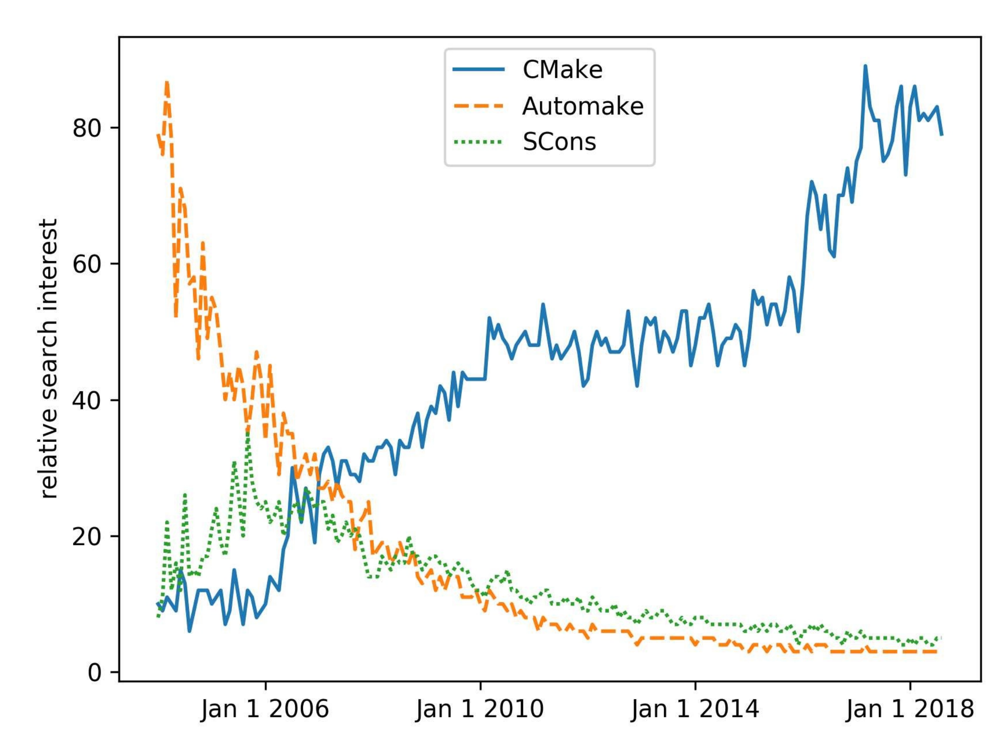
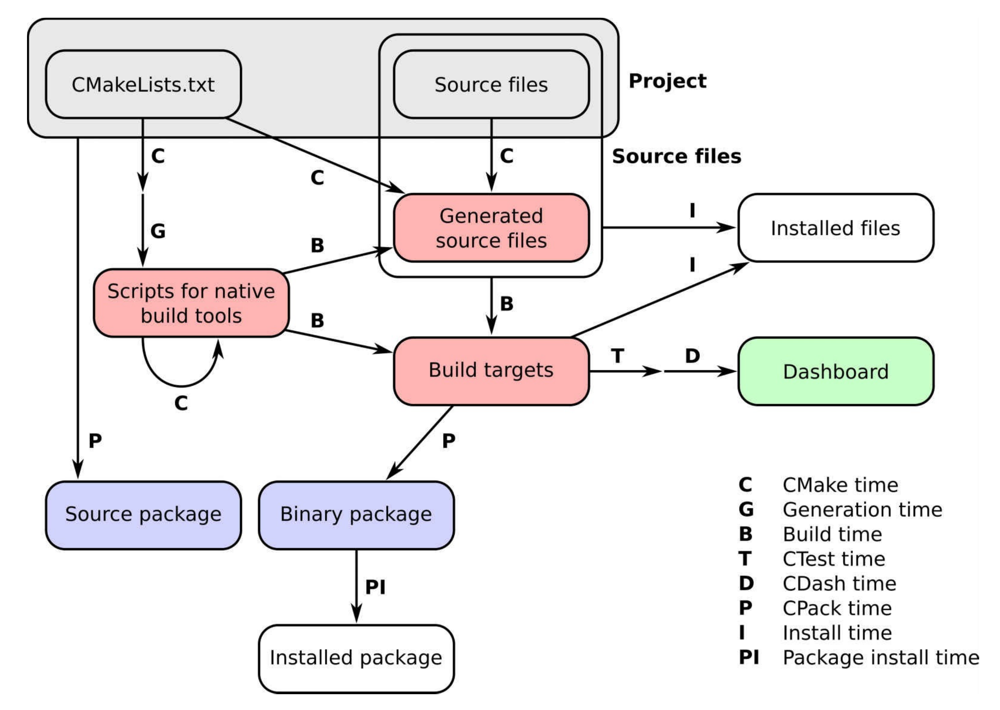
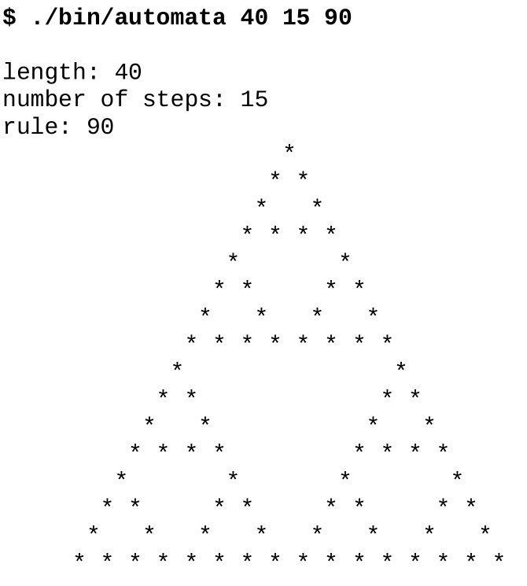
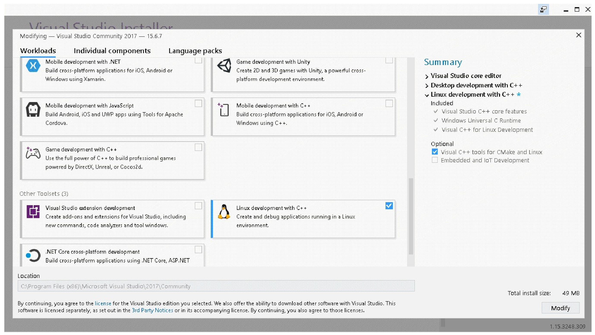
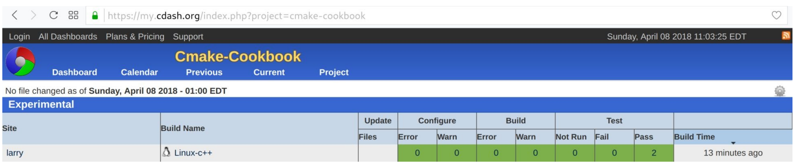
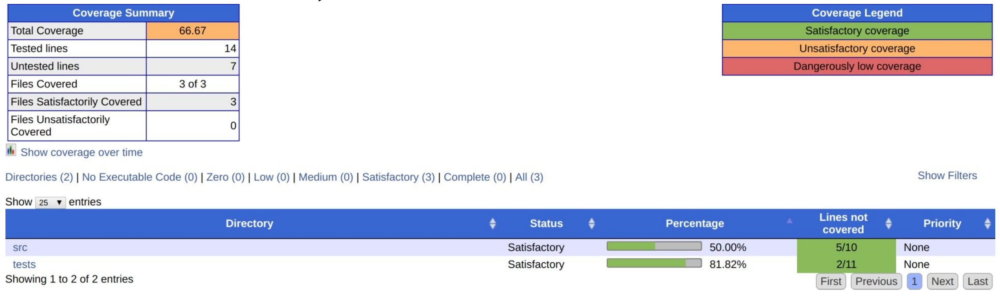

CMake Cookbook
- 作者：Radovan Bast & Roberto Di Remigio
- 译者：陈晓伟
- 首次出版于2018年9月
- ISBN 978-1-78847-071-1
本书概述
使用CMake软件对项目模块，进行构建、测试和打包。
本书作者
Radovan Bast就职于特罗姆森的挪威北极大学(UiT, University of Norway in Troms)的高性能计算小组工作，对项目的代码精简进行指导。他拥有化学博士学位，并作为开发人员参与了许多量子化学项目。喜欢新的编程语言和技术，并向学生和研究人员传授编程经验。在2008年与CMake结缘，并移植了大量源码，并且将一些源码迁移到CMake社区。
Roberto Di Remigio是挪威大学(特罗姆森)和美国弗吉尼亚理工学院的化学博士后研究员，目前在研究随机方法和求解模型。是PCMSolver和Psi4开源量子化学项目的开发人员。为量子化学的发展做出了贡献，其参与的项目有：Dirac、MRCPP、Dalton、LSDalton、Xcun和ReSpect。经常使用C++和Fortran编码。
我们要感谢本书评审Eric Noulard和Eric Noulard的宝贵意见和建议。特别是Eric的反馈和建议，明显提高了本书的质量。我们还感谢LoriA.Burns对第8章到第11章的评论和建议。特别感谢特罗姆森公共图书馆为写作和思考提供了一个良好环境。我们非常感谢Travis CI、GmbH、Appveyor Systems公司和Circle Internet Services公司提供的测试设备和支持——正是由于他们的支持，我们才有信心在主流操作系统中完成本书的示例。
本书评审
Eric Noulard博士，具有法国恩塞伊特大学的工程学学位，法国乌夫斯克大学的计算机科学博士学位。20多年来，使用多种语言编写源码。从2006年开始使用CMake，这些年来也一直是CMake的积极贡献者。其职业生涯中，曾为私人公司和政府机构工作。现在就职于Antiot，开发和营销高端信息检索技术和解决方案。
Eric Noulard来自以色列，是一名软件开发人员和作家。从2000年起就为置身于各种开源和开放文化项目。除此之外，还发起过游戏解决方案，比如Pysol FC系列纸牌游戏，采用了财富模式，解决了290多个欧拉问题。在平时，会写了一些故事、随笔和格言之类的文章。
本书相关
- github翻译地址：https://github.com/xiaoweiChen/CMake-Cookbook
- 本书源码下载地址：https://github.com/dev-cafe/cmake-cookbook
- 本书源码下载地址：https://github.com/PacktPublishing/CMake-Cookbook
前言
我们日常生活的每一个方面都有计算机软件的存在：它可以为我们触发的闹钟，并每时每刻的为我们提供通信、银行、天气、公交、日历、会议、旅行、相册、电视、音乐流、社交媒体、晚餐和电影预定等服务信息。
软件内部具有一定的层次结构：应用程序是基于框架构建，框架基于开发库，开发库使用更小的库或可执行文件，当然还有更小的组件。开发库和可执行文件通常需要使用源代码进行构建。我们通常只看到最外层，但软件内部需要仔细组织和构建。本书就是使用CMake，对使用源代码构建开发库和可执行文件的项目进行组织。
CMake及其姊妹CTest、CPack和CDash已经成为源码构建的主要工具集，在使用和流行性方面超过了许多类似工具，例如备受推崇的GNU自动工具和最新的基于Python的SCons构建系统。

随着时间的推移，搜索三个流行的构建系统：CMake、Automake和SCons。对比标准是通过搜索相关术语的次数来衡量的，其中数据由谷歌提供。
CMake项目的始于1999年，当时开发公司Kitware被委托设计一套新的工具来简化研究人员的日常工作软件。目标很明确：提供一组工具，可以在不同平台上配置、构建、测试和部署项目。有关CMake项目中设计的精彩叙述，请访问 https://www.aosabook.org/en/cmake.html 。
CMake是一个构建生成器，提供了强大的领域特定语言(DSL)来描述构建系统应该实现的功能。这是CMake的主要优势之一，它允许使用相同的CMake脚本集生成平台原生构建系统。CMake软件工具集，使开发人员可以完全控制给定项目的生命周期：
- CMake是描述如何在所有主要硬件和操作系统上配置、构建和安装项目，无论是构建可执行文件、库，还是两者都要构建。
- CTest定义测试、测试套件，并设置应该如何执行。
- CPack为打包需求提供了DSL。
- CDash将项目的测试结果在面板中展示。
俗话说得好：挖得越深，发现的石头(阻碍，困难)越多。为了编写这本书，我们仔细地对软件层进行了深入挖掘，这也是CMake的目标。不同的平台上构建不同的软件组件和库时，我们遇到的阻碍和承受的工作量有时令人畏惧，且每个组件和库都有自己的特点。不过，我们已经清除了许多阻碍，也很高兴与读者分享我们的成果和技巧。En... 总会留下一些石头，但每一块石头都会带来新的理解，社区欢迎你分享这些理解。
适读人群
编写能够在许多不同平台上本地、可靠并高效地运行的软件，对于工业和社会的所有部门都至关重要。软件构建系统就是这项任务的中心。它们是软件开发生命周期管理的关键部分：从孵化和原型开发到测试，一直到打包、部署和发布。
CMake旨在帮助您管理这些操作：如果希望使用CMake管理构建系统的软件开发人员，或者希望能够理解，并能修改其他人编写的CMake代码，那么这本书非常合适您。
覆盖内容
本书中有一系列循序渐进的任务。每一任务中，我们都介绍了相关的CMake信息，从而展示如何实现目标，而不是用细节来折磨读者。本书的最后，您将能够自信地处理日益复杂的操作，并在自己的实际项目中利用书中的技巧。
我们将讨论以下内容：
- 使用CMake配置、构建、测试和安装代码项目
- 检测用于条件编译的操作系统、处理器、库、文件和程序
- 提高代码的可移植性
- CMake帮助下，将大型代码库重构为模块
- 构建多语言项目
- 知道如何调整他人编写的CMake配置文件
- 打包项目进行发布
- 将项目迁移为CMake构建
CMake管理的项目的工作流发生在许多阶段(time)，我们称之为时序。可以简洁地总结如下图：

- CMake time或configure time，是CMake运行时的情况。这个阶段中，CMake将处理项目中的CMakeLists.txt文件并配置它。
- Generation time配置成功后，CMake将生成本地构建工具所需的脚本，以执行项目中的后续步骤。
- Build time这是在平台和工具原生构建脚本上调用原生构建工具的时候，这些脚本以前是由CMake生成的。此时，将调用编译器，并在特定的构建目录中构建目标(可执行文件和库)。注意递归的CMake time箭头：这看起来令人困惑，但是我们将在本书中多次使用它，用来实现平台无关的构建。
- CTest time或 test time，运行项目的测试套件，以检查目标是否按预期执行。
- CDash time或report time，将测试结果上传到面板，与其他开发人员共享。
- Install time，将项目的目标、源文件、可执行文件和库从构建目录安装到安装位置。
- CPack time或packaging time，将项目打包以便发布，可以是源代码，也可以是二进制代码。
- Package install time，在系统范围内安装新生成的包。
本书的路线图如下：
第1章，从简单的可执行文件到库，如何配置和使用CMake构建简单的可执行文件和库。
第2章，检测环境，如何使用简单的CMake命令与操作系统和处理器体系结构交互。
第3章，检测外部库和程序，如何简化对项目依赖项的检测。
第4章，创建和运行测试，解释如何利用CMake和CTest的功能来定义和运行测试。
第5章，配置时操作和构建时操作，如何使用CMake在构建过程的不同阶段执行定制化操作。
第6章，生成源码，CMake命令可自动生成源码。
第7章，结构化项目，用于组织您的项目，使它们更易于维护。
第8章，超级构建，解释了CMake超级构建模式，用于管理关键项目的依赖关系。
第9章，混合语言项目，构建不同编程语言混合的项目。
第10章，编写一个安装程序，使用CMake安装项目。
第11章，打包项目，如何使用CPack生成源文件，并将源文件打包，以及构建用于发布的Python和Conda包。
第12章，生成文档，如何使用CMake也生成代码的文档。
第13章，选择生成器和交叉编译，如何使用CMake交叉编译项目。
第14章，测试面板，如何将测试结果报告到在面板上。
第15章，将项目移植到CMake中，将展示实践示例、注意事项和一些技巧，这些将帮助您将项目移植到基于CMake的构建系统中。
预备知识
这是一本为程序员写的书，我们假设您以具备一定的基本知识，并熟悉以下内容：
- 熟悉命令行方式
- 熟悉本地开发软件的环境
- 熟悉编译语言C++、C或Fortran，以及您使用的编译器
- 熟悉Python
##示例源码
您可以从 https://github.com/dev-cafe/cmake-cookbook 下载本书的示例代码示例。有关详细信息，请参见设置系统部分。
彩图下载
我们还提供了一个PDF文件，其中包含本书中使用的屏幕截图/图表的彩色图像。您可以在这里下载: http://www.packtpub.com/sites/default/files/downloads/CMakeCookbook_ColorImages.pdf
##使用惯例
本书中使用了许多文本约定。
CodeInText：表示文本、文件夹名称、文件名、模块名称和目标名称中的代码命令。
代码块设置如下:
cmake_minimum_required(VERSION 3.5 FATAL_ERROR)
project(recipe-01 LANGUAGES CXX)
add_executable(hello-world hello-world.cpp)
任何命令行输入都是粗体的，并在命令前面包含一个$提示符来输入:
$ mkdir -p build
$ cd build
$ cmake ..
为了区分命令行输入和输出，我们将输出设置为非粗体：(当前译本不支持)
$ ./hello-world
Hello World!
NOTE 重要的提示会出现该标识。
TIPS 提示和技巧会出现该标识。
(PS:原始标识由于在线上观看会使内容错位，观看体验下降，从而换成文字)
额外读物
CMake的在线文档非常全面，我们将在书中引用它: https://cmake.org/documentation/
编写这本书的过程中，我们还受到了其他文章的启发：
- Daniel Pfeifer在GitHub上的介绍: https://github.com/boostcon/cppnow_presentations_2017/blob/master/05-192017_friday/effective_cmake__daniel_pfeifer__cppnow_05-19-2017.pdf
- Eric Noulard编写的CMake教程，可以在GitHub上找到: https://github.com/TheErk/CMake-tutorial
- Craig Scott的“cmake相关”博文: https://crascit.com/tag/cmake/
我们还推荐浏览Viktor Kirilov收集的CMake资源、脚本、模块和示例的列表: https://github.com/onqtam/awesome-cmake
我们的书并不是唯一一本涉及CMake的书：
- 2015年，由Ken Martin和Bill Hoffman合著的《精通CMake》，Kitware Inc.出版。
- Craig Scott的《Professional CMake》 https://crascit.com/professional-cmake/
联系方式
我们欢迎读者的反馈。
源代码改进和问题：请直接向 https://github.com/dev-cafe/cmake-cookbook 提出，并通过创建 https://github.com/dev-cafe/cmake-cookbook/issues 进行讨论
内容反馈：电子邮件 feedback@packtpub.com ，并在邮件主题中提到书名。如果你对本书的任何方面有任何疑问，请发邮件至 questions@packtpub.com
勘误表：虽然我们已经尽了一切努力确保我们的内容的准确性，但错误还是会有。如果您在这本书中发现了错误，务必告诉我们，不胜感激。可以访问 www.packtpub.com/submit-errata ，选择您的图书，单击Errata提交表单链接，并输入详细信息。
盗版：如果您在互联网上发现我们作品的任何形式的非法拷贝，希望提供相应地址或网站名称，我们将不胜感激。请通过 copyright@packtpub.com 联系我们，并提供该材料的链接。
如果你对写作感兴趣：如果有一个你擅长的主题，并且你对写作或为一本书做贡献感兴趣，请访问 authors.packtpub.com
第0章 配置环境
学习CMake之前，需要对系统进行设置，这样才能运行所有示例。
本章的主要内容有：
- 如何获取代码
- 如何在GNU/Linux、macOS和Windows上安装运行示例所需的所有工具
- 自动化测试如何工作
- 如何报告问题，并提出改进建议
我们会尽可能让初学者看懂本书的内容。不过，这本书并非完全适合零基础人士。我们假设，您对构建目标平台上可用的软件，及本地工具有基本的了解。有Git版本控制的经验，可与源码库进行“互动"(不是必需)。
0.1 获取代码
本书的源代码可以在GitHub上找到，网址是 https://github.com/dev-cafe/cmake-cookbook 。开源代码遵循MIT许可：只要原始版权和许可声明包含在软件/源代码的任何副本中，可以以任何方式重用和重新混合代码。许可的全文可以在 https://opensource.org/licenses/MIT 中看到。
为了测试源码，需要使用Git获取代码：
- 主要的GNU/Linux发行版都可以通过包管理器安装Git。也可以从Git项目网站 https://git-scm.com 下载二进制发行版，进行安装。
- MacOS上，可以使用自制或MacPorts安装Git。
- Windows上，可以从Git项目网站( https://git-scm.com )下载Git可执行安装文件。
可以通过GitHub桌面客户端访问这些示例，网址为 https://desktop.github.com 。
另一种选择是从 https://github.com/dev-cafe/cmake-cookbook 下载zip文件。
安装Git后，可以将远程库克隆到本地计算机，如下所示：
$ git clone https://github.com/dev-cafe/cmake-cookbook.git
这将创建一个名为cmake-cookbook的文件夹。本书内容与源码的章节对应，书中章节的编号和源码的顺序相同。
在GNU/Linux、MacOS和Windows上，使用最新的持续集成进行测试。我们会在之后讨论测试的设置。
我们用标签v1.0标记了与本书中打印的示例相对应的版本。为了与书中内容对应，可以如下获取此特定版本：
$ git clone --single-branch -b v1.0 https://github.com/dev-cafe/cmake-cookbook.git
我们希望收到Bug修复，并且GitHub库将继续发展。要获取更新，可以选择库的master分支。
0.2 Docker镜像
在Docker中进行环境搭建，无疑是非常方便的(依赖项都已经安装好了)。我们的Docker镜像是基于Ubuntu 18.04的镜像制作，您可以按照官方文档https://docs.docker.com 在您的操作系统上安装Docker。
Docker安装好后，您可以下载并运行我们的镜像，然后可以对本书示例进行测试:
$ docker run -it devcafe/cmake-cookbook_ubuntu-18.04
$ git clone https://github.com/dev-cafe/cmake-cookbook.git
$ cd cmake-cookbook
$ pipenv install --three
$ pipenv run python testing/collect_tests.py 'chapter-*/recipe-*'
0.3 安装必要的软件
与在Docker中使用不同，另一种选择是直接在主机操作系统上安装依赖项。为此，我们概括了一个工具栈，可以作为示例的基础。您必须安装以下组件：
- CMake
- 编译器
- 自动化构建工具
- Python
我们还会详细介绍，如何安装所需的某些依赖项。
0.3.1 获取CMake
本书要使用的CMake最低需要为3.5。只有少数示例，演示了3.5版之后引入的新功能。每个示例都有提示，指出示例代码在哪里可用，以及所需的CMake的最低版本。提示信息如下:
NOTE:这个示例的代码可以在 https://github.com/dev-cafe/cmake-cookbook/tree/v1.0/chapter-03/recipe10 中找到，其中包括一个C示例。该示例在CMake 3.5版(或更高版本)中是有效的，并且已经在GNU/Linux、macOS和Windows上进行了测试。
有些(如果不是大多数)示例仍然适用于较低版本的CMake。但是，我们没有测试过这个。我们认为CMake 3.5是大多数系统和发行版的默认软件，而且升级CMake也没什么难度。
CMake可以以多种方式安装。下载并提取由Kitware维护的二进制发行版，可以在所有平台上运行，下载页面位于 https://cmake.org/download/ 。
大多数GNU/Linux发行版都在包管理器中提供了CMake。然而，在一些发行版中，版本可能比较旧，因此下载由Kitware提供的二进制文件当然是首选。下面的命令将从CMake打包的版本中下载并安装在$HOME/Deps/CMake(根据您的偏好调整此路径)下的CMake 3.5.2：
$ cmake_version="3.5.2"
$ target_path=$HOME/Deps/cmake/${cmake_version}
$ cmake_url="https://cmake.org/files/v${cmake_version%.*}/cmake-${cmake_version}-Linux-x86_64.tar.gz"
$ mkdir -p "${target_path}"
$ curl -Ls "${cmake_url}" | tar -xz -C "${target_path}" --strip-components=1
$ export PATH=$HOME/Deps/cmake/${cmake_version}/bin${PATH:+:$PATH}
$ cmake --version
macOS获取最新版本的CMake：
$ brew upgrade cmake
Windows上，可以使用Visual Studio 2017，它提供了CMake支持。Visual Studio 2017的安装记录在第13章，可选生成器和交叉编译，示例技巧1，使用Visual Studio 2017构建CMake项目。
或者，可以从 https://www.msys2.org 下载MSYS2安装程序，按照其中给出的说明更新包列表，然后使用包管理器pacman安装CMake。下面的代码正在构建64位版本：
$ pacman -S mingw64/mingw-w64-x86_64-cmake
对于32位版本，请使用以下代码(为了简单起见，我们以后只会提到64位版本)：
$ pacman -S mingw64/mingw-w64-i686-cmake
MSYS2的另一个特性是在Windows上提供了一个终端，比较像Unix操作系统上的终端，提供可用的开发环境。
0.3.2 编译器
我们将需要C++、C和Fortran的编译器。编译器的版本需要比较新，因为我们需要在大多数示例中支持最新的语言标准。CMake为来自商业和非商业供应商的许多编译器，提供了非常好的支持。为了让示例始终能够跨平台，并尽可能独立于操作系统，我们使用了开源编译器:
-
GNU/Linux上，GNU编译器集合(GCC)是直接的选择。它是免费的，适用于所有发行版。例如，在Ubuntu上，可以安装以下编译器：
$ sudo apt-get install g++ gcc gfortran -
在LLVM家族中，Clang也是C++和C编译器的一个很好的选择：
$ sudo apt-get install clang clang++ gfortran -
macOS上，XCode附带的LLVM编译器适用于C++和C。我们在macOS测试中使用了GCC的Fortran编译器。GCC编译器必须使用包管理器单独安装：
$ brew install gcc -
Windows上，可以使用Visual Studio测试C++和C示例。或者，可以使用MSYS2安装程序，MSYS2环境中(对于64位版本)使用以下单个命令安装整个工具链，包括C++、C和Fortran编译器：
$ pacman -S mingw64/mingw-w64-x86_64-toolchain
0.3.3 自动化构建工具
自动化构建工具为示例中的项目提供构建和链接的基础设施，最终会安装和使用什么，很大程度上取决于操作系统：
- GNU/Linux上，GNU Make(很可能)在安装编译器时自动安装。
- macOS上，XCode将提供GNU Make。
- Windows上，Visual Studio提供了完整的基础设施。MSYS2环境中，GNU Make作为mingw64/mingw-w64-x86_64工具链包的一部分，进行安装。
为了获得最大的可移植性，我们尽可能使示例不受这些系统相关细节的影响。这种方法的优点是配置、构建和链接，是每个编译器的固有特性。
Ninja是一个不错的自动化构建工具，适用于GNU/Linux、macOS和Windows。Ninja注重速度，特别是增量重构。为GNU/Linux、macOS和Windows预先打包的二进制文件可以在GitHub库中找到，网址是 https://github.com/ninja-build/ninja/releases 。
Fortran项目中使用CMake和Ninja需要注意。使用CMake 3.7.2或更高版本是必要的，Kitware还有维护Ninja，相关包可以在 https://github.com/Kitware/ninja/releases 上找到。
在GNU/Linux上，可以使用以下一系列命令安装Ninja：
$ mkdir -p ninja
$ ninja_url="https://github.com/Kitware/ninja/releases/download/v1.8.2.g3bbbe.kitware.dyndep-1.jobserver-1/ninja-1.8.2.g3bbbe.kitware.dyndep-1.jobserver-1_x86_64-linux-gnu.tar.gz"
$ curl -Ls ${ninja_url} | tar -xz -C ninja --strip-components=1
$ export PATH=$HOME/Deps/ninja${PATH:+:$PATH}
Windows上，使用MSYS2环境(假设是64位版本)执行以下命令：
$ pacman -S mingw64/mingw-w64-x86_64-ninja
NOTE:我们建议阅读这篇文章 http://www.aosabook.org/en/posa/ninja.html ，里面是对NInja编译器的历史和设计的选择，进行启发性的讨论。
0.3.4 Python
本书主要关于CMake，但是其中的一些方法，需要使用Python。因此，也需要对Python进行安装：解释器、头文件和库。Python 2.7的生命周期结束于2020年，因此我们将使用Python 3.5。
在Ubuntu 14.04 LTS上(这是Travis CI使用的环境，我们后面会讨论)，Python 3.5可以安装如下：
sudo apt-get install python3.5-dev
Windows可使用MSYS2环境，Python安装方法如下(假设是64位版本):
$ pacman -S mingw64/mingw-w64-x86_64-python3
$ pacman -S mingw64/mingw-w64-x86_64-python3-pip
$ python3 -m pip install pipenv
为了运行已经写好的测试机制，还需要一些特定的Python模块。可以使用包管理器在系统范围内安装这些包，也可以在隔离的环境中安装。建议采用后一种方法：
- 可以在不影响系统环境的情况下，将安装包进行清理/安装。
- 可以在没有管理员权限的情况下安装包。
- 可以降低软件版本和依赖项冲突的风险。
- 为了复现性，可以更好地控制包的依赖性。
为此，我们准备了一个Pipfile。结合pipfile.lock，可以使用Pipenv( http://pipenv.readthedocs )。创建一个独立的环境，并安装所有包。要为示例库创建此环境，可在库的顶层目录中运行以下命令：
$ pip install --user pip pipenv --upgrade
$ pipenv install --python python3.5
执行pipenv shell命令会进入一个命令行环境，其中包含特定版本的Python和可用的包。执行exit将退出当前环境。当然，还可以使用pipenv run在隔离的环境中直接执行命令。
或者，可以将库中的requirements.txt文件与Virtualenv( http://docs.pythonguide.org/en/latest/dev/virtualenvs/ )和pip结合使用，以达到相同的效果：
$ virtualenv --python=python3.5 venv
$ source venv/bin/activate
$ pip install -r requirements.txt
可以使用deactivate命令退出虚拟环境。
另一种选择是使用Conda环境，我们建议安装Miniconda。将把最新的Miniconda安装到GNU/Linux的$HOME/Deps/conda目录(从 https://repo.continuum.io/miniconda/miniconda3-latestlinux-x86_64.sh 下载)或macOS(从 https://repo.continuum.io/miniconda/miniconda3-latestmacosx-x86_64.sh 下载)：
$ curl -Ls https://repo.continuum.io/miniconda/Miniconda3-latest-Linux-x86_64.sh > miniconda.sh
$ bash miniconda.sh -b -p "$HOME"/Deps/conda &> /dev/null
$ touch "$HOME"/Deps/conda/conda-meta/pinned
$ export PATH=$HOME/Deps/conda/bin${PATH:+:$PATH}
$ conda config --set show_channel_urls True
$ conda config --set changeps1 no
$ conda update --all
$ conda clean -tipy
Windows上，可以从 https://repo.continuum.io/miniconda/Miniconda3-latest-Windows-x86_64.exe 下载最新的Miniconda。该软件包可以使用PowerShell安装，如下:
$basedir = $pwd.Path + "\"
$filepath = $basedir + "Miniconda3-latest-Windows-x86_64.exe"
$Anaconda_loc = "C:\Deps\conda"
$args = "/InstallationType=JustMe /AddToPath=0 /RegisterPython=0 /S /D=$Anaconda_loc"
Start-Process -FilePath $filepath -ArgumentList $args -Wait -Passthru
$conda_path = $Anaconda_loc + "\Scripts\conda.exe"
$args = "config --set show_channel_urls True"
Start-Process -FilePath "$conda_path" -ArgumentList $args -Wait -Passthru
$args = "config --set changeps1 no"
Start-Process -FilePath "$conda_path" -ArgumentList $args -Wait -Passthru
$args = "update --all"
Start-Process -FilePath "$conda_path" -ArgumentList $args -Wait -Passthru
$args = "clean -tipy"
Start-Process -FilePath "$conda_path" -ArgumentList $args -Wait -Passthru
安装了Conda后, Python模块可以按如下方式安装:
$ conda create -n cmake-cookbook python=3.5
$ conda activate cmake-cookbook
$ conda install --file requirements.txt
执行conda deactivate将退出conda的环境。
0.3.5 依赖软件
有些示例需要额外的依赖，这些软件将在这里介绍。
0.3.5.1 BLAS和LAPACK
大多数Linux发行版都为BLAS和LAPACK提供包。例如，在Ubuntu 14.04 LTS上，您可以运行以下命令：
$ sudo apt-get install libatlas-dev liblapack-dev liblapacke-dev
macOS上，XCode附带的加速库可以满足我们的需要。
Windows使用MSYS2环境，可以按如下方式安装这些库(假设是64位版本)：
$ pacman -S mingw64/mingw-w64-x86_64-openblas
或者，可以从GitHub ( https://github.com/referlapack/lapack )下载BLAS和LAPACK的参考实现，并从源代码编译库。商业供应商为平台提供安装程序，安装包中有BLAS和LAPACK相关的API。
0.3.5.2 消息传递接口(MPI)
MPI有许多商业和非商业实现。这里，安装免费的非商业实现就足够了。在Ubuntu 14.04 LTS上，我们推荐OpenMPI。可使用以下命令安装：
$ sudo apt-get install openmpi-bin libopenmpi-dev
在macOS上，Homebrew发布了MPICH：
$ brew install mpich
还可以从 https://www.open-mpi.org/software/ 上获取源代码，编译OpenMPI。
对于Windows，Microsoft MPI可以通过 https://msdn.microsoft.com/en-us/library/bb524831(v=vs.85).aspx 下载安装。
0.3.5.3 线性代数模板库
一些示例需要线性代数模板库，版本为3.3或更高。如果包管理器不提供Eigen，可以使用在线打包源(http://eigen.tuxfamily.org )安装它。例如，在GNU/Linux和macOS上，可以将Eigen安装到$HOME/Deps/Eigen目录:
$ eigen_version="3.3.4"
$ mkdir -p eigen
$ curl -Ls http://bitbucket.org/eigen/eigen/get/${eigen_version}.tar.gz | tar -xz -C eigen --strip-components=1
$ cd eigen
$ cmake -H. -Bbuild_eigen -
DCMAKE_INSTALL_PREFIX="$HOME/Deps/eigen" &> /dev/null
$ cmake --build build_eigen -- install &> /dev/null
0.3.5.4 Boost库
Boost库适用于各种操作系统，大多数Linux发行版都通过它们的包管理器提供该库的安装。例如，在Ubuntu 14.04 LTS上，Boost文件系统库、Boost Python库和Boost测试库可以通过以下命令安装：
$ sudo apt-get install libboost-filesystem-dev libboost-python-dev libboost-test-dev
对于macOS, MacPorts和自制程序都为最新版本的Boost提供了安装包。我们在macOS上的测试设置安装Boost如下：
$ brew cask uninstall --force oclint
$ brew uninstall --force --ignore-dependencies boost
$ brew install boost
$ brew install boost-python3
Windows的二进制发行版也可以从Boost网站 http://www.boost.org 下载。或者，可以从 https://www.boost.org 下载源代码，并自己编译Boost库。
0.3.5.5 交叉编译器
在类Debian/Ubuntu系统上，可以使用以下命令安装交叉编译器：
$ sudo apt-get install gcc-mingw-w64 g++-mingw-w64 gfortran-mingw-w64
在macOS上，使用Brew，可以安装以下交叉编译器：
$ brew install mingw-w64
其他包管理器提供相应的包。使用打包的跨编译器的另一种方法，是使用M交叉环境( https://mxe.cc )，并从源代码对其进行构建。
0.3.5.6 ZeroMQ, pkg-config, UUID和Doxygen
Ubuntu 14.04 LTS上，这些包可以安装如下：
$ sudo apt-get install pkg-config libzmq3-dev doxygen graphviz-dev uuid-dev
macOS上，我们建议使用Brew安装：
$ brew install ossp-uuid pkg-config zeromq doxygen
pkg-config程序和UUID库只在类Unix系统上可用。
Windows上使用MSYS2环境，可以按如下方式安装这些依赖项(假设是64位版本)：
$ pacman -S mingw64/mingw-w64-x86_64-zeromq
$ pacman -S mingw64/mingw-w64-x86_64-pkg-config
$ pacman -S mingw64/mingw-w64-x86_64-doxygen
$ pacman -S mingw64/mingw-w64-x86_64-graphviz
0.3.5.7 Conda的构建和部署
想要使用Conda打包的示例的话，需要Miniconda和Conda构建和部署工具。Miniconda的安装说明之前已经给出。要在GNU/Linux和macOS上安装Conda构建和部署工具，请运行以下命令:
$ conda install --yes --quiet conda-build anaconda-client jinja2 setuptools
$ conda clean -tipsy
$ conda info -a
这些工具也可以安装在Windows上:
$conda_path = "C:\Deps\conda\Scripts\conda.exe"
$args = "install --yes --quiet conda-build anaconda-client jinja2 setuptools"
Start-Process -FilePath "$conda_path" -ArgumentList $args -Wait -Passthru
$args = "clean -tipsy"
Start-Process -FilePath "$conda_path" -ArgumentList $args -Wait -Passthru
$args = "info -a"
Start-Process -FilePath "$conda_path" -ArgumentList $args -Wait -Passthru
0.4 测试环境
示例在下列持续集成(CI)上进行过测试：
- Travis( https://travis-ci.org )用于GNU/Linux和macOS
- Appveyor( https://www.appveyor.com )用于Windows
- CircleCI ( https://circleci.com )用于附加的GNU/Linux测试和商业编译器
CI服务的配置文件可以在示例库中找到( https://github.com/dev-cafe/cmake-cookbook/ ):
- Travis的配置文件为
travis.yml - Appveyor的配置文件为
.appveyor.yml - CircleCI的配置文件为
.circleci/config.yml - Travis和Appveyor的其他安装脚本，可以在
testing/dependencies文件夹中找到。
NOTE:GNU/Linux系统上，Travis使用CMake 3.5.2和CMake 3.12.1对实例进行测试。macOS系统上用CMake 3.12.1进行测试。Appveyor使用CMake 3.11.3进行测试。Circle使用CMake 3.12.1进行测试。
测试机制是一组Python脚本，包含在testing文件夹中。脚本collect_tests.py将运行测试并报告它们的状态。示例也可以单独测试，也可以批量测试； collect_tests.py接受正则表达式作为命令行输入，例如:
$ pipenv run python testing/collect_tests.py 'chapter-0[1,7]/recipe-0[1,2,5]'
该命令将对第1章和第7章的示例1、2和5进行测试。输出的示例如下:
要获得更详细的输出，可以设置环境变量VERBOSE_OUTPUT=ON：
$ env VERBOSE_OUTPUT=ON pipenv run python testing/collect_tests.py 'chapter-*/recipe-*'
0.5 上报问题并提出改进建议
请将遇到的问题反馈到 https://github.com/dev-cafe/cmake-cookbook/issues。
要对源码库进行贡献，我们建议对原始库 https://github.com/dev-cafe/cmake-cookbook 进行Fork，并使用Pull Request提交更改，可以参考这个页面 https://help.github.com/articles/creating-a-pull-request-from-a-fork/ 。
对于非重要更改，我们建议在发送Pull Request之前，首先在 https://github.com/devcafe/cmake-cookbook/issues 上创建一个问题进行描述，并讨论所要更改的问题。
第1章 从可执行文件到库
本章的主要内容有：
- 将单个源码文件编译为可执行文件
- 切换生成器
- 构建和连接静态库与动态库
- 用条件语句控制编译
- 向用户显示选项
- 指定编译器
- 切换构建类型
- 设置编译器选项
- 为语言设定标准
- 使用控制流进行构造
本章的示例将指导您完成构建代码所需的基本任务：编译可执行文件、编译库、根据用户输入执行构建操作等等。CMake是一个构建系统生成器，特别适合于独立平台和编译器。除非另有说明，否则所有配置都独立于操作系统，它们可以在GNU/Linux、macOS和Windows的系统下运行。
本书的示例主要为C++项目设计，并使用C++示例进行了演示，但CMake也可以用于其他语言的项目，包括C和Fortran。我们会尝试一些有意思的配置，其中包含了一些C++、C和Fortran语言示例。您可以根据自己喜好，选择性了解。有些示例是定制的，以突出在选择特定语言时需要面临的挑战。
1.1 将单个源文件编译为可执行文件
NOTE:此示例代码可以在 https://github.com/dev-cafe/cmake-cookbook/tree/v1.0/chapter-01/recipe-01 中找到，包含C++、C和Fortran示例。该示例在CMake 3.5版(或更高版本)中是有效的，并且已经在GNU/Linux、macOS和Windows上进行过测试。
本节示例中，我们将演示如何运行CMake配置和构建一个简单的项目。该项目由单个源文件组成，用于生成可执行文件。我们将用C++讨论这个项目，您在GitHub示例库中可以找到C和Fortran的例子。
准备工作
我们希望将以下源代码编译为单个可执行文件：
#include <cstdlib>
#include <iostream>
#include <string>
std::string say_hello() { return std::string("Hello, CMake world!"); }
int main() {
std::cout << say_hello() << std::endl;
return EXIT_SUCCESS;
}
具体实施
除了源文件之外，我们还需要向CMake提供项目配置描述。该描述使用CMake完成，完整的文档可以在 https://cmake.org/cmake/help/latest/ 找到。我们把CMake指令放入一个名为CMakeLists.txt的文件中。
NOTE:文件的名称区分大小写，必须命名为CMakeLists.txt，CMake才能够解析。
具体步骤如下：
-
用编辑器打开一个文本文件，将这个文件命名为
CMakeLists.txt。 -
第一行，设置CMake所需的最低版本。如果使用的CMake版本低于该版本，则会发出致命错误：
cmake_minimum_required(VERSION 3.5 FATAL_ERROR) -
第二行，声明了项目的名称(
recipe-01)和支持的编程语言(CXX代表C++)：project(recipe-01 LANGUAGES CXX) -
指示CMake创建一个新目标：可执行文件
hello-world。这个可执行文件是通过编译和链接源文件hello-world.cpp生成的。CMake将为编译器使用默认设置，并自动选择生成工具：add_executable(hello-world hello-world.cpp) -
将该文件与源文件
hello-world.cpp放在相同的目录中。记住，它只能被命名为CMakeLists.txt。 -
现在，可以通过创建
build目录，在build目录下来配置项目：$ mkdir -p build $ cd build $ cmake .. -- The CXX compiler identification is GNU 8.1.0 -- Check for working CXX compiler: /usr/bin/c++ -- Check for working CXX compiler: /usr/bin/c++ -- works -- Detecting CXX compiler ABI info -- Detecting CXX compiler ABI info - done -- Detecting CXX compile features -- Detecting CXX compile features - done -- Configuring done -- Generating done -- Build files have been written to: /home/user/cmake-cookbook/chapter-01/recipe-01/cxx-example/build -
如果一切顺利，项目的配置已经在
build目录中生成。我们现在可以编译可执行文件：$ cmake --build . Scanning dependencies of target hello-world [ 50%] Building CXX object CMakeFiles/hello-world.dir/hello-world.cpp.o [100%] Linking CXX executable hello-world [100%] Built target hello-world
工作原理
示例中，我们使用了一个简单的CMakeLists.txt来构建“Hello world”可执行文件：
cmake_minimum_required(VERSION 3.5 FATAL_ERROR)
project(recipe-01 LANGUAGES CXX)
add_executable(hello-world hello-world.cpp)
NOTE:CMake语言不区分大小写，但是参数区分大小写。
TIPS:CMake中，C++是默认的编程语言。不过，我们还是建议使用LANGUAGES选项在project命令中显式地声明项目的语言。
要配置项目并生成构建器，我们必须通过命令行界面(CLI)运行CMake。CMake CLI提供了许多选项，cmake -help将输出以显示列出所有可用选项的完整帮助信息，我们将在书中对这些选项进行更多地了解。正如您将从cmake -help的输出中显示的内容，它们中的大多数选项会让你您访问CMake手册，查看详细信息。通过下列命令生成构建器：
$ mkdir -p build
$ cd build
$ cmake ..
这里，我们创建了一个目录build(生成构建器的位置)，进入build目录，并通过指定CMakeLists.txt的位置(本例中位于父目录中)来调用CMake。可以使用以下命令行来实现相同的效果：
$ cmake -H. -Bbuild
该命令是跨平台的，使用了-H和-B为CLI选项。-H表示当前目录中搜索根CMakeLists.txt文件。-Bbuild告诉CMake在一个名为build的目录中生成所有的文件。
NOTE:cmake -H. -Bbuild也属于CMake标准使用方式: https://cmake.org/pipermail/cmake-developers/2018-January/030520.html 。不过，我们将在本书中使用传统方法(创建一个构建目录，进入其中，并通过将CMake指向CMakeLists.txt的位置来配置项目)。
运行cmake命令会输出一系列状态消息，显示配置信息：
$ cmake ..
-- The CXX compiler identification is GNU 8.1.0
-- Check for working CXX compiler: /usr/bin/c++
-- Check for working CXX compiler: /usr/bin/c++ -- works
-- Detecting CXX compiler ABI info
-- Detecting CXX compiler ABI info - done
-- Detecting CXX compile features
-- Detecting CXX compile features - done
-- Configuring done
-- Generating done
-- Build files have been written to: /home/user/cmake-cookbook/chapter-01/recipe-01/cxx-example/build
NOTE:在与CMakeLists.txt相同的目录中执行cmake .，原则上足以配置一个项目。然而，CMake会将所有生成的文件写到项目的根目录中。这将是一个源代码内构建，通常是不推荐的，因为这会混合源代码和项目的目录树。我们首选的是源外构建。
CMake是一个构建系统生成器。将描述构建系统(如：Unix Makefile、Ninja、Visual Studio等)应当如何操作才能编译代码。然后，CMake为所选的构建系统生成相应的指令。默认情况下，在GNU/Linux和macOS系统上，CMake使用Unix Makefile生成器。Windows上，Visual Studio是默认的生成器。在下一个示例中，我们将进一步研究生成器，并在第13章中重新讨论生成器。
GNU/Linux上，CMake默认生成Unix Makefile来构建项目：
Makefile:make将运行指令来构建项目。CMakefile：包含临时文件的目录，CMake用于检测操作系统、编译器等。此外，根据所选的生成器，它还包含特定的文件。cmake_install.cmake：处理安装规则的CMake脚本，在项目安装时使用。CMakeCache.txt：如文件名所示，CMake缓存。CMake在重新运行配置时使用这个文件。
要构建示例项目，我们运行以下命令：
$ cmake --build .
最后，CMake不强制指定构建目录执行名称或位置，我们完全可以把它放在项目路径之外。这样做同样有效：
$ mkdir -p /tmp/someplace
$ cd /tmp/someplace
$ cmake /path/to/source
$ cmake --build .
更多信息
官方文档 https://cmake.org/runningcmake/ 给出了运行CMake的简要概述。由CMake生成的构建系统，即上面给出的示例中的Makefile，将包含为给定项目构建目标文件、可执行文件和库的目标及规则。hello-world可执行文件是在当前示例中的唯一目标，运行以下命令：
$ cmake --build . --target help
The following are some of the valid targets for this Makefile:
... all (the default if no target is provided)
... clean
... depend
... rebuild_cache
... hello-world
... edit_cache
... hello-world.o
... hello-world.i
... hello-world.s
CMake生成的目标比构建可执行文件的目标要多。可以使用cmake --build . --target <target-name>语法，实现如下功能：
- all(或Visual Studio generator中的ALL_BUILD)是默认目标，将在项目中构建所有目标。
- clean，删除所有生成的文件。
- rebuild_cache，将调用CMake为源文件生成依赖(如果有的话)。
- edit_cache，这个目标允许直接编辑缓存。
对于更复杂的项目，通过测试阶段和安装规则，CMake将生成额外的目标：
- test(或Visual Studio generator中的RUN_TESTS)将在CTest的帮助下运行测试套件。我们将在第4章中详细讨论测试和CTest。
- install，将执行项目安装规则。我们将在第10章中讨论安装规则。
- package，此目标将调用CPack为项目生成可分发的包。打包和CPack将在第11章中讨论。
1.2 切换生成器
NOTE:此示例代码可以在 https://github.com/dev-cafe/cmake-cookbook/tree/v1.0/chapter-01/recipe-02 中找到，其中有一个C++、C和Fortran示例。该配置在CMake 3.5版(或更高版本)下测试没问题，并且已经在GNU/Linux、macOS和Windows上进行了测试。
CMake是一个构建系统生成器，可以使用单个CMakeLists.txt为不同平台上的不同工具集配置项目。您可以在CMakeLists.txt中描述构建系统必须运行的操作，以配置并编译代码。基于这些指令，CMake将为所选的构建系统(Unix Makefile、Ninja、Visual Studio等等)生成相应的指令。我们将在第13章中重新讨论生成器。
准备工作
CMake针对不同平台支持本地构建工具列表。同时支持命令行工具(如Unix Makefile和Ninja)和集成开发环境(IDE)工具。用以下命令，可在平台上找到生成器名单，以及已安装的CMake版本：
$ cmake --help
这个命令的输出，将列出CMake命令行界面上所有的选项，您会找到可用生成器的列表。例如，安装了CMake 3.11.2的GNU/Linux机器上的输出：
Generators
The following generators are available on this platform:
Unix Makefiles = Generates standard UNIX makefiles.
Ninja = Generates build.ninja files.
Watcom WMake = Generates Watcom WMake makefiles.
CodeBlocks - Ninja = Generates CodeBlocks project files.
CodeBlocks - Unix Makefiles = Generates CodeBlocks project files.
CodeLite - Ninja = Generates CodeLite project files.
CodeLite - Unix Makefiles = Generates CodeLite project files.
Sublime Text 2 - Ninja = Generates Sublime Text 2 project files.
Sublime Text 2 - Unix Makefiles = Generates Sublime Text 2 project files.
Kate - Ninja = Generates Kate project files.
Kate - Unix Makefiles = Generates Kate project files.
Eclipse CDT4 - Ninja = Generates Eclipse CDT 4.0 project files.
Eclipse CDT4 - Unix Makefiles= Generates Eclipse CDT 4.0 project files.
使用此示例，我们将展示为项目切换生成器是多么EASY。
具体实施
我们将重用前一节示例中的hello-world.cpp和CMakeLists.txt。惟一的区别在使用CMake时，因为现在必须显式地使用命令行方式，用-G切换生成器。
-
首先，使用以下步骤配置项目:
$ mkdir -p build $ cd build $ cmake -G Ninja .. -- The CXX compiler identification is GNU 8.1.0 -- Check for working CXX compiler: /usr/bin/c++ -- Check for working CXX compiler: /usr/bin/c++ -- works -- Detecting CXX compiler ABI info -- Detecting CXX compiler ABI info - done -- Detecting CXX compile features -- Detecting CXX compile features - done -- Configuring done -- Generating done -- Build files have been written to: /home/user/cmake-cookbook/chapter-01/recipe-02/cxx-exampl -
第二步，构建项目：
$ cmake --build . [2/2] Linking CXX executable hello-world
如何工作
与前一个配置相比，每一步的输出没什么变化。每个生成器都有自己的文件集，所以编译步骤的输出和构建目录的内容是不同的：
build.ninja和rules.ninja：包含Ninja的所有的构建语句和构建规则。CMakeCache.txt：CMake会在这个文件中进行缓存，与生成器无关。CMakeFiles：包含由CMake在配置期间生成的临时文件。cmake_install.cmake：CMake脚本处理安装规则，并在安装时使用。
cmake --build .将ninja命令封装在一个跨平台的接口中。
更多信息
我们将在第13章中讨论可选生成器和交叉编译。
要了解关于生成器的更多信息，CMake官方文档是一个很好的选择: https://cmake.org/cmake/help/latest/manual/cmake-generators.7.html
1.3 构建和链接静态库和动态库
NOTE: 这个示例代码可以在 https://github.com/dev-cafe/cmake-cookbook/tree/v1.0/chapter-01/recipe-03 找到，其中有C++和Fortran示例。该配置在CMake 3.5版(或更高版本)测试有效的，并且已经在GNU/Linux、macOS和Windows上进行了测试。
项目中会有单个源文件构建的多个可执行文件的可能。项目中有多个源文件，通常分布在不同子目录中。这种实践有助于项目的源代码结构，而且支持模块化、代码重用和关注点分离。同时，这种分离可以简化并加速项目的重新编译。本示例中，我们将展示如何将源代码编译到库中，以及如何链接这些库。
准备工作
回看第一个例子，这里并不再为可执行文件提供单个源文件，我们现在将引入一个类，用来包装要打印到屏幕上的消息。更新一下的hello-world.cpp:
#include "Message.hpp"
#include <cstdlib>
#include <iostream>
int main() {
Message say_hello("Hello, CMake World!");
std::cout << say_hello << std::endl;
Message say_goodbye("Goodbye, CMake World");
std::cout << say_goodbye << std::endl;
return EXIT_SUCCESS;
}
Message类包装了一个字符串，并提供重载过的<<操作，并且包括两个源码文件：Message.hpp头文件与Message.cpp源文件。Message.hpp中的接口包含以下内容：
#pragma once
#include <iosfwd>
#include <string>
class Message {
public:
Message(const std::string &m) : message_(m) {}
friend std::ostream &operator<<(std::ostream &os, Message &obj) {
return obj.printObject(os);
}
private:
std::string message_;
std::ostream &printObject(std::ostream &os);
};
Message.cpp实现如下：
#include "Message.hpp"
#include <iostream>
#include <string>
std::ostream &Message::printObject(std::ostream &os) {
os << "This is my very nice message: " << std::endl;
os << message_;
return os;
}
具体实施
这里有两个文件需要编译，所以CMakeLists.txt必须进行修改。本例中，先把它们编译成一个库，而不是直接编译成可执行文件:
-
创建目标——静态库。库的名称和源码文件名相同，具体代码如下：
add_library(message STATIC Message.hpp Message.cpp ) -
创建
hello-world可执行文件的目标部分不需要修改：add_executable(hello-world hello-world.cpp) -
最后，将目标库链接到可执行目标：
target_link_libraries(hello-world message) -
对项目进行配置和构建。库编译完成后，将连接到
hello-world可执行文件中：$ mkdir -p build $ cd build $ cmake .. $ cmake --build . Scanning dependencies of target message [ 25%] Building CXX object CMakeFiles/message.dir/Message.cpp.o [ 50%] Linking CXX static library libmessage.a [ 50%] Built target message Scanning dependencies of target hello-world [ 75%] Building CXX object CMakeFiles/hello-world.dir/hello-world.cpp.o [100%] Linking CXX executable hello-world [100%] Built target hello-world$ ./hello-world This is my very nice message: Hello, CMake World! This is my very nice message: Goodbye, CMake World
工作原理
本节引入了两个新命令：
add_library(message STATIC Message.hpp Message.cpp)：生成必要的构建指令，将指定的源码编译到库中。add_library的第一个参数是目标名。整个CMakeLists.txt中，可使用相同的名称来引用库。生成的库的实际名称将由CMake通过在前面添加前缀lib和适当的扩展名作为后缀来形成。生成库是根据第二个参数(STATIC或SHARED)和操作系统确定的。target_link_libraries(hello-world message): 将库链接到可执行文件。此命令还确保hello-world可执行文件可以正确地依赖于消息库。因此，在消息库链接到hello-world可执行文件之前，需要完成消息库的构建。
编译成功后，构建目录包含libmessage.a一个静态库(在GNU/Linux上)和hello-world可执行文件。
CMake接受其他值作为add_library的第二个参数的有效值，我们来看下本书会用到的值：
- STATIC：用于创建静态库，即编译文件的打包存档，以便在链接其他目标时使用，例如：可执行文件。
- SHARED：用于创建动态库，即可以动态链接，并在运行时加载的库。可以在
CMakeLists.txt中使用add_library(message SHARED Message.hpp Message.cpp)从静态库切换到动态共享对象(DSO)。 - OBJECT：可将给定
add_library的列表中的源码编译到目标文件，不将它们归档到静态库中，也不能将它们链接到共享对象中。如果需要一次性创建静态库和动态库，那么使用对象库尤其有用。我们将在本示例中演示。 - MODULE：又为DSO组。与
SHARED库不同，它们不链接到项目中的任何目标，不过可以进行动态加载。该参数可以用于构建运行时插件。
CMake还能够生成特殊类型的库，这不会在构建系统中产生输出，但是对于组织目标之间的依赖关系，和构建需求非常有用：
- IMPORTED：此类库目标表示位于项目外部的库。此类库的主要用途是，对现有依赖项进行构建。因此，
IMPORTED库将被视为不可变的。我们将在本书的其他章节演示使用IMPORTED库的示例。参见: https://cmake.org/cmake/help/latest/manual/cmakebuildsystem.7.html#imported-targets - INTERFACE：与
IMPORTED库类似。不过，该类型库可变，没有位置信息。它主要用于项目之外的目标构建使用。我们将在本章第5节中演示INTERFACE库的示例。参见: https://cmake.org/cmake/help/latest/manual/cmake-buildsystem.7.html#interface-libraries - ALIAS：顾名思义，这种库为项目中已存在的库目标定义别名。不过，不能为
IMPORTED库选择别名。参见: https://cmake.org/cmake/help/latest/manual/cmake-buildsystem.7.html#alias-libraries
本例中，我们使用add_library直接集合了源代码。后面的章节中，我们将使用target_sources汇集源码，特别是在第7章。请参见Craig Scott的这篇精彩博文: https://crascit.com/2016/01/31/enhanced-source-file-handling-with-target_sources/ ，其中有对target_sources命令的具体使用。
更多信息
现在展示OBJECT库的使用，修改CMakeLists.txt，如下：
cmake_minimum_required(VERSION 3.5 FATAL_ERROR)
project(recipe-03 LANGUAGES CXX)
add_library(message-objs
OBJECT
Message.hpp
Message.cpp
)
# this is only needed for older compilers
# but doesn't hurt either to have it
set_target_properties(message-objs
PROPERTIES
POSITION_INDEPENDENT_CODE 1
)
add_library(message-shared
SHARED
$<TARGET_OBJECTS:message-objs>
)
add_library(message-static
STATIC
$<TARGET_OBJECTS:message-objs>
)
add_executable(hello-world hello-world.cpp)
target_link_libraries(hello-world message-static)
首先，add_library改为add_library(Message-objs OBJECT Message.hpp Message.cpp)。此外，需要保证编译的目标文件与生成位置无关。可以通过使用set_target_properties命令，设置message-objs目标的相应属性来实现。
NOTE: 可能在某些平台和/或使用较老的编译器上，需要显式地为目标设置POSITION_INDEPENDENT_CODE属性。
现在，可以使用这个对象库来获取静态库(message-static)和动态库(message-shared)。要注意引用对象库的生成器表达式语法:$<TARGET_OBJECTS:message-objs> 。生成器表达式是CMake在生成时(即配置之后)构造，用于生成特定于配置的构建输出。参见: https://cmake.org/cmake/help/latest/manual/cmake-generator-expressions.7.html 。我们将在第5章中深入研究生成器表达式。最后，将hello-world可执行文件链接到消息库的静态版本。
是否可以让CMake生成同名的两个库？换句话说，它们都可以被称为message，而不是message-static和message-shared吗？我们需要修改这两个目标的属性：
add_library(message-shared
SHARED
$<TARGET_OBJECTS:message-objs>
)
set_target_properties(message-shared
PROPERTIES
OUTPUT_NAME "message"
)
add_library(message-static
STATIC
$<TARGET_OBJECTS:message-objs>
)
set_target_properties(message-static
PROPERTIES
OUTPUT_NAME "message"
)
我们可以链接到DSO吗？这取决于操作系统和编译器：
- GNU/Linux和macOS上，不管选择什么编译器，它都可以工作。
- Windows上，不能与Visual Studio兼容，但可以与MinGW和MSYS2兼容。
这是为什么呢？生成好的DSO组需要程序员限制符号的可见性。需要在编译器的帮助下实现，但不同的操作系统和编译器上，约定不同。CMake有一个机制来处理这个问题，我们将在第10章中解释它如何工作。
1.4 用条件句控制编译
NOTE:这个示例代码可以在 https://github.com/dev-cafe/cmake-cookbook/tree/v1.0/chapter-01/recipe-04 找到，其中有一个C++示例。该配置在CMake 3.5版(或更高版本)测试有效的，并且已经在GNU/Linux、macOS和Windows上进行了测试。
目前为止，看到的示例比较简单，CMake执行流是线性的：从一组源文件到单个可执行文件，也可以生成静态库或动态库。为了确保完全控制构建项目、配置、编译和链接所涉及的所有步骤的执行流，CMake提供了自己的语言。本节中，我们将探索条件结构if-else- else-endif的使用。
NOTE: CMake语言相当庞杂，由基本的控制结构、特定于CMake的命令和使用新函数模块化扩展语言的基础设施组成。完整的概览可以在这里找到: https://cmake.org/cmake/help/latest/manual/cmake-language.7.html
具体实施
从与上一个示例的的源代码开始，我们希望能够在不同的两种行为之间进行切换：
- 将
Message.hpp和Message.cpp构建成一个库(静态或动态)，然后将生成库链接到hello-world可执行文件中。 - 将
Message.hpp，Message.cpp和hello-world.cpp构建成一个可执行文件，但不生成任何一个库。
让我们来看看如何使用CMakeLists.txt来实现：
-
首先，定义最低CMake版本、项目名称和支持的语言：
cmake_minimum_required(VERSION 3.5 FATAL_ERROR) project(recipe-04 LANGUAGES CXX) -
我们引入了一个新变量
USE_LIBRARY，这是一个逻辑变量，值为OFF。我们还打印了它的值：set(USE_LIBRARY OFF) message(STATUS "Compile sources into a library? ${USE_LIBRARY}") -
CMake中定义
BUILD_SHARED_LIBS全局变量，并设置为OFF。调用add_library并省略第二个参数，将构建一个静态库：set(BUILD_SHARED_LIBS OFF) -
然后，引入一个变量
_sources，包括Message.hpp和Message.cpp：list(APPEND _sources Message.hpp Message.cpp) -
然后，引入一个基于
USE_LIBRARY值的if-else语句。如果逻辑为真，则Message.hpp和Message.cpp将打包成一个库：if(USE_LIBRARY) # add_library will create a static library # since BUILD_SHARED_LIBS is OFF add_library(message ${_sources}) add_executable(hello-world hello-world.cpp) target_link_libraries(hello-world message) else() add_executable(hello-world hello-world.cpp ${_sources}) endif() -
我们可以再次使用相同的命令集进行构建。由于
USE_LIBRARY为OFF,hello-world可执行文件将使用所有源文件来编译。可以通过在GNU/Linux上，运行objdump -x命令进行验证。
##工作原理
我们介绍了两个变量：USE_LIBRARY和BUILD_SHARED_LIBS。这两个变量都设置为OFF。如CMake语言文档中描述，逻辑真或假可以用多种方式表示：
- 如果将逻辑变量设置为以下任意一种：
1、ON、YES、true、Y或非零数，则逻辑变量为true。 - 如果将逻辑变量设置为以下任意一种：
0、OFF、NO、false、N、IGNORE、NOTFOUND、空字符串，或者以-NOTFOUND为后缀，则逻辑变量为false。
USE_LIBRARY变量将在第一个和第二个行为之间切换。BUILD_SHARED_LIBS是CMake的一个全局标志。因为CMake内部要查询BUILD_SHARED_LIBS全局变量，所以add_library命令可以在不传递STATIC/SHARED/OBJECT参数的情况下调用；如果为false或未定义，将生成一个静态库。
这个例子说明，可以引入条件来控制CMake中的执行流。但是，当前的设置不允许从外部切换，不需要手动修改CMakeLists.txt。原则上，我们希望能够向用户开放所有设置，这样就可以在不修改构建代码的情况下调整配置，稍后将展示如何做到这一点。
NOTE:else()和endif()中的()，可能会让刚开始学习CMake代码的同学感到惊讶。其历史原因是，因为其能够指出指令的作用范围。例如，可以使用if(USE_LIBRARY)…else(USE_LIBRARY)…endif(USE_LIBIRAY)。这个格式并不唯一，可以根据个人喜好来决定使用哪种格式。
TIPS:_sources变量是一个局部变量，不应该在当前范围之外使用，可以在名称前加下划线。
1.5 向用户显示选项
NOTE: 这个示例代码可以在 https://github.com/dev-cafe/cmake-cookbook/tree/v1.0/chapter-01/recipe-05 找到，其中有一个C++示例。该配置在CMake 3.5版(或更高版本)测试有效的，并且已经在GNU/Linux、macOS和Windows上进行了测试。
前面的配置中，我们引入了条件句：通过硬编码的方式给定逻辑变量值。不过，这会影响用户修改这些变量。CMake代码没有向读者传达，该值可以从外部进行修改。推荐在CMakeLists.txt中使用option()命令，以选项的形式显示逻辑开关，用于外部设置，从而切换构建系统的生成行为。本节的示例将向您展示，如何使用这个命令。
具体实施
看一下前面示例中的静态/动态库示例。与其硬编码USE_LIBRARY为ON或OFF，现在为其设置一个默认值，同时也可以从外部进行更改：
-
用一个选项替换上一个示例的
set(USE_LIBRARY OFF)命令。该选项将修改USE_LIBRARY的值，并设置其默认值为OFF：option(USE_LIBRARY "Compile sources into a library" OFF) -
现在，可以通过CMake的
-DCLI选项，将信息传递给CMake来切换库的行为：$ mkdir -p build $ cd build $ cmake -D USE_LIBRARY=ON .. -- ... -- Compile sources into a library? ON -- ... $ cmake --build . Scanning dependencies of target message [ 25%] Building CXX object CMakeFiles/message.dir/Message.cpp.o [ 50%] Linking CXX static library libmessage.a [ 50%] Built target message Scanning dependencies of target hello-world [ 75%] Building CXX object CMakeFiles/hello-world.dir/hello-world.cpp.o [100%] Linking CXX executable hello-world [100%] Built target hello-world
-D开关用于为CMake设置任何类型的变量：逻辑变量、路径等等。
工作原理
option可接受三个参数：
option(<option_variable> "help string" [initial value])
<option_variable>表示该选项的变量的名称。"help string"记录选项的字符串，在CMake的终端或图形用户界面中可见。[initial value]选项的默认值，可以是ON或OFF。
更多信息
有时选项之间会有依赖的情况。示例中，我们提供生成静态库或动态库的选项。但是，如果没有将USE_LIBRARY逻辑设置为ON，则此选项没有任何意义。CMake提供cmake_dependent_option()命令用来定义依赖于其他选项的选项：
include(CMakeDependentOption)
# second option depends on the value of the first
cmake_dependent_option(
MAKE_STATIC_LIBRARY "Compile sources into a static library" OFF
"USE_LIBRARY" ON
)
# third option depends on the value of the first
cmake_dependent_option(
MAKE_SHARED_LIBRARY "Compile sources into a shared library" ON
"USE_LIBRARY" ON
)
如果USE_LIBRARY为ON，MAKE_STATIC_LIBRARY默认值为OFF，否则MAKE_SHARED_LIBRARY默认值为ON。可以这样运行：
$ cmake -D USE_LIBRARY=OFF -D MAKE_SHARED_LIBRARY=ON ..
这仍然不会构建库，因为USE_LIBRARY仍然为OFF。
CMake有适当的机制，通过包含模块来扩展其语法和功能，这些模块要么是CMake自带的，要么是定制的。本例中，包含了一个名为CMakeDependentOption的模块。如果没有include这个模块，cmake_dependent_option()命令将不可用。参见 https://cmake.org/cmake/help/latest/module/CMakeDependentOption.html
TIPS:手册中的任何模块都可以以命令行的方式使用cmake --help-module <name-of-module> 。例如，cmake --help-module CMakeDependentOption将打印刚才讨论的模块的手册页(帮助页面)。
1.6 指定编译器
NOTE:此示例代码可以在 https://github.com/dev-cafe/cmake-cookbook/tree/v1.0/chapter-01/recipe-06 中找到，其中有一个C++/C示例。该配置在CMake 3.5版(或更高版本)下测试没问题，并且已经在GNU/Linux、macOS和Windows上进行了测试。
目前为止，我们还没有过多考虑如何选择编译器。CMake可以根据平台和生成器选择编译器，还能将编译器标志设置为默认值。然而，我们通常控制编译器的选择。在后面的示例中，我们还将考虑构建类型的选择，并展示如何控制编译器标志。
具体实施
如何选择一个特定的编译器？例如，如果想使用Intel或Portland Group编译器怎么办？CMake将语言的编译器存储在 CMAKE_<LANG>_COMPILER变量中，其中 <LANG>是受支持的任何一种语言，对于我们的目的是CXX、C或Fortran。用户可以通过以下两种方式之一设置此变量：
-
使用CLI中的
-D选项，例如：$ cmake -D CMAKE_CXX_COMPILER=clang++ .. -
通过导出环境变量
CXX(C++编译器)、CC(C编译器)和FC(Fortran编译器)。例如，使用这个命令使用clang++作为C++编译器：$ env CXX=clang++ cmake ..
到目前为止讨论的示例，都可以通过传递适当的选项，配置合适的编译器。
NOTE:CMake了解运行环境，可以通过其CLI的-D开关或环境变量设置许多选项。前一种机制覆盖后一种机制，但是我们建议使用-D显式设置选项。显式优于隐式，因为环境变量可能被设置为不适合(当前项目)的值。
我们在这里假设，其他编译器在标准路径中可用，CMake在标准路径中执行查找编译器。如果不是这样，用户将需要将完整的编译器可执行文件或包装器路径传递给CMake。
TIPS:我们建议使用-D CMAKE_<LANG>_COMPILERCLI选项设置编译器，而不是导出CXX、CC和FC。这是确保跨平台并与非POSIX兼容的唯一方法。为了避免变量污染环境，这些变量可能会影响与项目一起构建的外部库环境。
工作原理
配置时，CMake会进行一系列平台测试，以确定哪些编译器可用，以及它们是否适合当前的项目。一个合适的编译器不仅取决于我们所使用的平台，还取决于我们想要使用的生成器。CMake执行的第一个测试基于项目语言的编译器的名称。例如，cc是一个工作的C编译器，那么它将用作C项目的默认编译器。GNU/Linux上，使用Unix Makefile或Ninja时, GCC家族中的编译器很可能是C++、C和Fortran的默认选择。Microsoft Windows上，将选择Visual Studio中的C++和C编译器(前提是Visual Studio是生成器)。如果选择MinGW或MSYS Makefile作为生成器，则默认使用MinGW编译器。
更多信息
我们的平台上的CMake，在哪里可以找到可用的编译器和编译器标志？CMake提供--system-information标志，它将把关于系统的所有信息转储到屏幕或文件中。要查看这个信息，请尝试以下操作：
$ cmake --system-information information.txt
文件中(本例中是information.txt)可以看到CMAKE_CXX_COMPILER、CMAKE_C_COMPILER和CMAKE_Fortran_COMPILER的默认值，以及默认标志。我们将在下一个示例中看到相关的标志。
CMake提供了额外的变量来与编译器交互：
CMAKE_<LANG>_COMPILER_LOADED:如果为项目启用了语言<LANG>，则将设置为TRUE。CMAKE_<LANG>_COMPILER_ID:编译器标识字符串，编译器供应商所特有。例如，GCC用于GNU编译器集合，AppleClang用于macOS上的Clang,MSVC用于Microsoft Visual Studio编译器。注意，不能保证为所有编译器或语言定义此变量。CMAKE_COMPILER_IS_GNU<LANG>:如果语言<LANG>是GNU编译器集合的一部分，则将此逻辑变量设置为TRUE。注意变量名的<LANG>部分遵循GNU约定：C语言为CC, C++语言为CXX, Fortran语言为G77。CMAKE_<LANG>_COMPILER_VERSION:此变量包含一个字符串，该字符串给定语言的编译器版本。版本信息在major[.minor[.patch[.tweak]]]中给出。但是，对于CMAKE_<LANG>_COMPILER_ID，不能保证所有编译器或语言都定义了此变量。
我们可以尝试使用不同的编译器，配置下面的示例CMakeLists.txt。这个例子中，我们将使用CMake变量来探索已使用的编译器(及版本)：
cmake_minimum_required(VERSION 3.5 FATAL_ERROR)
project(recipe-06 LANGUAGES C CXX)
message(STATUS "Is the C++ compiler loaded? ${CMAKE_CXX_COMPILER_LOADED}")
if(CMAKE_CXX_COMPILER_LOADED)
message(STATUS "The C++ compiler ID is: ${CMAKE_CXX_COMPILER_ID}")
message(STATUS "Is the C++ from GNU? ${CMAKE_COMPILER_IS_GNUCXX}")
message(STATUS "The C++ compiler version is: ${CMAKE_CXX_COMPILER_VERSION}")
endif()
message(STATUS "Is the C compiler loaded? ${CMAKE_C_COMPILER_LOADED}")
if(CMAKE_C_COMPILER_LOADED)
message(STATUS "The C compiler ID is: ${CMAKE_C_COMPILER_ID}")
message(STATUS "Is the C from GNU? ${CMAKE_COMPILER_IS_GNUCC}")
message(STATUS "The C compiler version is: ${CMAKE_C_COMPILER_VERSION}")
endif()
注意，这个例子不包含任何目标，没有要构建的东西，我们只关注配置步骤:
$ mkdir -p build
$ cd build
$ cmake ..
...
-- Is the C++ compiler loaded? 1
-- The C++ compiler ID is: GNU
-- Is the C++ from GNU? 1
-- The C++ compiler version is: 8.1.0
-- Is the C compiler loaded? 1
-- The C compiler ID is: GNU
-- Is the C from GNU? 1
-- The C compiler version is: 8.1.0
...
当然，输出将取决于可用和已选择的编译器(及版本)。
1.7 切换构建类型
NOTE:此示例代码可以在 https://github.com/dev-cafe/cmake-cookbook/tree/v1.0/chapter-01/recipe-07 中找到，包含一个C++/C示例。该示例在CMake 3.5版(或更高版本)中是有效的，并且已经在GNU/Linux、macOS和Windows上进行过测试。
CMake可以配置构建类型，例如：Debug、Release等。配置时，可以为Debug或Release构建设置相关的选项或属性，例如：编译器和链接器标志。控制生成构建系统使用的配置变量是CMAKE_BUILD_TYPE。该变量默认为空，CMake识别的值为:
- Debug：用于在没有优化的情况下，使用带有调试符号构建库或可执行文件。
- Release：用于构建的优化的库或可执行文件，不包含调试符号。
- RelWithDebInfo：用于构建较少的优化库或可执行文件，包含调试符号。
- MinSizeRel：用于不增加目标代码大小的优化方式，来构建库或可执行文件。
具体实施
示例中，我们将展示如何为项目设置构建类型：
-
首先，定义最低CMake版本、项目名称和支持的语言：
cmake_minimum_required(VERSION 3.5 FATAL_ERROR) project(recipe-07 LANGUAGES C CXX) -
然后，设置一个默认的构建类型(本例中是Release)，并打印一条消息。要注意的是，该变量被设置为缓存变量，可以通过缓存进行编辑：
if(NOT CMAKE_BUILD_TYPE) set(CMAKE_BUILD_TYPE Release CACHE STRING "Build type" FORCE) endif() message(STATUS "Build type: ${CMAKE_BUILD_TYPE}") -
最后，打印出CMake设置的相应编译标志：
message(STATUS "C flags, Debug configuration: ${CMAKE_C_FLAGS_DEBUG}") message(STATUS "C flags, Release configuration: ${CMAKE_C_FLAGS_RELEASE}") message(STATUS "C flags, Release configuration with Debug info: ${CMAKE_C_FLAGS_RELWITHDEBINFO}") message(STATUS "C flags, minimal Release configuration: ${CMAKE_C_FLAGS_MINSIZEREL}") message(STATUS "C++ flags, Debug configuration: ${CMAKE_CXX_FLAGS_DEBUG}") message(STATUS "C++ flags, Release configuration: ${CMAKE_CXX_FLAGS_RELEASE}") message(STATUS "C++ flags, Release configuration with Debug info: ${CMAKE_CXX_FLAGS_RELWITHDEBINFO}") message(STATUS "C++ flags, minimal Release configuration: ${CMAKE_CXX_FLAGS_MINSIZEREL}") -
验证配置的输出:
$ mkdir -p build $ cd build $ cmake .. ... -- Build type: Release -- C flags, Debug configuration: -g -- C flags, Release configuration: -O3 -DNDEBUG -- C flags, Release configuration with Debug info: -O2 -g -DNDEBUG -- C flags, minimal Release configuration: -Os -DNDEBUG -- C++ flags, Debug configuration: -g -- C++ flags, Release configuration: -O3 -DNDEBUG -- C++ flags, Release configuration with Debug info: -O2 -g -DNDEBUG -- C++ flags, minimal Release configuration: -Os -DNDEBUG -
切换构建类型:
$ cmake -D CMAKE_BUILD_TYPE=Debug .. -- Build type: Debug -- C flags, Debug configuration: -g -- C flags, Release configuration: -O3 -DNDEBUG -- C flags, Release configuration with Debug info: -O2 -g -DNDEBUG -- C flags, minimal Release configuration: -Os -DNDEBUG -- C++ flags, Debug configuration: -g -- C++ flags, Release configuration: -O3 -DNDEBUG -- C++ flags, Release configuration with Debug info: -O2 -g -DNDEBUG -- C++ flags, minimal Release configuration: -Os -DNDEBUG
工作原理
我们演示了如何设置默认构建类型，以及如何(从命令行)覆盖它。这样，就可以控制项目，是使用优化，还是关闭优化启用调试。我们还看到了不同配置使用了哪些标志，这主要取决于选择的编译器。需要在运行CMake时显式地打印标志，也可以仔细阅读运行CMake --system-information的输出，以了解当前平台、默认编译器和语言的默认组合是什么。下一个示例中，我们将讨论如何为不同的编译器和不同的构建类型，扩展或调整编译器标志。
更多信息
我们展示了变量CMAKE_BUILD_TYPE，如何切换生成构建系统的配置(这个链接中有说明: https://cmake.org/cmake/help/v3.5/variable/CMAKE_BUILD_TYPE.html )。Release和Debug配置中构建项目通常很有用，例如：评估编译器优化级别的效果。对于单配置生成器，如Unix Makefile、MSYS Makefile或Ninja，因为要对项目重新配置，这里需要运行CMake两次。不过，CMake也支持复合配置生成器。这些通常是集成开发环境提供的项目文件，最显著的是Visual Studio和Xcode，它们可以同时处理多个配置。可以使用CMAKE_CONFIGURATION_TYPES变量可以对这些生成器的可用配置类型进行调整，该变量将接受一个值列表(可从这个链接获得文档:https://cmake.org/cmake/help/v3.5/variable/CMAKE_CONFIGURATION_TYPES.html)。
下面是对Visual Studio的CMake调用:
$ mkdir -p build
$ cd build
$ cmake .. -G"Visual Studio 12 2017 Win64" -D CMAKE_CONFIGURATION_TYPES="Release;Debug"
将为Release和Debug配置生成一个构建树。然后，您可以使--config标志来决定构建这两个中的哪一个:
$ cmake --build . --config Release
NOTE:当使用单配置生成器开发代码时，为Release版和Debug创建单独的构建目录，两者使用相同的源代码。这样，就可以在两者之间切换，而不用重新配置和编译。
1.8 设置编译器选项
NOTE:此示例代码可以在 https://github.com/dev-cafe/cmake-cookbook/tree/v1.0/chapter-01/recipe-08 中找到，有一个C++示例。该示例在CMake 3.5版(或更高版本)中是有效的，并且已经在GNU/Linux、macOS和Windows上进行过测试。
前面的示例展示了如何探测CMake，从而获得关于编译器的信息，以及如何切换项目中的编译器。后一个任务是控制项目的编译器标志。CMake为调整或扩展编译器标志提供了很大的灵活性，您可以选择下面两种方法:
- CMake将编译选项视为目标属性。因此，可以根据每个目标设置编译选项，而不需要覆盖CMake默认值。
- 可以使用
-DCLI标志直接修改CMAKE_<LANG>_FLAGS_<CONFIG>变量。这将影响项目中的所有目标，并覆盖或扩展CMake默认值。
本示例中，我们将展示这两种方法。
准备工作
编写一个示例程序，计算不同几何形状的面积，computer_area.cpp：
#include "geometry_circle.hpp"
#include "geometry_polygon.hpp"
#include "geometry_rhombus.hpp"
#include "geometry_square.hpp"
#include <cstdlib>
#include <iostream>
int main() {
using namespace geometry;
double radius = 2.5293;
double A_circle = area::circle(radius);
std::cout << "A circle of radius " << radius << " has an area of " << A_circle
<< std::endl;
int nSides = 19;
double side = 1.29312;
double A_polygon = area::polygon(nSides, side);
std::cout << "A regular polygon of " << nSides << " sides of length " << side
<< " has an area of " << A_polygon << std::endl;
double d1 = 5.0;
double d2 = 7.8912;
double A_rhombus = area::rhombus(d1, d2);
std::cout << "A rhombus of major diagonal " << d1 << " and minor diagonal " << d2
<< " has an area of " << A_rhombus << std::endl;
double l = 10.0;
double A_square = area::square(l);
std::cout << "A square of side " << l << " has an area of " << A_square
<< std::endl;
return EXIT_SUCCESS;
}
函数的各种实现分布在不同的文件中，每个几何形状都有一个头文件和源文件。总共有4个头文件和5个源文件要编译：
.
├─ CMakeLists.txt
├─ compute-areas.cpp
├─ geometry_circle.cpp
├─ geometry_circle.hpp
├─ geometry_polygon.cpp
├─ geometry_polygon.hpp
├─ geometry_rhombus.cpp
├─ geometry_rhombus.hpp
├─ geometry_square.cpp
└─ geometry_square.hpp
我们不会为所有文件提供清单，读者可以参考 https://github.com/dev-cafe/cmake-cookbook/tree/v1.0/chapter-01/recipe-08 。
具体实施
现在已经有了源代码，我们的目标是配置项目，并使用编译器标示进行实验:
-
设置CMake的最低版本:
cmake_minimum_required(VERSION 3.5 FATAL_ERROR) -
声明项目名称和语言:
project(recipe-08 LANGUAGES CXX) -
然后，打印当前编译器标志。CMake将对所有C++目标使用这些:
message("C++ compiler flags: ${CMAKE_CXX_FLAGS}") -
为目标准备了标志列表，其中一些将无法在Windows上使用:
list(APPEND flags "-fPIC" "-Wall") if(NOT WIN32) list(APPEND flags "-Wextra" "-Wpedantic") endif() -
添加了一个新的目标——
geometry库，并列出它的源依赖关系:add_library(geometry STATIC geometry_circle.cpp geometry_circle.hpp geometry_polygon.cpp geometry_polygon.hpp geometry_rhombus.cpp geometry_rhombus.hpp geometry_square.cpp geometry_square.hpp ) -
为这个库目标设置了编译选项:
target_compile_options(geometry PRIVATE ${flags} ) -
然后，将生成
compute-areas可执行文件作为一个目标:add_executable(compute-areas compute-areas.cpp) -
还为可执行目标设置了编译选项:
target_compile_options(compute-areas PRIVATE "-fPIC" ) -
最后，将可执行文件链接到geometry库:
target_link_libraries(compute-areas geometry)
如何工作
本例中，警告标志有-Wall、-Wextra和-Wpedantic，将这些标示添加到geometry目标的编译选项中； compute-areas和 geometry目标都将使用-fPIC标志。编译选项可以添加三个级别的可见性：INTERFACE、PUBLIC和PRIVATE。
可见性的含义如下:
- PRIVATE，编译选项会应用于给定的目标，不会传递给与目标相关的目标。我们的示例中， 即使
compute-areas将链接到geometry库，compute-areas也不会继承geometry目标上设置的编译器选项。 - INTERFACE，给定的编译选项将只应用于指定目标，并传递给与目标相关的目标。
- PUBLIC，编译选项将应用于指定目标和使用它的目标。
目标属性的可见性CMake的核心，我们将在本书中经常讨论这个话题。以这种方式添加编译选项，不会影响全局CMake变量CMAKE_<LANG>_FLAGS_<CONFIG>，并能更细粒度控制在哪些目标上使用哪些选项。
我们如何验证，这些标志是否按照我们的意图正确使用呢？或者换句话说，如何确定项目在CMake构建时，实际使用了哪些编译标志？一种方法是，使用CMake将额外的参数传递给本地构建工具。本例中会设置环境变量VERBOSE=1：
$ mkdir -p build
$ cd build
$ cmake ..
$ cmake --build . -- VERBOSE=1
... lots of output ...
[ 14%] Building CXX object CMakeFiles/geometry.dir/geometry_circle.cpp.o
/usr/bin/c++ -fPIC -Wall -Wextra -Wpedantic -o CMakeFiles/geometry.dir/geometry_circle.cpp.o -c /home/bast/tmp/cmake-cookbook/chapter-01/recipe-08/cxx-example/geometry_circle.cpp
[ 28%] Building CXX object CMakeFiles/geometry.dir/geometry_polygon.cpp.o
/usr/bin/c++ -fPIC -Wall -Wextra -Wpedantic -o CMakeFiles/geometry.dir/geometry_polygon.cpp.o -c /home/bast/tmp/cmake-cookbook/chapter-01/recipe-08/cxx-example/geometry_polygon.cpp
[ 42%] Building CXX object CMakeFiles/geometry.dir/geometry_rhombus.cpp.o
/usr/bin/c++ -fPIC -Wall -Wextra -Wpedantic -o CMakeFiles/geometry.dir/geometry_rhombus.cpp.o -c /home/bast/tmp/cmake-cookbook/chapter-01/recipe-08/cxx-example/geometry_rhombus.cpp
[ 57%] Building CXX object CMakeFiles/geometry.dir/geometry_square.cpp.o
/usr/bin/c++ -fPIC -Wall -Wextra -Wpedantic -o CMakeFiles/geometry.dir/geometry_square.cpp.o -c /home/bast/tmp/cmake-cookbook/chapter-01/recipe-08/cxx-example/geometry_square.cpp
... more output ...
[ 85%] Building CXX object CMakeFiles/compute-areas.dir/compute-areas.cpp.o
/usr/bin/c++ -fPIC -o CMakeFiles/compute-areas.dir/compute-areas.cpp.o -c /home/bast/tmp/cmake-cookbook/chapter-01/recipe-08/cxx-example/compute-areas.cpp
... more output ...
输出确认编译标志，确认指令设置正确。
控制编译器标志的第二种方法，不用对CMakeLists.txt进行修改。如果想在这个项目中修改geometry和compute-areas目标的编译器选项，可以使用CMake参数进行配置：
$ cmake -D CMAKE_CXX_FLAGS="-fno-exceptions -fno-rtti" ..
这个命令将编译项目，禁用异常和运行时类型标识(RTTI)。
也可以使用全局标志，可以使用CMakeLists.txt运行以下命令：
$ cmake -D CMAKE_CXX_FLAGS="-fno-exceptions -fno-rtti" ..
这将使用-fno-rtti - fpic - wall - Wextra - wpedantic配置geometry目标，同时使用-fno exception -fno-rtti - fpic配置compute-areas。
NOTE:本书中，我们推荐为每个目标设置编译器标志。使用target_compile_options()不仅允许对编译选项进行细粒度控制，而且还可以更好地与CMake的更高级特性进行集成。
更多信息
大多数时候，编译器有特性标示。当前的例子只适用于GCC和Clang；其他供应商的编译器不确定是否会理解(如果不是全部)这些标志。如果项目是真正跨平台，那么这个问题就必须得到解决，有三种方法可以解决这个问题。
最典型的方法是将所需编译器标志列表附加到每个配置类型CMake变量CMAKE_<LANG>_FLAGS_<CONFIG> 。标志确定设置为给定编译器有效的标志，因此将包含在if-endif子句中，用于检查CMAKE_<LANG>_COMPILER_ID变量，例如：
if(CMAKE_CXX_COMPILER_ID MATCHES GNU)
list(APPEND CMAKE_CXX_FLAGS "-fno-rtti" "-fno-exceptions")
list(APPEND CMAKE_CXX_FLAGS_DEBUG "-Wsuggest-final-types" "-Wsuggest-final-methods" "-Wsuggest-override")
list(APPEND CMAKE_CXX_FLAGS_RELEASE "-O3" "-Wno-unused")
endif()
if(CMAKE_CXX_COMPILER_ID MATCHES Clang)
list(APPEND CMAKE_CXX_FLAGS "-fno-rtti" "-fno-exceptions" "-Qunused-arguments" "-fcolor-diagnostics")
list(APPEND CMAKE_CXX_FLAGS_DEBUG "-Wdocumentation")
list(APPEND CMAKE_CXX_FLAGS_RELEASE "-O3" "-Wno-unused")
endif()
更细粒度的方法是，不修改 CMAKE_<LANG>_FLAGS_<CONFIG>变量，而是定义特定的标志列表：
set(COMPILER_FLAGS)
set(COMPILER_FLAGS_DEBUG)
set(COMPILER_FLAGS_RELEASE)
if(CMAKE_CXX_COMPILER_ID MATCHES GNU)
list(APPEND CXX_FLAGS "-fno-rtti" "-fno-exceptions")
list(APPEND CXX_FLAGS_DEBUG "-Wsuggest-final-types" "-Wsuggest-final-methods" "-Wsuggest-override")
list(APPEND CXX_FLAGS_RELEASE "-O3" "-Wno-unused")
endif()
if(CMAKE_CXX_COMPILER_ID MATCHES Clang)
list(APPEND CXX_FLAGS "-fno-rtti" "-fno-exceptions" "-Qunused-arguments" "-fcolor-diagnostics")
list(APPEND CXX_FLAGS_DEBUG "-Wdocumentation")
list(APPEND CXX_FLAGS_RELEASE "-O3" "-Wno-unused")
endif()
稍后，使用生成器表达式来设置编译器标志的基础上，为每个配置和每个目标生成构建系统:
target_compile_option(compute-areas
PRIVATE
${CXX_FLAGS}
"$<$<CONFIG:Debug>:${CXX_FLAGS_DEBUG}>"
"$<$<CONFIG:Release>:${CXX_FLAGS_RELEASE}>"
)
当前示例中展示了这两种方法，我们推荐后者(特定于项目的变量和target_compile_options)。
两种方法都有效，并在许多项目中得到广泛应用。不过，每种方式都有缺点。CMAKE_<LANG>_COMPILER_ID 不能保证为所有编译器都定义。此外，一些标志可能会被弃用，或者在编译器的较晚版本中引入。与CMAKE_<LANG>_COMPILER_ID 类似，CMAKE_<LANG>_COMPILER_VERSION变量不能保证为所有语言和供应商都提供定义。尽管检查这些变量的方式非常流行，但我们认为更健壮的替代方法是检查所需的标志集是否与给定的编译器一起工作，这样项目中实际上只使用有效的标志。结合特定于项目的变量、target_compile_options和生成器表达式，会让解决方案变得非常强大。我们将在第7章的第3节中展示，如何使用check-and-set模式。
1.9 为语言设定标准
NOTE:此示例代码可以在 https://github.com/dev-cafe/cmake-cookbook/tree/v1.0/chapter-01/recipe-09 中找到，包含一个C++和Fortran示例。该示例在CMake 3.5版(或更高版本)中是有效的，并且已经在GNU/Linux、macOS和Windows上进行过测试。
编程语言有不同的标准，即提供改进的语言版本。启用新标准是通过设置适当的编译器标志来实现的。前面的示例中，我们已经展示了如何为每个目标或全局进行配置。3.1版本中，CMake引入了一个独立于平台和编译器的机制，用于为C++和C设置语言标准：为目标设置 <LANG>_STANDARD属性。
准备工作
对于下面的示例，需要一个符合C++14标准或更高版本的C++编译器。此示例代码定义了动物的多态，我们使用std::unique_ptr作为结构中的基类：
std::unique_ptr<Animal> cat = Cat("Simon");
std::unique_ptr<Animal> dog = Dog("Marlowe);
没有为各种子类型显式地使用构造函数，而是使用工厂方法的实现。工厂方法使用C++11的可变参数模板实现。它包含继承层次结构中每个对象的创建函数映射：
typedef std::function<std::unique_ptr<Animal>(const
std::string &)> CreateAnimal;
基于预先分配的标签来分派它们，创建对象:
std::unique_ptr<Animal> simon = farm.create("CAT", "Simon");
std::unique_ptr<Animal> marlowe = farm.create("DOG", "Marlowe");
标签和创建功能在工厂使用前已注册:
Factory<CreateAnimal> farm;
farm.subscribe("CAT", [](const std::string & n) { return std::make_unique<Cat>(n); });
farm.subscribe("DOG", [](const std::string & n) { return std::make_unique<Dog>(n); });
使用C++11 Lambda函数定义创建函数，使用std::make_unique来避免引入裸指针的操作。这个工厂函数是在C++14中引入。
NOTE:CMake的这一功能是在3.1版中添加的，并且还在更新。CMake的后续版本为C++标准的后续版本和不同的编译器，提供了越来越好的支持。我们建议您在文档页面上检查您选择的编译器是否受支持: https://cmake.org/cmake/help/latest/manual/cmake-compile-features.7.html#supported-compiler
具体实施
将逐步构建CMakeLists.txt，并展示如何设置语言标准(本例中是C++14):
-
声明最低要求的CMake版本，项目名称和语言:
cmake_minimum_required(VERSION 3.5 FATAL_ERROR) project(recipe-09 LANGUAGES CXX) -
要求在Windows上导出所有库符号:
set(CMAKE_WINDOWS_EXPORT_ALL_SYMBOLS ON) -
需要为库添加一个目标，这将编译源代码为一个动态库:
add_library(animals SHARED Animal.cpp Animal.hpp Cat.cpp Cat.hpp Dog.cpp Dog.hpp Factory.hpp ) -
现在，为目标设置了
CXX_STANDARD、CXX_EXTENSIONS和CXX_STANDARD_REQUIRED属性。还设置了position_independent ent_code属性，以避免在使用一些编译器构建DSO时出现问题:set_target_properties(animals PROPERTIES CXX_STANDARD 14 CXX_EXTENSIONS OFF CXX_STANDARD_REQUIRED ON POSITION_INDEPENDENT_CODE 1 ) -
然后，为"动物农场"的可执行文件添加一个新目标，并设置它的属性:
add_executable(animal-farm animal-farm.cpp) set_target_properties(animal-farm PROPERTIES CXX_STANDARD 14 CXX_EXTENSIONS OFF CXX_STANDARD_REQUIRED ON ) -
最后，将可执行文件链接到库:
target_link_libraries(animal-farm animals) -
现在，来看看猫和狗都说了什么:
$ mkdir -p build $ cd build $ cmake .. $ cmake --build . $ ./animal-farm I'm Simon the cat! I'm Marlowe the dog!
工作原理
步骤4和步骤5中，我们为动物和动物农场目标设置了一些属性:
- CXX_STANDARD会设置我们想要的标准。
- CXX_EXTENSIONS告诉CMake，只启用
ISO C++标准的编译器标志，而不使用特定编译器的扩展。 - CXX_STANDARD_REQUIRED指定所选标准的版本。如果这个版本不可用，CMake将停止配置并出现错误。当这个属性被设置为
OFF时，CMake将寻找下一个标准的最新版本，直到一个合适的标志。这意味着，首先查找C++14，然后是C++11，然后是C++98。（译者注：目前会从C++20或C++17开始查找）
NOTE:本书发布时，还没有Fortran_STANDARD可用，但是可以使用target_compile_options设置标准，可以参见: https://github.com/devcafe/cmake-cookbook/tree/v1.0/chapter-01/recipe-09
TIPS:如果语言标准是所有目标共享的全局属性，那么可以将CMAKE_<LANG>_STANDARD 、CMAKE_<LANG>_EXTENSIONS和CMAKE_<LANG>_STANDARD_REQUIRED变量设置为相应的值。所有目标上的对应属性都将使用这些设置。
更多信息
通过引入编译特性，CMake对语言标准提供了更精细的控制。这些是语言标准引入的特性，比如C++11中的可变参数模板和Lambda表达式，以及C++14中的自动返回类型推断。可以使用target_compile_features()命令要求为特定的目标提供特定的特性，CMake将自动为标准设置正确的编译器标志。也可以让CMake为可选编译器特性，生成兼容头文件。
TIPS:我们建议阅读CMake在线文档，全面了解cmake-compile-features和如何处理编译特性和语言标准: https://cmake.org/cmake/help/latest/manual/cmake-compile-features.7.html 。
1.10 使用控制流
NOTE:此示例代码可以在 https://github.com/dev-cafe/cmake-cookbook/tree/v1.0/chapter-01/recipe-10 中找到，有一个C++示例。该示例在CMake 3.5版(或更高版本)中是有效的，并且已经在GNU/Linux、macOS和Windows上进行过测试。
本章前面的示例中，已经使用过if-else-endif。CMake还提供了创建循环的语言工具：foreach endforeach和while-endwhile。两者都可以与break结合使用，以便尽早从循环中跳出。本示例将展示如何使用foreach，来循环源文件列表。我们将应用这样的循环，在引入新目标的前提下，来为一组源文件进行优化降级。
准备工作
将重用第8节中的几何示例，目标是通过将一些源代码汇集到一个列表中，从而微调编译器的优化。
具体实施
下面是CMakeLists.txt中要的详细步骤:
-
与示例8中一样，指定了CMake的最低版本、项目名称和语言，并声明了几何库目标:
cmake_minimum_required(VERSION 3.5 FATAL_ERROR) project(recipe-10 LANGUAGES CXX) add_library(geometry STATIC geometry_circle.cpp geometry_circle.hpp geometry_polygon.cpp geometry_polygon.hpp geometry_rhombus.cpp geometry_rhombus.hpp geometry_square.cpp geometry_square.hpp ) -
使用
-O3编译器优化级别编译库，对目标设置一个私有编译器选项:target_compile_options(geometry PRIVATE -O3 ) -
然后，生成一个源文件列表，以较低的优化选项进行编译:
list( APPEND sources_with_lower_optimization geometry_circle.cpp geometry_rhombus.cpp ) -
循环这些源文件，将它们的优化级别调到
-O2。使用它们的源文件属性完成:message(STATUS "Setting source properties using IN LISTS syntax:") foreach(_source IN LISTS sources_with_lower_optimization) set_source_files_properties(${_source} PROPERTIES COMPILE_FLAGS -O2) message(STATUS "Appending -O2 flag for ${_source}") endforeach() -
为了确保设置属性，再次循环并在打印每个源文件的
COMPILE_FLAGS属性:message(STATUS "Querying sources properties using plain syntax:") foreach(_source ${sources_with_lower_optimization}) get_source_file_property(_flags ${_source} COMPILE_FLAGS) message(STATUS "Source ${_source} has the following extra COMPILE_FLAGS: ${_flags}") endforeach() -
最后，添加
compute-areas可执行目标，并将geometry库连接上去:add_executable(compute-areas compute-areas.cpp) target_link_libraries(compute-areas geometry) -
验证在配置步骤中正确设置了标志:
$ mkdir -p build $ cd build $ cmake .. ... -- Setting source properties using IN LISTS syntax: -- Appending -O2 flag for geometry_circle.cpp -- Appending -O2 flag for geometry_rhombus.cpp -- Querying sources properties using plain syntax: -- Source geometry_circle.cpp has the following extra COMPILE_FLAGS: -O2 -- Source geometry_rhombus.cpp has the following extra COMPILE_FLAGS: -O2 -
最后，还使用
VERBOSE=1检查构建步骤。将看到-O2标志添加在-O3标志之后，但是最后一个优化级别标志(在本例中是-O2)不同:$ cmake --build . -- VERBOSE=1
工作原理
foreach-endforeach语法可用于在变量列表上，表示重复特定任务。本示例中，使用它来操作、设置和获取项目中特定文件的编译器标志。CMake代码片段中引入了另外两个新命令:
set_source_files_properties(file PROPERTIES property value)，它将属性设置为给定文件的传递值。与目标非常相似，文件在CMake中也有属性，允许对构建系统进行非常细粒度的控制。源文件的可用属性列表可以在这里找到: https://cmake.org/cmake/help/v3.5/manual/cmake-properties.7.html#source-file-properties 。get_source_file_property(VAR file property)，检索给定文件所需属性的值，并将其存储在CMakeVAR变量中。
NOTE:CMake中，列表是用分号分隔的字符串组。列表可以由list或set命令创建。例如，set(var a b c d e)和list(APPEND a b c d e)都创建了列表a;b;c;d;e。
TIPS:为了对一组文件降低优化，将它们收集到一个单独的目标(库)中，并为这个目标显式地设置优化级别，而不是附加一个标志，这样可能会更简洁，不过在本示例中，我们的重点是foreach-endforeach。
更多信息
foreach()的四种使用方式:
foreach(loop_var arg1 arg2 ...): 其中提供循环变量和显式项列表。当为sources_with_lower_optimization中的项打印编译器标志集时，使用此表单。注意，如果项目列表位于变量中，则必须显式展开它；也就是说，${sources_with_lower_optimization}必须作为参数传递。- 通过指定一个范围，可以对整数进行循环，例如：
foreach(loop_var range total)或foreach(loop_var range start stop [step])。 - 对列表值变量的循环，例如：
foreach(loop_var IN LISTS [list1[...]])。参数解释为列表，其内容就会自动展开。 - 对变量的循环，例如：
foreach(loop_var IN ITEMS [item1 [...]])。参数的内容没有展开。
第2章 检测环境
本章的主要内容有：
- 检测操作系统
- 处理与平台相关的源码
- 处理与编译器相关的源码
- 检测处理器体系结构
- 检测处理器指令集
- 为Eigen库使能向量化
尽管CMake跨平台，但有时源代码并不是完全可移植(例如：当使用依赖于供应商的扩展时)，我们努力使源代码能够跨平台、操作系统和编译器。这个过程中会发现，有必要根据平台不同的方式配置和/或构建代码。这对于历史代码或交叉编译尤其重要，我们将在第13章中讨论这个主题。了解处理器指令集也有助于优化特定目标平台的性能。本章会介绍，检测环境的方法，并给出建议。
2.1 检测操作系统
NOTE:此示例代码可以在 https://github.com/dev-cafe/cmake-cookbook/tree/v1.0/chapter-02/recipe-01 中找到。该示例在CMake 3.5版(或更高版本)中是有效的，并且已经在GNU/Linux、macOS和Windows上进行过测试。
CMake是一组跨平台工具。不过，了解操作系统(OS)上执行配置或构建步骤也很重要。从而与操作系统相关的CMake代码，会根据操作系统启用条件编译，或者在可用或必要时使用特定于编译器的扩展。本示例中，我们将通过一个不需要编译任何源代码的示例，演示如何使用CMake检测操作系统。为了简单起见，我们只考虑配置过程。
具体实施
我们将用一个非常简单的CMakeLists.txt进行演示:
-
首先，定义CMake最低版本和项目名称。请注意，语言是
NONE:cmake_minimum_required(VERSION 3.5 FATAL_ERROR) project(recipe-01 LANGUAGES NONE) -
然后，根据检测到的操作系统信息打印消息:
if(CMAKE_SYSTEM_NAME STREQUAL "Linux") message(STATUS "Configuring on/for Linux") elseif(CMAKE_SYSTEM_NAME STREQUAL "Darwin") message(STATUS "Configuring on/for macOS") elseif(CMAKE_SYSTEM_NAME STREQUAL "Windows") message(STATUS "Configuring on/for Windows") elseif(CMAKE_SYSTEM_NAME STREQUAL "AIX") message(STATUS "Configuring on/for IBM AIX") else() message(STATUS "Configuring on/for ${CMAKE_SYSTEM_NAME}") endif()测试之前，检查前面的代码块，并考虑相应系统上的具体行为。
-
现在，测试配置项目:
$ mkdir -p build $ cd build $ cmake .. -
关于CMake输出，这里有一行很有趣——在Linux系统上(在其他系统上，输出会不同):
-- Configuring on/for Linux
工作原理
CMake为目标操作系统定义了CMAKE_SYSTEM_NAME，因此不需要使用定制命令、工具或脚本来查询此信息。然后，可以使用此变量的值实现特定于操作系统的条件和解决方案。在具有uname命令的系统上，将此变量设置为uname -s的输出。该变量在macOS上设置为“Darwin”。在Linux和Windows上，它分别计算为“Linux”和“Windows”。我们了解了如何在特定的操作系统上执行特定的CMake代码。当然，应该尽量减少这种定制化行为，以便简化迁移到新平台的过程。
NOTE:为了最小化从一个平台转移到另一个平台时的成本，应该避免直接使用Shell命令，还应该避免显式的路径分隔符(Linux和macOS上的前斜杠和Windows上的后斜杠)。CMake代码中只使用前斜杠作为路径分隔符，CMake将自动将它们转换为所涉及的操作系统环境。
2.2 处理与平台相关的源代码
NOTE:此示例代码可以在 https://github.com/dev-cafe/cmake-cookbook/tree/v1.0/chapter-02/recipe-02 中找到，包含一个C++示例。该示例在CMake 3.5版(或更高版本)中是有效的，并且已经在GNU/Linux、macOS和Windows上进行过测试。
理想情况下，应该避免依赖于平台的源代码，但是有时我们没有选择，特别是当要求配置和编译不是自己编写的代码时。本示例中，将演示如何使用CMake根据操作系统编译源代码。
准备工作
修改hello-world.cpp示例代码，将第1章第1节的例子进行修改:
#include <cstdlib>
#include <iostream>
#include <string>
std::string say_hello() {
#ifdef IS_WINDOWS
return std::string("Hello from Windows!");
#elif IS_LINUX
return std::string("Hello from Linux!");
#elif IS_MACOS
return std::string("Hello from macOS!");
#else
return std::string("Hello from an unknown system!");
#endif
}
int main() {
std::cout << say_hello() << std::endl;
return EXIT_SUCCESS;
}
具体实施
完成一个CMakeLists.txt实例，使我们能够基于目标操作系统有条件地编译源代码：
-
首先，设置了CMake最低版本、项目名称和支持的语言:
cmake_minimum_required(VERSION 3.5 FATAL_ERROR) project(recipe-02 LANGUAGES CXX) -
然后，定义可执行文件及其对应的源文件:
add_executable(hello-world hello-world.cpp) -
通过定义以下目标编译定义，让预处理器知道系统名称:
if(CMAKE_SYSTEM_NAME STREQUAL "Linux") target_compile_definitions(hello-world PUBLIC "IS_LINUX") endif() if(CMAKE_SYSTEM_NAME STREQUAL "Darwin") target_compile_definitions(hello-world PUBLIC "IS_MACOS") endif() if(CMAKE_SYSTEM_NAME STREQUAL "Windows") target_compile_definitions(hello-world PUBLIC "IS_WINDOWS") endif()继续之前，先检查前面的表达式，并考虑在不同系统上有哪些行为。
-
现在，准备测试它，并配置项目:
$ mkdir -p build $ cd build $ cmake .. $ cmake --build . $ ./hello-world Hello from Linux!
Windows系统上，将看到来自Windows的Hello。其他操作系统将产生不同的输出。
工作原理
hello-world.cpp示例中，有趣的部分是基于预处理器定义IS_WINDOWS、IS_LINUX或IS_MACOS的条件编译:
std::string say_hello() {
#ifdef IS_WINDOWS
return std::string("Hello from Windows!");
#elif IS_LINUX
return std::string("Hello from Linux!");
#elif IS_MACOS
return std::string("Hello from macOS!");
#else
return std::string("Hello from an unknown system!");
#endif
}
这些定义在CMakeLists.txt中配置时定义，通过使用target_compile_definition在预处理阶段使用。可以不重复if-endif语句，以更紧凑的表达式实现，我们将在下一个示例中演示这种重构方式。也可以把if-endif语句加入到一个if-else-else-endif语句中。这个阶段，可以使用add_definitions(-DIS_LINUX)来设置定义(当然，可以根据平台调整定义)，而不是使用target_compile_definition。使用add_definitions的缺点是，会修改编译整个项目的定义，而target_compile_definitions给我们机会，将定义限制于一个特定的目标，以及通过 PRIVATE|PUBLIC|INTERFACE限定符，限制这些定义可见性。第1章的第8节，对这些限定符有详细的说明:
- PRIVATE，编译定义将只应用于给定的目标，而不应用于相关的其他目标。
- INTERFACE，对给定目标的编译定义将只应用于使用它的目标。
- PUBLIC，编译定义将应用于给定的目标和使用它的所有其他目标。
NOTE:将项目中的源代码与平台相关性最小化，可使移植更加容易。
2.3 处理与编译器相关的源代码
NOTE:此示例代码可以在 https://github.com/dev-cafe/cmake-cookbook/tree/v1.0/chapter-02/recipe-03 中找到，包含一个C++和Fortran示例。该示例在CMake 3.5版(或更高版本)中是有效的，并且已经在GNU/Linux、macOS和Windows上进行过测试。
这个方法与前面的方法类似，我们将使用CMake来编译依赖于环境的条件源代码：本例将依赖于编译器。为了可移植性，我们尽量避免去编写新代码，但遇到有依赖的情况我们也要去解决，特别是当使用历史代码或处理编译器依赖工具，如sanitizers。从这一章和前一章的示例中，我们已经掌握了实现这一目标的所有方法。尽管如此，讨论与编译器相关的源代码的处理问题还是很有用的，这样我们将有机会从另一方面了解CMake。
准备工作
本示例中，我们将从C++中的一个示例开始，稍后我们将演示一个Fortran示例，并尝试重构和简化CMake代码。
看一下hello-world.cpp源代码:
#include <cstdlib>
#include <iostream>
#include <string>
std::string say_hello() {
#ifdef IS_INTEL_CXX_COMPILER
// only compiled when Intel compiler is selected
// such compiler will not compile the other branches
return std::string("Hello Intel compiler!");
#elif IS_GNU_CXX_COMPILER
// only compiled when GNU compiler is selected
// such compiler will not compile the other branches
return std::string("Hello GNU compiler!");
#elif IS_PGI_CXX_COMPILER
// etc.
return std::string("Hello PGI compiler!");
#elif IS_XL_CXX_COMPILER
return std::string("Hello XL compiler!");
#else
return std::string("Hello unknown compiler - have we met before?");
#endif
}
int main() {
std::cout << say_hello() << std::endl;
std::cout << "compiler name is " COMPILER_NAME << std::endl;
return EXIT_SUCCESS;
}
Fortran示例(hello-world.F90):
program hello
implicit none
#ifdef IS_Intel_FORTRAN_COMPILER
print *, 'Hello Intel compiler!'
#elif IS_GNU_FORTRAN_COMPILER
print *, 'Hello GNU compiler!'
#elif IS_PGI_FORTRAN_COMPILER
print *, 'Hello PGI compiler!'
#elif IS_XL_FORTRAN_COMPILER
print *, 'Hello XL compiler!'
#else
print *, 'Hello unknown compiler - have we met before?'
#endif
end program
具体实施
我们将从C++的例子开始，然后再看Fortran的例子:
-
CMakeLists.txt文件中，定义了CMake最低版本、项目名称和支持的语言:cmake_minimum_required(VERSION 3.5 FATAL_ERROR) project(recipe-03 LANGUAGES CXX) -
然后，定义可执行目标及其对应的源文件:
add_executable(hello-world hello-world.cpp) -
通过定义以下目标编译定义，让预处理器了解编译器的名称和供应商:
target_compile_definitions(hello-world PUBLIC "COMPILER_NAME=\"${CMAKE_CXX_COMPILER_ID}\"") if(CMAKE_CXX_COMPILER_ID MATCHES Intel) target_compile_definitions(hello-world PUBLIC "IS_INTEL_CXX_COMPILER") endif() if(CMAKE_CXX_COMPILER_ID MATCHES GNU) target_compile_definitions(hello-world PUBLIC "IS_GNU_CXX_COMPILER") endif() if(CMAKE_CXX_COMPILER_ID MATCHES PGI) target_compile_definitions(hello-world PUBLIC "IS_PGI_CXX_COMPILER") endif() if(CMAKE_CXX_COMPILER_ID MATCHES XL) target_compile_definitions(hello-world PUBLIC "IS_XL_CXX_COMPILER") endif()
现在我们已经可以预测结果了:
$ mkdir -p build
$ cd build
$ cmake ..
$ cmake --build .
$ ./hello-world
Hello GNU compiler!
使用不同的编译器，此示例代码将打印不同的问候语。
前一个示例的CMakeLists.txt文件中的if语句似乎是重复的，我们不喜欢重复的语句。能更简洁地表达吗？当然可以！为此，让我们再来看看Fortran示例。
Fortran例子的CMakeLists.txt文件中，我们需要做以下工作:
-
需要使
Fortran语言:project(recipe-03 LANGUAGES Fortran) -
然后，定义可执行文件及其对应的源文件。在本例中，使用大写
.F90后缀:add_executable(hello-world hello-world.F90) -
我们通过定义下面的目标编译定义，让预处理器非常清楚地了解编译器:
target_compile_definitions(hello-world PUBLIC "IS_${CMAKE_Fortran_COMPILER_ID}_FORTRAN_COMPILER" )
其余行为与C++示例相同。
工作原理
CMakeLists.txt会在配置时，进行预处理定义，并传递给预处理器。Fortran示例包含非常紧凑的表达式，我们使用CMAKE_Fortran_COMPILER_ID变量，通过target_compile_definition使用构造预处理器进行预处理定义。为了适应这种情况，我们必须将"Intel"从IS_INTEL_CXX_COMPILER更改为IS_Intel_FORTRAN_COMPILER。通过使用相应的CMAKE_C_COMPILER_ID和CMAKE_CXX_COMPILER_ID变量，我们可以在C或C++中实现相同的效果。但是，请注意， CMAKE_<LANG>_COMPILER_ID不能保证为所有编译器或语言都定义。
NOTE:对于应该预处理的Fortran代码使用.F90后缀，对于不需要预处理的代码使用.f90后缀。
2.4 检测处理器体系结构
NOTE:此示例代码可以在 https://github.com/dev-cafe/cmake-cookbook/tree/v1.0/chapter-02/recipe-04 中找到，包含一个C++示例。该示例在CMake 3.5版(或更高版本)中是有效的，并且已经在GNU/Linux、macOS和Windows上进行过测试。
19世纪70年代，出现的64位整数运算和本世纪初出现的用于个人计算机的64位寻址，扩大了内存寻址范围，开发商投入了大量资源来移植为32位体系结构硬编码，以支持64位寻址。许多博客文章，如 https://www.viva64.com/en/a/0004/ ，致力于讨论将C++代码移植到64位平台中的典型问题和解决方案。虽然，避免显式硬编码的方式非常明智，但需要在使用CMake配置的代码中适应硬编码限制。本示例中，我们会来讨论检测主机处理器体系结构的选项。
准备工作
我们以下面的arch-dependent.cpp代码为例：
#include <cstdlib>
#include <iostream>
#include <string>
#define STRINGIFY(x) #x
#define TOSTRING(x) STRINGIFY(x)
std::string say_hello()
{
std::string arch_info(TOSTRING(ARCHITECTURE));
arch_info += std::string(" architecture. ");
#ifdef IS_32_BIT_ARCH
return arch_info + std::string("Compiled on a 32 bit host processor.");
#elif IS_64_BIT_ARCH
return arch_info + std::string("Compiled on a 64 bit host processor.");
#else
return arch_info + std::string("Neither 32 nor 64 bit, puzzling ...");
#endif
}
int main()
{
std::cout << say_hello() << std::endl;
return EXIT_SUCCESS;
}
具体实施
CMakeLists.txt文件中，我们需要以下内容:
-
首先，定义可执行文件及其源文件依赖关系:
cmake_minimum_required(VERSION 3.5 FATAL_ERROR) project(recipe-04 LANGUAGES CXX) add_executable(arch-dependent arch-dependent.cpp) -
检查空指针类型的大小。CMake的
CMAKE_SIZEOF_VOID_P变量会告诉我们CPU是32位还是64位。我们通过状态消息让用户知道检测到的大小，并设置预处理器定义:if(CMAKE_SIZEOF_VOID_P EQUAL 8) target_compile_definitions(arch-dependent PUBLIC "IS_64_BIT_ARCH") message(STATUS "Target is 64 bits") else() target_compile_definitions(arch-dependent PUBLIC "IS_32_BIT_ARCH") message(STATUS "Target is 32 bits") endif() -
通过定义以下目标编译定义，让预处理器了解主机处理器架构，同时在配置过程中打印状态消息:
if(CMAKE_HOST_SYSTEM_PROCESSOR MATCHES "i386") message(STATUS "i386 architecture detected") elseif(CMAKE_HOST_SYSTEM_PROCESSOR MATCHES "i686") message(STATUS "i686 architecture detected") elseif(CMAKE_HOST_SYSTEM_PROCESSOR MATCHES "x86_64") message(STATUS "x86_64 architecture detected") else() message(STATUS "host processor architecture is unknown") endif() target_compile_definitions(arch-dependent PUBLIC "ARCHITECTURE=${CMAKE_HOST_SYSTEM_PROCESSOR}" ) -
配置项目，并注意状态消息(打印出的信息可能会发生变化):
$ mkdir -p build $ cd build $ cmake .. ... -- Target is 64 bits -- x86_64 architecture detected ... -
最后，构建并执行代码(实际输出将取决于处理器架构):
$ cmake --build . $ ./arch-dependent x86_64 architecture. Compiled on a 64 bit host processor.
工作原理
CMake定义了CMAKE_HOST_SYSTEM_PROCESSOR变量，以包含当前运行的处理器的名称。可以设置为“i386”、“i686”、“x86_64”、“AMD64”等等，当然，这取决于当前的CPU。CMAKE_SIZEOF_VOID_P为void指针的大小。我们可以在CMake配置时进行查询，以便修改目标或目标编译定义。可以基于检测到的主机处理器体系结构，使用预处理器定义，确定需要编译的分支源代码。正如在前面的示例中所讨论的，编写新代码时应该避免这种依赖，但在处理遗留代码或交叉编译时，这种依赖是有用的，交叉编译会在第13章进行讨论。
NOTE:使用CMAKE_SIZEOF_VOID_P是检查当前CPU是否具有32位或64位架构的唯一“真正”可移植的方法。
更多信息
除了CMAKE_HOST_SYSTEM_PROCESSOR, CMake还定义了CMAKE_SYSTEM_PROCESSOR变量。前者包含当前运行的CPU在CMake的名称，而后者将包含当前正在为其构建的CPU的名称。这是一个细微的差别，在交叉编译时起着非常重要的作用。我们将在第13章，看到更多关于交叉编译的内容。另一种让CMake检测主机处理器体系结构，是使用C或C++中定义的符号，结合CMake的try_run函数，尝试构建执行的源代码(见第5.8节)分支的预处理符号。这将返回已定义错误码，这些错误可以在CMake端捕获(此策略的灵感来自 https://github.com/axr/cmake/blob/master/targetarch.cmake ):
#if defined(__i386) || defined(__i386__) || defined(_M_IX86)
#error cmake_arch i386
#elif defined(__x86_64) || defined(__x86_64__) || defined(__amd64) || defined(_M_X64)
#error cmake_arch x86_64
#endif
这种策略也是检测目标处理器体系结构的推荐策略，因为CMake似乎没有提供可移植的内在解决方案。另一种选择，将只使用CMake，完全不使用预处理器，代价是为每种情况设置不同的源文件，然后使用target_source 命令将其设置为可执行目标arch-dependent依赖的源文件:
add_executable(arch-dependent "")
if(CMAKE_HOST_SYSTEM_PROCESSOR MATCHES "i386")
message(STATUS "i386 architecture detected")
target_sources(arch-dependent
PRIVATE
arch-dependent-i386.cpp
)
elseif(CMAKE_HOST_SYSTEM_PROCESSOR MATCHES "i686")
message(STATUS "i686 architecture detected")
target_sources(arch-dependent
PRIVATE
arch-dependent-i686.cpp
)
elseif(CMAKE_HOST_SYSTEM_PROCESSOR MATCHES "x86_64")
message(STATUS "x86_64 architecture detected")
target_sources(arch-dependent
PRIVATE
arch-dependent-x86_64.cpp
)
else()
message(STATUS "host processor architecture is unknown")
endif()
这种方法，显然需要对现有项目进行更多的工作，因为源文件需要分离。此外，不同源文件之间的代码复制肯定也会成为问题。
2.5 检测处理器指令集
NOTE:此示例代码可以在 https://github.com/dev-cafe/cmake-cookbook/tree/v1.0/chapter-02/recipe-05 中找到，包含一个C++示例。该示例在CMake 3.10版(或更高版本)中是有效的，并且已经在GNU/Linux、macOS和Windows上进行过测试。
本示例中，我们将讨论如何在CMake的帮助下检测主机处理器支持的指令集。这个功能是较新版本添加到CMake中的，需要CMake 3.10或更高版本。检测到的主机系统信息，可用于设置相应的编译器标志，或实现可选的源代码编译，或根据主机系统生成源代码。本示例中，我们的目标是检测主机系统信息，使用预处理器定义将其传递给C++源代码，并将信息打印到输出中。
准备工作
我们是C++源码(processor-info.cpp)如下所示：
#include "config.h"
#include <cstdlib>
#include <iostream>
int main()
{
std::cout << "Number of logical cores: "
<< NUMBER_OF_LOGICAL_CORES << std::endl;
std::cout << "Number of physical cores: "
<< NUMBER_OF_PHYSICAL_CORES << std::endl;
std::cout << "Total virtual memory in megabytes: "
<< TOTAL_VIRTUAL_MEMORY << std::endl;
std::cout << "Available virtual memory in megabytes: "
<< AVAILABLE_VIRTUAL_MEMORY << std::endl;
std::cout << "Total physical memory in megabytes: "
<< TOTAL_PHYSICAL_MEMORY << std::endl;
std::cout << "Available physical memory in megabytes: "
<< AVAILABLE_PHYSICAL_MEMORY << std::endl;
std::cout << "Processor is 64Bit: "
<< IS_64BIT << std::endl;
std::cout << "Processor has floating point unit: "
<< HAS_FPU << std::endl;
std::cout << "Processor supports MMX instructions: "
<< HAS_MMX << std::endl;
std::cout << "Processor supports Ext. MMX instructions: "
<< HAS_MMX_PLUS << std::endl;
std::cout << "Processor supports SSE instructions: "
<< HAS_SSE << std::endl;
std::cout << "Processor supports SSE2 instructions: "
<< HAS_SSE2 << std::endl;
std::cout << "Processor supports SSE FP instructions: "
<< HAS_SSE_FP << std::endl;
std::cout << "Processor supports SSE MMX instructions: "
<< HAS_SSE_MMX << std::endl;
std::cout << "Processor supports 3DNow instructions: "
<< HAS_AMD_3DNOW << std::endl;
std::cout << "Processor supports 3DNow+ instructions: "
<< HAS_AMD_3DNOW_PLUS << std::endl;
std::cout << "IA64 processor emulating x86 : "
<< HAS_IA64 << std::endl;
std::cout << "OS name: "
<< OS_NAME << std::endl;
std::cout << "OS sub-type: "
<< OS_RELEASE << std::endl;
std::cout << "OS build ID: "
<< OS_VERSION << std::endl;
std::cout << "OS platform: "
<< OS_PLATFORM << std::endl;
return EXIT_SUCCESS;
}
其包含config.h头文件，我们将使用config.h.in生成这个文件。config.h.in如下:
#pragma once
#define NUMBER_OF_LOGICAL_CORES @_NUMBER_OF_LOGICAL_CORES@
#define NUMBER_OF_PHYSICAL_CORES @_NUMBER_OF_PHYSICAL_CORES@
#define TOTAL_VIRTUAL_MEMORY @_TOTAL_VIRTUAL_MEMORY@
#define AVAILABLE_VIRTUAL_MEMORY @_AVAILABLE_VIRTUAL_MEMORY@
#define TOTAL_PHYSICAL_MEMORY @_TOTAL_PHYSICAL_MEMORY@
#define AVAILABLE_PHYSICAL_MEMORY @_AVAILABLE_PHYSICAL_MEMORY@
#define IS_64BIT @_IS_64BIT@
#define HAS_FPU @_HAS_FPU@
#define HAS_MMX @_HAS_MMX@
#define HAS_MMX_PLUS @_HAS_MMX_PLUS@
#define HAS_SSE @_HAS_SSE@
#define HAS_SSE2 @_HAS_SSE2@
#define HAS_SSE_FP @_HAS_SSE_FP@
#define HAS_SSE_MMX @_HAS_SSE_MMX@
#define HAS_AMD_3DNOW @_HAS_AMD_3DNOW@
#define HAS_AMD_3DNOW_PLUS @_HAS_AMD_3DNOW_PLUS@
#define HAS_IA64 @_HAS_IA64@
#define OS_NAME "@_OS_NAME@"
#define OS_RELEASE "@_OS_RELEASE@"
#define OS_VERSION "@_OS_VERSION@"
#define OS_PLATFORM "@_OS_PLATFORM@"
如何实施
我们将使用CMake为平台填充config.h中的定义，并将示例源文件编译为可执行文件:
-
首先，我们定义了CMake最低版本、项目名称和项目语言:
cmake_minimum_required(VERSION 3.10 FATAL_ERROR) project(recipe-05 CXX) -
然后，定义目标可执行文件及其源文件，并包括目录:
add_executable(processor-info "") target_sources(processor-info PRIVATE processor-info.cpp ) target_include_directories(processor-info PRIVATE ${PROJECT_BINARY_DIR} ) -
继续查询主机系统的信息，获取一些关键字:
foreach(key IN ITEMS NUMBER_OF_LOGICAL_CORES NUMBER_OF_PHYSICAL_CORES TOTAL_VIRTUAL_MEMORY AVAILABLE_VIRTUAL_MEMORY TOTAL_PHYSICAL_MEMORY AVAILABLE_PHYSICAL_MEMORY IS_64BIT HAS_FPU HAS_MMX HAS_MMX_PLUS HAS_SSE HAS_SSE2 HAS_SSE_FP HAS_SSE_MMX HAS_AMD_3DNOW HAS_AMD_3DNOW_PLUS HAS_IA64 OS_NAME OS_RELEASE OS_VERSION OS_PLATFORM ) cmake_host_system_information(RESULT _${key} QUERY ${key}) endforeach() -
定义了相应的变量后，配置
config.h:configure_file(config.h.in config.h @ONLY) -
现在准备好配置、构建和测试项目:
$ mkdir -p build $ cd build $ cmake .. $ cmake --build . $ ./processor-info Number of logical cores: 4 Number of physical cores: 2 Total virtual memory in megabytes: 15258 Available virtual memory in megabytes: 14678 Total physical memory in megabytes: 7858 Available physical memory in megabytes: 4072 Processor is 64Bit: 1 Processor has floating point unit: 1 Processor supports MMX instructions: 1 Processor supports Ext. MMX instructions: 0 Processor supports SSE instructions: 1 Processor supports SSE2 instructions: 1 Processor supports SSE FP instructions: 0 Processor supports SSE MMX instructions: 0 Processor supports 3DNow instructions: 0 Processor supports 3DNow+ instructions: 0 IA64 processor emulating x86 : 0 OS name: Linux OS sub-type: 4.16.7-1-ARCH OS build ID: #1 SMP PREEMPT Wed May 2 21:12:36 UTC 2018 OS platform: x86_64 -
输出会随着处理器的不同而变化。
工作原理
CMakeLists.txt中的foreach循环会查询多个键值，并定义相应的变量。此示例的核心函数是cmake_host_system_information，它查询运行CMake的主机系统的系统信息。本例中，我们对每个键使用了一个函数调用。然后，使用这些变量来配置config.h.in中的占位符，输入并生成config.h。此配置使用configure_file命令完成。最后，config.h包含在processor-info.cpp中。编译后，它将把值打印到屏幕上。我们将在第5章(配置时和构建时操作)和第6章(生成源代码)中重新讨论这种方法。
更多信息
对于更细粒度的处理器指令集检测，请考虑以下模块: https://github.com/VcDevel/Vc/blob/master/cmake/OptimizeForArchitecture.cmake 。有时候，构建代码的主机可能与运行代码的主机不一样。在计算集群中，登录节点的体系结构可能与计算节点上的体系结构不同。解决此问题的一种方法是，将配置和编译作为计算步骤，提交并部署到相应计算节点上。
2.6 为Eigen库使能向量化
NOTE:此示例代码可以在 https://github.com/dev-cafe/cmake-cookbook/tree/v1.0/chapter-02/recipe-06 中找到，包含一个C++示例。该示例在CMake 3.5版(或更高版本)中是有效的，并且已经在GNU/Linux、macOS和Windows上进行过测试。
处理器的向量功能，可以提高代码的性能。对于某些类型的运算来说尤为甚之，例如：线性代数。本示例将展示如何使能矢量化，以便使用线性代数的Eigen C++库加速可执行文件。
准备工作
我们用Eigen C++模板库，用来进行线性代数计算，并展示如何设置编译器标志来启用向量化。这个示例的源代码linear-algebra.cpp文件:
#include <chrono>
#include <iostream>
#include <Eigen/Dense>
EIGEN_DONT_INLINE
double simple_function(Eigen::VectorXd &va, Eigen::VectorXd &vb)
{
// this simple function computes the dot product of two vectors
// of course it could be expressed more compactly
double d = va.dot(vb);
return d;
}
int main()
{
int len = 1000000;
int num_repetitions = 100;
// generate two random vectors
Eigen::VectorXd va = Eigen::VectorXd::Random(len);
Eigen::VectorXd vb = Eigen::VectorXd::Random(len);
double result;
auto start = std::chrono::system_clock::now();
for (auto i = 0; i < num_repetitions; i++)
{
result = simple_function(va, vb);
}
auto end = std::chrono::system_clock::now();
auto elapsed_seconds = end - start;
std::cout << "result: " << result << std::endl;
std::cout << "elapsed seconds: " << elapsed_seconds.count() << std::endl;
}
我们期望向量化可以加快simple_function中的点积操作。
如何实施
根据Eigen库的文档，设置适当的编译器标志就足以生成向量化的代码。让我们看看CMakeLists.txt:
-
声明一个
C++11项目:cmake_minimum_required(VERSION 3.5 FATAL_ERROR) project(recipe-06 LANGUAGES CXX) set(CMAKE_CXX_STANDARD 11) set(CMAKE_CXX_EXTENSIONS OFF) set(CMAKE_CXX_STANDARD_REQUIRED ON) -
使用Eigen库，我们需要在系统上找到它的头文件:
find_package(Eigen3 3.3 REQUIRED CONFIG) -
CheckCXXCompilerFlag.cmake标准模块文件:include(CheckCXXCompilerFlag) -
检查
-march=native编译器标志是否工作:check_cxx_compiler_flag("-march=native" _march_native_works) -
另一个选项
-xHost编译器标志也开启:check_cxx_compiler_flag("-xHost" _xhost_works) -
设置了一个空变量
_CXX_FLAGS，来保存刚才检查的两个编译器中找到的编译器标志。如果看到_march_native_works，我们将_CXX_FLAGS设置为-march=native。如果看到_xhost_works，我们将_CXX_FLAGS设置为-xHost。如果它们都不起作用，_CXX_FLAGS将为空，并禁用矢量化:set(_CXX_FLAGS) if(_march_native_works) message(STATUS "Using processor's vector instructions (-march=native compiler flag set)") set(_CXX_FLAGS "-march=native") elseif(_xhost_works) message(STATUS "Using processor's vector instructions (-xHost compiler flag set)") set(_CXX_FLAGS "-xHost") else() message(STATUS "No suitable compiler flag found for vectorization") endif() -
为了便于比较，我们还为未优化的版本定义了一个可执行目标，不使用优化标志:
add_executable(linear-algebra-unoptimized linear-algebra.cpp) target_link_libraries(linear-algebra-unoptimized PRIVATE Eigen3::Eigen ) -
此外，我们定义了一个优化版本:
add_executable(linear-algebra linear-algebra.cpp) target_compile_options(linear-algebra PRIVATE ${_CXX_FLAGS} ) target_link_libraries(linear-algebra PRIVATE Eigen3::Eigen ) -
让我们比较一下这两个可执行文件——首先我们配置(在本例中，
-march=native_works):$ mkdir -p build $ cd build $ cmake .. ... -- Performing Test _march_native_works -- Performing Test _march_native_works - Success -- Performing Test _xhost_works -- Performing Test _xhost_works - Failed -- Using processor's vector instructions (-march=native compiler flag set) ... -
最后，让我们编译可执行文件，并比较运行时间:
$ cmake --build . $ ./linear-algebra-unoptimized result: -261.505 elapsed seconds: 1.97964 $ ./linear-algebra result: -261.505 elapsed seconds: 1.05048
工作原理
大多数处理器提供向量指令集，代码可以利用这些特性，获得更高的性能。由于线性代数运算可以从Eigen库中获得很好的加速，所以在使用Eigen库时，就要考虑向量化。我们所要做的就是，指示编译器为我们检查处理器，并为当前体系结构生成本机指令。不同的编译器供应商会使用不同的标志来实现这一点：GNU编译器使用-march=native标志来实现这一点，而Intel编译器使用-xHost标志。使用 CheckCXXCompilerFlag.cmake模块提供的check_cxx_compiler_flag函数进行编译器标志的检查:
check_cxx_compiler_flag("-march=native" _march_native_works)
这个函数接受两个参数:
- 第一个是要检查的编译器标志。
- 第二个是用来存储检查结果(true或false)的变量。如果检查为真，我们将工作标志添加到
_CXX_FLAGS变量中，该变量将用于为可执行目标设置编译器标志。
更多信息
本示例可与前一示例相结合，可以使用cmake_host_system_information查询处理器功能。
第3章 检测外部库和程序
本章中主要内容有:
- 检测Python解释器
- 检测Python库
- 检测Python模块和包
- 检测BLAS和LAPACK数学库
- 检测OpenMP并行环境
- 检测MPI并行环境
- 检测Eigen库
- 检测Boost库
- 检测外部库:Ⅰ. 使用pkg-config
- 检测外部库:Ⅱ. 书写find模块
我们的项目常常会依赖于其他项目和库。本章将演示，如何检测外部库、框架和项目，以及如何链接到这些库。CMake有一组预打包模块，用于检测常用库和程序，例如：Python和Boost。可以使用cmake --help-module-list获得现有模块的列表。但是，不是所有的库和程序都包含在其中，有时必须自己编写检测脚本。本章将讨论相应的工具，了解CMake的find族命令:
- find_file：在相应路径下查找命名文件
- find_library：查找一个库文件
- find_package：从外部项目查找和加载设置
- find_path：查找包含指定文件的目录
- find_program：找到一个可执行程序
NOTE:可以使用--help-command命令行显示CMake内置命令的打印文档。
3.1 检测Python解释器
NOTE:此示例代码可以在 https://github.com/dev-cafe/cmake-cookbook/tree/v1.0/chapter-03/recipe-01 中找到。该示例在CMake 3.5版(或更高版本)中是有效的，并且已经在GNU/Linux、macOS和Windows上进行过测试。
Python是一种非常流行的语言。许多项目用Python编写的工具，从而将主程序和库打包在一起，或者在配置或构建过程中使用Python脚本。这种情况下，确保运行时对Python解释器的依赖也需要得到满足。本示例将展示如何检测和使用Python解释器。
我们将介绍find_package命令，这个命令将贯穿本章。
具体实施
我们将逐步建立CMakeLists.txt文件:
-
首先，定义CMake最低版本和项目名称。注意，这里不需要任何语言支持:
cmake_minimum_required(VERSION 3.5 FATAL_ERROR) project(recipe-01 LANGUAGES NONE) -
然后，使用
find_package命令找到Python解释器:find_package(PythonInterp REQUIRED) -
然后，执行Python命令并捕获它的输出和返回值:
execute_process( COMMAND ${PYTHON_EXECUTABLE} "-c" "print('Hello, world!')" RESULT_VARIABLE _status OUTPUT_VARIABLE _hello_world ERROR_QUIET OUTPUT_STRIP_TRAILING_WHITESPACE ) -
最后，打印Python命令的返回值和输出:
message(STATUS "RESULT_VARIABLE is: ${_status}") message(STATUS "OUTPUT_VARIABLE is: ${_hello_world}") -
配置项目:
$ mkdir -p build $ cd build $ cmake .. -- Found PythonInterp: /usr/bin/python (found version "3.6.5") -- RESULT_VARIABLE is: 0 -- OUTPUT_VARIABLE is: Hello, world! -- Configuring done -- Generating done -- Build files have been written to: /home/user/cmake-cookbook/chapter-03/recipe-01/example/build
工作原理
find_package是用于发现和设置包的CMake模块的命令。这些模块包含CMake命令，用于标识系统标准位置中的包。CMake模块文件称为 Find<name>.cmake，当调用find_package(<name>)时，模块中的命令将会运行。
除了在系统上实际查找包模块之外，查找模块还会设置了一些有用的变量，反映实际找到了什么，也可以在自己的CMakeLists.txt中使用这些变量。对于Python解释器，相关模块为FindPythonInterp.cmake附带的设置了一些CMake变量:
- PYTHONINTERP_FOUND：是否找到解释器
- PYTHON_EXECUTABLE：Python解释器到可执行文件的路径
- PYTHON_VERSION_STRING：Python解释器的完整版本信息
- PYTHON_VERSION_MAJOR：Python解释器的主要版本号
- PYTHON_VERSION_MINOR ：Python解释器的次要版本号
- PYTHON_VERSION_PATCH：Python解释器的补丁版本号
可以强制CMake，查找特定版本的包。例如，要求Python解释器的版本大于或等于2.7：find_package(PythonInterp 2.7)
可以强制满足依赖关系:
find_package(PythonInterp REQUIRED)
如果在查找位置中没有找到适合Python解释器的可执行文件，CMake将中止配置。
TIPS:CMake有很多查找软件包的模块。我们建议在CMake在线文档中查询Find<package>.cmake模块，并在使用它们之前详细阅读它们的文档。find_package命令的文档可以参考 https://cmake.org/cmake/help/v3.5/command/find_ackage.html 。在线文档的一个很好的替代方法是浏览 https://github.com/Kitware/CMake/tree/master/Modules 中的CMake模块源代码——它们记录了模块使用的变量，以及模块可以在CMakeLists.txt中使用的变量。
更多信息
软件包没有安装在标准位置时，CMake无法正确定位它们。用户可以使用CLI的-D参数传递相应的选项，告诉CMake查看特定的位置。Python解释器可以使用以下配置:
$ cmake -D PYTHON_EXECUTABLE=/custom/location/python ..
这将指定非标准/custom/location/python安装目录中的Python可执行文件。
NOTE:每个包都是不同的，Find<package>.cmake模块试图提供统一的检测接口。当CMake无法找到模块包时，我们建议您阅读相应检测模块的文档，以了解如何正确地使用CMake模块。可以在终端中直接浏览文档，本例中可使用cmake --help-module FindPythonInterp查看。
除了检测包之外，我们还想提到一个便于打印变量的helper模块。本示例中，我们使用了以下方法:
message(STATUS "RESULT_VARIABLE is: ${_status}")
message(STATUS "OUTPUT_VARIABLE is: ${_hello_world}")
使用以下工具进行调试:
include(CMakePrintHelpers)
cmake_print_variables(_status _hello_world)
将产生以下输出:
-- _status="0" ; _hello_world="Hello, world!"
有关打印属性和变量的更多信息，请参考 https://cmake.org/cmake/help/v3.5/module/CMakePrintHelpers.html 。
3.2 检测Python库
NOTE:此示例代码可以在 https://github.com/devcafe/cmake-cookbook/tree/v1.0/chapter-03/recipe-02 中找到，有一个C示例。该示例在CMake 3.5版(或更高版本)中是有效的，并且已经在GNU/Linux、macOS和Windows上进行过测试。
可以使用Python工具来分析和操作程序的输出。然而，还有更强大的方法可以将解释语言(如Python)与编译语言(如C或C++)组合在一起使用。一种是扩展Python，通过编译成共享库的C或C++模块在这些类型上提供新类型和新功能，这是第9章的主题。另一种是将Python解释器嵌入到C或C++程序中。两种方法都需要下列条件:
- Python解释器的工作版本
- Python头文件Python.h的可用性
- Python运行时库libpython
三个组件所使用的Python版本必须相同。我们已经演示了如何找到Python解释器；本示例中，我们将展示另外两种方式。
准备工作
我们将一个简单的Python代码，嵌入到C程序中，可以在Python文档页面上找到。源文件称为hello-embedded-python.c:
#include <Python.h>
int main(int argc, char *argv[]) {
Py_SetProgramName(argv[0]); /* optional but recommended */
Py_Initialize();
PyRun_SimpleString("from time import time,ctime\n"
"print 'Today is',ctime(time())\n");
Py_Finalize();
return 0;
}
此代码将在程序中初始化Python解释器的实例，并使用Python的time模块，打印日期。
NOTE:嵌入代码可以在Python文档页面的 https://docs.python.org/2/extending/embedding.html 和 https://docs.python.org/3/extending/embedding.html 中找到。
具体实施
以下是CMakeLists.txt中的步骤:
-
包含CMake最低版本、项目名称和所需语言:
cmake_minimum_required(VERSION 3.5 FATAL_ERROR) project(recipe-02 LANGUAGES C) -
制使用C99标准，这不严格要求与Python链接，但有时你可能需要对Python进行连接:
set(CMAKE_C_STANDARD 99) set(CMAKE_C_EXTENSIONS OFF) set(CMAKE_C_STANDARD_REQUIRED ON) -
找到Python解释器。这是一个
REQUIRED依赖:find_package(PythonInterp REQUIRED) -
找到Python头文件和库的模块，称为
FindPythonLibs.cmake:find_package(PythonLibs ${PYTHON_VERSION_MAJOR}.${PYTHON_VERSION_MINOR} EXACT REQUIRED) -
使用
hello-embedded-python.c源文件，添加一个可执行目标:add_executable(hello-embedded-python hello-embedded-python.c) -
可执行文件包含
Python.h头文件。因此，这个目标的include目录必须包含Python的include目录，可以通过PYTHON_INCLUDE_DIRS变量进行指定:target_include_directories(hello-embedded-python PRIVATE ${PYTHON_INCLUDE_DIRS} ) -
最后，将可执行文件链接到Python库，通过
PYTHON_LIBRARIES变量访问:target_link_libraries(hello-embedded-python PRIVATE ${PYTHON_LIBRARIES} ) -
现在，进行构建:
$ mkdir -p build $ cd build $ cmake .. ... -- Found PythonInterp: /usr/bin/python (found version "3.6.5") -- Found PythonLibs: /usr/lib/libpython3.6m.so (found suitable exact version "3.6.5") -
最后，执行构建，并运行可执行文件:
$ cmake --build . $ ./hello-embedded-python Today is Thu Jun 7 22:26:02 2018
工作原理
FindPythonLibs.cmake模块将查找Python头文件和库的标准位置。由于，我们的项目需要这些依赖项，如果没有找到这些依赖项，将停止配置，并报出错误。
注意，我们显式地要求CMake检测安装的Python可执行文件。这是为了确保可执行文件、头文件和库都有一个匹配的版本。这对于不同版本，可能在运行时导致崩溃。我们通过FindPythonInterp.cmake中定义的PYTHON_VERSION_MAJOR和PYTHON_VERSION_MINOR来实现:
find_package(PythonInterp REQUIRED)
find_package(PythonLibs ${PYTHON_VERSION_MAJOR}.${PYTHON_VERSION_MINOR} EXACT REQUIRED)
使用EXACT关键字，限制CMake检测特定的版本，在本例中是匹配的相应Python版本的包括文件和库。我们可以使用PYTHON_VERSION_STRING变量，进行更接近的匹配:
find_package(PythonInterp REQUIRED)
find_package(PythonLibs ${PYTHON_VERSION_STRING} EXACT REQUIRED)
更多信息
当Python不在标准安装目录中，我们如何确定Python头文件和库的位置是正确的？对于Python解释器，可以通过CLI的-D选项传递PYTHON_LIBRARY和PYTHON_INCLUDE_DIR选项来强制CMake查找特定的目录。这些选项指定了以下内容:
- PYTHON_LIBRARY：指向Python库的路径
- PYTHON_INCLUDE_DIR：Python.h所在的路径
这样，就能获得所需的Python版本。
TIPS:有时需要将-D PYTHON_EXECUTABLE、-D PYTHON_LIBRARY和-D PYTHON_INCLUDE_DIR传递给CMake CLI，以便找到及定位相应的版本的组件。
要将Python解释器及其开发组件匹配为完全相同的版本可能非常困难，对于那些将它们安装在非标准位置或系统上安装了多个版本的情况尤其如此。CMake 3.12版本中增加了新的Python检测模块，旨在解决这个棘手的问题。我们CMakeLists.txt的检测部分也将简化为:
find_package(Python COMPONENTS Interpreter Development REQUIRED)
我们建议您阅读新模块的文档，地址是: https://cmake.org/cmake/help/v3.12/module/FindPython.html
3.3 检测Python模块和包
NOTE:此示例代码可以在 https://github.com/devcafe/cmake-cookbook/tree/v1.0/chapter-03/recipe-03 中找到，包含一个C++示例。该示例在CMake 3.5版(或更高版本)中是有效的，并且已经在GNU/Linux、macOS和Windows上进行过测试。
前面的示例中，我们演示了如何检测Python解释器，以及如何编译一个简单的C程序(嵌入Python解释器)。通常，代码将依赖于特定的Python模块，无论是Python工具、嵌入Python的程序，还是扩展Python的库。例如，科学界非常流行使用NumPy处理矩阵问题。依赖于Python模块或包的项目中，确定满足对这些Python模块的依赖非常重要。本示例将展示如何探测用户的环境，以找到特定的Python模块和包。
准备工作
我们将尝试在C++程序中嵌入一个稍微复杂一点的例子。这个示例再次引用Python在线文档，并展示了如何通过调用编译后的C++可执行文件，来执行用户定义的Python模块中的函数。
Python 3示例代码(Py3-pure-embedding.cpp)包含以下源代码(请参见https://docs.python.org/2/extending/embedding.html#pure-embedded 与Python 2代码等效):
#include <Python.h>
int main(int argc, char* argv[]) {
PyObject* pName, * pModule, * pDict, * pFunc;
PyObject* pArgs, * pValue;
int i;
if (argc < 3) {
fprintf(stderr, "Usage: pure-embedding pythonfile funcname [args]\n");
return 1;
}
Py_Initialize();
PyRun_SimpleString("import sys");
PyRun_SimpleString("sys.path.append(\".\")");
pName = PyUnicode_DecodeFSDefault(argv[1]);
/* Error checking of pName left out */
pModule = PyImport_Import(pName);
Py_DECREF(pName);
if (pModule != NULL) {
pFunc = PyObject_GetAttrString(pModule, argv[2]);
/* pFunc is a new reference */
if (pFunc && PyCallable_Check(pFunc)) {
pArgs = PyTuple_New(argc - 3);
for (i = 0; i < argc - 3; ++i) {
pValue = PyLong_FromLong(atoi(argv[i + 3]));
if (!pValue) {
Py_DECREF(pArgs);
Py_DECREF(pModule);
fprintf(stderr, "Cannot convert argument\n");
return 1;
}
/* pValue reference stolen here: */
PyTuple_SetItem(pArgs, i, pValue);
}
pValue = PyObject_CallObject(pFunc, pArgs);
Py_DECREF(pArgs);
if (pValue != NULL) {
printf("Result of call: %ld\n", PyLong_AsLong(pValue));
Py_DECREF(pValue);
}
else {
Py_DECREF(pFunc);
Py_DECREF(pModule);
PyErr_Print();
fprintf(stderr, "Call failed\n");
return 1;
}
}
else {
if (PyErr_Occurred())
PyErr_Print();
fprintf(stderr, "Cannot find function \"%s\"\n", argv[2]);
}
Py_XDECREF(pFunc);
Py_DECREF(pModule);
}
else {
PyErr_Print();
fprintf(stderr, "Failed to load \"%s\"\n", argv[1]);
return 1;
}
Py_Finalize();
return 0;
}
我们希望嵌入的Python代码(use_numpy.py)使用NumPy设置一个矩阵，所有矩阵元素都为1.0:
import numpy as np
def print_ones(rows, cols):
A = np.ones(shape=(rows, cols), dtype=float)
print(A)
# we return the number of elements to verify
# that the C++ code is able to receive return values
num_elements = rows*cols
return(num_elements)
具体实施
下面的代码中，我们能够使用CMake检查NumPy是否可用。我们需要确保Python解释器、头文件和库在系统上是可用的。然后，将再来确认NumPy的可用性：
-
首先，我们定义了最低CMake版本、项目名称、语言和C++标准:
cmake_minimum_required(VERSION 3.5 FATAL_ERROR) project(recipe-03 LANGUAGES CXX) set(CMAKE_CXX_STANDARD 11) set(CMAKE_CXX_EXTENSIONS OFF) set(CMAKE_CXX_STANDARD_REQUIRED ON) -
查找解释器、头文件和库的方法与前面的方法完全相同:
find_package(PythonInterp REQUIRED) find_package(PythonLibs ${PYTHON_VERSION_MAJOR}.${PYTHON_VERSION_MINOR} EXACT REQUIRED) -
正确打包的Python模块，指定安装位置和版本。可以在
CMakeLists.txt中执行Python脚本进行探测:execute_process( COMMAND ${PYTHON_EXECUTABLE} "-c" "import re, numpy; print(re.compile('/__init__.py.*').sub('',numpy.__file__))" RESULT_VARIABLE _numpy_status OUTPUT_VARIABLE _numpy_location ERROR_QUIET OUTPUT_STRIP_TRAILING_WHITESPACE ) -
如果找到NumPy，则
_numpy_status变量为整数，否则为错误的字符串，而_numpy_location将包含NumPy模块的路径。如果找到NumPy，则将它的位置保存到一个名为NumPy的新变量中。注意，新变量被缓存，这意味着CMake创建了一个持久性变量，用户稍后可以修改该变量:if(NOT _numpy_status) set(NumPy ${_numpy_location} CACHE STRING "Location of NumPy") endif() -
下一步是检查模块的版本。同样，我们在
CMakeLists.txt中施加了一些Python魔法，将版本保存到_numpy_version变量中:execute_process( COMMAND ${PYTHON_EXECUTABLE} "-c" "import numpy; print(numpy.__version__)" OUTPUT_VARIABLE _numpy_version ERROR_QUIET OUTPUT_STRIP_TRAILING_WHITESPACE ) -
最后，
FindPackageHandleStandardArgs的CMake包以正确的格式设置NumPy_FOUND变量和输出信息:include(FindPackageHandleStandardArgs) find_package_handle_standard_args(NumPy FOUND_VAR NumPy_FOUND REQUIRED_VARS NumPy VERSION_VAR _numpy_version ) -
一旦正确的找到所有依赖项，我们就可以编译可执行文件，并将其链接到Python库:
add_executable(pure-embedding "") target_sources(pure-embedding PRIVATE Py${PYTHON_VERSION_MAJOR}-pure-embedding.cpp ) target_include_directories(pure-embedding PRIVATE ${PYTHON_INCLUDE_DIRS} ) target_link_libraries(pure-embedding PRIVATE ${PYTHON_LIBRARIES} ) -
我们还必须保证
use_numpy.py在build目录中可用:add_custom_command( OUTPUT ${CMAKE_CURRENT_BINARY_DIR}/use_numpy.py COMMAND ${CMAKE_COMMAND} -E copy_if_different ${CMAKE_CURRENT_SOURCE_DIR}/use_numpy.py ${CMAKE_CURRENT_BINARY_DIR}/use_numpy.py DEPENDS ${CMAKE_CURRENT_SOURCE_DIR}/use_numpy.py ) # make sure building pure-embedding triggers the above custom command target_sources(pure-embedding PRIVATE ${CMAKE_CURRENT_BINARY_DIR}/use_numpy.py ) -
现在，我们可以测试嵌入的代码:
$ mkdir -p build $ cd build $ cmake .. -- ... -- Found PythonInterp: /usr/bin/python (found version "3.6.5") -- Found PythonLibs: /usr/lib/libpython3.6m.so (found suitable exact version "3.6.5") -- Found NumPy: /usr/lib/python3.6/site-packages/numpy (found version "1.14.3") $ cmake --build . $ ./pure-embedding use_numpy print_ones 2 3 [[1. 1. 1.] [1. 1. 1.]] Result of call: 6
工作原理
例子中有三个新的CMake命令，需要include(FindPackageHandleStandardArgs)：
execute_processadd_custom_commandfind_package_handle_standard_args
execute_process将作为通过子进程执行一个或多个命令。最后，子进程返回值将保存到变量作为参数，传递给RESULT_VARIABLE，而管道标准输出和标准错误的内容将被保存到变量作为参数传递给OUTPUT_VARIABLE和ERROR_VARIABLE。execute_process可以执行任何操作，并使用它们的结果来推断系统配置。本例中，用它来确保NumPy可用，然后获得模块版本。
find_package_handle_standard_args提供了，用于处理与查找相关程序和库的标准工具。引用此命令时，可以正确的处理与版本相关的选项(REQUIRED和EXACT)，而无需更多的CMake代码。稍后将介绍QUIET和COMPONENTS选项。本示例中，使用了以下方法:
include(FindPackageHandleStandardArgs)
find_package_handle_standard_args(NumPy
FOUND_VAR NumPy_FOUND
REQUIRED_VARS NumPy
VERSION_VAR _numpy_version
)
所有必需的变量都设置为有效的文件路径(NumPy)后，发送到模块(NumPy_FOUND)。它还将版本保存在可传递的版本变量(_numpy_version)中并打印:
-- Found NumPy: /usr/lib/python3.6/site-packages/numpy (found version "1.14.3")
目前的示例中，没有进一步使用这些变量。如果返回NumPy_FOUND为FALSE，则停止配置。
最后，将use_numpy.py复制到build目录，对代码进行注释:
add_custom_command(
OUTPUT
${CMAKE_CURRENT_BINARY_DIR}/use_numpy.py
COMMAND
${CMAKE_COMMAND} -E copy_if_different ${CMAKE_CURRENT_SOURCE_DIR}/use_numpy.py
${CMAKE_CURRENT_BINARY_DIR}/use_numpy.py
DEPENDS
${CMAKE_CURRENT_SOURCE_DIR}/use_numpy.py
)
target_sources(pure-embedding
PRIVATE
${CMAKE_CURRENT_BINARY_DIR}/use_numpy.py
)
我们也可以使用file(COPY…)命令来实现复制。这里，我们选择使用add_custom_command，来确保文件在每次更改时都会被复制，而不仅仅是第一次运行配置时。我们将在第5章更详细地讨论add_custom_command。还要注意target_sources命令，它将依赖项添加到${CMAKE_CURRENT_BINARY_DIR}/use_numpy.py；这样做是为了确保构建目标，能够触发之前的命令。
3.4 检测BLAS和LAPACK数学库
NOTE:此示例代码可以在 https://github.com/dev-cafe/cmake-cookbook/tree/v1.0/chapter-03/recipe-04 中找到，有一个C++示例。该示例在CMake 3.5版(或更高版本)中是有效的，并且已经在GNU/Linux、macOS和Windows上进行过测试。
许多数据算法严重依赖于矩阵和向量运算。例如：矩阵-向量和矩阵-矩阵乘法，求线性方程组的解，特征值和特征向量的计算或奇异值分解。这些操作在代码库中非常普遍，因为操作的数据量比较大，因此高效的实现有绝对的必要。幸运的是，有专家库可用：基本线性代数子程序(BLAS)和线性代数包(LAPACK)，为许多线性代数操作提供了标准API。供应商有不同的实现，但都共享API。虽然，用于数学库底层实现，实际所用的编程语言会随着时间而变化(Fortran、C、Assembly)，但是也都是Fortran调用接口。考虑到调用街扩，本示例中的任务要链接到这些库，并展示如何用不同语言编写的库。
准备工作
为了展示数学库的检测和连接，我们编译一个C++程序，将矩阵的维数作为命令行输入，生成一个随机的方阵A，一个随机向量b，并计算线性系统方程: Ax = b。另外，将对向量b的进行随机缩放。这里，需要使用的子程序是BLAS中的DSCAL和LAPACK中的DGESV来求线性方程组的解。示例C++代码的清单( linear-algebra.cpp)：
#include "CxxBLAS.hpp"
#include "CxxLAPACK.hpp"
#include <iostream>
#include <random>
#include <vector>
int main(int argc, char** argv) {
if (argc != 2) {
std::cout << "Usage: ./linear-algebra dim" << std::endl;
return EXIT_FAILURE;
}
// Generate a uniform distribution of real number between -1.0 and 1.0
std::random_device rd;
std::mt19937 mt(rd());
std::uniform_real_distribution<double> dist(-1.0, 1.0);
// Allocate matrices and right-hand side vector
int dim = std::atoi(argv[1]);
std::vector<double> A(dim * dim);
std::vector<double> b(dim);
std::vector<int> ipiv(dim);
// Fill matrix and RHS with random numbers between -1.0 and 1.0
for (int r = 0; r < dim; r++) {
for (int c = 0; c < dim; c++) {
A[r + c * dim] = dist(mt);
}
b[r] = dist(mt);
}
// Scale RHS vector by a random number between -1.0 and 1.0
C_DSCAL(dim, dist(mt), b.data(), 1);
std::cout << "C_DSCAL done" << std::endl;
// Save matrix and RHS
std::vector<double> A1(A);
std::vector<double> b1(b);
int info;
info = C_DGESV(dim, 1, A.data(), dim, ipiv.data(), b.data(), dim);
std::cout << "C_DGESV done" << std::endl;
std::cout << "info is " << info << std::endl;
double eps = 0.0;
for (int i = 0; i < dim; ++i) {
double sum = 0.0;
for (int j = 0; j < dim; ++j)
sum += A1[i + j * dim] * b[j];
eps += std::abs(b1[i] - sum);
}
std::cout << "check is " << eps << std::endl;
return 0;
}
使用C++11的随机库来生成-1.0到1.0之间的随机分布。C_DSCAL和C_DGESV分别是到BLAS和LAPACK库的接口。为了避免名称混淆，将在下面来进一步讨论CMake模块：
文件CxxBLAS.hpp用extern "C"封装链接BLAS:
#pragma once
#include "fc_mangle.h"
#include <cstddef>
#ifdef __cplusplus
extern "C" {
#endif
extern void DSCAL(int *n, double *alpha, double *vec, int *inc);
#ifdef __cplusplus
}
#endif
void C_DSCAL(size_t length, double alpha, double *vec, int inc);
对应的实现文件CxxBLAS.cpp:
#include "CxxBLAS.hpp"
#include <climits>
// see http://www.netlib.no/netlib/blas/dscal.f
void C_DSCAL(size_t length, double alpha, double *vec, int inc) {
int big_blocks = (int)(length / INT_MAX);
int small_size = (int)(length % INT_MAX);
for (int block = 0; block <= big_blocks; block++) {
double *vec_s = &vec[block * inc * (size_t)INT_MAX];
signed int length_s = (block == big_blocks) ? small_size : INT_MAX;
::DSCAL(&length_s, &alpha, vec_s, &inc);
}
}
CxxLAPACK.hpp和CxxLAPACK.cpp为LAPACK调用执行相应的转换。
具体实施
对应的CMakeLists.txt包含以下构建块:
-
我们定义了CMake最低版本，项目名称和支持的语言:
cmake_minimum_required(VERSION 3.5 FATAL_ERROR) project(recipe-04 LANGUAGES CXX C Fortran) -
使用C++11标准:
set(CMAKE_CXX_STANDARD 11) set(CMAKE_CXX_EXTENSIONS OFF) set(CMAKE_CXX_STANDARD_REQUIRED ON) -
此外，我们验证Fortran和C/C++编译器是否能协同工作，并生成头文件，这个文件可以处理名称混乱。两个功能都由
FortranCInterface模块提供:include(FortranCInterface) FortranCInterface_VERIFY(CXX) FortranCInterface_HEADER( fc_mangle.h MACRO_NAMESPACE "FC_" SYMBOLS DSCAL DGESV ) -
然后，找到BLAS和LAPACK:
find_package(BLAS REQUIRED) find_package(LAPACK REQUIRED) -
接下来，添加一个库，其中包含BLAS和LAPACK包装器的源代码，并链接到
LAPACK_LIBRARIES，其中也包含BLAS_LIBRARIES:add_library(math "") target_sources(math PRIVATE CxxBLAS.cpp CxxLAPACK.cpp ) target_include_directories(math PUBLIC ${CMAKE_CURRENT_SOURCE_DIR} ${CMAKE_CURRENT_BINARY_DIR} ) target_link_libraries(math PUBLIC ${LAPACK_LIBRARIES} ) -
注意，目标的包含目录和链接库声明为
PUBLIC，因此任何依赖于数学库的附加目标也将在其包含目录中。 -
最后，我们添加一个可执行目标并链接
math：add_executable(linear-algebra "") target_sources(linear-algebra PRIVATE linear-algebra.cpp ) target_link_libraries(linear-algebra PRIVATE math ) -
配置时，我们可以关注相关的打印输出:
$ mkdir -p build $ cd build $ cmake .. ... -- Detecting Fortran/C Interface -- Detecting Fortran/C Interface - Found GLOBAL and MODULE mangling -- Verifying Fortran/C Compiler Compatibility -- Verifying Fortran/C Compiler Compatibility - Success ... -- Found BLAS: /usr/lib/libblas.so ... -- A library with LAPACK API found. ... -
最后，构建并测试可执行文件:
$ cmake --build . $ ./linear-algebra 1000 C_DSCAL done C_DGESV done info is 0 check is 1.54284e-10
工作原理
FindBLAS.cmake和FindLAPACK.cmake将在标准位置查找BLAS和LAPACK库。对于前者，该模块有SGEMM函数的Fortran实现，一般用于单精度矩阵乘积。对于后者，该模块有CHEEV函数的Fortran实现，用于计算复杂厄米矩阵的特征值和特征向量。查找在CMake内部，通过编译一个小程序来完成，该程序调用这些函数，并尝试链接到候选库。如果失败，则表示相应库不存于系统上。
生成机器码时，每个编译器都会处理符号混淆，不幸的是，这种操作并不通用，而与编译器相关。为了解决这个问题，我们使用FortranCInterface模块( https://cmake.org/cmake/help/v3.5/module/FortranCInterface.html )验证Fortran和C/C++能否混合编译，然后生成一个Fortran-C接口头文件fc_mangle.h，这个文件用来解决编译器性的问题。然后，必须将生成的fc_mann .h包含在接口头文件CxxBLAS.hpp和CxxLAPACK.hpp中。为了使用FortranCInterface，我们需要在LANGUAGES列表中添加C和Fortran支持。当然，也可以定义自己的预处理器定义，但是可移植性会差很多。
我们将在第9章中更详细地讨论Fortran和C的互操作性。
NOTE:目前，BLAS和LAPACK的许多实现已经在Fortran外附带了一层C包装。这些包装器多年来已经标准化，称为CBLAS和LAPACKE。
更多信息
许多算法代码比较依赖于矩阵代数运算，使用BLAS和LAPACK API的高性能实现就非常重要了。供应商为不同的体系结构和并行环境提供不同的库，FindBLAS.cmake和 FindLAPACK.cmake可能的无法定位到当前库。如果发生这种情况，可以通过-D选项显式地从CLI对库进行设置。
3.5 检测OpenMP的并行环境
NOTE:此示例代码可以在 https://github.com/dev-cafe/cmake-cookbook/tree/v1.0/chapter-03/recipe-05 中找到，有一个C++和一个Fortran示例。该示例在CMake 3.5版(或更高版本)中是有效的，并且已经在GNU/Linux、macOS和Windows上进行过测试。https://github.com/dev-cafe/cmake-cookbook/tree/v1.0/chapter-03/recipe-05 中也有一个适用于CMake 3.5的示例。
目前，市面上的计算机几乎都是多核机器，对于性能敏感的程序，我们必须关注这些多核处理器，并在编程模型中使用并发。OpenMP是多核处理器上并行性的标准之一。为了从OpenMP并行化中获得性能收益，通常不需要修改或重写现有程序。一旦确定了代码中的性能关键部分，例如：使用分析工具，程序员就可以通过预处理器指令，指示编译器为这些区域生成可并行的代码。
本示例中，我们将展示如何编译一个包含OpenMP指令的程序(前提是使用一个支持OpenMP的编译器)。有许多支持OpenMP的Fortran、C和C++编译器。对于相对较新的CMake版本，为OpenMP提供了非常好的支持。本示例将展示如何在使用CMake 3.9或更高版本时，使用简单C++和Fortran程序来链接到OpenMP。
NOTE:根据Linux发行版的不同，Clang编译器的默认版本可能不支持OpenMP。使用或非苹果版本的Clang(例如，Conda提供的)或GNU编译器,除非单独安装libomp库(https://iscinumpy.gitlab.io/post/omp-on-high-sierra/ )，否则本节示例将无法在macOS上工作。
准备工作
C和C++程序可以通过包含omp.h头文件和链接到正确的库，来使用OpenMP功能。编译器将在性能关键部分之前添加预处理指令，并生成并行代码。在本示例中，我们将构建以下示例源代码(example.cpp)。这段代码从1到N求和，其中N作为命令行参数:
#include <iostream>
#include <omp.h>
#include <string>
int main(int argc, char *argv[])
{
std::cout << "number of available processors: " << omp_get_num_procs()
<< std::endl;
std::cout << "number of threads: " << omp_get_max_threads() << std::endl;
auto n = std::stol(argv[1]);
std::cout << "we will form sum of numbers from 1 to " << n << std::endl;
// start timer
auto t0 = omp_get_wtime();
auto s = 0LL;
#pragma omp parallel for reduction(+ : s)
for (auto i = 1; i <= n; i++)
{
s += i;
}
// stop timer
auto t1 = omp_get_wtime();
std::cout << "sum: " << s << std::endl;
std::cout << "elapsed wall clock time: " << t1 - t0 << " seconds" << std::endl;
return 0;
}
在Fortran语言中，需要使用omp_lib模块并链接到库。在性能关键部分之前的代码注释中，可以再次使用并行指令。例如：F90需要包含以下内容:
program example
use omp_lib
implicit none
integer(8) :: i, n, s
character(len=32) :: arg
real(8) :: t0, t1
print *, "number of available processors:", omp_get_num_procs()
print *, "number of threads:", omp_get_max_threads()
call get_command_argument(1, arg)
read(arg , *) n
print *, "we will form sum of numbers from 1 to", n
! start timer
t0 = omp_get_wtime()
s = 0
!$omp parallel do reduction(+:s)
do i = 1, n
s = s + i
end do
! stop timer
t1 = omp_get_wtime()
print *, "sum:", s
print *, "elapsed wall clock time (seconds):", t1 - t0
end program
具体实施
对于C++和Fortran的例子，CMakeLists.txt将遵循一个模板，该模板在这两种语言上很相似：
-
两者都定义了CMake最低版本、项目名称和语言(CXX或Fortran；我们将展示C++版本):
cmake_minimum_required(VERSION 3.9 FATAL_ERROR) project(recipe-05 LANGUAGES CXX) -
使用C++11标准:
set(CMAKE_CXX_STANDARD 11) set(CMAKE_CXX_EXTENSIONS OFF) set(CMAKE_CXX_STANDARD_REQUIRED ON) -
调用find_package来搜索OpenMP:
find_package(OpenMP REQUIRED) -
最后，我们定义可执行目标，并链接到FindOpenMP模块提供的导入目标(在Fortran的情况下，我们链接到
OpenMP::OpenMP_Fortran):add_executable(example example.cpp) target_link_libraries(example PUBLIC OpenMP::OpenMP_CXX ) -
现在，可以配置和构建代码了:
$ mkdir -p build $ cd build $ cmake .. $ cmake --build . -
并行测试(在本例中使用了4个内核):
$ ./example 1000000000 number of available processors: 4 number of threads: 4 we will form sum of numbers from 1 to 1000000000 sum: 500000000500000000 elapsed wall clock time: 1.08343 seconds -
为了比较，我们可以重新运行这个例子，并将OpenMP线程的数量设置为1:
$ env OMP_NUM_THREADS=1 ./example 1000000000 number of available processors: 4 number of threads: 1 we will form sum of numbers from 1 to 1000000000 sum: 500000000500000000 elapsed wall clock time: 2.96427 seconds
工作原理
我们的示例很简单：编译代码，并运行在多个内核上时，我们会看到加速效果。加速效果并不是OMP_NUM_THREADS的倍数，不过本示例中并不关心，因为我们更关注的是如何使用CMake配置需要使用OpenMP的项目。我们发现链接到OpenMP非常简单，这要感谢FindOpenMP模块:
target_link_libraries(example
PUBLIC
OpenMP::OpenMP_CXX
)
我们不关心编译标志或包含目录——这些设置和依赖项是在OpenMP::OpenMP_CXX中定义的(IMPORTED类型)。如第1章第3节中提到的，IMPORTED库是伪目标，它完全是我们自己项目的外部依赖项。要使用OpenMP，需要设置一些编译器标志，包括目录和链接库。所有这些都包含在OpenMP::OpenMP_CXX的属性上，并通过使用target_link_libraries命令传递给example。这使得在CMake中，使用库变得非常容易。我们可以使用cmake_print_properties命令打印接口的属性，该命令由CMakePrintHelpers.CMake模块提供:
include(CMakePrintHelpers)
cmake_print_properties(
TARGETS
OpenMP::OpenMP_CXX
PROPERTIES
INTERFACE_COMPILE_OPTIONS
INTERFACE_INCLUDE_DIRECTORIES
INTERFACE_LINK_LIBRARIES
)
所有属性都有INTERFACE_前缀，因为这些属性对所需目标，需要以接口形式提供，并且目标以接口的方式使用OpenMP。
对于低于3.9的CMake版本:
add_executable(example example.cpp)
target_compile_options(example
PUBLIC
${OpenMP_CXX_FLAGS}
)
set_target_properties(example
PROPERTIES
LINK_FLAGS ${OpenMP_CXX_FLAGS}
)
对于低于3.5的CMake版本，我们需要为Fortran项目显式定义编译标志。
在这个示例中，我们讨论了C++和Fortran。相同的参数和方法对于C项目也有效。
3.6 检测MPI的并行环境
NOTE:此示例代码可以在 https://github.com/dev-cafe/cmake-cookbook/tree/v1.0/chapter-03/recipe-06 中找到，包含一个C++和一个C的示例。该示例在CMake 3.9版(或更高版本)中是有效的，并且已经在GNU/Linux、macOS和Windows上进行过测试。https://github.com/dev-cafe/cmake-cookbook/tree/v1.0/chapter-03/recipe-06 中也有一个适用于CMake 3.5的C示例。
消息传递接口(Message Passing Interface, MPI)，可以作为OpenMP(共享内存并行方式)的补充，它也是分布式系统上并行程序的实际标准。尽管，最新的MPI实现也允许共享内存并行，但高性能计算中的一种典型方法就是，在计算节点上OpenMP与MPI结合使用。MPI标准的实施包括:
- 运行时库
- 头文件和Fortran 90模块
- 编译器的包装器，用来调用编译器，使用额外的参数来构建MPI库，以处理目录和库。通常，包装器
mpic++/mpiCC/mpicxx用于C++，mpicc用于C，mpifort用于Fortran。 - 启动MPI：应该启动程序，以编译代码的并行执行。它的名称依赖于实现，可以使用这几个命令启动：
mpirun、mpiexec或orterun。
本示例，将展示如何在系统上找到合适的MPI实现，从而编译一个简单的“Hello, World”MPI例程。
准备工作
示例代码(hello-mpi.cpp，可从http://www.mpitutorial.com 下载)将在本示例中进行编译，它将初始化MPI库，让每个进程打印其名称:
#include <iostream>
#include <mpi.h>
int main(int argc, char **argv)
{
// Initialize the MPI environment. The two arguments to MPI Init are not
// currently used by MPI implementations, but are there in case future
// implementations might need the arguments.
MPI_Init(NULL, NULL);
// Get the number of processes
int world_size;
MPI_Comm_size(MPI_COMM_WORLD, &world_size);
// Get the rank of the process
int world_rank;
MPI_Comm_rank(MPI_COMM_WORLD, &world_rank);
// Get the name of the processor
char processor_name[MPI_MAX_PROCESSOR_NAME];
int name_len;
MPI_Get_processor_name(processor_name, &name_len);
// Print off a hello world message
std::cout << "Hello world from processor " << processor_name << ", rank "
<< world_rank << " out of " << world_size << " processors" << std::endl;
// Finalize the MPI environment. No more MPI calls can be made after this
MPI_Finalize();
}
具体实施
这个示例中，我们先查找MPI实现：库、头文件、编译器包装器和启动器。为此，我们将用到FindMPI.cmake标准CMake模块:
-
首先，定义了CMake最低版本、项目名称、支持的语言和语言标准:
cmake_minimum_required(VERSION 3.9 FATAL_ERROR) project(recipe-06 LANGUAGES CXX) set(CMAKE_CXX_STANDARD 11) set(CMAKE_CXX_EXTENSIONS OFF) set(CMAKE_CXX_STANDARD_REQUIRED ON) -
然后，调用
find_package来定位MPI:find_package(MPI REQUIRED) -
与前面的配置类似，定义了可执行文件的的名称和相关源码，并链接到目标:
add_executable(hello-mpi hello-mpi.cpp) target_link_libraries(hello-mpi PUBLIC MPI::MPI_CXX ) -
配置和构建可执行文件:
$ mkdir -p build $ cd build $ cmake .. # -D CMAKE_CXX_COMPILER=mpicxx C++例子中可加，加与不加对于构建结果没有影响╭(╯^╰)╮ -- ... -- Found MPI_CXX: /usr/lib/openmpi/libmpi_cxx.so (found version "3.1") -- Found MPI: TRUE (found version "3.1") -- ... $ cmake --build . -
为了并行执行这个程序，我们使用
mpirun启动器(本例中，启动了两个任务):$ mpirun -np 2 ./hello-mpi Hello world from processor larry, rank 1 out of 2 processors Hello world from processor larry, rank 0 out of 2 processors
工作原理
请记住，编译包装器是对MPI库编译器的封装。底层实现中，将会调用相同的编译器，并使用额外的参数(如成功构建并行程序所需的头文件包含路径和库)来扩充它。
编译和链接源文件时，包装器用了哪些标志？我们可以使用--showme选项来查看。要找出编译器的标志，我们可以这样使用:
$ mpicxx --showme:compile
-pthread
为了找出链接器标志，我们可以这样:
$ mpicxx --showme:link
-pthread -Wl,-rpath -Wl,/usr/lib/openmpi -Wl,--enable-new-dtags -L/usr/lib/openmpi -lmpi_cxx -lmpi
与之前的OpenMP配置类似，我们发现到MPI的链接非常简单，这要归功于FindMPI模块提供的目标:
正如在前面的配方中所讨论的，对于CMake版本低于3.9，需要更多的工作量:
add_executable(hello-mpi hello-mpi.c)
target_compile_options(hello-mpi
PUBLIC
${MPI_CXX_COMPILE_FLAGS}
)
target_include_directories(hello-mpi
PUBLIC
${MPI_CXX_INCLUDE_PATH}
)
target_link_libraries(hello-mpi
PUBLIC
${MPI_CXX_LIBRARIES}
)
本示例中，我们讨论了C++项目。其中的参数和方法对于C或Fortran项目同样有效。
3.7 检测Eigen库
NOTE:此示例代码可以在 https://github.com/dev-cafe/cmake-cookbook/tree/v1.0/chapter-03/recipe-07 中找到，包含一个C++的示例。该示例在CMake 3.9版(或更高版本)中是有效的，并且已经在GNU/Linux、macOS和Windows上进行过测试。https://github.com/dev-cafe/cmake-cookbook/tree/v1.0/chapter-03/recipe-06 中也有一个适用于CMake 3.5的C++示例。
BLAS库为矩阵和向量操作提供了标准化接口。不过，这个接口用Fortran语言书写。虽然已经展示了如何使用C++直接使用这些库，但在现代C++程序中，希望有更高级的接口。
纯头文件实现的Eigen库，使用模板编程来提供接口。矩阵和向量的计算，会在编译时进行数据类型检查，以确保兼容所有维度的矩阵。密集和稀疏矩阵的运算，也可使用表达式模板高效的进行实现，如：矩阵-矩阵乘积，线性系统求解器和特征值问题。从3.3版开始，Eigen可以链接到BLAS和LAPACK库中，这可以将某些操作实现进行卸载，使库的实现更加灵活，从而获得更多的性能收益。
本示例将展示如何查找Eigen库，使用OpenMP并行化，并将部分工作转移到BLAS库。
本示例中会实现，矩阵-向量乘法和LU分解，可以选择卸载BLAS和LAPACK库中的一些实现。这个示例中，只考虑将在BLAS库中卸载。
准备工作
本例中，我们编译一个程序，该程序会从命令行获取的随机方阵和维向量。然后我们将用LU分解来解线性方程组Ax=b。以下是源代码(linear-algebra.cpp):
#include <chrono>
#include <cmath>
#include <cstdlib>
#include <iomanip>
#include <iostream>
#include <vector>
#include <Eigen/Dense>
int main(int argc, char **argv)
{
if (argc != 2)
{
std::cout << "Usage: ./linear-algebra dim" << std::endl;
return EXIT_FAILURE;
}
std::chrono::time_point<std::chrono::system_clock> start, end;
std::chrono::duration<double> elapsed_seconds;
std::time_t end_time;
std::cout << "Number of threads used by Eigen: " << Eigen::nbThreads()
<< std::endl;
// Allocate matrices and right-hand side vector
start = std::chrono::system_clock::now();
int dim = std::atoi(argv[1]);
Eigen::MatrixXd A = Eigen::MatrixXd::Random(dim, dim);
Eigen::VectorXd b = Eigen::VectorXd::Random(dim);
end = std::chrono::system_clock::now();
// Report times
elapsed_seconds = end - start;
end_time = std::chrono::system_clock::to_time_t(end);
std::cout << "matrices allocated and initialized "
<< std::put_time(std::localtime(&end_time), "%a %b %d %Y
%r\n")
<< "elapsed time: " << elapsed_seconds.count() << "s\n";
start = std::chrono::system_clock::now();
// Save matrix and RHS
Eigen::MatrixXd A1 = A;
Eigen::VectorXd b1 = b;
end = std::chrono::system_clock::now();
end_time = std::chrono::system_clock::to_time_t(end);
std::cout << "Scaling done, A and b saved "
<< std::put_time(std::localtime(&end_time), "%a %b %d %Y %r\n")
<< "elapsed time: " << elapsed_seconds.count() << "s\n";
start = std::chrono::system_clock::now();
Eigen::VectorXd x = A.lu().solve(b);
end = std::chrono::system_clock::now();
// Report times
elapsed_seconds = end - start;
end_time = std::chrono::system_clock::to_time_t(end);
double relative_error = (A * x - b).norm() / b.norm();
std::cout << "Linear system solver done "
<< std::put_time(std::localtime(&end_time), "%a %b %d %Y %r\n")
<< "elapsed time: " << elapsed_seconds.count() << "s\n";
std::cout << "relative error is " << relative_error << std::endl;
return 0;
}
矩阵-向量乘法和LU分解是在Eigen库中实现的，但是可以选择BLAS和LAPACK库中的实现。在这个示例中，我们只考虑BLAS库中的实现。
具体实施
这个示例中，我们将用到Eigen和BLAS库，以及OpenMP。使用OpenMP将Eigen并行化，并从BLAS库中卸载部分线性代数实现:
-
首先声明CMake最低版本、项目名称和使用C++11语言标准:
cmake_minimum_required(VERSION 3.9 FATAL_ERROR) project(recipe-07 LANGUAGES CXX) set(CMAKE_CXX_STANDARD 11) set(CMAKE_CXX_EXTENSIONS OFF) set(CMAKE_CXX_STANDARD_REQUIRED ON) -
因为Eigen可以使用共享内存的方式，所以可以使用OpenMP并行处理计算密集型操作:
find_package(OpenMP REQUIRED) -
调用
find_package来搜索Eigen(将在下一小节中讨论):find_package(Eigen3 3.3 REQUIRED CONFIG) -
如果找到Eigen，我们将打印状态信息。注意，使用的是
Eigen3::Eigen，这是一个IMPORT目标，可通过提供的CMake脚本找到这个目标:if(TARGET Eigen3::Eigen) message(STATUS "Eigen3 v${EIGEN3_VERSION_STRING} found in ${EIGEN3_INCLUDE_DIR}") endif() -
接下来，将源文件声明为可执行目标:
add_executable(linear-algebra linear-algebra.cpp) -
然后，找到BLAS。注意，现在不需要依赖项:
find_package(BLAS) -
如果找到BLAS，我们可为可执行目标，设置相应的宏定义和链接库:
if(BLAS_FOUND) message(STATUS "Eigen will use some subroutines from BLAS.") message(STATUS "See: http://eigen.tuxfamily.org/dox-devel/TopicUsingBlasLapack.html") target_compile_definitions(linear-algebra PRIVATE EIGEN_USE_BLAS ) target_link_libraries(linear-algebra PUBLIC ${BLAS_LIBRARIES} ) else() message(STATUS "BLAS not found. Using Eigen own functions") endif() -
最后，我们链接到
Eigen3::Eigen和OpenMP::OpenMP_CXX目标。这就可以设置所有必要的编译标示和链接标志:target_link_libraries(linear-algebra PUBLIC Eigen3::Eigen OpenMP::OpenMP_CXX ) -
开始配置:
$ mkdir -p build $ cd build $ cmake .. -- ... -- Found OpenMP_CXX: -fopenmp (found version "4.5") -- Found OpenMP: TRUE (found version "4.5") -- Eigen3 v3.3.4 found in /usr/include/eigen3 -- ... -- Found BLAS: /usr/lib/libblas.so -- Eigen will use some subroutines from BLAS. -- See: http://eigen.tuxfamily.org/dox-devel/TopicUsingBlasLapack.html -
最后，编译并测试代码。注意，可执行文件使用四个线程运行:
$ cmake --build .
$ ./linear-algebra 1000
Number of threads used by Eigen: 4
matrices allocated and initialized Sun Jun 17 2018 11:04:20 AM
elapsed time: 0.0492328s
Scaling done, A and b saved Sun Jun 17 2018 11:04:20 AM
elapsed time: 0.0492328s
Linear system solver done Sun Jun 17 2018 11:04:20 AM
elapsed time: 0.483142s
relative error is 4.21946e-13
工作原理
Eigen支持CMake查找，这样配置项目就会变得很容易。从3.3版开始，Eigen提供了CMake模块，这些模块将导出相应的目标Eigen3::Eigen。
find_package可以通过选项传递，届时CMake将不会使用FindEigen3.cmake模块，而是通过特定的Eigen3Config.cmake，Eigen3ConfigVersion.cmake和Eigen3Targets.cmake提供Eigen3安装的标准位置(<installation-prefix>/share/eigen3/cmake)。这种包定位模式称为“Config”模式，比 Find<package>.cmake方式更加通用。有关“模块”模式和“配置”模式的更多信息，可参考官方文档 https://cmake.org/cmake/help/v3.5/command/find_package.html 。
虽然Eigen3、BLAS和OpenMP声明为 PUBLIC依赖项，但EIGEN_USE_BLAS编译定义声明为PRIVATE。可以在单独的库目标中汇集库依赖项，而不是直接链接可执行文件。使用PUBLIC/PRIVATE关键字，可以根据库目标的依赖关系调整相应标志和定义。
更多信息
CMake将在预定义的位置层次结构中查找配置模块。首先是CMAKE_PREFIX_PATH， <package>_DIR是接下来的搜索路径。因此，如果Eigen3安装在非标准位置，可以使用这两个选项来告诉CMake在哪里查找它:
-
通过将Eigen3的安装前缀传递给
CMAKE_PREFIX_PATH:$ cmake -D CMAKE_PREFIX_PATH=<installation-prefix> .. -
通过传递配置文件的位置作为
Eigen3_DIR:$ cmake -D Eigen3_DIR=<installation-prefix>/share/eigen3/cmake ..
3.8 检测Boost库
NOTE:此示例代码可以在 https://github.com/dev-cafe/cmake-cookbook/tree/v1.0/chapter-03/recipe-08 中找到，包含一个C++的示例。该示例在CMake 3.5版(或更高版本)中是有效的，并且已经在GNU/Linux、macOS和Windows上进行过测试。
Boost是一组C++通用库。这些库提供了许多功能，这些功能在现代C++项目中不可或缺，但是还不能通过C++标准使用这些功能。例如，Boost为元编程、处理可选参数和文件系统操作等提供了相应的组件。这些库中有许多特性后来被C++11、C++14和C++17标准所采用，但是对于保持与旧编译器兼容性的代码库来说，许多Boost组件仍然是首选。
本示例将向您展示如何检测和链接Boost库的一些组件。
准备工作
我们将编译的源码是Boost提供的文件系统库与文件系统交互的示例。这个库可以跨平台使用，并将操作系统和文件系统之间的差异抽象为一致的API。下面的代码(path-info.cpp)将接受一个路径作为参数，并将其组件的报告打印到屏幕上:
#include <iostream>
#include <boost/filesystem.hpp>
using namespace std;
using namespace boost::filesystem;
const char *say_what(bool b) { return b ? "true" : "false"; }
int main(int argc, char *argv[])
{
if (argc < 2)
{
cout
<< "Usage: path_info path-element [path-element...]\n"
"Composes a path via operator/= from one or more path-element arguments\n"
"Example: path_info foo/bar baz\n"
#ifdef BOOST_POSIX_API
" would report info about the composed path foo/bar/baz\n";
#else // BOOST_WINDOWS_API
" would report info about the composed path foo/bar\\baz\n";
#endif
return 1;
}
path p;
for (; argc > 1; --argc, ++argv)
p /= argv[1]; // compose path p from the command line arguments
cout << "\ncomposed path:\n";
cout << " operator<<()---------: " << p << "\n";
cout << " make_preferred()-----: " << p.make_preferred() << "\n";
cout << "\nelements:\n";
for (auto element : p)
cout << " " << element << '\n';
cout << "\nobservers, native format:" << endl;
#ifdef BOOST_POSIX_API
cout << " native()-------------: " << p.native() << endl;
cout << " c_str()--------------: " << p.c_str() << endl;
#else // BOOST_WINDOWS_API
wcout << L" native()-------------: " << p.native() << endl;
wcout << L" c_str()--------------: " << p.c_str() << endl;
#endif
cout << " string()-------------: " << p.string() << endl;
wcout << L" wstring()------------: " << p.wstring() << endl;
cout << "\nobservers, generic format:\n";
cout << " generic_string()-----: " << p.generic_string() << endl;
wcout << L" generic_wstring()----: " << p.generic_wstring() << endl;
cout << "\ndecomposition:\n";
cout << " root_name()----------: " << p.root_name() << '\n';
cout << " root_directory()-----: " << p.root_directory() << '\n';
cout << " root_path()----------: " << p.root_path() << '\n';
cout << " relative_path()------: " << p.relative_path() << '\n';
cout << " parent_path()--------: " << p.parent_path() << '\n';
cout << " filename()-----------: " << p.filename() << '\n';
cout << " stem()---------------: " << p.stem() << '\n';
cout << " extension()----------: " << p.extension() << '\n';
cout << "\nquery:\n";
cout << " empty()--------------: " << say_what(p.empty()) << '\n';
cout << " is_absolute()--------: " << say_what(p.is_absolute()) << '\n';
cout << " has_root_name()------: " << say_what(p.has_root_name()) << '\n';
cout << " has_root_directory()-: " << say_what(p.has_root_directory()) << '\n';
cout << " has_root_path()------: " << say_what(p.has_root_path()) << '\n';
cout << " has_relative_path()--: " << say_what(p.has_relative_path()) << '\n';
cout << " has_parent_path()----: " << say_what(p.has_parent_path()) << '\n';
cout << " has_filename()-------: " << say_what(p.has_filename()) << '\n';
cout << " has_stem()-----------: " << say_what(p.has_stem()) << '\n';
cout << " has_extension()------: " << say_what(p.has_extension()) << '\n';
return 0;
}
具体实施
Boost由许多不同的库组成，这些库可以独立使用。CMake可将这个库集合，表示为组件的集合。FindBoost.cmake模块不仅可以搜索库集合的完整安装，还可以搜索集合中的特定组件及其依赖项(如果有的话)。我们将逐步建立相应的CMakeLists.txt:
-
首先，声明CMake最低版本、项目名称、语言，并使用C++11标准:
cmake_minimum_required(VERSION 3.5 FATAL_ERROR) project(recipe-08 LANGUAGES CXX) set(CMAKE_CXX_STANDARD 11) set(CMAKE_CXX_EXTENSIONS OFF) set(CMAKE_CXX_STANDARD_REQUIRED ON) -
然后，使用
find_package搜索Boost。若需要对Boost强制性依赖，需要一个参数。这个例子中，只需要文件系统组件，所以将它作为参数传递给find_package:find_package(Boost 1.54 REQUIRED COMPONENTS filesystem) -
添加可执行目标，编译源文件:
add_executable(path-info path-info.cpp) -
最后，将目标链接到Boost库组件。由于依赖项声明为
PUBLIC，依赖于Boost的目标将自动获取依赖项:target_link_libraries(path-info PUBLIC Boost::filesystem )
工作原理
FindBoost.cmake 是本示例中所使用的CMake模块，其会在标准系统安装目录中找到Boost库。由于我们链接的是Boost::filesystem，CMake将自动设置包含目录并调整编译和链接标志。如果Boost库安装在非标准位置，可以在配置时使用BOOST_ROOT变量传递Boost安装的根目录，以便让CMake搜索非标准路径:
$ cmake -D BOOST_ROOT=/custom/boost
或者，可以同时传递包含头文件的BOOST_INCLUDEDIR变量和库目录的BOOST_LIBRARYDIR变量:
$ cmake -D BOOST_INCLUDEDIR=/custom/boost/include -DBOOST_LIBRARYDIR=/custom/boost/lib
3.9 检测外部库:Ⅰ. 使用pkg-config
NOTE:此示例代码可以在 https://github.com/dev-cafe/cmake-cookbook/tree/v1.0/chapter-03/recipe-09 中找到，包含一个C的示例。该示例在CMake 3.6版(或更高版本)中是有效的，并且已经在GNU/Linux、macOS和Windows上进行过测试。https://github.com/dev-cafe/cmake-cookbook/tree/v1.0/chapter-03/recipe-09 中也有一个适用于CMake 3.5的示例。
目前为止，我们已经讨论了两种检测外部依赖关系的方法:
- 使用CMake自带的
find-module，但并不是所有的包在CMake的find模块都找得到。 - 使用
<package>Config.cmake,<package>ConfigVersion.cmake和<package>Targets.cmake，这些文件由软件包供应商提供，并与软件包一起安装在标准位置的cmake文件夹下。
如果某个依赖项既不提供查找模块，也不提供供应商打包的CMake文件，该怎么办?在这种情况下，我们只有两个选择:
- 依赖
pkg-config程序，来找到系统上的包。这依赖于包供应商在.pc配置文件中，其中有关于发行包的元数据。 - 为依赖项编写自己的
find-package模块。
本示例中，将展示如何利用CMake中的pkg-config来定位ZeroMQ消息库。下一个示例中，将编写一个find模块，展示如何为ZeroMQ编写属于自己find模块。
准备工作
我们构建的代码来自ZeroMQ手册 http://zguide.zeromq.org/page:all 的示例。由两个源文件hwserver.c和hwclient.c组成，这两个源文件将构建为两个独立的可执行文件。执行时，它们将打印“Hello, World”。
具体实施
这是一个C项目，我们将使用C99标准，逐步构建CMakeLists.txt文件:
-
声明一个C项目，并要求符合C99标准:
cmake_minimum_required(VERSION 3.6 FATAL_ERROR) project(recipe-09 LANGUAGES C) set(CMAKE_C_STANDARD 99) set(CMAKE_C_EXTENSIONS OFF) set(CMAKE_C_STANDARD_REQUIRED ON) -
使用CMake附带的find-module，查找
pkg-config。这里在find_package中传递了QUIET参数。只有在没有找到pkg-config时，CMake才会报错:find_package(PkgConfig REQUIRED QUIET) -
找到
pkg-config时，我们将使用pkg_search_module函数，以搜索任何附带包配置.pc文件的库或程序。该示例中，我们查找ZeroMQ库:pkg_search_module( ZeroMQ REQUIRED libzeromq libzmq lib0mq IMPORTED_TARGET ) -
如果找到ZeroMQ库，则打印状态消息:
if(TARGET PkgConfig::ZeroMQ) message(STATUS "Found ZeroMQ") endif() -
然后，添加两个可执行目标，并链接到ZeroMQ。这将自动设置包括目录和链接库:
add_executable(hwserver hwserver.c) target_link_libraries(hwserver PkgConfig::ZeroMQ) add_executable(hwclient hwclient.c) target_link_libraries(hwclient PkgConfig::ZeroMQ) -
现在，我们可以配置和构建示例:
$ mkdir -p build $ cd build $ cmake .. $ cmake --build . -
在终端中，启动服务器，启动时会输出类似于本例的消息:
Current 0MQ version is 4.2.2 -
然后，在另一个终端启动客户端，它将打印如下内容:
Connecting to hello world server… Sending Hello 0… Received World 0 Sending Hello 1… Received World 1 Sending Hello 2… ...
工作
当找到pkg-config时, CMake需要提供两个函数，来封装这个程序提供的功能:
pkg_check_modules，查找传递列表中的所有模块(库和/或程序)pkg_search_module，要在传递的列表中找到第一个工作模块
与find_package一样，这些函数接受REQUIRED和QUIET参数。更详细地说，我们对pkg_search_module的调用如下:
pkg_search_module(
ZeroMQ
REQUIRED
libzeromq libzmq lib0mq
IMPORTED_TARGET
)
这里，第一个参数是前缀，它将用于命名存储搜索ZeroMQ库结果的目标：PkgConfig::ZeroMQ。注意，我们需要为系统上的库名传递不同的选项：libzeromq、libzmq和lib0mq。这是因为不同的操作系统和包管理器，可为同一个包选择不同的名称。
NOTE:pkg_check_modules和pkg_search_module函数添加了IMPORTED_TARGET选项，并在CMake 3.6中定义导入目标的功能。3.6之前的版本，只定义了变量ZeroMQ_INCLUDE_DIRS(用于include目录)和ZeroMQ_LIBRARIES(用于链接库)，供后续使用。
3.10 检测外部库:Ⅱ. 自定义find模块
NOTE:此示例代码可以在 https://github.com/dev-cafe/cmake-cookbook/tree/v1.0/chapter-03/recipe-10 中找到，包含一个C的示例。该示例在CMake 3.5版(或更高版本)中是有效的，并且已经在GNU/Linux、macOS和Windows上进行过测试。
此示例补充了上一节的示例，我们将展示如何编写一个find模块来定位系统上的ZeroMQ消息库，以便能够在非Unix操作系统上检测该库。我们重用服务器-客户端示例代码。
如何实施
这是一个C项目，使用C99标准，并逐步构建CMakeLists.txt文件:
-
声明一个C项目，并要求符合C99标准:
cmake_minimum_required(VERSION 3.5 FATAL_ERROR) project(recipe-10 LANGUAGES C) set(CMAKE_C_STANDARD 99) set(CMAKE_C_EXTENSIONS OFF) set(CMAKE_C_STANDARD_REQUIRED ON) -
将当前源目录
CMAKE_CURRENT_SOURCE_DIR，添加到CMake将查找模块的路径列表CMAKE_MODULE_PATH中。这样CMake就可以找到，我们自定义的FindZeroMQ.cmake模块:list(APPEND CMAKE_MODULE_PATH ${CMAKE_CURRENT_SOURCE_DIR}) -
现在
FindZeroMQ.cmake模块是可用的，可以通过这个模块来搜索项目所需的依赖项。由于我们没有使用QUIET选项来查找find_package，所以当找到库时，状态消息将自动打印:find_package(ZeroMQ REQUIRED) -
我们继续添加
hwserver可执行目标。头文件包含目录和链接库是使用find_package命令成功后，使用ZeroMQ_INCLUDE_DIRS和ZeroMQ_LIBRARIES变量进行指定的:add_executable(hwserver hwserver.c) target_include_directories(hwserver PRIVATE ${ZeroMQ_INCLUDE_DIRS} ) target_link_libraries(hwserver PRIVATE ${ZeroMQ_LIBRARIES} ) -
最后，我们对
hwclient可执行目标执行相同的操作:add_executable(hwclient hwclient.c) target_include_directories(hwclient PRIVATE ${ZeroMQ_INCLUDE_DIRS} ) target_link_libraries(hwclient PRIVATE ${ZeroMQ_LIBRARIES} )
此示例的主CMakeLists.txt在使用FindZeroMQ.cmake时，与前一个示例中使用的CMakeLists.txt不同。这个模块使用find_path和find_library CMake内置命令，搜索ZeroMQ头文件和库，并使用find_package_handle_standard_args设置相关变量，就像我们在第3节中做的那样。
-
FindZeroMQ.cmake中，检查了ZeroMQ_ROOT变量是否设置。此变量可用于ZeroMQ库的检测，并引导到自定义安装目录。用户可能设置了ZeroMQ_ROOT作为环境变量，我们也会进行检查了:if(NOT ZeroMQ_ROOT) set(ZeroMQ_ROOT "$ENV{ZeroMQ_ROOT}") endif() -
然后，搜索系统上
zmq.h头文件的位置。这是基于_ZeroMQ_ROOT变量和find_path命令进行的:if(NOT ZeroMQ_ROOT) find_path(_ZeroMQ_ROOT NAMES include/zmq.h) else() set(_ZeroMQ_ROOT "${ZeroMQ_ROOT}") endif() find_path(ZeroMQ_INCLUDE_DIRS NAMES zmq.h HINTS ${_ZeroMQ_ROOT}/include) -
如果成功找到头文件，则将
ZeroMQ_INCLUDE_DIRS设置为其位置。我们继续通过使用字符串操作和正则表达式，寻找相应版本的ZeroMQ库:set(_ZeroMQ_H ${ZeroMQ_INCLUDE_DIRS}/zmq.h) function(_zmqver_EXTRACT _ZeroMQ_VER_COMPONENT _ZeroMQ_VER_OUTPUT) set(CMAKE_MATCH_1 "0") set(_ZeroMQ_expr "^[ \\t]*#define[ \\t]+${_ZeroMQ_VER_COMPONENT}[ \\t]+([0-9]+)$") file(STRINGS "${_ZeroMQ_H}" _ZeroMQ_ver REGEX "${_ZeroMQ_expr}") string(REGEX MATCH "${_ZeroMQ_expr}" ZeroMQ_ver "${_ZeroMQ_ver}") set(${_ZeroMQ_VER_OUTPUT} "${CMAKE_MATCH_1}" PARENT_SCOPE) endfunction() _zmqver_EXTRACT("ZMQ_VERSION_MAJOR" ZeroMQ_VERSION_MAJOR) _zmqver_EXTRACT("ZMQ_VERSION_MINOR" ZeroMQ_VERSION_MINOR) _zmqver_EXTRACT("ZMQ_VERSION_PATCH" ZeroMQ_VERSION_PATCH) -
然后，为
find_package_handle_standard_args准备ZeroMQ_VERSION变量:if(ZeroMQ_FIND_VERSION_COUNT GREATER 2) set(ZeroMQ_VERSION "${ZeroMQ_VERSION_MAJOR}.${ZeroMQ_VERSION_MINOR}.${ZeroMQ_VERSION_PATCH}") else() set(ZeroMQ_VERSION "${ZeroMQ_VERSION_MAJOR}.${ZeroMQ_VERSION_MINOR}") endif() -
使用
find_library命令搜索ZeroMQ库。因为库的命名有所不同，这里我们需要区分Unix的平台和Windows平台:if(NOT ${CMAKE_C_PLATFORM_ID} STREQUAL "Windows") find_library(ZeroMQ_LIBRARIES NAMES zmq HINTS ${_ZeroMQ_ROOT}/lib ${_ZeroMQ_ROOT}/lib/x86_64-linux-gnu ) else() find_library(ZeroMQ_LIBRARIES NAMES libzmq "libzmq-mt-${ZeroMQ_VERSION_MAJOR}_${ZeroMQ_VERSION_MINOR}_${ZeroMQ_VERSION_PATCH}" "libzmq-${CMAKE_VS_PLATFORM_TOOLSET}-mt-${ZeroMQ_VERSION_MAJOR}_${ZeroMQ_VERSION_MINOR}_${ZeroMQ_VERSION_PATCH}" libzmq_d "libzmq-mt-gd-${ZeroMQ_VERSION_MAJOR}_${ZeroMQ_VERSION_MINOR}_${ZeroMQ_VERSION_PATCH}" "libzmq-${CMAKE_VS_PLATFORM_TOOLSET}-mt-gd-${ZeroMQ_VERSION_MAJOR}_${ZeroMQ_VERSION_MINOR}_${ZeroMQ_VERSION_PATCH}" HINTS ${_ZeroMQ_ROOT}/lib ) endif() -
最后，包含了标准
FindPackageHandleStandardArgs.cmake，并调用相应的CMake命令。如果找到所有需要的变量，并且版本匹配，则将ZeroMQ_FOUND变量设置为TRUE:include(FindPackageHandleStandardArgs) find_package_handle_standard_args(ZeroMQ FOUND_VAR ZeroMQ_FOUND REQUIRED_VARS ZeroMQ_INCLUDE_DIRS ZeroMQ_LIBRARIES VERSION_VAR ZeroMQ_VERSION )
NOTE:刚才描述的FindZeroMQ.cmake模块已经在 https://github.com/zeromq/azmq/blob/master/config/FindZeroMQ.cmake 上进行了修改。
工作原理
find-module通常遵循特定的模式:
-
检查用户是否为所需的包提供了自定义位置。
-
使用
find_家族中的命令搜索所需包的必需组件，即头文件、库、可执行程序等等。我们使用find_path查找头文件的完整路径，并使用find_library查找库。CMake还提供find_file、find_program和find_package。这些命令的签名如下:find_path(<VAR> NAMES name PATHS paths) -
如果搜索成功，
<VAR>将保存搜索结果；如果搜索失败，则会设置为<VAR>-NOTFOUND。NAMES和PATHS分别是CMake应该查找的文件的名称和搜索应该指向的路径。 -
初步搜索的结果中，可以提取版本号。示例中，ZeroMQ头文件包含库版本，可以使用字符串操作和正则表达式提取库版本信息。
-
最后，调用
find_package_handle_standard_args命令。处理find_package命令的REQUIRED、QUIET和版本参数，并设置ZeroMQ_FOUND变量。
NOTE:任何CMake命令的完整文档都可以从命令行获得。例如，cmake --help-command find_file将输出find_file命令的手册页。对于CMake标准模块的手册，可以在CLI使用--help-module看到。例如，cmake --help-module FindPackageHandleStandardArgs将输出FindPackageHandleStandardArgs.cmake的手册页面。
更多信息
总而言之，有四种方式可用于找到依赖包:
- 使用由包供应商提供CMake文件
<package>Config.cmake，<package>ConfigVersion.cmake和<package>Targets.cmake，通常会在包的标准安装位置查找。 - 无论是由CMake还是第三方提供的模块，为所需包使用
find-module。 - 使用
pkg-config，如本节的示例所示。 - 如果这些都不可行，那么编写自己的
find模块。
这四种可选方案按相关性进行了排序，每种方法也都有其挑战。
目前，并不是所有的包供应商都提供CMake的Find文件，不过正变得越来越普遍。因为导出CMake目标，使得第三方代码很容易使用它所依赖的库和/或程序附加的依赖。
从一开始，Find-module就一直是CMake中定位依赖的主流手段。但是，它们中的大多数仍然依赖于设置依赖项使用的变量，比如Boost_INCLUDE_DIRS、PYTHON_INTERPRETER等等。这种方式很难在第三方发布自己的包时，确保依赖关系被满足。
使用pkg-config的方法可以很好地进行适配，因为它已经成为Unix系统的标准。然而，也由于这个原因，它不是一个完全跨平台的方法。此外，如CMake文档所述，在某些情况下，用户可能会意外地覆盖检测包，并导致pkg-config提供不正确的信息。
最后的方法是编写自己的查找模块脚本，就像本示例中那样。这是可行的，并且依赖于FindPackageHandleStandardArgs.cmake 。然而，编写一个全面的查找模块脚本绝非易事；有需要考虑很多可能性，我们在Unix和Windows平台上，为查找ZeroMQ库文件演示了一个例子。
所有软件开发人员都非常清楚这些问题和困难，正如CMake邮件列表上讨论所示: https://cmake.org/pipermail/cmake/2018-May/067556.html 。pkg-config在Unix包开发人员中是可以接受的，但是它不能很容易地移植到非Unix平台。CMake配置文件功能强大，但并非所有软件开发人员都熟悉CMake语法。公共包规范项目是统一用于包查找的pkg-config和CMake配置文件方法的最新尝试。您可以在项目的网站上找到更多信息: https://mwoehlke.github.io/cps/
在第10章中将讨论，如何使用前面讨论中概述的第一种方法，使第三方应用程序，找到自己的包：为项目提供自己的CMake查找文件。
第4章 创建和运行测试
本章的主要内容有：
- 创建一个简单的单元测试
- 使用Catch2库进行单元测试
- 使用Google Test库进行单元测试
- 使用Boost Test进行单元测试
- 使用动态分析来检测内存缺陷
- 预期测试失败
- 使用超时测试运行时间过长的测试
- 并行测试
- 运行测试子集
- 使用测试固件
测试代码是开发工具的核心组件。通过单元测试和集成测试自动化测试，不仅可以帮助开发人员尽早回归功能检测，还可以帮助开发人员参与，并了解项目。它可以帮助新开发人员向项目代码提交修改，并确保预期的功能性。对于验证安装是否保留了代码的功能时，自动化测试必不可少。从一开始对单元、模块或库进行测试，可以使用一种纯函数式的风格，将全局变量和全局状态最小化，可让开发者的具有更模块化、更简单的编程风格。
本章中，我们将演示如何使用流行的测试库和框架，将测试集成到CMake构建结构中，并谨记以下目标：
- 让用户、开发人员和持续集成服务很容易地运行测试集。应该像使用
Unix Makefile时，键入make test一样简单。 - 通过最小化测试时间，高效地运行测试，最大限度地提高运行测试的概率——理想情况下，每次代码修改都该如此。
4.1 创建一个简单的单元测试
NOTE:此示例代码可以在 https://github.com/dev-cafe/cmake-cookbook/tree/v1.0/chapter-04/recipe-01 中找到，包含一个C++的示例。该示例在CMake 3.5版(或更高版本)中是有效的，并且已经在GNU/Linux、macOS和Windows上进行过测试。
CTest是CMake的测试工具，本示例中，我们将使用CTest进行单元测试。为了保持对CMake/CTest的关注，我们的测试代码会尽可能的简单。计划是编写和测试能够对整数求和的代码，示例代码只会对整数进行累加，不处理浮点数。就像年轻的卡尔•弗里德里希•高斯(Carl Friedrich Gauss)，被他的老师测试从1到100求和所有自然数一样，我们将要求代码做同样的事情。为了说明CMake没有对实际测试的语言进行任何限制，我们不仅使用C++可执行文件测试代码，还使用Python脚本和shell脚本作为测试代码。为了简单起见，我们将不使用任何测试库来实现，但是我们将在 后面的示例中介绍C++测试框架。
准备工作
代码示例由三个文件组成。实现源文件sum_integs.cpp对整数向量进行求和，并返回累加结果：
#include "sum_integers.hpp"
#include <vector>
int sum_integers(const std::vector<int> integers) {
auto sum = 0;
for (auto i : integers) {
sum += i;
}
return sum;
}
这个示例是否是优雅的实现并不重要，接口以sum_integers的形式导出。接口在sum_integers.hpp文件中声明，详情如下:
#pragma once
#include <vector>
int sum_integers(const std::vector<int> integers);
最后，main函数在main.cpp中定义，从argv[]中收集命令行参数，将它们转换成整数向量，调用sum_integers函数，并将结果打印到输出中:
#include "sum_integers.hpp"
#include <iostream>
#include <string>
#include <vector>
// we assume all arguments are integers and we sum them up
// for simplicity we do not verify the type of arguments
int main(int argc, char *argv[]) {
std::vector<int> integers;
for (auto i = 1; i < argc; i++) {
integers.push_back(std::stoi(argv[i]));
}
auto sum = sum_integers(integers);
std::cout << sum << std::endl;
}
测试这段代码使用C++实现(test.cpp)，Bash shell脚本实现(test.sh)和Python脚本实现(test.py)，只要实现可以返回一个零或非零值，从而CMake可以解释为成功或失败。
C++例子(test.cpp)中，我们通过调用sum_integers来验证1 + 2 + 3 + 4 + 5 = 15：
#include "sum_integers.hpp"
#include <vector>
int main() {
auto integers = {1, 2, 3, 4, 5};
if (sum_integers(integers) == 15) {
return 0;
} else {
return 1;
}
}
Bash shell脚本调用可执行文件：
#!/usr/bin/env bash
EXECUTABLE=$1
OUTPUT=$($EXECUTABLE 1 2 3 4)
if [ "$OUTPUT" = "10" ]
then
exit 0
else
exit 1
fi
此外，Python脚本调用可执行文件(使用--executable命令行参数传递)，并使用--short命令行参数执行：
import subprocess
import argparse
# test script expects the executable as argument
parser = argparse.ArgumentParser()
parser.add_argument('--executable',
help='full path to executable')
parser.add_argument('--short',
default=False,
action='store_true',
help='run a shorter test')
args = parser.parse_args()
def execute_cpp_code(integers):
result = subprocess.check_output([args.executable] + integers)
return int(result)
if args.short:
# we collect [1, 2, ..., 100] as a list of strings
result = execute_cpp_code([str(i) for i in range(1, 101)])
assert result == 5050, 'summing up to 100 failed'
else:
# we collect [1, 2, ..., 1000] as a list of strings
result = execute_cpp_code([str(i) for i in range(1, 1001)])
assert result == 500500, 'summing up to 1000 failed'
具体实施
现在，我们将逐步描述如何为项目设置测试：
-
对于这个例子，我们需要C++11支持，可用的Python解释器，以及Bash shell:
cmake_minimum_required(VERSION 3.5 FATAL_ERROR) project(recipe-01 LANGUAGES CXX) set(CMAKE_CXX_STANDARD 11) set(CMAKE_CXX_EXTENSIONS OFF) set(CMAKE_CXX_STANDARD_REQUIRED ON) find_package(PythonInterp REQUIRED) find_program(BASH_EXECUTABLE NAMES bash REQUIRED) -
然后，定义库及主要可执行文件的依赖关系，以及测试可执行文件：
# example library add_library(sum_integers sum_integers.cpp) # main code add_executable(sum_up main.cpp) target_link_libraries(sum_up sum_integers) # testing binary add_executable(cpp_test test.cpp) target_link_libraries(cpp_test sum_integers) -
最后，打开测试功能并定义四个测试。最后两个测试， 调用相同的Python脚本，先没有任何命令行参数，再使用
--short：enable_testing() add_test( NAME bash_test COMMAND ${BASH_EXECUTABLE} ${CMAKE_CURRENT_SOURCE_DIR}/test.sh $<TARGET_FILE:sum_up> ) add_test( NAME cpp_test COMMAND $<TARGET_FILE:cpp_test> ) add_test( NAME python_test_long COMMAND ${PYTHON_EXECUTABLE} ${CMAKE_CURRENT_SOURCE_DIR}/test.py --executable $<TARGET_FILE:sum_up> ) add_test( NAME python_test_short COMMAND ${PYTHON_EXECUTABLE} ${CMAKE_CURRENT_SOURCE_DIR}/test.py --short --executable $<TARGET_FILE:sum_up> ) -
现在，我们已经准备好配置和构建代码。先手动进行测试：
$ mkdir -p build $ cd build $ cmake .. $ cmake --build . $ ./sum_up 1 2 3 4 5 15 -
然后，我们可以用
ctest运行测试集：$ ctest Test project /home/user/cmake-recipes/chapter-04/recipe-01/cxx-example/build Start 1: bash_test 1/4 Test #1: bash_test ........................ Passed 0.01 sec Start 2: cpp_test 2/4 Test #2: cpp_test ......................... Passed 0.00 sec Start 3: python_test_long 3/4 Test #3: python_test_long ................. Passed 0.06 sec Start 4: python_test_short 4/4 Test #4: python_test_short ................ Passed 0.05 sec 100% tests passed, 0 tests failed out of 4 Total Test time (real) = 0.12 sec -
还应该尝试中断实现，以验证测试集是否能捕捉到更改。
工作原理
这里的两个关键命令：
enable_testing()，测试这个目录和所有子文件夹(因为我们把它放在主CMakeLists.txt)。add_test()，定义了一个新的测试，并设置测试名称和运行命令。
add_test(
NAME cpp_test
COMMAND $<TARGET_FILE:cpp_test>
)
上面的例子中，使用了生成器表达式:$<TARGET_FILE:cpp_test>。生成器表达式，是在生成构建系统生成时的表达式。我们将在第5章第9节中详细地描述生成器表达式。此时，我们可以声明 $<TARGET_FILE:cpp_test>变量，将使用cpp_test可执行目标的完整路径进行替换。
生成器表达式在测试时非常方便，因为不必显式地将可执行程序的位置和名称，可以硬编码到测试中。以一种可移植的方式实现这一点非常麻烦，因为可执行文件和可执行后缀(例如，Windows上是.exe后缀)的位置在不同的操作系统、构建类型和生成器之间可能有所不同。使用生成器表达式，我们不必显式地了解位置和名称。
也可以将参数传递给要运行的test命令，例如：
add_test(
NAME python_test_short
COMMAND ${PYTHON_EXECUTABLE} ${CMAKE_CURRENT_SOURCE_DIR}/test.py --short --executable $<TARGET_FILE:sum_up>
)
这个例子中，我们按顺序运行测试，并展示如何缩短总测试时间并行执行测试(第8节)，执行测试用例的子集(第9节)。这里，可以自定义测试命令，可以以任何编程语言运行测试集。CTest关心的是，通过命令的返回码测试用例是否通过。CTest遵循的标准约定是，返回零意味着成功，非零返回意味着失败。可以返回零或非零的脚本，都可以做测试用例。
既然知道了如何定义和执行测试，那么了解如何诊断测试失败也很重要。为此，我们可以在代码中引入一个bug，让所有测试都失败:
Start 1: bash_test
1/4 Test #1: bash_test ........................***Failed 0.01 sec
Start 2: cpp_test
2/4 Test #2: cpp_test .........................***Failed 0.00 sec
Start 3: python_test_long
3/4 Test #3: python_test_long .................***Failed 0.06 sec
Start 4: python_test_short
4/4 Test #4: python_test_short ................***Failed 0.06 sec
0% tests passed, 4 tests failed out of 4
Total Test time (real) = 0.13 sec
The following tests FAILED:
1 - bash_test (Failed)
2 - cpp_test (Failed)
3 - python_test_long (Failed)
4 - python_test_short (Failed)
Errors while running CTest
如果我们想了解更多，可以查看文件test/Temporary/lasttestsfailure.log。这个文件包含测试命令的完整输出，并且在分析阶段，要查看的第一个地方。使用以下CLI开关，可以从CTest获得更详细的测试输出：
--output-on-failure:将测试程序生成的任何内容打印到屏幕上，以免测试失败。-v:将启用测试的详细输出。-vv:启用更详细的输出。
CTest提供了一个非常方快捷的方式，可以重新运行以前失败的测试；要使用的CLI开关是--rerun-failed，在调试期间非常有用。
更多信息
考虑以下定义:
add_test(
NAME python_test_long
COMMAND ${PYTHON_EXECUTABLE} ${CMAKE_CURRENT_SOURCE_DIR}/test.py --executable $<TARGET_FILE:sum_up>
)
前面的定义可以通过显式指定脚本运行的WORKING_DIRECTORY重新表达，如下:
add_test(
NAME python_test_long
COMMAND ${PYTHON_EXECUTABLE} test.py --executable $<TARGET_FILE:sum_up>
WORKING_DIRECTORY ${CMAKE_CURRENT_SOURCE_DIR}
)
测试名称可以包含/字符，按名称组织相关测试也很有用，例如：
add_test(
NAME python/long
COMMAND ${PYTHON_EXECUTABLE} test.py --executable $<TARGET_FILE:sum_up>
WORKING_DIRECTORY ${CMAKE_CURRENT_SOURCE_DIR}
)
有时候，我们需要为测试脚本设置环境变量。这可以通过set_tests_properties实现:
set_tests_properties(python_test
PROPERTIES
ENVIRONMENT
ACCOUNT_MODULE_PATH=${CMAKE_CURRENT_SOURCE_DIR}
ACCOUNT_HEADER_FILE=${CMAKE_CURRENT_SOURCE_DIR}/account/account.h
ACCOUNT_LIBRARY_FILE=$<TARGET_FILE:account>
)
这种方法在不同的平台上并不总可行，CMake提供了解决这个问题的方法。下面的代码片段与上面给出的代码片段相同，在执行实际的Python测试脚本之前，通过CMAKE_COMMAND调用CMake来预先设置环境变量:
add_test(
NAME
python_test
COMMAND
${CMAKE_COMMAND} -E env
ACCOUNT_MODULE_PATH=${CMAKE_CURRENT_SOURCE_DIR}
ACCOUNT_HEADER_FILE=${CMAKE_CURRENT_SOURCE_DIR}/account/account.h
ACCOUNT_LIBRARY_FILE=$<TARGET_FILE:account>
${PYTHON_EXECUTABLE}
${CMAKE_CURRENT_SOURCE_DIR}/account/test.py
)
同样，要注意使用生成器表达式 $<TARGET_FILE:account>来传递库文件的位置。
我们已经使用ctest命令执行测试，CMake还将为生成器创建目标(Unix Makefile生成器为make test，Ninja工具为ninja test，或者Visual Studio为RUN_TESTS)。这意味着，还有另一种(几乎)可移植的方法来运行测试：
$ cmake --build . --target test
不幸的是，当使用Visual Studio生成器时，我们需要使用RUN_TESTS来代替:
$ cmake --build . --target RUN_TESTS
NOTE:ctest提供了丰富的命令行参数。其中一些内容将在以后的示例中探讨。要获得完整的列表，需要使用ctest --help来查看。命令cmake --help-manual ctest会将向屏幕输出完整的ctest手册。
4.2 使用Catch2库进行单元测试
NOTE:此示例代码可以在 https://github.com/dev-cafe/cmake-cookbook/tree/v1.0/chapter-04/recipe-02 中找到，包含一个C++的示例。该示例在CMake 3.5版(或更高版本)中是有效的，并且已经在GNU/Linux、macOS和Windows上进行过测试。
前面的配置中，使用返回码来表示test.cpp测试的成功或失败。对于简单功能没问题，但是通常情况下，我们想要使用一个测试框架，它提供了相关基础设施来运行更复杂的测试，包括固定方式进行测试，与数值公差的比较，以及在测试失败时输出更好的错误报告。这里，我们用目前比较流行的测试库Catch2( https://github.com/catchorg/Catch2 )来进行演示。这个测试框架有个很好的特性，它可以通过单个头库包含在项目中进行测试，这使得编译和更新框架特别容易。这个配置中，我们将CMake和Catch2结合使用，来测试上一个求和代码。
我们需要catch.hpp头文件，可以从 https://github.com/catchorg/Catch2 (我们使用的是版本2.0.1)下载，并将它与test.cpp一起放在项目的根目录下。
准备工作
main.cpp、sum_integers.cpp和sum_integers.hpp与之前的示例相同，但将更新test.cpp:
#include "sum_integers.hpp"
// this tells catch to provide a main()
// only do this in one cpp file
#define CATCH_CONFIG_MAIN
#include "catch.hpp"
#include <vector>
TEST_CASE("Sum of integers for a short vector", "[short]")
{
auto integers = {1, 2, 3, 4, 5};
REQUIRE(sum_integers(integers) == 15);
}
TEST_CASE("Sum of integers for a longer vector", "[long]")
{
std::vector<int> integers;
for (int i = 1; i < 1001; ++i)
{
integers.push_back(i);
}
REQUIRE(sum_integers(integers) == 500500);
}
catch.hpp头文件可以从https://github.com/catchorg/Catch2 (版本为2.0.1)下载，并将它与test.cpp放在项目的根目录中。
具体实施
使用Catch2库，需要修改之前的所使用CMakeList.txt：
-
保持
CMakeLists.txt大多数部分内容不变:# set minimum cmake version cmake_minimum_required(VERSION 3.5 FATAL_ERROR) # project name and language project(recipe-02 LANGUAGES CXX) # require C++11 set(CMAKE_CXX_STANDARD 11) set(CMAKE_CXX_EXTENSIONS OFF) set(CMAKE_CXX_STANDARD_REQUIRED ON) # example library add_library(sum_integers sum_integers.cpp) # main code add_executable(sum_up main.cpp) target_link_libraries(sum_up sum_integers) # testing binary add_executable(cpp_test test.cpp) target_link_libraries(cpp_test sum_integers) -
对于上一个示例的配置，需要保留一个测试，并重命名它。注意，
--success选项可传递给单元测试的可执行文件。这是一个Catch2选项，测试成功时，也会有输出:enable_testing() add_test( NAME catch_test COMMAND $<TARGET_FILE:cpp_test> --success ) -
就是这样！让我们来配置、构建和测试。CTest中，使用
-V选项运行测试，以获得单元测试可执行文件的输出:$ mkdir -p build $ cd build $ cmake .. $ cmake --build . $ ctest -V UpdateCTestConfiguration from :/home/user/cmake-cookbook/chapter-04/recipe-02/cxx-example/build/DartConfiguration.tcl UpdateCTestConfiguration from :/home/user/cmake-cookbook/chapter-04/recipe-02/cxx-example/build/DartConfiguration.tcl Test project /home/user/cmake-cookbook/chapter-04/recipe-02/cxx-example/build Constructing a list of tests Done constructing a list of tests Updating test list for fixtures Added 0 tests to meet fixture requirements Checking test dependency graph... Checking test dependency graph end test 1 Start 1: catch_test 1: Test command: /home/user/cmake-cookbook/chapter-04/recipe-02/cxx-example/build/cpp_test "--success" 1: Test timeout computed to be: 10000000 1: 1: ~~~~~~~~~~~~~~~~~~~~~~~~~~~~~~~~~~~~~~~~~~~~~~~~~~~~~~~~~~~~~~~~~~~ 1: cpp_test is a Catch v2.0.1 host application. 1: Run with -? for options 1: 1: ---------------------------------------------------------------- 1: Sum of integers for a short vector 1: ---------------------------------------------------------------- 1: /home/user/cmake-cookbook/chapter-04/recipe-02/cxx-example/test.cpp:10 1: ................................................................... 1: 1: /home/user/cmake-cookbook/chapter-04/recipe-02/cxx-example/test.cpp:12: 1: PASSED: 1: REQUIRE( sum_integers(integers) == 15 ) 1: with expansion: 1: 15 == 15 1: 1: ---------------------------------------------------------------- 1: Sum of integers for a longer vector 1: ---------------------------------------------------------------- 1: /home/user/cmake-cookbook/chapter-04/recipe-02/cxx-example/test.cpp:15 1: ................................................................... 1: 1: /home/user/cmake-cookbook/chapter-04/recipe-02/cxx-example/test.cpp:20: 1: PASSED: 1: REQUIRE( sum_integers(integers) == 500500 ) 1: with expansion: 1: 500500 (0x7a314) == 500500 (0x7a314) 1: 1: =================================================================== 1: All tests passed (2 assertions in 2 test cases) 1: 1/1 Test #1: catch_test ....................... Passed 0.00 s 100% tests passed, 0 tests failed out of 1 Total Test time (real) = 0.00 se -
我们也可以测试
cpp_test的二进制文件，可以直接从Catch2中看到输出:$ ./cpp_test --success ~~~~~~~~~~~~~~~~~~~~~~~~~~~~~~~~~~~~~~~~~~~~~~~~~~~~~~~~~~~~~~~~~~~ cpp_test is a Catch v2.0.1 host application. Run with -? for options ------------------------------------------------------------------- Sum of integers for a short vector ------------------------------------------------------------------- /home/user/cmake-cookbook/chapter-04/recipe-02/cxx-example/test.cpp:10 ................................................................... /home/user/cmake-cookbook/chapter-04/recipe-02/cxx-example/test.cpp:12: PASSED: REQUIRE( sum_integers(integers) == 15 ) with expansion: 15 == 15 ------------------------------------------------------------------- Sum of integers for a longer vector ------------------------------------------------------------------- /home/user/cmake-cookbook/chapter-04/recipe-02/cxx-example/test.cpp:15 ................................................................... /home/user/cmake-cookbook/chapter-04/recipe-02/cxx-example/test.cpp:20: PASSED: REQUIRE( sum_integers(integers) == 500500 ) with expansion: 500500 (0x7a314) == 500500 (0x7a314) =================================================================== All tests passed (2 assertions in 2 test cases) -
Catch2将生成一个可执行文件，还可以尝试执行以下命令，以探索单元测试框架提供的选项:
$ ./cpp_test --help
工作原理
Catch2是一个单头文件测试框架，所以不需要定义和构建额外的目标。只需要确保CMake能找到catch.hpp，从而构建test.cpp即可。为了方便起见，将它放在与test.cpp相同的目录中，我们可以选择一个不同的位置，并使用target_include_directory指示该位置。另一种方法是将头部封装到接口库中，这可以在Catch2文档中说明( https://github.com/catchorg/catch2/blob/maste/docs/build.systems.md#cmake ):
# Prepare "Catch" library for other executables
set(CATCH_INCLUDE_DIR
${CMAKE_CURRENT_SOURCE_DIR}/catch)
add_library(Catch
INTERFACE)
target_include_directories(Catch INTERFACE
${CATCH_INCLUDE_DIR})
然后，我们对库进行如下链接:
target_link_libraries(cpp_test Catch)
回想一下第3中的讨论，在第1章从简单的可执行库到接口库，是CMake提供的伪目标库，这些伪目标库对于指定项目外部目标的需求非常有用。
更多信息
这是一个简单的例子，主要关注CMake。当然，Catch2提供了更多功能。有关Catch2框架的完整文档，可访问 https://github.com/catchorg/Catch2 。
Catch2代码库包含有CMake函数，用于解析Catch测试并自动创建CMake测试，不需要显式地输入add_test()函数，可见 https://github.com/catchorg/Catch2/blob/master/contrib/ParseAndAddCatchTests.cmake 。
4.3 使用Google Test库进行单元测试
NOTE:此示例代码可以在 https://github.com/dev-cafe/cmake-cookbook/tree/v1.0/chapter-04/recipe-03 中找到，包含一个C++的示例。该示例在CMake 3.11版(或更高版本)中是有效的，并且已经在GNU/Linux、macOS和Windows上进行过测试。在代码库中，有一个支持CMake 3.5的例子。
本示例中，我们将演示如何在CMake的帮助下使用Google Test框架实现单元测试。与前一个配置相比，Google Test框架不仅仅是一个头文件，也是一个库，包含两个需要构建和链接的文件。可以将它们与我们的代码项目放在一起，但是为了使代码项目更加轻量级，我们将选择在配置时，下载一个定义良好的Google Test，然后构建框架并链接它。我们将使用较新的FetchContent模块(从CMake版本3.11开始可用)。第8章中会继续讨论FetchContent，在这里将讨论模块在底层是如何工作的，并且还将演示如何使用ExternalProject_Add进行模拟。此示例的灵感来自(改编自) https://cmake.org/cmake/help/v3.11/module/FetchContent.html 示例。
准备工作
main.cpp、sum_integers.cpp和sum_integers.hpp与之前相同，修改test.cpp:
#include "sum_integers.hpp"
#include "gtest/gtest.h"
#include <vector>
int main(int argc, char **argv) {
::testing::InitGoogleTest(&argc, argv);
return RUN_ALL_TESTS();
}
TEST(example, sum_zero) {
auto integers = {1, -1, 2, -2, 3, -3};
auto result = sum_integers(integers);
ASSERT_EQ(result, 0);
}
TEST(example, sum_five) {
auto integers = {1, 2, 3, 4, 5};
auto result = sum_integers(integers);
ASSERT_EQ(result, 15);
}
如上面的代码所示，我们显式地将gtest.h，而不将其他Google Test源放在代码项目存储库中，会在配置时使用FetchContent模块下载它们。
具体实施
下面的步骤描述了如何设置CMakeLists.txt，使用GTest编译可执行文件及其相应的测试:
-
与前两个示例相比，
CMakeLists.txt的开头基本没有变化，CMake 3.11才能使用FetchContent模块:# set minimum cmake version cmake_minimum_required(VERSION 3.11 FATAL_ERROR) # project name and language project(recipe-03 LANGUAGES CXX) # require C++11 set(CMAKE_CXX_STANDARD 11) set(CMAKE_CXX_EXTENSIONS OFF) set(CMAKE_CXX_STANDARD_REQUIRED ON) set(CMAKE_WINDOWS_EXPORT_ALL_SYMBOLS ON) # example library add_library(sum_integers sum_integers.cpp) # main code add_executable(sum_up main.cpp) target_link_libraries(sum_up sum_integers) -
然后引入一个
if，检查ENABLE_UNIT_TESTS。默认情况下，它为ON，但有时需要设置为OFF，以免在没有网络连接时，也能使用Google Test:option(ENABLE_UNIT_TESTS "Enable unit tests" ON) message(STATUS "Enable testing: ${ENABLE_UNIT_TESTS}") if(ENABLE_UNIT_TESTS) # all the remaining CMake code will be placed here endif() -
if内部包含FetchContent模块，声明要获取的新内容，并查询其属性:include(FetchContent) FetchContent_Declare( googletest GIT_REPOSITORY https://github.com/google/googletest.git GIT_TAG release-1.8.0 ) FetchContent_GetProperties(googletest) -
如果内容还没有获取到，将尝试获取并配置它。这需要添加几个可以链接的目标。本例中，我们对
gtest_main感兴趣。该示例还包含一些变通方法，用于使用在Visual Studio下的编译:if(NOT googletest_POPULATED) FetchContent_Populate(googletest) # Prevent GoogleTest from overriding our compiler/linker options # when building with Visual Studio set(gtest_force_shared_crt ON CACHE BOOL "" FORCE) # Prevent GoogleTest from using PThreads set(gtest_disable_pthreads ON CACHE BOOL "" FORCE) # adds the targers: gtest, gtest_main, gmock, gmock_main add_subdirectory( ${googletest_SOURCE_DIR} ${googletest_BINARY_DIR} ) # Silence std::tr1 warning on MSVC if(MSVC) foreach(_tgt gtest gtest_main gmock gmock_main) target_compile_definitions(${_tgt} PRIVATE "_SILENCE_TR1_NAMESPACE_DEPRECATION_WARNING" ) endforeach() endif() endif() -
然后，使用
target_sources和target_link_libraries命令，定义cpp_test可执行目标并指定它的源文件:add_executable(cpp_test "") target_sources(cpp_test PRIVATE test.cpp ) target_link_libraries(cpp_test PRIVATE sum_integers gtest_main ) -
最后，使用
enable_test和add_test命令来定义单元测试:enable_testing() add_test( NAME google_test COMMAND $<TARGET_FILE:cpp_test> ) -
现在，准备配置、构建和测试项目:
$ mkdir -p build $ cd build $ cmake .. $ cmake --build . $ ctest Test project /home/user/cmake-cookbook/chapter-04/recipe-03/cxx-example/build Start 1: google_test 1/1 Test #1: google_test ...................... Passed 0.00 sec 100% tests passed, 0 tests failed out of 1 Total Test time (real) = 0.00 sec -
可以直接运行
cpp_test:$ ./cpp_test [==========] Running 2 tests from 1 test case. [----------] Global test environment set-up. [----------] 2 tests from example [ RUN ] example.sum_zero [ OK ] example.sum_zero (0 ms) [ RUN ] example.sum_five [ OK ] example.sum_five (0 ms) [----------] 2 tests from example (0 ms total) [----------] Global test environment tear-down [==========] 2 tests from 1 test case ran. (0 ms total) [ PASSED ] 2 tests.
工作原理
FetchContent模块支持通过ExternalProject模块，在配置时填充内容，并在其3.11版本中成为CMake的标准部分。而ExternalProject_Add()在构建时(见第8章)进行下载操作，这样FetchContent模块使得构建可以立即进行，这样获取的主要项目和外部项目(在本例中为Google Test)仅在第一次执行CMake时调用，使用add_subdirectory可以嵌套。
为了获取Google Test，首先声明外部内容:
include(FetchContent)
FetchContent_Declare(
googletest
GIT_REPOSITORY https://github.com/google/googletest.git
GIT_TAG release-1.8.0
)
本例中，我们获取了一个带有特定标记的Git库(release-1.8.0)，但是我们也可以从Subversion、Mercurial或HTTP(S)源获取一个外部项目。有关可用选项，可参考相应的ExternalProject_Add命令的选项，网址是https://cmake.org/cmake/help/v3.11/module/ExternalProject.html 。
调用FetchContent_Populate()之前，检查是否已经使用FetchContent_GetProperties()命令处理了内容填充；否则，调用FetchContent_Populate()超过一次后，就会抛出错误。
FetchContent_Populate(googletest)用于填充源并定义googletest_SOURCE_DIR和googletest_BINARY_DIR，可以使用它们来处理Google Test项目(使用add_subdirectory()，因为它恰好也是一个CMake项目):
add_subdirectory(
${googletest_SOURCE_DIR}
${googletest_BINARY_DIR}
)
前面定义了以下目标：gtest、gtest_main、gmock和gmock_main。这个配置中，作为单元测试示例的库依赖项，我们只对gtest_main目标感兴趣：
target_link_libraries(cpp_test
PRIVATE
sum_integers
gtest_main
)
构建代码时，可以看到如何正确地对Google Test进行配置和构建。有时，我们希望升级到更新的Google Test版本，这时需要更改的唯一一行就是详细说明GIT_TAG的那一行。
更多信息
了解了FetchContent及其构建时的近亲ExternalProject_Add，我们将在第8章中重新讨论这些命令。有关可用选项的详细讨论，可参考https://cmake.org/cmake/help/v3.11/module/FetchContent.html 。
本示例中，我们在配置时获取源代码，也可以将它们安装在系统环境中，并使用FindGTest模块来检测库和头文件(https://cmake.org/cmake/help/v3.5/module/FindTest.html )。从3.9版开始，CMake还提供了一个Google Test模块(https://cmake.org/cmake/help/v3.9/module/GoogleTest.html )，它提供了一个gtest_add_tests函数。通过搜索Google Test宏的源代码，可以使用此函数自动添加测试。
当然，Google Test有许多有趣的的特性，可在 https://github.com/google/googletest 查看。
4.4 使用Boost Test进行单元测试
NOTE:此示例代码可以在 https://github.com/dev-cafe/cmake-cookbook/tree/v1.0/chapter-04/recipe-04 中找到，包含一个C++的示例。该示例在CMake 3.5版(或更高版本)中是有效的，并且已经在GNU/Linux、macOS和Windows上进行过测试。
Boost Test是在C++社区中，一个非常流行的单元测试框架。本例中，我们将演示如何使用Boost Test，对求和示例代码进行单元测试。
准备工作
main.cpp、sum_integers.cpp和sum_integers.hpp与之前的示例相同，将更新test.cpp作为使用Boost Test库进行的单元测试：
#include "sum_integers.hpp"
#include <vector>
#define BOOST_TEST_MODULE example_test_suite
#include <boost/test/unit_test.hpp>
BOOST_AUTO_TEST_CASE(add_example)
{
auto integers = {1, 2, 3, 4, 5};
auto result = sum_integers(integers);
BOOST_REQUIRE(result == 15);
}
具体实施
以下是使用Boost Test构建项目的步骤:
-
先从
CMakeLists.txt开始:# set minimum cmake version cmake_minimum_required(VERSION 3.5 FATAL_ERROR) # project name and language project(recipe-04 LANGUAGES CXX) # require C++11 set(CMAKE_CXX_STANDARD 11) set(CMAKE_CXX_EXTENSIONS OFF) set(CMAKE_CXX_STANDARD_REQUIRED ON) # example library add_library(sum_integers sum_integers.cpp) # main code add_executable(sum_up main.cpp) target_link_libraries(sum_up sum_integers) -
检测Boost库并将
cpp_test链接到它:find_package(Boost 1.54 REQUIRED COMPONENTS unit_test_framework) add_executable(cpp_test test.cpp) target_link_libraries(cpp_test PRIVATE sum_integers Boost::unit_test_framework ) # avoid undefined reference to "main" in test.cpp target_compile_definitions(cpp_test PRIVATE BOOST_TEST_DYN_LINK ) -
最后，定义单元测试:
enable_testing() add_test( NAME boost_test COMMAND $<TARGET_FILE:cpp_test> ) -
下面是需要配置、构建和测试代码的所有内容:
$ mkdir -p build $ cd build $ cmake .. $ cmake --build . $ ctest Test project /home/user/cmake-recipes/chapter-04/recipe-04/cxx-example/build Start 1: boost_test 1/1 Test #1: boost_test ....................... Passed 0.01 sec 100% tests passed, 0 tests failed out of 1 Total Test time (real) = 0.01 sec $ ./cpp_test Running 1 test case... *** No errors detected
工作原理
使用find_package来检测Boost的unit_test_framework组件(参见第3章，第8节)。我们认为这个组件是REQUIRED的，如果在系统环境中找不到它，配置将停止。cpp_test目标需要知道在哪里可以找到Boost头文件，并且需要链接到相应的库；它们都由IMPORTED库目标Boost::unit_test_framework提供，该目标由find_package设置。
更多信息
本示例中，我们假设系统上安装了Boost。或者，我们可以在编译时获取并构建Boost依赖项。然而，Boost不是轻量级依赖项。我们的示例代码中，我们只使用了最基本的设施，但是Boost提供了丰富的特性和选项，有感兴趣的读者可以去这里看看：http://www.boost.org/doc/libs/1_65_1/libs/test/doc/html/index.html 。
4.5 使用动态分析来检测内存缺陷
NOTE:此示例代码可以在 https://github.com/dev-cafe/cmake-cookbook/tree/v1.0/chapter-04/recipe-05 中找到，包含一个C++的示例。该示例在CMake 3.5版(或更高版本)中是有效的，并且已经在GNU/Linux、macOS和Windows上进行过测试。
内存缺陷：写入或读取越界，或者内存泄漏(已分配但从未释放的内存)，会产生难以跟踪的bug，最好尽早将它们检查出来。Valgrind( http://valgrind.org )是一个通用的工具，用来检测内存缺陷和内存泄漏。本节中，我们将在使用CMake/CTest测试时使用Valgrind对内存问题进行警告。
准备工作
对于这个配置，需要三个文件。第一个是测试的实现(我们可以调用文件leaky_implementation.cpp):
#include "leaky_implementation.hpp"
int do_some_work() {
// we allocate an array
double *my_array = new double[1000];
// do some work
// ...
// we forget to deallocate it
// delete[] my_array;
return 0;
}
还需要相应的头文件(leaky_implementation.hpp):
#pragma once
int do_some_work();
并且，需要测试文件(test.cpp):
#include "leaky_implementation.hpp"
int main() {
int return_code = do_some_work();
return return_code;
}
我们希望测试通过，因为return_code硬编码为0。这里我们也期望检测到内存泄漏，因为my_array没有释放。
具体实施
下面展示了如何设置CMakeLists.txt来执行代码动态分析:
-
我们首先定义CMake最低版本、项目名称、语言、目标和依赖关系:
cmake_minimum_required(VERSION 3.5 FATAL_ERROR) project(recipe-05 LANGUAGES CXX) set(CMAKE_CXX_STANDARD 11) set(CMAKE_CXX_EXTENSIONS OFF) set(CMAKE_CXX_STANDARD_REQUIRED ON) add_library(example_library leaky_implementation.cpp) add_executable(cpp_test test.cpp) target_link_libraries(cpp_test example_library) -
然后，定义测试目标，还定义了
MEMORYCHECK_COMMAND:find_program(MEMORYCHECK_COMMAND NAMES valgrind) set(MEMORYCHECK_COMMAND_OPTIONS "--trace-children=yes --leak-check=full") # add memcheck test action include(CTest) enable_testing() add_test( NAME cpp_test COMMAND $<TARGET_FILE:cpp_test> ) -
运行测试集，报告测试通过情况，如下所示:
$ ctest Test project /home/user/cmake-recipes/chapter-04/recipe-05/cxx-example/build Start 1: cpp_test 1/1 Test #1: cpp_test ......................... Passed 0.00 sec 100% tests passed, 0 tests failed out of 1 Total Test time (real) = 0.00 sec -
现在，我们希望检查内存缺陷，可以观察到被检测到的内存泄漏:
$ ctest -T memcheck Site: myhost Build name: Linux-c++ Create new tag: 20171127-1717 - Experimental Memory check project /home/user/cmake-recipes/chapter-04/recipe-05/cxx-example/build Start 1: cpp_test 1/1 MemCheck #1: cpp_test ......................... Passed 0.40 sec 100% tests passed, 0 tests failed out of 1 Total Test time (real) = 0.40 sec -- Processing memory checking output: 1/1 MemCheck: #1: cpp_test ......................... Defects: 1 MemCheck log files can be found here: ( * corresponds to test number) /home/user/cmake-recipes/chapter-04/recipe-05/cxx-example/build/Testing/Temporary/MemoryChecker.*.log Memory checking results: Memory Leak - 1 -
最后一步，应该尝试修复内存泄漏，并验证
ctest -T memcheck没有报告错误。
工作原理
使用find_program(MEMORYCHECK_COMMAND NAMES valgrind)查找valgrind，并将MEMORYCHECK_COMMAND设置为其绝对路径。我们显式地包含CTest模块来启用memcheck测试操作，可以使用CTest -T memcheck来启用这个操作。此外，使用set(MEMORYCHECK_COMMAND_OPTIONS "--trace-children=yes --leak-check=full")，将相关参数传递给Valgrind。内存检查会创建一个日志文件，该文件可用于详细记录内存缺陷信息。
NOTE:一些工具，如代码覆盖率和静态分析工具，可以进行类似地设置。然而，其中一些工具的使用更加复杂，因为需要专门的构建和工具链。Sanitizers就是这样一个例子。有关更多信息，请参见https://github.com/arsenm/sanitizers-cmake 。另外，请参阅第14章，其中讨论了AddressSanitizer和ThreadSanitizer。
更多信息
该方法可向测试面板报告内存缺陷，这里演示的功能也可以独立于测试面板使用。我们将在第14章中重新讨论，与CDash一起使用的情况。
有关Valgrind及其特性和选项的文档，请参见http://valgrind.org 。
4.6 预期测试失败
NOTE:此示例代码可以在 https://github.com/dev-cafe/cmake-cookbook/tree/v1.0/chapter-04/recipe-06 中找到，包含一个C++的示例。该示例在CMake 3.5版(或更高版本)中是有效的，并且已经在GNU/Linux、macOS和Windows上进行过测试。
理想情况下，我们希望所有的测试能在每个平台上通过。然而，也可能想要测试预期的失败或异常是否会在受控的设置中进行。这种情况下，我们将把预期的失败定义为成功。我们认为，这通常应该交给测试框架(例如：Catch2或Google Test)的任务，它应该检查预期的失败并向CMake报告成功。但是，在某些情况下，您可能希望将测试的非零返回代码定义为成功；换句话说，您可能想要颠倒成功和失败的定义。在本示例中，我们将演示这种情况。
准备工作
这个配置的测试用例是一个很小的Python脚本(test.py)，它总是返回1，CMake将其解释为失败:
import sys
# simulate a failing test
sys.exit(1)
实施步骤
如何编写CMakeLists.txt来完成我们的任务:
-
这个示例中，不需要任何语言支持从CMake，但需要Python:
cmake_minimum_required(VERSION 3.5 FATAL_ERROR) project(recipe-06 LANGUAGES NONE) find_package(PythonInterp REQUIRED) -
然后，定义测试并告诉CMake，测试预期会失败:
enable_testing() add_test(example ${PYTHON_EXECUTABLE} ${CMAKE_CURRENT_SOURCE_DIR}/test.py) set_tests_properties(example PROPERTIES WILL_FAIL true) -
最后，报告是一个成功的测试，如下所示:
$ mkdir -p build $ cd build $ cmake .. $ cmake --build . $ ctest Test project /home/user/cmake-recipes/chapter-04/recipe-06/example/build Start 1: example 1/1 Test #1: example .......................... Passed 0.00 sec 100% tests passed, 0 tests failed out of 1 Total Test time (real) = 0.01 sec
工作原理
使用set_tests_properties(example PROPERTIES WILL_FAIL true)，将属性WILL_FAIL设置为true，这将转换成功与失败。但是，这个特性不应该用来临时修复损坏的测试。
更多信息
如果需要更大的灵活性，可以将测试属性PASS_REGULAR_EXPRESSION和FAIL_REGULAR_EXPRESSION与set_tests_properties组合使用。如果设置了这些参数，测试输出将根据参数给出的正则表达式列表进行检查，如果匹配了正则表达式，测试将通过或失败。可以在测试中设置其他属性，完整的属性列表可以参考：https://cmake.org/cmake/help/v3.5/manual/cmake-properties.7.html#properties-on-tests 。
4.7 使用超时测试运行时间过长的测试
NOTE:此示例代码可以在 https://github.com/dev-cafe/cmake-cookbook/tree/v1.0/chapter-04/recipe-07 中找到。该示例在CMake 3.5版(或更高版本)中是有效的，并且已经在GNU/Linux、macOS和Windows上进行过测试。
理想情况下，测试集应该花很短的时间进行，以便开发人员经常运行测试，并使每个提交(变更集)进行测试成为可能(或更容易)。然而，有些测试可能会花费更长的时间或者被卡住(例如，由于高文件I/O负载)，我们可能需要设置超时来终止耗时过长的测试，它们延迟了整个测试，并阻塞了部署管道。本示例中，我们将演示一种设置超时的方法，可以针对每个测试设置不同的超时。
准备工作
这个示例是一个Python脚本(test.py)，它总是返回0。为了保持这种简单性，并保持对CMake方面的关注，测试脚本除了等待两秒钟外什么也不做。实际中，这个测试脚本将执行更有意义的工作:
import sys
import time
# wait for 2 seconds
time.sleep(2)
# report success
sys.exit(0)
具体实施
我们需要通知CTest终止测试，如下:
-
我们定义项目名称，启用测试，并定义测试:
# set minimum cmake version cmake_minimum_required(VERSION 3.5 FATAL_ERROR) # project name project(recipe-07 LANGUAGES NONE) # detect python find_package(PythonInterp REQUIRED) # define tests enable_testing() # we expect this test to run for 2 seconds add_test(example ${PYTHON_EXECUTABLE} ${CMAKE_CURRENT_SOURCE_DIR}/test.py) -
另外，我们为测试指定时限，设置为10秒:
set_tests_properties(example PROPERTIES TIMEOUT 10) -
知道了如何进行配置和构建，并希望测试能够通过:
$ ctest Test project /home/user/cmake-recipes/chapter-04/recipe-07/example/build Start 1: example 1/1 Test #1: example .......................... Passed 2.01 sec 100% tests passed, 0 tests failed out of 1 Total Test time (real) = 2.01 sec -
现在，为了验证超时是否有效，我们将
test.py中的sleep命令增加到11秒，并重新运行测试:$ ctest Test project /home/user/cmake-recipes/chapter-04/recipe-07/example/build Start 1: example 1/1 Test #1: example ..........................***Timeout 10.01 sec 0% tests passed, 1 tests failed out of 1 Total Test time (real) = 10.01 sec The following tests FAILED: 1 - example (Timeout) Errors while running CTest
工作原理
TIMEOUT是一个方便的属性，可以使用set_tests_properties为单个测试指定超时时间。如果测试运行超过了这个设置时间，不管出于什么原因(测试已经停止或者机器太慢)，测试将被终止并标记为失败。
4.8 并行测试
NOTE:此示例代码可以在 https://github.com/dev-cafe/cmake-cookbook/tree/v1.0/chapter-04/recipe-08 中找到。该示例在CMake 3.5版(或更高版本)中是有效的，并且已经在GNU/Linux、macOS和Windows上进行过测试。
大多数现代计算机都有4个或更多个CPU核芯。CTest有个非常棒的特性，能够并行运行测试，如果您有多个可用的核。这可以减少测试的总时间，而减少总测试时间才是真正重要的，从而开发人员频繁地进行测试。本示例中，我们将演示这个特性，并讨论如何优化测试以获得最大的性能。
其他测试可以进行相应地表示，我们把这些测试脚本放在CMakeLists.txt同目录下面的test目录中。
准备工作
我们假设测试集包含标记为a, b，…，j的测试用例，每一个都有特定的持续时间:
| 测试用例 | 该单元的耗时 |
|---|---|
| a, b, c, d | 0.5 |
| e, f, g | 1.5 |
| h | 2.5 |
| i | 3.5 |
| j | 4.5 |
时间单位可以是分钟，但是为了保持简单和简短，我们将使用秒。为简单起见，我们可以用Python脚本表示test a，它消耗0.5个时间单位:
import sys
import time
# wait for 0.5 seconds
time.sleep(0.5)
# finally report success
sys.exit(0)
其他测试同理。我们将把这些脚本放在CMakeLists.txt下面，一个名为test的目录中。
具体实施
对于这个示例，我们需要声明一个测试列表，如下:
-
CMakeLists.txt非常简单：# set minimum cmake version cmake_minimum_required(VERSION 3.5 FATAL_ERROR) # project name project(recipe-08 LANGUAGES NONE) # detect python find_package(PythonInterp REQUIRED) # define tests enable_testing() add_test(a ${PYTHON_EXECUTABLE} ${CMAKE_CURRENT_SOURCE_DIR}/test/a.py) add_test(b ${PYTHON_EXECUTABLE} ${CMAKE_CURRENT_SOURCE_DIR}/test/b.py) add_test(c ${PYTHON_EXECUTABLE} ${CMAKE_CURRENT_SOURCE_DIR}/test/c.py) add_test(d ${PYTHON_EXECUTABLE} ${CMAKE_CURRENT_SOURCE_DIR}/test/d.py) add_test(e ${PYTHON_EXECUTABLE} ${CMAKE_CURRENT_SOURCE_DIR}/test/e.py) add_test(f ${PYTHON_EXECUTABLE} ${CMAKE_CURRENT_SOURCE_DIR}/test/f.py) add_test(g ${PYTHON_EXECUTABLE} ${CMAKE_CURRENT_SOURCE_DIR}/test/g.py) add_test(h ${PYTHON_EXECUTABLE} ${CMAKE_CURRENT_SOURCE_DIR}/test/h.py) add_test(i ${PYTHON_EXECUTABLE} ${CMAKE_CURRENT_SOURCE_DIR}/test/i.py) add_test(j ${PYTHON_EXECUTABLE} ${CMAKE_CURRENT_SOURCE_DIR}/test/j.py) -
我们可以配置项目，使用
ctest运行测试，总共需要17秒:$ mkdir -p build $ cd build $ cmake .. $ ctest Start 1: a 1/10 Test #1: a ................................ Passed 0.51 sec Start 2: b 2/10 Test #2: b ................................ Passed 0.51 sec Start 3: c 3/10 Test #3: c ................................ Passed 0.51 sec Start 4: d 4/10 Test #4: d ................................ Passed 0.51 sec Start 5: e 5/10 Test #5: e ................................ Passed 1.51 sec Start 6: f 6/10 Test #6: f ................................ Passed 1.51 sec Start 7: g 7/10 Test #7: g ................................ Passed 1.51 sec Start 8: h 8/10 Test #8: h ................................ Passed 2.51 sec Start 9: i 9/10 Test #9: i ................................ Passed 3.51 sec Start 10: j 10/10 Test #10: j ................................ Passed 4.51 sec 100% tests passed, 0 tests failed out of 10 Total Test time (real) = 17.11 sec -
现在，如果机器有4个内核可用，我们可以在不到5秒的时间内在4个内核上运行测试集:
$ ctest --parallel 4 Start 10: j Start 9: i Start 8: h Start 5: e 1/10 Test #5: e ................................ Passed 1.51 sec Start 7: g 2/10 Test #8: h ................................ Passed 2.51 sec Start 6: f 3/10 Test #7: g ................................ Passed 1.51 sec Start 3: c 4/10 Test #9: i ................................ Passed 3.63 sec 5/10 Test #3: c ................................ Passed 0.60 sec Start 2: b Start 4: d 6/10 Test #6: f ................................ Passed 1.51 sec 7/10 Test #4: d ................................ Passed 0.59 sec 8/10 Test #2: b ................................ Passed 0.59 sec Start 1: a 9/10 Test #10: j ................................ Passed 4.51 sec 10/10 Test #1: a ................................ Passed 0.51 sec 100% tests passed, 0 tests failed out of 10 Total Test time (real) = 4.74 sec
工作原理
可以观察到，在并行情况下，测试j、i、h和e同时开始。当并行运行时，总测试时间会有显著的减少。观察 ctest --parallel 4的输出，我们可以看到并行测试运行从最长的测试开始，最后运行最短的测试。从最长的测试开始是一个非常好的策略。这就像打包移动的盒子：从较大的项目开始，然后用较小的项目填补空白。a-j测试在4个核上的叠加比较，从最长的开始，如下图所示:
--> time
core 1: jjjjjjjjj
core 2: iiiiiiibd
core 3: hhhhhggg
core 4: eeefffac
按照定义测试的顺序运行，运行结果如下:
--> time
core 1: aeeeiiiiiii
core 2: bfffjjjjjjjjj
core 3: cggg
core 4: dhhhhh
按照定义测试的顺序运行测试，总的来说需要更多的时间，因为这会让2个核大部分时间处于空闲状态(这里的核3和核4)。CMake知道每个测试的时间成本，是因为我们先顺序运行了测试，将每个测试的成本数据记录在test/Temporary/CTestCostData.txt文件中:
a 1 0.506776
b 1 0.507882
c 1 0.508175
d 1 0.504618
e 1 1.51006
f 1 1.50975
g 1 1.50648
h 1 2.51032
i 1 3.50475
j 1 4.51111
如果在配置项目之后立即开始并行测试，它将按照定义测试的顺序运行测试，在4个核上的总测试时间明显会更长。这意味着什么呢？这意味着，我们应该减少的时间成本来安排测试？这是一种决策，但事实证明还有另一种方法，我们可以自己表示每次测试的时间成本:
add_test(a ${PYTHON_EXECUTABLE} ${CMAKE_CURRENT_SOURCE_DIR}/test/a.py)
add_test(b ${PYTHON_EXECUTABLE} ${CMAKE_CURRENT_SOURCE_DIR}/test/b.py)
add_test(c ${PYTHON_EXECUTABLE} ${CMAKE_CURRENT_SOURCE_DIR}/test/c.py)
add_test(d ${PYTHON_EXECUTABLE} ${CMAKE_CURRENT_SOURCE_DIR}/test/d.py)
set_tests_properties(a b c d PROPERTIES COST 0.5)
add_test(e ${PYTHON_EXECUTABLE} ${CMAKE_CURRENT_SOURCE_DIR}/test/e.py)
add_test(f ${PYTHON_EXECUTABLE} ${CMAKE_CURRENT_SOURCE_DIR}/test/f.py)
add_test(g ${PYTHON_EXECUTABLE} ${CMAKE_CURRENT_SOURCE_DIR}/test/g.py)
set_tests_properties(e f g PROPERTIES COST 1.5)
add_test(h ${PYTHON_EXECUTABLE} ${CMAKE_CURRENT_SOURCE_DIR}/test/h.py)
set_tests_properties(h PROPERTIES COST 2.5)
add_test(i ${PYTHON_EXECUTABLE} ${CMAKE_CURRENT_SOURCE_DIR}/test/i.py)
set_tests_properties(i PROPERTIES COST 3.5)
add_test(j ${PYTHON_EXECUTABLE} ${CMAKE_CURRENT_SOURCE_DIR}/test/j.py)
set_tests_properties(j PROPERTIES COST 4.5)
成本参数可以是一个估计值，也可以从test/Temporary/CTestCostData.txt中提取。
更多信息
除了使用 ctest --parallel N，还可以使用环境变量CTEST_PARALLEL_LEVEL将其设置为所需的级别。
4.9 运行测试子集
NOTE:此示例代码可以在 https://github.com/dev-cafe/cmake-cookbook/tree/v1.0/chapter-04/recipe-09 中找到。该示例在CMake 3.5版(或更高版本)中是有效的，并且已经在GNU/Linux、macOS和Windows上进行过测试。
前面的示例中，我们学习了如何在CMake的帮助下并行运行测试，并讨论了从最长的测试开始是最高效的。虽然，这种策略将总测试时间最小化，但是在特定特性的代码开发期间，或者在调试期间，我们可能不希望运行整个测试集。对于调试和代码开发，我们只需要能够运行选定的测试子集。在本示例中，我们将实现这一策略。
准备工作
在这个例子中，我们假设总共有六个测试：前三个测试比较短，名称分别为feature-a、feature-b和feature-c，还有三个长测试，名称分别是feature-d、benchmark-a和benchmark-b。这个示例中，我们可以用Python脚本表示这些测试，可以在其中调整休眠时间:
import sys
import time
# wait for 0.1 seconds
time.sleep(0.1)
# finally report success
sys.exit(0)
具体实施
以下是我们CMakeLists.txt文件内容的详细内容:
-
CMakeLists.txt中，定义了六个测试:cmake_minimum_required(VERSION 3.5 FATAL_ERROR) # project name project(recipe-09 LANGUAGES NONE) # detect python find_package(PythonInterp REQUIRED) # define tests enable_testing() add_test( NAME feature-a COMMAND ${PYTHON_EXECUTABLE} ${CMAKE_CURRENT_SOURCE_DIR}/test/feature-a.py ) add_test( NAME feature-b COMMAND ${PYTHON_EXECUTABLE} ${CMAKE_CURRENT_SOURCE_DIR}/test/feature-b.py ) add_test( NAME feature-c COMMAND ${PYTHON_EXECUTABLE} ${CMAKE_CURRENT_SOURCE_DIR}/test/feature-c.py ) add_test( NAME feature-d COMMAND ${PYTHON_EXECUTABLE} ${CMAKE_CURRENT_SOURCE_DIR}/test/feature-d.py ) add_test( NAME benchmark-a COMMAND ${PYTHON_EXECUTABLE} ${CMAKE_CURRENT_SOURCE_DIR}/test/benchmark-a.py ) add_test( NAME benchmark-b COMMAND ${PYTHON_EXECUTABLE} ${CMAKE_CURRENT_SOURCE_DIR}/test/benchmark-b.py ) -
此外，我们给较短的测试贴上
quick的标签，给较长的测试贴上long的标签:set_tests_properties( feature-a feature-b feature-c PROPERTIES LABELS "quick" ) set_tests_properties( feature-d benchmark-a benchmark-b PROPERTIES LABELS "long" ) -
我们现在可以运行测试集了，如下:
$ mkdir -p build $ cd build $ cmake .. $ ctest Start 1: feature-a 1/6 Test #1: feature-a ........................ Passed 0.11 sec Start 2: feature-b 2/6 Test #2: feature-b ........................ Passed 0.11 sec Start 3: feature-c 3/6 Test #3: feature-c ........................ Passed 0.11 sec Start 4: feature-d 4/6 Test #4: feature-d ........................ Passed 0.51 sec Start 5: benchmark-a 5/6 Test #5: benchmark-a ...................... Passed 0.51 sec Start 6: benchmark-b 6/6 Test #6: benchmark-b ...................... Passed 0.51 sec 100% tests passed, 0 tests failed out of 6 Label Time Summary: long = 1.54 sec*proc (3 tests) quick = 0.33 sec*proc (3 tests) Total Test time (real) = 1.87 sec
工作原理
现在每个测试都有一个名称和一个标签。CMake中所有的测试都是有编号的，所以它们也带有唯一编号。定义了测试标签之后，我们现在可以运行整个集合，或者根据它们的名称(使用正则表达式)、标签或编号运行测试。
按名称运行测试(运行所有具有名称匹配功能的测试):
$ ctest -R feature
Start 1: feature-a
1/4 Test #1: feature-a ........................ Passed 0.11 sec
Start 2: feature-b
2/4 Test #2: feature-b ........................ Passed 0.11 sec
Start 3: feature-c
3/4 Test #3: feature-c ........................ Passed 0.11 sec
Start 4: feature-d
4/4 Test #4: feature-d ........................ Passed 0.51 sec
100% tests passed, 0 tests failed out of 4
按照标签运行测试(运行所有的长测试):
$ ctest -L long
Start 4: feature-d
1/3 Test #4: feature-d ........................ Passed 0.51 sec
Start 5: benchmark-a
2/3 Test #5: benchmark-a ...................... Passed 0.51 sec
Start 6: benchmark-b
3/3 Test #6: benchmark-b ...................... Passed 0.51 sec
100% tests passed, 0 tests failed out of 3
根据数量运行测试(运行测试2到4)产生的结果是:
$ ctest -I 2,4
Start 2: feature-b
1/3 Test #2: feature-b ........................ Passed 0.11 sec
Start 3: feature-c
2/3 Test #3: feature-c ........................ Passed 0.11 sec
Start 4: feature-d
3/3 Test #4: feature-d ........................ Passed 0.51 sec
100% tests passed, 0 tests failed out of 3
更多信息
尝试使用$ ctest --help，将看到有大量的选项可供用来定制测试。
4.10 使用测试固件
NOTE:此示例代码可以在 https://github.com/dev-cafe/cmake-cookbook/tree/v1.0/chapter-04/recipe-10 中找到。该示例在CMake 3.5版(或更高版本)中是有效的，并且已经在GNU/Linux、macOS和Windows上进行过测试。
这个示例的灵感来自于Craig Scott，我们建议读者也参考相应的博客文章来了解更多的背景知识，https://crascit.com/2016/10/18/test-fixtures-withcmake-ctest/ ，此示例的动机是演示如何使用测试固件。这对于更复杂的测试非常有用，这些测试需要在测试运行前进行设置，以及在测试完成后执行清理操作(例如：创建示例数据库、设置连接、断开连接、清理测试数据库等等)。我们需要运行一个设置或清理操作的测试，并能够以一种可预测和健壮的方式自动触发这些步骤，而不需要引入代码重复。这些设置和清理步骤可以委托给测试框架(例如Google Test或Catch2)，我们在这里将演示如何在CMake级别实现测试固件。
准备工作
我们将准备4个Python脚本，并将它们放在test目录下:setup.py、features-a.py、features-b.py和clean-up.py。
具体实施
我们从CMakeLists.txt结构开始，附加一些步骤如下:
-
基础CMake语句:
# set minimum cmake version cmake_minimum_required(VERSION 3.5 FATAL_ERROR) # project name project(recipe-10 LANGUAGES NONE) # detect python find_package(PythonInterp REQUIRED) # define tests enable_testing() -
然后，定义了4个测试步骤，并将它们绑定到一个固件上:
add_test( NAME setup COMMAND ${PYTHON_EXECUTABLE} ${CMAKE_CURRENT_SOURCE_DIR}/test/setup.py ) set_tests_properties( setup PROPERTIES FIXTURES_SETUP my-fixture ) add_test( NAME feature-a COMMAND ${PYTHON_EXECUTABLE} ${CMAKE_CURRENT_SOURCE_DIR}/test/feature-a.py ) add_test( NAME feature-b COMMAND ${PYTHON_EXECUTABLE} ${CMAKE_CURRENT_SOURCE_DIR}/test/feature-b.py ) set_tests_properties( feature-a feature-b PROPERTIES FIXTURES_REQUIRED my-fixture ) add_test( NAME cleanup COMMAND ${PYTHON_EXECUTABLE} ${CMAKE_CURRENT_SOURCE_DIR}/test/cleanup.py ) set_tests_properties( cleanup PROPERTIES FIXTURES_CLEANUP my-fixture ) -
运行整个集合，如下面的输出所示:
$ mkdir -p build $ cd build $ cmake .. $ ctest Start 1: setup 1/4 Test #1: setup ............................ Passed 0.01 sec Start 2: feature-a 2/4 Test #2: feature-a ........................ Passed 0.01 sec Start 3: feature-b 3/4 Test #3: feature-b ........................ Passed 0.00 sec Start 4: cleanup 4/4 Test #4: cleanup .......................... Passed 0.01 sec 100% tests passed, 0 tests failed out of 4 -
然而，当我们试图单独运行测试特性时。它正确地调用设置步骤和清理步骤:
$ ctest -R feature-a Start 1: setup 1/3 Test #1: setup ............................ Passed 0.01 sec Start 2: feature-a 2/3 Test #2: feature-a ........................ Passed 0.00 sec Start 4: cleanup 3/3 Test #4: cleanup .......................... Passed 0.01 sec 100% tests passed, 0 tests failed out of 3
工作原理
在本例中，我们定义了一个文本固件，并将其称为my-fixture。我们为安装测试提供了FIXTURES_SETUP属性，并为清理测试了FIXTURES_CLEANUP属性，并且使用FIXTURES_REQUIRED，我们确保测试feature-a和feature-b都需要安装和清理步骤才能运行。将它们绑定在一起，可以确保在定义良好的状态下，进入和离开相应的步骤。
第5章 配置时和构建时的操作
本章的主要内容有：
- 使用平台无关的文件操作
- 配置时运行自定义命令
- 构建时运行自定义命令:Ⅰ. 使用add_custom_command
- 构建时运行自定义命令:Ⅱ. 使用add_custom_target
- 构建时为特定目标运行自定义命令
- 探究编译和链接命令
- 探究编译器标志命令
- 探究可执行命令
- 使用生成器表达式微调配置和编译
我们将学习如何在配置和构建时，执行自定义操作。先简单回顾一下，与CMake工作流程相关的时序:
- CMake时或构建时：CMake正在运行，并处理项目中的
CMakeLists.txt文件。 - 生成时：生成构建工具(如Makefile或Visual Studio项目文件)。
- 构建时：由CMake生成相应平台的原生构建脚本，在脚本中调用原生工具构建。此时，将调用编译器在特定的构建目录中构建目标(可执行文件和库)。
- CTest时或测试时：运行测试套件以检查目标是否按预期执行。
- CDash时或报告时：当测试结果上传到仪表板上，与其他开发人员共享测试报告。
- 安装时：当目标、源文件、可执行程序和库，从构建目录安装到相应位置。
- CPack时或打包时：将项目打包用以分发时，可以是源码，也可以是二进制。
- 包安装时：新生成的包在系统范围内安装。
完整的工作流程和对应的时序，如下图所示:
本章会介绍在配置和构建时的自定义行为，我们将学习如何使用这些命令:
- execute_process，从CMake中执行任意进程，并检索它们的输出。
- add_custom_target，创建执行自定义命令的目标。
- add_custom_command，指定必须执行的命令，以生成文件或在其他目标的特定生成事件中生成。
5.1 使用平台无关的文件操作
NOTE:此示例代码可以在 https://github.com/dev-cafe/cmake-cookbook/tree/v1.0/chapter-5/recipe-01 中找到，其中包含一个C++例子。该示例在CMake 3.5版(或更高版本)中是有效的，并且已经在GNU/Linux、macOS和Windows上进行过测试。
有些项目构建时，可能需要与平台的文件系统进行交互。也就是检查文件是否存在、创建新文件来存储临时信息、创建或提取打包文件等等。使用CMake不仅能够在不同的平台上生成构建系统，还能够在不复杂的逻辑情况下，进行文件操作，从而独立于操作系统。本示例将展示，如何以可移植的方式下载库文件。
准备工作
我们将展示如何提取Eigen库文件，并使用提取的源文件编译我们的项目。这个示例中，将重用第3章第7节的线性代数例子linear-algebra.cpp，用来检测外部库和程序、检测特征库。这里，假设已经包含Eigen库文件，已在项目构建前下载。
具体实施
项目需要解压缩Eigen打包文件，并相应地为目标设置包含目录:
-
首先，使能C++11项目:
cmake_minimum_required(VERSION 3.5 FATAL_ERROR) project(recipe-01 LANGUAGES CXX) set(CMAKE_CXX_STANDARD 11) set(CMAKE_CXX_EXTENSIONS OFF) set(CMAKE_CXX_STANDARD_REQUIRED ON) -
我们将自定义目标添加到构建系统中，自定义目标将提取构建目录中的库文件:
add_custom_target(unpack-eigen ALL COMMAND ${CMAKE_COMMAND} -E tar xzf ${CMAKE_CURRENT_SOURCE_DIR}/eigen-eigen-5a0156e40feb.tar.gz COMMAND ${CMAKE_COMMAND} -E rename eigen-eigen-5a0156e40feb eigen-3.3.4 WORKING_DIRECTORY ${CMAKE_CURRENT_BINARY_DIR} COMMENT "Unpacking Eigen3 in ${CMAKE_CURRENT_BINARY_DIR}/eigen-3.3.4" ) -
为源文件添加了一个可执行目标:
add_executable(linear-algebra linear-algebra.cpp) -
由于源文件的编译依赖于Eigen头文件，需要显式地指定可执行目标对自定义目标的依赖关系:
add_dependencies(linear-algebra unpack-eigen) -
最后，指定包含哪些目录:
target_include_directories(linear-algebra PRIVATE ${CMAKE_CURRENT_BINARY_DIR}/eigen-3.3.4 )
工作原理
细看 add_custom_target这个命令：
add_custom_target(unpack-eigen
ALL
COMMAND
${CMAKE_COMMAND} -E tar xzf ${CMAKE_CURRENT_SOURCE_DIR}/eigen-eigen-5a0156e40feb.tar.gz
COMMAND
${CMAKE_COMMAND} -E rename eigen-eigen-5a0156e40feb eigen-3.3.4
WORKING_DIRECTORY
${CMAKE_CURRENT_BINARY_DIR}
COMMENT
"Unpacking Eigen3 in ${CMAKE_CURRENT_BINARY_DIR}/eigen-3.3.4"
)
构建系统中引入了一个名为unpack-eigen的目标。因为我们传递了ALL参数，目标将始终被执行。COMMAND参数指定要执行哪些命令。本例中，我们希望提取存档并将提取的目录重命名为egan -3.3.4，通过以下两个命令实现:
${CMAKE_COMMAND} -E tar xzf ${CMAKE_CURRENT_SOURCE_DIR}/eigen-eigen-
5a0156e40feb.tar.gz
${CMAKE_COMMAND} -E rename eigen-eigen-5a0156e40feb eigen-3.3.4
注意，使用-E标志调用CMake命令本身来执行实际的工作。对于许多常见操作，CMake实现了一个对所有操作系统都通用的接口，这使得构建系统独立于特定的平台。add_custom_target命令中的下一个参数是工作目录。我们的示例中，它对应于构建目录：CMAKE_CURRENT_BINARY_DIR。最后一个参数COMMENT，用于指定CMake在执行自定义目标时输出什么样的消息。
更多信息
构建过程中必须执行一系列没有输出的命令时，可以使用add_custom_target命令。正如我们在本示例中所示，可以将自定义目标指定为项目中其他目标的依赖项。此外，自定义目标还可以依赖于其他目标。
使用-E标志可以以与操作系统无关的方式，运行许多公共操作。运行cmake -E或cmake -E help可以获得特定操作系统的完整列表。例如，这是Linux系统上命令的摘要:
Usage: cmake -E <command> [arguments...]
Available commands:
capabilities - Report capabilities built into cmake in JSON format
chdir dir cmd [args...] - run command in a given directory
compare_files file1 file2 - check if file1 is same as file2
copy <file>... destination - copy files to destination (either file or directory)
copy_directory <dir>... destination - copy content of <dir>... directories to 'destination' directory
copy_if_different <file>... destination - copy files if it has changed
echo [<string>...] - displays arguments as text
echo_append [<string>...] - displays arguments as text but no new line
env [--unset=NAME]... [NAME=VALUE]... COMMAND [ARG]...
- run command in a modified environment
environment - display the current environment
make_directory <dir>... - create parent and <dir> directories
md5sum <file>... - create MD5 checksum of files
sha1sum <file>... - create SHA1 checksum of files
sha224sum <file>... - create SHA224 checksum of files
sha256sum <file>... - create SHA256 checksum of files
sha384sum <file>... - create SHA384 checksum of files
sha512sum <file>... - create SHA512 checksum of files
remove [-f] <file>... - remove the file(s), use -f to force it
remove_directory dir - remove a directory and its contents
rename oldname newname - rename a file or directory (on one volume)
server - start cmake in server mode
sleep <number>... - sleep for given number of seconds
tar [cxt][vf][zjJ] file.tar [file/dir1 file/dir2 ...]
- create or extract a tar or zip archive
time command [args...] - run command and display elapsed time
touch file - touch a file.
touch_nocreate file - touch a file but do not create it.
Available on UNIX only:
create_symlink old new - create a symbolic link new -> old
5.2 配置时运行自定义命令
NOTE:此示例代码可以在 https://github.com/dev-cafe/cmake-cookbook/tree/v1.0/chapter-05/recipe-02 中找到。该示例在CMake 3.5版(或更高版本)中是有效的，并且已经在GNU/Linux、macOS和Windows上进行过测试。
运行CMake生成构建系统，从而指定原生构建工具必须执行哪些命令，以及按照什么顺序执行。我们已经了解了CMake如何在配置时运行许多子任务，以便找到工作的编译器和必要的依赖项。本示例中，我们将讨论如何使用execute_process命令在配置时运行定制化命令。
具体实施
第3章第3节中，我们已经展示了execute_process查找Python模块NumPy时的用法。本例中，我们将使用execute_process命令来确定，是否存在特定的Python模块(本例中为Python CFFI)，如果存在，我们在进行版本确定:
-
对于这个简单的例子，不需要语言支持:
cmake_minimum_required(VERSION 3.5 FATAL_ERROR) project(recipe-02 LANGUAGES NONE) -
我们要求Python解释器执行一个简短的代码片段，因此，需要使用
find_package来查找解释器：find_package(PythonInterp REQUIRED) -
然后，调用
execute_process来运行一个简短的Python代码段；下一节中，我们将更详细地讨论这个命令:# this is set as variable to prepare # for abstraction using loops or functions set(_module_name "cffi") execute_process( COMMAND ${PYTHON_EXECUTABLE} "-c" "import ${_module_name}; print(${_module_name}.__version__)" OUTPUT_VARIABLE _stdout ERROR_VARIABLE _stderr OUTPUT_STRIP_TRAILING_WHITESPACE ERROR_STRIP_TRAILING_WHITESPACE ) -
然后，打印结果：
if(_stderr MATCHES "ModuleNotFoundError") message(STATUS "Module ${_module_name} not found") else() message(STATUS "Found module ${_module_name} v${_stdout}") endif() -
下面是一个配置示例(假设Python CFFI包安装在相应的Python环境中):
$ mkdir -p build $ cd build $ cmake .. -- Found PythonInterp: /home/user/cmake-cookbook/chapter-05/recipe-02/example/venv/bin/python (found version "3.6.5") -- Found module cffi v1.11.5
工作原理
execute_process命令将从当前正在执行的CMake进程中派生一个或多个子进程，从而提供了在配置项目时运行任意命令的方法。可以在一次调用execute_process时执行多个命令。但请注意，每个命令的输出将通过管道传输到下一个命令中。该命令接受多个参数:
- WORKING_DIRECTORY，指定应该在哪个目录中执行命令。
- RESULT_VARIABLE将包含进程运行的结果。这要么是一个整数，表示执行成功，要么是一个带有错误条件的字符串。
- OUTPUT_VARIABLE和ERROR_VARIABLE将包含执行命令的标准输出和标准错误。由于命令的输出是通过管道传输的，因此只有最后一个命令的标准输出才会保存到OUTPUT_VARIABLE中。
- INPUT_FILE指定标准输入重定向的文件名
- OUTPUT_FILE指定标准输出重定向的文件名
- ERROR_FILE指定标准错误输出重定向的文件名
- 设置OUTPUT_QUIET和ERROR_QUIET后，CMake将静默地忽略标准输出和标准错误。
- 设置OUTPUT_STRIP_TRAILING_WHITESPACE，可以删除运行命令的标准输出中的任何尾随空格
- 设置ERROR_STRIP_TRAILING_WHITESPACE，可以删除运行命令的错误输出中的任何尾随空格。
有了这些了解这些参数，回到我们的例子当中:
set(_module_name "cffi")
execute_process(
COMMAND
${PYTHON_EXECUTABLE} "-c" "import ${_module_name}; print(${_module_name}.__version__)"
OUTPUT_VARIABLE _stdout
ERROR_VARIABLE _stderr
OUTPUT_STRIP_TRAILING_WHITESPACE
ERROR_STRIP_TRAILING_WHITESPACE
)
if(_stderr MATCHES "ModuleNotFoundError")
message(STATUS "Module ${_module_name} not found")
else()
message(STATUS "Found module ${_module_name} v${_stdout}")
endif()
该命令检查python -c "import cffi; print(cffi.__version__)"的输出。如果没有找到模块，_stderr将包含ModuleNotFoundError，我们将在if语句中对其进行检查。本例中，我们将打印Module cffi not found。如果导入成功，Python代码将打印模块的版本，该模块通过管道输入_stdout，这样就可以打印如下内容:
message(STATUS "Found module ${_module_name} v${_stdout}")
更多信息
本例中，只打印了结果，但实际项目中，可以警告、中止配置，或者设置可以查询的变量，来切换某些配置选项。
代码示例会扩展到多个Python模块(如Cython)，以避免代码重复。一种选择是使用foreach循环模块名，另一种方法是将代码封装为函数或宏。我们将在第7章中讨论这些封装。
第9章中，我们将使用Python CFFI和Cython。现在的示例，可以作为有用的、可重用的代码片段，来检测这些包是否存在。
5.3 构建时运行自定义命令:Ⅰ. 使用add_custom_command
NOTE:此示例代码可以在 https://github.com/dev-cafe/cmake-cookbook/tree/v1.0/chapter-5/recipe-03 中找到，其中包含一个C++例子。该示例在CMake 3.5版(或更高版本)中是有效的，并且已经在GNU/Linux、macOS和Windows上进行过测试。
项目的构建目标取决于命令的结果，这些命令只能在构建系统生成完成后的构建执行。CMake提供了三个选项来在构建时执行自定义命令:
- 使用
add_custom_command编译目标，生成输出文件。 add_custom_target的执行没有输出。- 构建目标前后，
add_custom_command的执行可以没有输出。
这三个选项强制执行特定的语义，并且不可互换。接下来的三个示例将演示具体的用法。
准备工作
我们将重用第3章第4节中的C++示例，以说明如何使用add_custom_command的第一个选项。代码示例中，我们了解了现有的BLAS和LAPACK库，并编译了一个很小的C++包装器库，以调用线性代数的Fortran实现。
我们将把代码分成两部分。linear-algebra.cpp的源文件与第3章、第4章没有区别，并且将包含线性代数包装器库的头文件和针对编译库的链接。源代码将打包到一个压缩的tar存档文件中，该存档文件随示例项目一起提供。存档文件将在构建时提取，并在可执行文件生成之前，编译线性代数的包装器库。
具体实施
CMakeLists.txt必须包含一个自定义命令，来提取线性代数包装器库的源代码：
-
从CMake最低版本、项目名称和支持语言的定义开始:
cmake_minimum_required(VERSION 3.5 FATAL_ERROR) project(recipe-03 LANGUAGES CXX Fortran) -
选择C++11标准:
set(CMAKE_CXX_STANDARD 11) set(CMAKE_CXX_EXTENSIONS OFF) set(CMAKE_CXX_STANDARD_REQUIRED ON) -
然后，在系统上查找BLAS和LAPACK库:
find_package(BLAS REQUIRED) find_package(LAPACK REQUIRED) -
声明一个变量
wrap_BLAS_LAPACK_sources来保存wrap_BLAS_LAPACK.tar.gz压缩包文件的名称:set(wrap_BLAS_LAPACK_sources ${CMAKE_CURRENT_BINARY_DIR}/wrap_BLAS_LAPACK/CxxBLAS.hpp ${CMAKE_CURRENT_BINARY_DIR}/wrap_BLAS_LAPACK/CxxBLAS.cpp ${CMAKE_CURRENT_BINARY_DIR}/wrap_BLAS_LAPACK/CxxLAPACK.hpp ${CMAKE_CURRENT_BINARY_DIR}/wrap_BLAS_LAPACK/CxxLAPACK.cpp ) -
声明自定义命令来提取
wrap_BLAS_LAPACK.tar.gz压缩包，并更新提取文件的时间戳。注意这个wrap_BLAS_LAPACK_sources变量的预期输出:add_custom_command( OUTPUT ${wrap_BLAS_LAPACK_sources} COMMAND ${CMAKE_COMMAND} -E tar xzf ${CMAKE_CURRENT_SOURCE_DIR}/wrap_BLAS_LAPACK.tar.gz COMMAND ${CMAKE_COMMAND} -E touch ${wrap_BLAS_LAPACK_sources} WORKING_DIRECTORY ${CMAKE_CURRENT_BINARY_DIR} DEPENDS ${CMAKE_CURRENT_SOURCE_DIR}/wrap_BLAS_LAPACK.tar.gz COMMENT "Unpacking C++ wrappers for BLAS/LAPACK" VERBATIM ) -
接下来，添加一个库目标，源文件是新解压出来的:
add_library(math "") target_sources(math PRIVATE ${CMAKE_CURRENT_BINARY_DIR}/wrap_BLAS_LAPACK/CxxBLAS.cpp ${CMAKE_CURRENT_BINARY_DIR}/wrap_BLAS_LAPACK/CxxLAPACK.cpp PUBLIC ${CMAKE_CURRENT_BINARY_DIR}/wrap_BLAS_LAPACK/CxxBLAS.hpp ${CMAKE_CURRENT_BINARY_DIR}/wrap_BLAS_LAPACK/CxxLAPACK.hpp ) target_include_directories(math INTERFACE ${CMAKE_CURRENT_BINARY_DIR}/wrap_BLAS_LAPACK ) target_link_libraries(math PUBLIC ${LAPACK_LIBRARIES} ) -
最后，添加
linear-algebra可执行目标。可执行目标链接到库:add_executable(linear-algebra linear-algebra.cpp) target_link_libraries(linear-algebra PRIVATE math ) -
我们配置、构建和执行示例:
$ mkdir -p build $ cd build $ cmake .. $ cmake --build . $ ./linear-algebra 1000 C_DSCAL done C_DGESV done info is 0 check is 4.35597e-10
工作原理
让我们来了解一下add_custom_command的使用:
add_custom_command(
OUTPUT
${wrap_BLAS_LAPACK_sources}
COMMAND
${CMAKE_COMMAND} -E tar xzf ${CMAKE_CURRENT_SOURCE_DIR}/wrap_BLAS_LAPACK.tar.gz
COMMAND
${CMAKE_COMMAND} -E touch ${wrap_BLAS_LAPACK_sources}
WORKING_DIRECTORY
${CMAKE_CURRENT_BINARY_DIR}
DEPENDS
${CMAKE_CURRENT_SOURCE_DIR}/wrap_BLAS_LAPACK.tar.gz
COMMENT
"Unpacking C++ wrappers for BLAS/LAPACK"
VERBATIM
)
add_custom_command向目标添加规则，并通过执行命令生成输出。add_custom_command中声明的任何目标，即在相同的CMakeLists.txt中声明的任何目标，使用输出的任何文件作为源文件的目标，在构建时会有规则生成这些文件。因此，源文件生成在构建时，目标和自定义命令在构建系统生成时，将自动处理依赖关系。
我们的例子中，输出是压缩tar包，其中包含有源文件。要检测和使用这些文件，必须在构建时提取打包文件。通过使用带有-E标志的CMake命令，以实现平台独立性。下一个命令会更新提取文件的时间戳。这样做是为了确保没有处理陈旧文件。WORKING_DIRECTORY可以指定在何处执行命令。示例中，CMAKE_CURRENT_BINARY_DIR是当前正在处理的构建目录。DEPENDS参数列出了自定义命令的依赖项。例子中，压缩的tar是一个依赖项。CMake使用COMMENT字段在构建时打印状态消息。最后，VERBATIM告诉CMake为生成器和平台生成正确的命令，从而确保完全独立。
我们来仔细看看这用使用方式和打包库的创建：
add_library(math "")
target_sources(math
PRIVATE
${CMAKE_CURRENT_BINARY_DIR}/wrap_BLAS_LAPACK/CxxBLAS.cpp
${CMAKE_CURRENT_BINARY_DIR}/wrap_BLAS_LAPACK/CxxLAPACK.cpp
PUBLIC
${CMAKE_CURRENT_BINARY_DIR}/wrap_BLAS_LAPACK/CxxBLAS.hpp
${CMAKE_CURRENT_BINARY_DIR}/wrap_BLAS_LAPACK/CxxLAPACK.hpp
)
target_include_directories(math
INTERFACE
${CMAKE_CURRENT_BINARY_DIR}/wrap_BLAS_LAPACK
)
target_link_libraries(math
PUBLIC
${LAPACK_LIBRARIES}
)
我们声明一个没有源的库目标，是因为后续使用target_sources填充目标的源。这里实现了一个非常重要的目标，即让依赖于此目标的目标，了解需要哪些目录和头文件，以便成功地使用库。C++源文件的目标是PRIVATE，因此只用于构建库。因为目标及其依赖项都需要使用它们来成功编译，所以头文件是PUBLIC。包含目录使用target_include_categories指定，其中wrap_BLAS_LAPACK声明为INTERFACE，因为只有依赖于math目标的目标需要它。
add_custom_command有两个限制:
- 只有在相同的
CMakeLists.txt中，指定了所有依赖于其输出的目标时才有效。 - 对于不同的独立目标，使用
add_custom_command的输出可以重新执行定制命令。这可能会导致冲突，应该避免这种情况的发生。
第二个限制，可以使用add_dependencies来避免。不过，规避这两个限制的正确方法是使用add_custom_target命令，我们将在下一节的示例中详细介绍。
5.4 构建时运行自定义命令:Ⅱ. 使用add_custom_target
NOTE:此示例代码可以在 https://github.com/dev-cafe/cmake-cookbook/tree/v1.0/chapter-5/recipe-04 中找到，其中包含一个C++例子。该示例在CMake 3.5版(或更高版本)中是有效的，并且已经在GNU/Linux、macOS和Windows上进行过测试。
我们在前面的示例，讨论了add_custom_command有一些限制，可以通过add_custom_target绕过这些限制。这个CMake命令将引入新的目标，与add_custom_command相反，这些目标依次执行不返回输出。可以将add_custom_target和add_custom_command结合使用。使用这种方法，可以与其依赖项所在目录不同的目录指定自定义目标，CMake基础设施对项目设计模块化非常有用。
准备工作
我们将重用前一节示例，对源码进行简单的修改。特别是，将把压缩后的tar打包文件放在名为deps的子目录中，而不是存储在主目录中。这个子目录包含它自己的CMakeLists.txt，将由主CMakeLists.txt调用。
具体实施
我们将从主CMakeLists.txt开始，然后讨论deps/CMakeLists.txt:
-
声明启用C++11：
cmake_minimum_required(VERSION 3.5 FATAL_ERROR) project(recipe-04 LANGUAGES CXX Fortran) set(CMAKE_CXX_STANDARD 11) set(CMAKE_CXX_EXTENSIONS OFF) set(CMAKE_CXX_STANDARD_REQUIRED ON) -
现在，继续讨论
deps/CMakeLists.txt。这通过add_subdirectory命令实现:add_subdirectory(deps) -
deps/CMakeLists.txt中，我们首先定位必要的库(BLAS和LAPACK):find_package(BLAS REQUIRED) find_package(LAPACK REQUIRED) -
然后，我们将
tar包的内容汇集到一个变量MATH_SRCS中:set(MATH_SRCS ${CMAKE_CURRENT_BINARY_DIR}/wrap_BLAS_LAPACK/CxxBLAS.cpp ${CMAKE_CURRENT_BINARY_DIR}/wrap_BLAS_LAPACK/CxxLAPACK.cpp ${CMAKE_CURRENT_BINARY_DIR}/wrap_BLAS_LAPACK/CxxBLAS.hpp ${CMAKE_CURRENT_BINARY_DIR}/wrap_BLAS_LAPACK/CxxLAPACK.hpp ) -
列出要打包的源之后，定义一个目标和一个命令。这个组合用于提取
${CMAKE_CURRENT_BINARY_DIR}中的包。但是，这里我们在一个不同的范围内，引用deps/CMakeLists.txt，因此tar包将存放在到主项目构建目录下的deps子目录中:add_custom_target(BLAS_LAPACK_wrappers WORKING_DIRECTORY ${CMAKE_CURRENT_BINARY_DIR} DEPENDS ${MATH_SRCS} COMMENT "Intermediate BLAS_LAPACK_wrappers target" VERBATIM ) add_custom_command( OUTPUT ${MATH_SRCS} COMMAND ${CMAKE_COMMAND} -E tar xzf ${CMAKE_CURRENT_SOURCE_DIR}/wrap_BLAS_LAPACK.tar.gz WORKING_DIRECTORY ${CMAKE_CURRENT_BINARY_DIR} DEPENDS ${CMAKE_CURRENT_SOURCE_DIR}/wrap_BLAS_LAPACK.tar.gz COMMENT "Unpacking C++ wrappers for BLAS/LAPACK" ) -
添加数学库作为目标，并指定相应的源，包括目录和链接库:
add_library(math "") target_sources(math PRIVATE ${MATH_SRCS} ) target_include_directories(math INTERFACE ${CMAKE_CURRENT_BINARY_DIR}/wrap_BLAS_LAPACK ) # BLAS_LIBRARIES are included in LAPACK_LIBRARIES target_link_libraries(math PUBLIC ${LAPACK_LIBRARIES} ) -
执行完
deps/CMakeLists.txt中的命令，返回到父范围，定义可执行目标，并将其链接到另一个目录的数学库:add_executable(linear-algebra linear-algebra.cpp) target_link_libraries(linear-algebra PRIVATE math )
工作原理
用户可以使用add_custom_target，在目标中执行定制命令。这与我们前面讨论的add_custom_command略有不同。add_custom_target添加的目标没有输出，因此总会执行。因此，可以在子目录中引入自定义目标，并且仍然能够在主CMakeLists.txt中引用它。
本例中，使用add_custom_target和add_custom_command提取了源文件的包。这些源文件稍后用于编译另一个库，我们设法在另一个(父)目录范围内链接这个库。构建CMakeLists.txt文件的过程中，tar包是在deps下，deps是项目构建目录下的一个子目录。这是因为在CMake中，构建树的结构与源树的层次结构相同。
这个示例中有一个值得注意的细节，就是我们把数学库的源标记为PRIVATE:
set(MATH_SRCS
${CMAKE_CURRENT_BINARY_DIR}/wrap_BLAS_LAPACK/CxxBLAS.cpp
${CMAKE_CURRENT_BINARY_DIR}/wrap_BLAS_LAPACK/CxxLAPACK.cpp
${CMAKE_CURRENT_BINARY_DIR}/wrap_BLAS_LAPACK/CxxBLAS.hpp
${CMAKE_CURRENT_BINARY_DIR}/wrap_BLAS_LAPACK/CxxLAPACK.hpp
)
# ...
add_library(math "")
target_sources(math
PRIVATE
${MATH_SRCS}
)
# ...
虽然这些源代码是PRIVATE，但我们在父范围内编译了linear-algebra.cpp，并且这个源代码包括CxxBLAS.hpp和CxxLAPACK.hpp。为什么这里使用PRIVATE，以及如何编译linear-algebra.cpp，并构建可执行文件呢？如果将头文件标记为PUBLIC, CMake就会在创建时停止，并出现一个错误，“无法找到源文件”，因为要生成(提取)还不存在于文件树中的源文件。
这是一个已知的限制(参见https://gitlab.kitware.com/cmake/cmake/issues/1633 ，以及相关的博客文章:https://samthursfield.wordpress.com/2015/11/21/cmake-depende-ncies-targets-and-files-and-custom-commands )。我们通过声明源代码为PRIVATE来解决这个限制。这样CMake时，没有获得对不存在源文件的依赖。但是，CMake内置的C/C++文件依赖关系扫描器在构建时获取它们，并编译和链接源代码。
5.5 构建时为特定目标运行自定义命令
NOTE:此示例代码可以在 https://github.com/dev-cafe/cmake-cookbook/tree/v1.0/chapter-5/recipe-05 中找到，其中包含一个Fortran例子。该示例在CMake 3.5版(或更高版本)中是有效的，并且已经在GNU/Linux、macOS和Windows上进行过测试。
本节示例将展示，如何使用add_custom_command的第二个参数，来执行没有输出的自定义操作，这对于构建或链接特定目标之前或之后执行某些操作非常有用。由于自定义命令仅在必须构建目标本身时才执行，因此我们实现了对其执行的目标级控制。我们将通过一个示例来演示，在构建目标之前打印目标的链接，然后在编译后，立即测量编译后，可执行文件的静态分配大小。
准备工作
本示例中，我们将使用Fortran代码(example.f90):
program example
implicit none
real(8) :: array(20000000)
real(8) :: r
integer :: i
do i = 1, size(array)
call random_number(r)
array(i) = r
end do
print *, sum(array)
end program
虽然我们选择了Fortran，但Fortran代码的对于后面的讨论并不重要，因为有很多遗留的Fortran代码，存在静态分配大小的问题。
这段代码中，我们定义了一个包含20,000,000双精度浮点数的数组，这个数组占用160MB的内存。在这里，我们并不是推荐这样的编程实践。一般来说，这些内存的分配和代码中是否使用这段内存无关。一个更好的方法是只在需要时动态分配数组，随后立即释放。
示例代码用随机数填充数组，并计算它们的和——这样是为了确保数组确实被使用，并且编译器不会优化分配。我们将使用Python脚本(static-size.py)来统计二进制文件静态分配的大小，该脚本用size命令来封装:
import subprocess
import sys
# for simplicity we do not check number of
# arguments and whether the file really exists
file_path = sys.argv[-1]
try:
output = subprocess.check_output(['size', file_path]).decode('utf-8')
except FileNotFoundError:
print('command "size" is not available on this platform')
sys.exit(0)
size = 0.0
for line in output.split('\n'):
if file_path in line:
# we are interested in the 4th number on this line
size = int(line.split()[3])
print('{0:.3f} MB'.format(size/1.0e6))
要打印链接行，我们将使用第二个Python helper脚本(echo-file.py)打印文件的内容:
import sys
# for simplicity we do not verify the number and
# type of arguments
file_path = sys.argv[-1]
try:
with open(file_path, 'r') as f:
print(f.read())
except FileNotFoundError:
print('ERROR: file {0} not found'.format(file_path))
具体实施
来看看CMakeLists.txt：
-
首先声明一个Fortran项目:
cmake_minimum_required(VERSION 3.5 FATAL_ERROR) project(recipe-05 LANGUAGES Fortran) -
例子依赖于Python解释器，所以以一种可移植的方式执行helper脚本:
find_package(PythonInterp REQUIRED) -
本例中，默认为“Release”构建类型，以便CMake添加优化标志:
if(NOT CMAKE_BUILD_TYPE) set(CMAKE_BUILD_TYPE Release CACHE STRING "Build type" FORCE) endif() -
现在，定义可执行目标:
add_executable(example "") target_sources(example PRIVATE example.f90 ) -
然后，定义一个自定义命令，在
example目标在已链接之前，打印链接行:add_custom_command( TARGET example PRE_LINK COMMAND ${PYTHON_EXECUTABLE} ${CMAKE_CURRENT_SOURCE_DIR}/echo-file.py ${CMAKE_CURRENT_BINARY_DIR}/CMakeFiles/example.dir/link.txt COMMENT "link line:" VERBATIM ) -
测试一下。观察打印的链接行和可执行文件的静态大小:
$ mkdir -p build $ cd build $ cmake .. $ cmake --build . Scanning dependencies of target example [ 50%] Building Fortran object CMakeFiles/example.dir/example.f90.o [100%] Linking Fortran executable example link line: /usr/bin/f95 -O3 -DNDEBUG -O3 CMakeFiles/example.dir/example.f90.o -o example static size of executable: 160.003 MB [100%] Built target example
工作原理
当声明了库或可执行目标，就可以使用add_custom_command将其他命令锁定到目标上。这些命令将在特定的时间执行，与它们所附加的目标的执行相关联。CMake通过以下选项，定制命令执行顺序:
- PRE_BUILD：在执行与目标相关的任何其他规则之前执行的命令。
- PRE_LINK：使用此选项，命令在编译目标之后，调用链接器或归档器之前执行。Visual Studio 7或更高版本之外的生成器中使用
PRE_BUILD将被解释为PRE_LINK。 - POST_BUILD：如前所述，这些命令将在执行给定目标的所有规则之后运行。
本例中，将两个自定义命令绑定到可执行目标。PRE_LINK命令将${CMAKE_CURRENT_BINARY_DIR}/CMakeFiles/example.dir/link.txt的内容打印到屏幕上。在我们的例子中，链接行是这样的:
link line:
/usr/bin/f95 -O3 -DNDEBUG -O3 CMakeFiles/example.dir/example.f90.o -o example
使用Python包装器来实现这一点，它依赖于shell命令。
第二步中，POST_BUILD自定义命令调用Python helper脚本static-size.py，生成器表达式$<target_file:example>作为参数。CMake将在生成时(即生成生成系统时)将生成器表达式扩展到目标文件路径。然后，Python脚本static-size.py使用size命令获取可执行文件的静态分配大小，将其转换为MB，并打印结果。我们的例子中，获得了预期的160 MB:
static size of executable:
160.003 MB
5.6 探究编译和链接命令
NOTE:此示例代码可以在 https://github.com/dev-cafe/cmake-cookbook/tree/v1.0/chapter-5/recipe-06 中找到，其中包含一个C++例子。该示例在CMake 3.9版(或更高版本)中是有效的，并且已经在GNU/Linux、macOS和Windows上进行过测试。代码库还有一个与CMake 3.5兼容的示例。
生成构建系统期间最常见的操作，是试图评估在哪种系统上构建项目。这意味着要找出哪些功能工作，哪些不工作，并相应地调整项目的编译。使用的方法是查询依赖项是否被满足的信号，或者在代码库中是否启用工作区。接下来的几个示例，将展示如何使用CMake执行这些操作。我们将特别讨论以下事宜:
- 如何确保代码能成功编译为可执行文件。
- 如何确保编译器理解相应的标志。
- 如何确保特定代码能成功编译为运行可执行程序。
准备工作
示例将展示如何使用来自对应的 Check<LANG>SourceCompiles.cmake标准模块的check_<lang>_source_compiles函数，以评估给定编译器是否可以将预定义的代码编译成可执行文件。该命令可帮助你确定:
- 编译器支持所需的特性。
- 链接器工作正常，并理解特定的标志。
- 可以使用
find_package找到的包含目录和库。
本示例中，我们将展示如何检测OpenMP 4.5标准的循环特性，以便在C++可执行文件中使用。使用一个C++源文件，来探测编译器是否支持这样的特性。CMake提供了一个附加命令try_compile来探究编译。本示例将展示，如何使用这两种方法。
TIPS:可以使用CMake命令行界面来获取关于特定模块( cmake --help-module <module-name>)和命令(cmake --help-command <command-name>)的文档。示例中， cmake --help-module CheckCXXSourceCompiles将把check_cxx_source_compiles函数的文档输出到屏幕上，而 cmake --help-command try_compile将对try_compile命令执行相同的操作。
具体实施
我们将同时使用try_compile和check_cxx_source_compiles，并比较这两个命令的工作方式:
-
创建一个C++11工程：
cmake_minimum_required(VERSION 3.9 FATAL_ERROR) project(recipe-06 LANGUAGES CXX) set(CMAKE_CXX_STANDARD 11) set(CMAKE_CXX_EXTENSIONS OFF) set(CMAKE_CXX_STANDARD_REQUIRED ON) -
查找编译器支持的OpenMP：
find_package(OpenMP) if(OpenMP_FOUND) # ... <- the steps below will be placed here else() message(STATUS "OpenMP not found: no test for taskloop is run") endif() -
如果找到OpenMP，再检查所需的特性是否可用。为此，设置了一个临时目录，
try_compile将在这个目录下来生成中间文件。我们把它放在前面步骤中引入的if语句中:set(_scratch_dir ${CMAKE_CURRENT_BINARY_DIR}/omp_try_compile) -
调用
try_compile生成一个小项目，以尝试编译源文件taskloop.cpp。编译成功或失败的状态，将保存到omp_taskloop_test_1变量中。需要为这个示例编译设置适当的编译器标志、包括目录和链接库。因为使用导入的目标OpenMP::OpenMP_CXX，所以只需将LINK_LIBRARIES选项设置为try_compile即可。如果编译成功，则任务循环特性可用，我们为用户打印一条消息:try_compile( omp_taskloop_test_1 ${_scratch_dir} SOURCES ${CMAKE_CURRENT_SOURCE_DIR}/taskloop.cpp LINK_LIBRARIES OpenMP::OpenMP_CXX ) message(STATUS "Result of try_compile: ${omp_taskloop_test_1}") -
要使用
check_cxx_source_compiles函数，需要包含CheckCXXSourceCompiles.cmake模块文件。其他语言也有类似的模块文件，C(CheckCSourceCompiles.cmake)和Fortran(CheckFortranSourceCompiles.cmake):include(CheckCXXSourceCompiles) -
我们复制源文件的内容，通过
file(READ ...)命令读取内容到一个变量中，试图编译和连接这个变量:file(READ ${CMAKE_CURRENT_SOURCE_DIR}/taskloop.cpp _snippet) -
我们设置了
CMAKE_REQUIRED_LIBRARIES。这对于下一步正确调用编译器是必需的。注意使用导入的OpenMP::OpenMP_CXX目标，它还将设置正确的编译器标志和包含目录:set(CMAKE_REQUIRED_LIBRARIES OpenMP::OpenMP_CXX) -
使用代码片段作为参数，调用
check_cxx_source_compiles函数。检查结果将保存到omp_taskloop_test_2变量中:check_cxx_source_compiles("${_snippet}" omp_taskloop_test_2) -
调用
check_cxx_source_compiles并向用户打印消息之前，我们取消了变量的设置:unset(CMAKE_REQUIRED_LIBRARIES) message(STATUS "Result of check_cxx_source_compiles: ${omp_taskloop_test_2}" -
最后，进行测试：
$ mkdir -p build $ cd build $ cmake .. -- ... -- Found OpenMP_CXX: -fopenmp (found version "4.5") -- Found OpenMP: TRUE (found version "4.5") -- Result of try_compile: TRUE -- Performing Test omp_taskloop_test_2 -- Performing Test omp_taskloop_test_2 - Success -- Result of check_cxx_source_compiles: 1
工作原理
try_compile和check_cxx_source_compiles都将编译源文件，并将其链接到可执行文件中。如果这些操作成功，那么输出变量omp_task_loop_test_1(前者)和omp_task_loop_test_2(后者)将被设置为TRUE。然而，这两个命令实现的方式略有不同。check_<lang>_source_compiles命令是try_compile命令的简化包装。因此，它提供了一个接口:
- 要编译的代码片段必须作为CMake变量传入。大多数情况下，这意味着必须使用
file(READ ...)来读取文件。然后，代码片段被保存到构建目录的CMakeFiles/CMakeTmp子目录中。 - 微调编译和链接，必须通过设置以下CMake变量进行:
- CMAKE_REQUIRED_FLAGS：设置编译器标志。
- CMAKE_REQUIRED_DEFINITIONS：设置预编译宏。
- CMAKE_REQUIRED_INCLUDES：设置包含目录列表。
- CMAKE_REQUIRED_LIBRARIES：设置可执行目标能够连接的库列表。
- 调用
check_<lang>_compiles_function之后，必须手动取消对这些变量的设置，以确保后续使用中，不会保留当前内容。
NOTE:使用CMake 3.9中可以对于OpenMP目标进行导入,但是目前的配置也可以使用CMake的早期版本，通过手动为check_cxx_source_compiles设置所需的标志和库:set(CMAKE_REQUIRED_FLAGS ${OpenMP_CXX_FLAGS})和set(CMAKE_REQUIRED_LIBRARIES ${OpenMP_CXX_LIBRARIES})。
TIPS:Fortran下，CMake代码的格式通常是固定的，但也有意外情况。为了处理这些意外，需要为check_fortran_source_compiles设置-ffree-form编译标志。可以通过set(CMAKE_REQUIRED_FLAGS “-ffree-form")实现。
这个接口反映了：测试编译是通过，在CMake调用中直接生成和执行构建和连接命令来执行的。
命令try_compile提供了更完整的接口和两种不同的操作模式:
- 以一个完整的CMake项目作为输入，并基于它的
CMakeLists.txt配置、构建和链接。这种操作模式提供了更好的灵活性，因为要编译项目的复杂度是可以选择的。 - 提供了源文件，和用于包含目录、链接库和编译器标志的配置选项。
因此，try_compile基于在项目上调用CMake，其中CMakeLists.txt已经存在(在第一种操作模式中)，或者基于传递给try_compile的参数动态生成文件。
更多信息
本示例中概述的类型检查并不总是万无一失的，并且可能产生假阳性和假阴性。作为一个例子，可以尝试注释掉包含CMAKE_REQUIRED_LIBRARIES的行。运行这个例子仍然会报告“成功”，这是因为编译器将忽略OpenMP的pragma字段。
当返回了错误的结果时，应该怎么做？构建目录的CMakeFiles子目录中的CMakeOutput.log和CMakeError.log文件会提供一些线索。它们记录了CMake运行的操作的标准输出和标准错误。如果怀疑结果有误，应该通过搜索保存编译检查结果的变量集来检查前者。如果你怀疑有误报，你应该检查后者。
调试try_compile需要一些注意事项。即使检查不成功，CMake也会删除由该命令生成的所有文件。幸运的是，debug-trycompile将阻止CMake进行删除。如果你的代码中有多个try_compile调用，一次只能调试一个:
-
运行CMake，不使用
--debug-trycompile，将运行所有try_compile命令，并清理它们的执行目录和文件。 -
从CMake缓存中删除保存检查结果的变量。缓存保存到
CMakeCache.txt文件中。要清除变量的内容，可以使用-U的CLI开关，后面跟着变量的名称，它将被解释为一个全局表达式，因此可以使用*和?：$ cmake -U <variable-name> -
再次运行CMake，使用
--debug-trycompile。只有清除缓存的检查才会重新运行。这次不会清理执行目录和文件。
TIPS:try_compile提供了灵活和干净的接口，特别是当编译的代码不是一个简短的代码时。我们建议在测试编译时，小代码片段时使用check_<lang>_source_compile。其他情况下，选择try_compile。
5.7 探究编译器标志命令
NOTE:此示例代码可以在 https://github.com/dev-cafe/cmake-cookbook/tree/v1.0/chapter-5/recipe-07 中找到，其中包含一个C++例子。该示例在CMake 3.5版(或更高版本)中是有效的，并且已经在GNU/Linux、macOS和Windows上进行过测试。
设置编译器标志，对是否能正确编译至关重要。不同的编译器供应商，为类似的特性实现有不同的标志。即使是来自同一供应商的不同编译器版本，在可用标志上也可能存在细微的差异。有时，会引入一些便于调试或优化目的的新标志。本示例中，我们将展示如何检查所选编译器是否可用某些标志。
准备工作
Sanitizers(请参考https://github.com/google/Sanitizers )已经成为静态和动态代码分析的非常有用的工具。通过使用适当的标志重新编译代码并链接到必要的库，可以检查内存错误(地址清理器)、未初始化的读取(内存清理器)、线程安全(线程清理器)和未定义的行为(未定义的行为清理器)相关的问题。与同类型分析工具相比，Sanitizers带来的性能损失通常要小得多，而且往往提供关于检测到的问题的更详细的信息。缺点是，代码(可能还有工具链的一部分)需要使用附加的标志重新编译。
本示例中，我们将设置一个项目，使用不同的Sanitizers来编译代码，并展示如何检查，编译器标志是否正确使用。
具体实施
Clang编译器已经提供了Sanitizers，GCC也将其引入工具集中。它们是为C和C++程序而设计的。最新版本的Fortran也能使用这些编译标志，并生成正确的仪表化库和可执行程序。不过，本文将重点介绍C++示例。
-
声明一个C++11项目：
cmake_minimum_required(VERSION 3.5 FATAL_ERROR) project(recipe-07 LANGUAGES CXX) set(CMAKE_CXX_STANDARD 11) set(CMAKE_CXX_EXTENSIONS OFF) set(CMAKE_CXX_STANDARD_REQUIRED ON) -
声明列表
CXX_BASIC_FLAGS，其中包含构建项目时始终使用的编译器标志-g3和-O1:list(APPEND CXX_BASIC_FLAGS "-g3" "-O1") -
这里需要包括CMake模块
CheckCXXCompilerFlag.cmake。C的模块为CheckCCompilerFlag.cmake，Fotran的模块为CheckFortranCompilerFlag.cmake(Fotran的模块是在CMake 3.3添加)：include(CheckCXXCompilerFlag) -
我们声明一个
ASAN_FLAGS变量，它包含Sanitizer所需的标志，并设置CMAKE_REQUIRED_FLAGS变量，check_cxx_compiler_flag函数在内部使用该变量:set(ASAN_FLAGS "-fsanitize=address -fno-omit-frame-pointer") set(CMAKE_REQUIRED_FLAGS ${ASAN_FLAGS}) -
我们调用
check_cxx_compiler_flag来确保编译器理解ASAN_FLAGS变量中的标志。调用函数后，我们取消设置CMAKE_REQUIRED_FLAGS:check_cxx_compiler_flag(${ASAN_FLAGS} asan_works) unset(CMAKE_REQUIRED_FLAGS) -
如果编译器理解这些选项，我们将变量转换为一个列表，用分号替换空格:
if(asan_works) string(REPLACE " " ";" _asan_flags ${ASAN_FLAGS}) -
我们添加了一个可执行的目标，为代码定位Sanitizer:
add_executable(asan-example asan-example.cpp) -
我们为可执行文件设置编译器标志，以包含基本的和Sanitizer标志:
target_compile_options(asan-example PUBLIC ${CXX_BASIC_FLAGS} ${_asan_flags} ) -
最后，我们还将Sanitizer标志添加到链接器使用的标志集中。这将关闭
if(asan_works)块:target_link_libraries(asan-example PUBLIC ${_asan_flags}) endif()
完整的示例源代码还展示了如何编译和链接线程、内存和未定义的行为清理器的示例可执行程序。这里不详细讨论这些，因为我们使用相同的模式来检查编译器标志。
NOTE:在GitHub上可以找到一个定制的CMake模块，用于在您的系统上寻找对Sanitizer的支持:https://github.com/arsenm/sanitizers-cmake
工作原理
check_<lang>_compiler_flag函数只是check_<lang>_source_compiles函数的包装器。这些包装器为特定代码提供了一种快捷方式。在用例中，检查特定代码片段是否编译并不重要，重要的是编译器是否理解一组标志。
Sanitizer的编译器标志也需要传递给链接器。可以使用check_<lang>_compiler_flag函数来实现，我们需要在调用之前设置CMAKE_REQUIRED_FLAGS变量。否则，作为第一个参数传递的标志将只对编译器使用。
当前配置中需要注意的是，使用字符串变量和列表来设置编译器标志。使用target_compile_options和target_link_libraries函数的字符串变量，将导致编译器和/或链接器报错。CMake将传递引用的这些选项，从而导致解析错误。这说明有必要用列表和随后的字符串操作来表示这些选项，并用分号替换字符串变量中的空格。实际上，CMake中的列表是分号分隔的字符串。
更多信息
我们将在第7章，编写一个函数来测试和设置编译器标志，到时候再来回顾，并概括测试和设置编译器标志的模式。
5.8 探究可执行命令
NOTE:此示例代码可以在 https://github.com/dev-cafe/cmake-cookbook/tree/v1.0/chapter-5/recipe-08 中找到，其中包含一个C/C++例子。该示例在CMake 3.5版(或更高版本)中是有效的，并且已经在GNU/Linux、macOS和Windows上进行过测试。
目前为止，我们已经展示了如何检查给定的源代码，是否可以由所选的编译器编译，以及如何确保所需的编译器和链接器标志可用。此示例中，将显示如何检查是否可以在当前系统上编译、链接和运行代码。
准备工作
本示例的代码示例是复用第3章第9节的配置，并进行微小的改动。之前，我们展示了如何在您的系统上找到ZeroMQ库并将其链接到一个C程序中。本示例中，在生成实际的C++程序之前，我们将检查一个使用GNU/Linux上的系统UUID库的小型C程序是否能够实际运行。
具体实施
开始构建C++项目之前，我们希望检查GNU/Linux上的UUID系统库是否可以被链接。这可以通过以下一系列步骤来实现:
-
声明一个混合的C和C++11程序。这是必要的，因为我们要编译和运行的测试代码片段是使用C语言完成:
cmake_minimum_required(VERSION 3.6 FATAL_ERROR) project(recipe-08 LANGUAGES CXX C) set(CMAKE_CXX_STANDARD 11) set(CMAKE_CXX_EXTENSIONS OFF) set(CMAKE_CXX_STANDARD_REQUIRED ON) -
我们需要在系统上找到UUID库。这通过使用
pkg-config实现的。要求搜索返回一个CMake导入目标使用IMPORTED_TARGET参数:find_package(PkgConfig REQUIRED QUIET) pkg_search_module(UUID REQUIRED uuid IMPORTED_TARGET) if(TARGET PkgConfig::UUID) message(STATUS "Found libuuid") endif() -
接下来，需要使用
CheckCSourceRuns.cmake模块。C++的是CheckCXXSourceRuns.cmake模块。但到CMake 3.11为止，Fortran语言还没有这样的模块:include(CheckCSourceRuns) -
我们声明一个
_test_uuid变量，其中包含要编译和运行的C代码段:set(_test_uuid " #include <uuid/uuid.h> int main(int argc, char * argv[]) { uuid_t uuid; uuid_generate(uuid); return 0; } ") -
我们声明
CMAKE_REQUIRED_LIBRARIES变量后，对check_c_source_runs函数的调用。接下来，调用check_c_source_runs，其中测试代码作为第一个参数，_runs变量作为第二个参数，以保存执行的检查结果。之后，取消CMAKE_REQUIRED_LIBRARIES变量的设置:set(CMAKE_REQUIRED_LIBRARIES PkgConfig::UUID) check_c_source_runs("${_test_uuid}" _runs) unset(CMAKE_REQUIRED_LIBRARIES) -
如果检查没有成功，要么是代码段没有编译，要么是没有运行，我们会用致命的错误停止配置:
if(NOT _runs) message(FATAL_ERROR "Cannot run a simple C executable using libuuid!") endif() -
若成功，我们继续添加C++可执行文件作为目标，并链接到UUID:
add_executable(use-uuid use-uuid.cpp) target_link_libraries(use-uuid PUBLIC PkgConfig::UUID )
工作原理
check_<lang>_source_runs用于C和C++的函数，与check_<lang>_source_compile相同，但在实际运行生成的可执行文件的地方需要添加一个步骤。对于check_<lang>_source_compiles, check_<lang>_source_runs的执行可以通过以下变量来进行:
- CMAKE_REQUIRED_FLAGS：设置编译器标志。
- CMAKE_REQUIRED_DEFINITIONS：设置预编译宏。
- CMAKE_REQUIRED_INCLUDES：设置包含目录列表。
- CMAKE_REQUIRED_LIBRARIES：设置可执行目标需要连接的库列表。
由于使用pkg_search_module生成的为导入目标，所以只需要将CMAKE_REQUIRES_LIBRARIES设置为PkgConfig::UUID，就可以正确设置包含目录。
正如check_<lang>_source_compiles是try_compile的包装器，check_<lang>_source_runs是CMake中另一个功能更强大的命令的包装器:try_run。因此，可以编写一个CheckFortranSourceRuns.cmake模块，通过适当包装try_run, 提供与C和C++模块相同的功能。
NOTE:pkg_search_module只能定义导入目标(CMake 3.6),但目前的示例可以使工作，3.6之前版本的CMake可以通过手动设置所需的包括目录和库check_c_source_runs如下:set(CMAKE_REQUIRED_INCLUDES $ {UUID_INCLUDE_DIRS})和set(CMAKE_REQUIRED_LIBRARIES $ {UUID_LIBRARIES})。
5.9 使用生成器表达式微调配置和编译
NOTE:此示例代码可以在 https://github.com/dev-cafe/cmake-cookbook/tree/v1.0/chapter-5/recipe-09 中找到，其中包含一个C++例子。该示例在CMake 3.9版(或更高版本)中是有效的，并且已经在GNU/Linux、macOS和Windows上进行过测试。
CMake提供了一种特定于领域的语言，来描述如何配置和构建项目。自然会引入描述特定条件的变量，并在CMakeLists.txt中包含基于此的条件语句。
本示例中，我们将重新讨论生成器表达式。第4章中，以简洁地引用显式的测试可执行路径，使用了这些表达式。生成器表达式为逻辑和信息表达式，提供了一个强大而紧凑的模式，这些表达式在生成构建系统时进行评估，并生成特定于每个构建配置的信息。换句话说，生成器表达式用于引用仅在生成时已知，但在配置时未知或难于知晓的信息；对于文件名、文件位置和库文件后缀尤其如此。
本例中，我们将使用生成器表达式，有条件地设置预处理器定义，并有条件地链接到消息传递接口库(Message Passing Interface, MPI)，并允许我们串行或使用MPI构建相同的源代码。
NOTE:本例中，我们将使用一个导入的目标来链接到MPI，该目标仅从CMake 3.9开始可用。但是，生成器表达式可以移植到CMake 3.0或更高版本。
准备工作
我们将编译以下示例源代码(example.cpp):
#include <iostream>
#ifdef HAVE_MPI
#include <mpi.h>
#endif
int main()
{
#ifdef HAVE_MPI
// initialize MPI
MPI_Init(NULL, NULL);
// query and print the rank
int rank;
MPI_Comm_rank(MPI_COMM_WORLD, &rank);
std::cout << "hello from rank " << rank << std::endl;
// initialize MPI
MPI_Finalize();
#else
std::cout << "hello from a sequential binary" << std::endl;
#endif /* HAVE_MPI */
}
代码包含预处理语句(#ifdef HAVE_MPI ... #else ... #endif)，这样我们就可以用相同的源代码编译一个顺序的或并行的可执行文件了。
具体实施
编写CMakeLists.txt文件时，我们将重用第3章第6节的一些构建块:
-
声明一个C++11项目：
cmake_minimum_required(VERSION 3.9 FATAL_ERROR) project(recipe-09 LANGUAGES CXX) set(CMAKE_CXX_STANDARD 11) set(CMAKE_CXX_EXTENSIONS OFF) set(CMAKE_CXX_STANDARD_REQUIRED ON) -
然后，我们引入一个选项
USE_MPI来选择MPI并行化，并将其设置为默认值ON。如果为ON，我们使用find_package来定位MPI环境:option(USE_MPI "Use MPI parallelization" ON) if(USE_MPI) find_package(MPI REQUIRED) endif() -
然后定义可执行目标，并有条件地设置相应的库依赖项(
MPI::MPI_CXX)和预处理器定义(HAVE_MPI)，稍后将对此进行解释:add_executable(example example.cpp) target_link_libraries(example PUBLIC $<$<BOOL:${MPI_FOUND}>:MPI::MPI_CXX> ) target_compile_definitions(example PRIVATE $<$<BOOL:${MPI_FOUND}>:HAVE_MPI> ) -
如果找到MPI，还将打印由
FindMPI.cmake导出的INTERFACE_LINK_LIBRARIES，为了方便演示，使用了cmake_print_properties()函数:if(MPI_FOUND) include(CMakePrintHelpers) cmake_print_properties( TARGETS MPI::MPI_CXX PROPERTIES INTERFACE_LINK_LIBRARIES ) endif() -
首先使用默认MPI配置。观察
cmake_print_properties()的输出:$ mkdir -p build_mpi $ cd build_mpi $ cmake .. -- ... -- Properties for TARGET MPI::MPI_CXX: MPI::MPI_CXX.INTERFACE_LINK_LIBRARIES = "-Wl,-rpath -Wl,/usr/lib/openmpi -Wl,--enable-new-dtags -pthread;/usr/lib/openmpi/libmpi_cxx.so;/usr/lib/openmpi/libmpi.so" -
编译并运行并行例子:
$ cmake --build . $ mpirun -np 2 ./example hello from rank 0 hello from rank 1 -
现在，创建一个新的构建目录，这次构建串行版本:
$ mkdir -p build_seq $ cd build_seq $ cmake -D USE_MPI=OFF .. $ cmake --build . $ ./example hello from a sequential binary
工作原理
CMake分两个阶段生成项目的构建系统：配置阶段(解析CMakeLists.txt)和生成阶段(实际生成构建环境)。生成器表达式在第二阶段进行计算，可以使用仅在生成时才能知道的信息来调整构建系统。生成器表达式在交叉编译时特别有用，一些可用的信息只有解析CMakeLists.txt之后，或在多配置项目后获取，构建系统生成的所有项目可以有不同的配置，比如Debug和Release。
本例中，将使用生成器表达式有条件地设置链接依赖项并编译定义。为此，可以关注这两个表达式:
target_link_libraries(example
PUBLIC
$<$<BOOL:${MPI_FOUND}>:MPI::MPI_CXX>
)
target_compile_definitions(example
PRIVATE
$<$<BOOL:${MPI_FOUND}>:HAVE_MPI>
)
如果MPI_FOUND为真，那么 $<BOOL:${MPI_FOUND}>的值将为1。本例中，$<$<BOOL:${MPI_FOUND}>:MPI::MPI_CXX>将计算MPI::MPI_CXX，第二个生成器表达式将计算结果存在HAVE_MPI。如果将USE_MPI设置为OFF，则MPI_FOUND为假，两个生成器表达式的值都为空字符串，因此不会引入链接依赖关系，也不会设置预处理定义。
我们可以通过if来达到同样的效果:
if(MPI_FOUND)
target_link_libraries(example
PUBLIC
MPI::MPI_CXX
)
target_compile_definitions(example
PRIVATE
HAVE_MPI
)
endif()
这个解决方案不太优雅，但可读性更好。我们可以使用生成器表达式来重新表达if语句，而这个选择取决于个人喜好。但当我们需要访问或操作文件路径时，生成器表达式尤其出色，因为使用变量和if构造这些路径可能比较困难。本例中，我们更注重生成器表达式的可读性。第4章中，我们使用生成器表达式来解析特定目标的文件路径。第11章中，我们会再次来讨论生成器。
更多信息
CMake提供了三种类型的生成器表达式:
- 逻辑表达式，基本模式为
$<condition:outcome>。基本条件为0表示false, 1表示true，但是只要使用了正确的关键字，任何布尔值都可以作为条件变量。 - 信息表达式，基本模式为
$<information>或$<information:input>。这些表达式对一些构建系统信息求值，例如：包含目录、目标属性等等。这些表达式的输入参数可能是目标的名称，比如表达式$<TARGET_PROPERTY:tgt,prop>，将获得的信息是tgt目标上的prop属性。 - 输出表达式，基本模式为
$<operation>或$<operation:input>。这些表达式可能基于一些输入参数，生成一个输出。它们的输出可以直接在CMake命令中使用，也可以与其他生成器表达式组合使用。例如,- I$<JOIN:$<TARGET_PROPERTY:INCLUDE_DIRECTORIES>, -I>将生成一个字符串，其中包含正在处理的目标的包含目录，每个目录的前缀由-I表示。
有关生成器表达式的完整列表，请参考https://cmake.org/cmake/help/latest/manual/cmake-generator-expressions.7.html
第6章 生成源码
本章的主要内容如下：
- 配置时生成源码
- 使用Python在配置时生成源码
- 构建时使用Python生成源码
- 记录项目版本信息以便报告
- 从文件中记录项目版本
- 配置时记录Git Hash值
- 构建时记录Git Hash值
大多数项目，使用版本控制跟踪源码。源代码通常作为构建系统的输入，将其转换为o文件、库或可执行程序。某些情况下，我们使用构建系统在配置或构建步骤时生成源代码。根据配置步骤中收集的信息，对源代码进行微调。另一个常用的方式，是记录有关配置或编译的信息，以保证代码行为可重现性。本章中，我们将演示使用CMake提供的源代码生成工具，以及各种相关的策略。
6.1 配置时生成源码
NOTE:此示例代码可以在 https://github.com/dev-cafe/cmake-cookbook/tree/v1.0/chapter-6/recipe-01 中找到，其中包含一个Fortran/C例子。该示例在CMake 3.10版(或更高版本)中是有效的，并且已经在GNU/Linux、macOS和Windows(使用MSYS Makefiles)上进行过测试。
代码生成在配置时发生，例如：CMake可以检测操作系统和可用库；基于这些信息，我们可以定制构建的源代码。本节和下面的章节中，我们将演示如何生成一个简单源文件，该文件定义了一个函数，用于报告构建系统配置。
准备工作
此示例的代码使用Fortran和C语言编写，第9章将讨论混合语言编程。主程序是一个简单的Fortran可执行程序，它调用一个C函数print_info()，该函数将打印配置信息。值得注意的是，在使用Fortran 2003时，编译器将处理命名问题(对于C函数的接口声明)，如示例所示。我们将使用的example.f90作为源文件:
program hello_world
implicit none
interface
subroutine print_info() bind(c, name="print_info")
end subroutine
end interface
call print_info()
end program
C函数print_info()在模板文件print_info.c.in中定义。在配置时，以@开头和结尾的变量将被替换为实际值:
#include <stdio.h>
#include <unistd.h>
void print_info(void)
{
printf("\n");
printf("Configuration and build information\n");
printf("-----------------------------------\n");
printf("\n");
printf("Who compiled | %s\n", "@_user_name@");
printf("Compilation hostname | %s\n", "@_host_name@");
printf("Fully qualified domain name | %s\n", "@_fqdn@");
printf("Operating system | %s\n",
"@_os_name@, @_os_release@, @_os_version@");
printf("Platform | %s\n", "@_os_platform@");
printf("Processor info | %s\n",
"@_processor_name@, @_processor_description@");
printf("CMake version | %s\n", "@CMAKE_VERSION@");
printf("CMake generator | %s\n", "@CMAKE_GENERATOR@");
printf("Configuration time | %s\n", "@_configuration_time@");
printf("Fortran compiler | %s\n", "@CMAKE_Fortran_COMPILER@");
printf("C compiler | %s\n", "@CMAKE_C_COMPILER@");
printf("\n");
fflush(stdout);
}
具体实施
在CMakeLists.txt中，我们首先必须对选项进行配置，并用它们的值替换print_info.c.in中相应的占位符。然后，将Fortran和C源代码编译成一个可执行文件:
-
声明了一个Fortran-C混合项目:
cmake_minimum_required(VERSION 3.10 FATAL_ERROR) project(recipe-01 LANGUAGES Fortran C) -
使用
execute_process为项目获取当且使用者的信息:execute_process( COMMAND whoami TIMEOUT 1 OUTPUT_VARIABLE _user_name OUTPUT_STRIP_TRAILING_WHITESPACE ) -
使用
cmake_host_system_information()函数(已经在第2章第5节遇到过)，可以查询很多系统信息:# host name information cmake_host_system_information(RESULT _host_name QUERY HOSTNAME) cmake_host_system_information(RESULT _fqdn QUERY FQDN) # processor information cmake_host_system_information(RESULT _processor_name QUERY PROCESSOR_NAME) cmake_host_system_information(RESULT _processor_description QUERY PROCESSOR_DESCRIPTION) # os information cmake_host_system_information(RESULT _os_name QUERY OS_NAME) cmake_host_system_information(RESULT _os_release QUERY OS_RELEASE) cmake_host_system_information(RESULT _os_version QUERY OS_VERSION) cmake_host_system_information(RESULT _os_platform QUERY OS_PLATFORM) -
捕获配置时的时间戳，并通过使用字符串操作函数:
string(TIMESTAMP _configuration_time "%Y-%m-%d %H:%M:%S [UTC]" UTC) -
现在，准备好配置模板文件
print_info.c.in。通过CMake的configure_file函数生成代码。注意，这里只要求以@开头和结尾的字符串被替换:configure_file(print_info.c.in print_info.c @ONLY) -
最后，我们添加一个可执行目标，并定义目标源：
add_executable(example "") target_sources(example PRIVATE example.f90 ${CMAKE_CURRENT_BINARY_DIR}/print_info.c ) -
下面是一个输出示例：
$ mkdir -p build $ cd build $ cmake .. $ cmake --build . $ ./example Configuration and build information ----------------------------------- Who compiled | somebody Compilation hostname | laptop Fully qualified domain name | laptop Operating system | Linux, 4.16.13-1-ARCH, #1 SMP PREEMPT Thu May 31 23:29:29 UTC 2018 Platform | x86_64 Processor info | Unknown P6 family, 2 core Intel(R) Core(TM) i5-5200U CPU @ 2.20GHz CMake version | 3.11.3 CMake generator | Unix Makefiles Configuration time | 2018-06-25 15:38:03 [UTC] Fortran compiler | /usr/bin/f95 C compiler | /usr/bin/cc
工作原理
configure_file命令可以复制文件，并用变量值替换它们的内容。示例中，使用configure_file修改模板文件的内容，并将其复制到一个位置，然后将其编译到可执行文件中。如何调用configure_file:
configure_file(print_info.c.in print_info.c @ONLY)
第一个参数是模板的名称为print_info.c.in。CMake假设输入文件的目录，与项目的根目录相对；也就是说，在${CMAKE_CURRENT_SOURCE_DIR}/print_info.c.in。我们选择print_info.c，作为第二个参数是配置文件的名称。假设输出文件位于相对于项目构建目录的位置：${CMAKE_CURRENT_BINARY_DIR}/print_info.c。
输入和输出文件作为参数时，CMake不仅将配置@VAR@变量，还将配置${VAR}变量。如果${VAR}是语法的一部分，并且不应该修改(例如在shell脚本中)，那么就很不方便。为了在引导CMake，应该将选项@ONLY传递给configure_file的调用，如前所述。
更多信息
注意，用值替换占位符时，CMake中的变量名应该与将要配置的文件中使用的变量名完全相同，并放在@之间。可以在调用configure_file时定义的任何CMake变量。我们的示例中，这包括所有内置的CMake变量，如CMAKE_VERSION或CMAKE_GENERATOR。此外，每当修改模板文件时，重新生成代码将触发生成系统的重新生成。这样，配置的文件将始终保持最新。
TIPS:通过使用CMake --help-variable-list，可以从CMake手册中获得完整的内部CMake变量列表。
NOTE:file(GENERATE…)为提供了一个有趣的替代configure_file，这是因为file允许将生成器表达式作为配置文件的一部分进行计算。但是，每次运行CMake时，file(GENERATE…)都会更新输出文件，这将强制重新构建依赖于该输出的所有目标。详细可参见https://crascit.com/2017/04/18/generated-sources-in-cmake-build 。
6.2 使用Python在配置时生成源码
NOTE:此示例代码可以在 https://github.com/dev-cafe/cmake-cookbook/tree/v1.0/chapter-6/recipe-02 中找到，其中包含一个Fortran/C例子。该示例在CMake 3.10版(或更高版本)中是有效的，并且已经在GNU/Linux、macOS和Windows(使用MSYS Makefile)上进行过测试。
本示例中，我们将再次从模板print_info.c.in生成print_info.c。但这一次，将假设CMake函数configure_file()没有创建源文件，然后使用Python脚本模拟这个过程。当然，对于实际的项目，我们可能更倾向于使用configure_file()，但有时使用Python生成源代码的需要时，我们也应该知道如何应对。
这个示例有严重的限制，不能完全模拟configure_file()。我们在这里介绍的方法，不能生成一个自动依赖项，该依赖项将在构建时重新生成print_info.c。换句话说，如果在配置之后删除生成的print_info.c，则不会重新生成该文件，构建也会失败。要正确地模拟configure_file()，需要使用add_custom_command()和add_custom_target()。我们将在第3节中使用它们，来克服这个限制。
这个示例中，我们将使用一个简单的Python脚本。这个脚本将读取print_info.c.in。用从CMake传递给Python脚本的参数替换文件中的占位符。对于更复杂的模板，我们建议使用外部工具，比如Jinja(参见http://jinja.pocoo.org )。
def configure_file(input_file, output_file, vars_dict):
with input_file.open('r') as f:
template = f.read()
for var in vars_dict:
template = template.replace('@' + var + '@', vars_dict[var])
with output_file.open('w') as f:
f.write(template)
这个函数读取一个输入文件，遍历 vars_dict变量中的目录，并用对应的值替换@key@，再将结果写入输出文件。这里的键值对，将由CMake提供。
准备工作
print_info.c.in和example.f90与之前的示例相同。此外，我们将使用Python脚本configurator.py，它提供了一个函数:
def configure_file(input_file, output_file, vars_dict):
with input_file.open('r') as f:
template = f.read()
for var in vars_dict:
template = template.replace('@' + var + '@', vars_dict[var])
with output_file.open('w') as f:
f.write(template)
该函数读取输入文件，遍历vars_dict字典的所有键，用对应的值替换模式@key@，并将结果写入输出文件(键值由CMake提供)。
具体实施
与前面的示例类似，我们需要配置一个模板文件，但这一次，使用Python脚本模拟configure_file()函数。我们保持CMakeLists.txt基本不变，并提供一组命令进行替换操作configure_file(print_info.c.in print_info.c @ONLY)，接下来将逐步介绍这些命令:
-
首先，构造一个变量
_config_script，它将包含一个Python脚本，稍后我们将执行这个脚本:set(_config_script " from pathlib import Path source_dir = Path('${CMAKE_CURRENT_SOURCE_DIR}') binary_dir = Path('${CMAKE_CURRENT_BINARY_DIR}') input_file = source_dir / 'print_info.c.in' output_file = binary_dir / 'print_info.c' import sys sys.path.insert(0, str(source_dir)) from configurator import configure_file vars_dict = { '_user_name': '${_user_name}', '_host_name': '${_host_name}', '_fqdn': '${_fqdn}', '_processor_name': '${_processor_name}', '_processor_description': '${_processor_description}', '_os_name': '${_os_name}', '_os_release': '${_os_release}', '_os_version': '${_os_version}', '_os_platform': '${_os_platform}', '_configuration_time': '${_configuration_time}', 'CMAKE_VERSION': '${CMAKE_VERSION}', 'CMAKE_GENERATOR': '${CMAKE_GENERATOR}', 'CMAKE_Fortran_COMPILER': '${CMAKE_Fortran_COMPILER}', 'CMAKE_C_COMPILER': '${CMAKE_C_COMPILER}', } configure_file(input_file, output_file, vars_dict) ") -
使用
find_package让CMake使用Python解释器:find_package(PythonInterp QUIET REQUIRED) -
如果找到Python解释器，则可以在CMake中执行
_config_script，并生成print_info.c文件:execute_process( COMMAND ${PYTHON_EXECUTABLE} "-c" ${_config_script} ) -
之后，定义可执行目标和依赖项，这与前一个示例相同。所以，得到的输出没有变化。
工作原理
回顾一下对CMakeLists.txt的更改。
我们执行了一个Python脚本生成print_info.c。运行Python脚本前，首先检测Python解释器，并构造Python脚本。Python脚本导入configure_file函数，我们在configurator.py中定义了这个函数。为它提供用于读写的文件位置，并将其值作为键值对。
此示例展示了生成配置的另一种方法，将生成任务委托给外部脚本，可以将配置报告编译成可执行文件，甚至库目标。我们在前面的配置中认为的第一种方法更简洁，但是使用本示例中提供的方法，我们可以灵活地使用Python(或其他语言)，实现任何在配置时间所需的步骤。使用当前方法，我们可以通过脚本的方式执行类似cmake_host_system_information()的操作。
但要记住，这种方法也有其局限性，它不能在构建时重新生成print_info.c的自动依赖项。下一个示例中，我们应对这个挑战。
更多信息
我们可以使用get_cmake_property(_vars VARIABLES)来获得所有变量的列表，而不是显式地构造vars_dict(这感觉有点重复)，并且可以遍历_vars的所有元素来访问它们的值:
get_cmake_property(_vars VARIABLES)
foreach(_var IN ITEMS ${_vars})
message("variable ${_var} has the value ${${_var}}")
endforeach()
使用这种方法，可以隐式地构建vars_dict。但是，必须注意转义包含字符的值，例如:;， Python会将其解析为一条指令的末尾。
6.3 构建时使用Python生成源码
NOTE:此示例代码可以在 https://github.com/dev-cafe/cmake-cookbook/tree/v1.0/chapter-6/recipe-03 中找到，其中包含一个C++例子。该示例在CMake 3.5版(或更高版本)中是有效的，并且已经在GNU/Linux、macOS和Windows上进行过测试。
构建时根据某些规则生成冗长和重复的代码，同时避免在源代码存储库中显式地跟踪生成的代码生成源代码，是开发人员工具箱中的一个重要工具，例如：根据检测到的平台或体系结构生成不同的源代码。或者，可以使用Python，根据配置时收集的输入，在构建时生成高效的C++代码。其他生成器解析器，比如：Flex (https://github.com/westes/flex )和Bison(https://www.gnu.org/software/bison/ )；元对象编译器，如Qt的moc(http://doc.qt.io/qt5/moc.html )；序列化框架，如谷歌的protobuf (https://developers.google.com/protocol-buffers/ )。
准备工作
为了提供一个具体的例子，我们需要编写代码来验证一个数字是否是质数。现在有很多算法，例如：可以用埃拉托色尼的筛子(sieve of Eratosthenes)来分离质数和非质数。如果有很多验证数字，我们不希望对每一个数字都进行Eratosthenes筛选。我们想要做的是将所有质数一次制表，直到数字的上限，然后使用一个表查的方式，找来验证大量的数字。
本例中，将在编译时使用Python为查找表(质数向量)生成C++代码。当然，为了解决这个特殊的编程问题，我们还可以使用C++生成查询表，并且可以在运行时执行查询。
让我们从generate.py脚本开始。这个脚本接受两个命令行参数——一个整数范围和一个输出文件名:
"""
Generates C++ vector of prime numbers up to max_number
using sieve of Eratosthenes.
"""
import pathlib
import sys
# for simplicity we do not verify argument list
max_number = int(sys.argv[-2])
output_file_name = pathlib.Path(sys.argv[-1])
numbers = range(2, max_number + 1)
is_prime = {number: True for number in numbers}
for number in numbers:
current_position = number
if is_prime[current_position]:
while current_position <= max_number:
current_position += number
is_prime[current_position] = False
primes = (number for number in numbers if is_prime[number])
code = """#pragma once
#include <vector>
const std::size_t max_number = {max_number};
std::vector<int> & primes() {{
static std::vector<int> primes;
{push_back}
return primes;
}}
"""
push_back = '\n'.join([' primes.push_back({:d});'.format(x) for x in primes])
output_file_name.write_text(
code.format(max_number=max_number, push_back=push_back))
我们的目标是生成一个primes.hpp，并将其包含在下面的示例代码中:
#include "primes.hpp"
#include <iostream>
#include <vector>
int main() {
std::cout << "all prime numbers up to " << max_number << ":";
for (auto prime : primes())
std::cout << " " << prime;
std::cout << std::endl;
return 0;
}
具体实施
下面是CMakeLists.txt命令的详解:
-
首先，定义项目并检测Python解释器:
cmake_minimum_required(VERSION 3.5 FATAL_ERROR) project(recipe-03 LANGUAGES CXX) set(CMAKE_CXX_STANDARD 11) set(CMAKE_CXX_EXTENSIONS OFF) set(CMAKE_CXX_STANDARD_REQUIRED ON) find_package(PythonInterp QUIET REQUIRED) -
将生成的代码放在
${CMAKE_CURRENT_BINARY_DIR}/generate下，需要告诉CMake创建这个目录:file(MAKE_DIRECTORY ${CMAKE_CURRENT_BINARY_DIR}/generated) -
Python脚本要求质数的上限，使用下面的命令，我们可以设置一个默认值:
set(MAX_NUMBER "100" CACHE STRING "Upper bound for primes") -
接下来，定义一个自定义命令来生成头文件:
add_custom_command( OUTPUT ${CMAKE_CURRENT_BINARY_DIR}/generated/primes.hpp COMMAND ${PYTHON_EXECUTABLE} generate.py ${MAX_NUMBER} ${CMAKE_CURRENT_BINARY_DIR}/generated/primes.hpp WORKING_DIRECTORY ${CMAKE_CURRENT_SOURCE_DIR} DEPENDS generate.py ) -
最后，定义可执行文件及其目标，包括目录和依赖关系:
add_executable(example "") target_sources(example PRIVATE example.cpp ${CMAKE_CURRENT_BINARY_DIR}/generated/primes.hpp ) target_include_directories(example PRIVATE ${CMAKE_CURRENT_BINARY_DIR}/generated ) -
准备测试:
$ mkdir -p build $ cd build $ cmake .. $ cmake --build . $ ./example all prime numbers up to 100: 2 3 5 7 11 13 17 19 23 29 31 37 41 43 47 53 59 61 67 71 73 79
具体实施
为了生成头文件，我们定义了一个自定义命令，它执行generate.py脚本，并接受${MAX_NUMBER}和文件路径(${CMAKE_CURRENT_BINARY_DIR}/generated/primes.hpp)作为参数:
add_custom_command(
OUTPUT
${CMAKE_CURRENT_BINARY_DIR}/generated/primes.hpp
COMMAND
${PYTHON_EXECUTABLE} generate.py ${MAX_NUMBER} ${CMAKE_CURRENT_BINARY_DIR}/generated/primes.hpp
WORKING_DIRECTORY
${CMAKE_CURRENT_SOURCE_DIR}
DEPENDS
generate.py
)
为了生成源代码，我们需要在可执行文件的定义中，使用target_sources很容易实现添加源代码作为依赖项:
target_sources(example
PRIVATE
example.cpp
${CMAKE_CURRENT_BINARY_DIR}/generated/primes.hpp
)
前面的代码中，我们不需要定义新的目标。头文件将作为示例的依赖项生成，并在每次generate.py脚本更改时重新生成。如果代码生成脚本生成多个源文件，那么要将所有生成的文件列出，做为某些目标的依赖项。
更多信息
我们提到所有的生成文件，都应该作为某个目标的依赖项。但是，我们可能不知道这个文件列表，因为它是由生成文件的脚本决定的，这取决于我们提供给配置的输入。这种情况下，我们可能会尝试使用file(GLOB…)将生成的文件收集到一个列表中(参见https://cmake.org/cmake/help/v3.5/command/file.html )。
file(GLOB…)在配置时执行，而代码生成是在构建时发生的。因此可能需要一个间接操作，将file(GLOB…)命令放在一个单独的CMake脚本中，使用${CMAKE_COMMAND} -P执行该脚本，以便在构建时获得生成的文件列表。
6.4 记录项目版本信息以便报告
NOTE:此示例代码可以在 https://github.com/dev-cafe/cmake-cookbook/tree/v1.0/chapter-6/recipe-04 中找到，其中包含一个C和Fortran例子。该示例在CMake 3.5版(或更高版本)中是有效的，并且已经在GNU/Linux、macOS和Windows上进行过测试。
代码版本很重要，不仅是为了可重复性，还为了记录API功能或简化支持请求和bug报告。源代码通常处于某种版本控制之下，例如：可以使用Git标记附加额外版本号(参见https://semver.org )。然而，不仅需要对源代码进行版本控制，而且可执行文件还需要记录项目版本，以便将其打印到代码输出或用户界面上。
本例中，将在CMake源文件中定义版本号。我们的目标是在配置项目时将程序版本记录到头文件中。然后，生成的头文件可以包含在代码的正确位置和时间，以便将代码版本打印到输出文件或屏幕上。
准备工作
将使用以下C文件(example.c)打印版本信息:
#include "version.h"
#include <stdio.h>
int main() {
printf("This is output from code %s\n", PROJECT_VERSION);
printf("Major version number: %i\n", PROJECT_VERSION_MAJOR);
printf("Minor version number: %i\n", PROJECT_VERSION_MINOR);
printf("Hello CMake world!\n");
}
这里，假设PROJECT_VERSION_MAJOR、PROJECT_VERSION_MINOR和PROJECT_VERSION是在version.h中定义的。目标是从以下模板中生成version.h.in:
#pragma once
#define PROJECT_VERSION_MAJOR @PROJECT_VERSION_MAJOR@
#define PROJECT_VERSION_MINOR @PROJECT_VERSION_MINOR@
#define PROJECT_VERSION_PATCH @PROJECT_VERSION_PATCH@
#define PROJECT_VERSION "v@PROJECT_VERSION@"
这里使用预处理器定义，也可以使用字符串或整数常量来提高类型安全性(稍后我们将对此进行演示)。从CMake的角度来看，这两种方法是相同的。
如何实施
我们将按照以下步骤，在模板头文件中对版本进行注册:
-
要跟踪代码版本，我们可以在CMakeLists.txt中调用CMake的
project时定义项目版本:cmake_minimum_required(VERSION 3.5 FATAL_ERROR) project(recipe-04 VERSION 2.0.1 LANGUAGES C) -
然后，基于
version.h.in生成version.h:configure_file( version.h.in generated/version.h @ONLY ) -
最后，我们定义了可执行文件，并提供了目标包含路径:
add_executable(example example.c) target_include_directories(example PRIVATE ${CMAKE_CURRENT_BINARY_DIR}/generated )
工作原理
当使用版本参数调用CMake的project时，CMake将为项目设置PROJECT_VERSION_MAJOR、PROJECT_VERSION_MINOR和PROJECT_VERSION_PATCH。此示例中的关键命令是configure_file，它接受一个输入文件(本例中是version.h.in)，通过将@之间的占位符替换成对应的CMake变量，生成一个输出文件(本例中是generate/version.h)。它将@PROJECT_VERSION_MAJOR@替换为2，以此类推。使用关键字@ONLY，我们将configure_file限制为只替换@variables@，而不修改${variables}。后一种形式在version.h.in中没有使用。但是，当使用CMake配置shell脚本时，会经常出现。
生成的头文件可以包含在示例代码中，可以打印版本信息:
$ mkdir -p build
$ cd build
$ cmake ..
$ cmake --build .
$ ./example
This is output from code v2.0.1
Major version number: 2
Minor version number: 0
Hello CMake world!
NOTE:CMake以x.y.z格式给出的版本号，并将变量PROJECT_VERSION和 <project-name>_VERSION设置为给定的值。此外,PROJECT_VERSION_MAJOR(<project-name>_VERSION_MAJOR),PROJECT_VERSION_MINOR(<project-name>_VERSION_MINOR) PROJECT_VERSION_PATCH(<project-name>_VERSION_PATCH)和PROJECT_VERSION_TWEAK(<project-name>_VERSION_TWEAK),将分别设置为X, Y, Z和t。
更多信息
为了确保只有当CMake变量被认为是一个真正的常量时，才定义预处理器变量，可以使用configure_file，在配置的头文件中使用#cmakedefin而不是#define。
根据是否定义了CMake变量并将其计算为一个真正的常量，#cmakedefine YOUR_VARIABLE将被替换为#define YOUR_VARIABLE …或者/* #undef YOUR_VARIABLE */。还有#cmakedefine01，将根据变量是否定义，将变量设置为0或1。
6.5 从文件中记录项目版本
NOTE:此示例代码可以在 https://github.com/dev-cafe/cmake-cookbook/tree/v1.0/chapter-6/recipe-05 中找到，其中包含一个C++例子。该示例在CMake 3.5版(或更高版本)中是有效的，并且已经在GNU/Linux、macOS和Windows上进行过测试。
这个示例的目的和前一个相似，但是出发点不同。我们计划是从文件中读取版本信息，而不是将其设置在CMakeLists.txt中。将版本保存在单独文件中的动机，是允许其他构建框架或开发工具使用独立于CMake的信息，而无需将信息复制到多个文件中。与CMake并行使用的构建框架的一个例子是Sphinx文档框架，它生成文档并将其部署到阅读文档服务中，以便在线提供代码文档。
准备工作
我们将从一个名为VERSION的文件开始，其中包含以下内容:
2.0.1-rc-2
这一次，选择更安全的数据类型，并将PROGRAM_VERSION定义为version.hpp.in中的字符串常量:
#pragma once
#include <string>
const std::string PROGRAM_VERSION = "@PROGRAM_VERSION@";
下面的源码(example.cpp)，将包含生成的 version.hpp:
// provides PROGRAM_VERSION
#include "version.hpp"
#include <iostream>
int main() {
std::cout << "This is output from code v" << PROGRAM_VERSION
<< std::endl;
std::cout << "Hello CMake world!" << std::endl;
}
具体实施
逐步来完成我们的任务:
-
CMakeLists.txt定义了最低版本、项目名称、语言和标准:
cmake_minimum_required(VERSION 3.5 FATAL_ERROR) project(recipe-05 LANGUAGES CXX) set(CMAKE_CXX_STANDARD 11) set(CMAKE_CXX_EXTENSIONS OFF) set(CMAKE_CXX_STANDARD_REQUIRED ON) -
从文件中读取版本信息如下:
if(EXISTS "${CMAKE_CURRENT_SOURCE_DIR}/VERSION") file(READ "${CMAKE_CURRENT_SOURCE_DIR}/VERSION" PROGRAM_VERSION) string(STRIP "${PROGRAM_VERSION}" PROGRAM_VERSION) else() message(FATAL_ERROR "File ${CMAKE_CURRENT_SOURCE_DIR}/VERSION not found") endif() -
配置头文件:
configure_file( version.hpp.in generated/version.hpp @ONLY ) -
最后，定义了可执行文件及其依赖关系:
add_executable(example example.cpp) target_include_directories(example PRIVATE ${CMAKE_CURRENT_BINARY_DIR}/generated ) -
进行测试:
$ mkdir -p build $ cd build $ cmake .. $ cmake --build . $ ./example This is output from code v2.0.1-rc-2 Hello CMake world!
工作原理
我们使用以下构造，从一个名为VERSION的文件中读取版本字符串:
if(EXISTS "${CMAKE_CURRENT_SOURCE_DIR}/VERSION")
file(READ "${CMAKE_CURRENT_SOURCE_DIR}/VERSION" PROGRAM_VERSION)
string(STRIP "${PROGRAM_VERSION}" PROGRAM_VERSION)
else()
message(FATAL_ERROR "File ${CMAKE_CURRENT_SOURCE_DIR}/VERSION not found")
endif()
这里，首先检查该文件是否存在，如果不存在，则发出错误消息。如果存在，将内容读入PROGRAM_VERSION变量中，该变量会去掉尾部的空格。当设置了变量PROGRAM_VERSION，就可以使用它来配置version.hpp.in，生成 generated/version.hpp:
configure_file(
version.hpp.in
generated/version.hpp
@ONLY
)
6.6 配置时记录Git Hash值
NOTE:此示例代码可以在 https://github.com/dev-cafe/cmake-cookbook/tree/v1.0/chapter-6/recipe-06 中找到，其中包含一个C++例子。该示例在CMake 3.5版(或更高版本)中是有效的，并且已经在GNU/Linux、macOS和Windows上进行过测试。
大多数现代源代码存储库都使用Git作为版本控制系统进行跟踪，这可以归功于存储库托管平台GitHub的流行。因此，我们将在本示例中使用Git；然而，实际中会根据具体的动机和实现，可以转化为其他版本控制系统。我们以Git为例，提交的Git Hash决定了源代码的状态。因此，为了标记可执行文件，我们将尝试将Git Hash记录到可执行文件中，方法是将哈希字符串记录在一个头文件中，该头文件可以包含在代码中。
准备工作
我们需要两个源文件，类似于前面的示例。其中一个将配置记录的Hash(version.hpp.in)，详情如下:
#pragma once
#include <string>
const std::string GIT_HASH = "@GIT_HASH@";
还需要一个示例源文件(example.cpp)，将Hash打印到屏幕上:
#include "version.hpp"
#include <iostream>
int main() {
std::cout << "This code has been configured from version " << GIT_HASH << std::endl;
}
此示例还假定在Git存储库中至少有一个提交。因此，使用git init初始化这个示例，并使用git add <filename>，然后使用git commit创建提交，以便获得一个有意义的示例。
具体实施
下面演示了从Git记录版本信息的步骤:
-
定义项目和支持语言:
cmake_minimum_required(VERSION 3.5 FATAL_ERROR) project(recipe-06 LANGUAGES CXX) set(CMAKE_CXX_STANDARD 11) set(CMAKE_CXX_EXTENSIONS OFF) set(CMAKE_CXX_STANDARD_REQUIRED ON) -
定义
GIT_HASH变量:# in case Git is not available, we default to "unknown" set(GIT_HASH "unknown") # find Git and if available set GIT_HASH variable find_package(Git QUIET) if(GIT_FOUND) execute_process( COMMAND ${GIT_EXECUTABLE} log -1 --pretty=format:%h OUTPUT_VARIABLE GIT_HASH OUTPUT_STRIP_TRAILING_WHITESPACE ERROR_QUIET WORKING_DIRECTORY ${CMAKE_CURRENT_SOURCE_DIR} ) endif() message(STATUS "Git hash is ${GIT_HASH}") -
CMakeLists.txt剩余的部分，类似于之前的示例:# generate file version.hpp based on version.hpp.in configure_file( version.hpp.in generated/version.hpp @ONLY ) # example code add_executable(example example.cpp) # needs to find the generated header file target_include_directories(example PRIVATE ${CMAKE_CURRENT_BINARY_DIR}/generated ) -
验证输出(Hash不同):
$ mkdir -p build $ cd build $ cmake .. $ cmake --build . $ ./example This code has been configured from version d58c64f
工作原理
使用find_package(Git QUIET)来检测系统上是否有可用的Git。如果有(GIT_FOUND为True)，运行一个Git命令:
${GIT_EXECUTABLE} log -1 --pretty=format:%h。这个命令给出了当前提交Hash的简短版本。当然，这里我们可以灵活地运行Git命令。我们要求execute_process命令将结果放入名为GIT_HASH的变量中，然后删除任何尾随的空格。使用ERROR_QUIET，如果Git命令由于某种原因失败，我们不会停止配置。
由于Git命令可能会失败(源代码已经分发到Git存储库之外)，或者Git在系统上不可用，我们希望为这个变量设置一个默认值，如下所示:
set(GIT_HASH "unknown")
此示例有一个问题，Git Hash是在配置时记录的，而不是在构建时记录。下一个示例中，我们将演示如何实现后一种方法。
6.7 构建时记录Git Hash值
NOTE:此示例代码可以在 https://github.com/dev-cafe/cmake-cookbook/tree/v1.0/chapter-6/recipe-07 中找到，其中包含一个C++例子。该示例在CMake 3.5版(或更高版本)中是有效的，并且已经在GNU/Linux、macOS和Windows上进行过测试。
前面的示例中，在配置时记录了代码存储库(Git Hash)的状态。然而，前一种方法有一个令人不满意的地方，如果在配置代码之后更改分支或提交更改，则源代码中包含的版本记录可能指向错误的Git Hash值。在这个示例中，我们将演示如何在构建时记录Git Hash(或者，执行其他操作)，以确保每次构建代码时都运行这些操作，因为我们可能只配置一次，但是会构建多次。
准备工作
我们将使用与之前示例相同的version.hpp.in，只会对example.cpp文件进行修改，以确保它打印构建时Git提交Hash值:
#include "version.hpp"
#include <iostream>
int main() {
std::cout << "This code has been built from version " << GIT_HASH << std::endl;
}
具体实施
将Git信息保存到version.hpp头文件在构建时需要进行以下操作:
-
把前一个示例的
CMakeLists.txt中的大部分代码移到一个单独的文件中，并将该文件命名为git-hash.cmake:# in case Git is not available, we default to "unknown" set(GIT_HASH "unknown") # find Git and if available set GIT_HASH variable find_package(Git QUIET) if(GIT_FOUND) execute_process( COMMAND ${GIT_EXECUTABLE} log -1 --pretty=format:%h OUTPUT_VARIABLE GIT_HASH OUTPUT_STRIP_TRAILING_WHITESPACE ERROR_QUIET ) endif() message(STATUS "Git hash is ${GIT_HASH}") # generate file version.hpp based on version.hpp.in configure_file( ${CMAKE_CURRENT_LIST_DIR}/version.hpp.in ${TARGET_DIR}/generated/version.hpp @ONLY ) -
CMakeLists.txt熟悉的部分:# set minimum cmake version cmake_minimum_required(VERSION 3.5 FATAL_ERROR) # project name and language project(recipe-07 LANGUAGES CXX) # require C++11 set(CMAKE_CXX_STANDARD 11) set(CMAKE_CXX_EXTENSIONS OFF) set(CMAKE_CXX_STANDARD_REQUIRED ON) # example code add_executable(example example.cpp) # needs to find the generated header file target_include_directories(example PRIVATE ${CMAKE_CURRENT_BINARY_DIR}/generated ) -
CMakeLists.txt的剩余部分，记录了每次编译代码时的Git Hash:
add_custom_command(
OUTPUT
${CMAKE_CURRENT_BINARY_DIR}/generated/version.hpp
ALL
COMMAND
${CMAKE_COMMAND} -D TARGET_DIR=${CMAKE_CURRENT_BINARY_DIR} -P ${CMAKE_CURRENT_SOURCE_DIR}/git-hash.cmake
WORKING_DIRECTORY
${CMAKE_CURRENT_SOURCE_DIR}
)
# rebuild version.hpp every time
add_custom_target(
get_git_hash
ALL
DEPENDS
${CMAKE_CURRENT_BINARY_DIR}/generated/version.hpp
)
# version.hpp has to be generated
# before we start building example
add_dependencies(example get_git_hash)
工作原理
示例中，在构建时执行CMake代码。为此，定义了一个自定义命令:
add_custom_command(
OUTPUT
${CMAKE_CURRENT_BINARY_DIR}/generated/version.hpp
ALL
COMMAND
${CMAKE_COMMAND} -D TARGET_DIR=${CMAKE_CURRENT_BINARY_DIR} -P ${CMAKE_CURRENT_SOURCE_DIR}/git-hash.cmake
WORKING_DIRECTORY
${CMAKE_CURRENT_SOURCE_DIR}
)
我们还定义了一个目标:
add_custom_target(
get_git_hash
ALL
DEPENDS
${CMAKE_CURRENT_BINARY_DIR}/generated/version.hpp
)
自定义命令调用CMake来执行git-hash.cmake脚本。这里使用CLI的-P开关，通过传入脚本的位置实现的。请注意，可以像往常一样使用CLI开关-D传递选项。git-hash.cmake脚本生成
${TARGET_DIR}/generated/version.hpp。自定义目标被添加到ALL目标中，并且依赖于自定义命令的输出。换句话说，当构建默认目标时，我们确保自定义命令已经运行。此外，自定义命令将ALL目标作为输出。这样，我们就能确保每次都会生成 version.hpp了。
更多信息
我们可以改进配置，以便在记录的Git Hash外，包含其他的信息。检测构建环境是否“污染”(即是否包含未提交的更改和未跟踪的文件)，或者“干净”。可以使用git describe --abbrev=7 --long --always --dirty --tags 检测这些信息。根据可重现性，甚至可以将Git的状态，完整输出记录到头文件中，我们将这些功能作为课后习题留给读者自己完成。
第7章 构建项目
本章的主要内容如下：
- 使用函数和宏重用代码
- 将CMake源代码分成模块
- 编写函数来测试和设置编译器标志
- 用指定参数定义函数或宏
- 重新定义函数和宏
- 使用废弃函数、宏和变量
- add_subdirectory的限定范围
- 使用target_sources避免全局变量
- 组织Fortran项目
前几章中，我们已经使用了一些CMake构建块来配置和构建的项目。本章中，我们将讨论如何组合这些构建块，并引入抽象，并最小化代码重复、全局变量、全局状态和显式排序，以免CMakeLists.txt文件过于庞大。目标是为模块化CMake代码结构和限制变量范围提供模式。我们将讨论一些策略，也将帮助我们控制中大型代码项目的CMake代码复杂性。
7.1 使用函数和宏重用代码
NOTE:此示例代码可以在 https://github.com/dev-cafe/cmake-cookbook/tree/v1.0/chapter-7/recipe-01 中找到，其中包含一个C++例子。该示例在CMake 3.5版(或更高版本)中是有效的，并且已经在GNU/Linux、macOS和Windows上进行过测试。
任何编程语言中，函数允许我们抽象(隐藏)细节并避免代码重复，CMake也不例外。本示例中，我们将以宏和函数为例进行讨论，并介绍一个宏，以便方便地定义测试和设置测试的顺序。我们的目标是定义一个宏，能够替换add_test 和set_tests_properties，用于定义每组和设置每个测试的预期开销(第4章，第8节)。
准备工作
我们将基于第4章第2节中的例子。main.cpp、sum_integers.cpp和sum_integers.hpp文件不变，用来计算命令行参数提供的整数队列的和。单元测试(test.cpp)的源代码也没有改变。我们还需要Catch 2头文件， catch.hpp。与第4章相反，我们将把源文件放到子目录中，并形成以下文件树(稍后我们将讨论CMake代码):
.
├── CMakeLists.txt
├── src
│ ├── CMakeLists.txt
│ ├── main.cpp
│ ├── sum_integers.cpp
│ └── sum_integers.hpp
└── tests
├── catch.hpp
├── CMakeLists.txt
└── test.cpp
具体实施
-
定义了CMake最低版本、项目名称和支持的语言，并要求支持C++11标准:
cmake_minimum_required(VERSION 3.5 FATAL_ERROR) project(recipe-01 LANGUAGES CXX) set(CMAKE_CXX_STANDARD 11) set(CMAKE_CXX_EXTENSIONS OFF) set(CMAKE_CXX_STANDARD_REQUIRED ON) -
根据GNU标准定义
binary和library路径:include(GNUInstallDirs) set(CMAKE_ARCHIVE_OUTPUT_DIRECTORY ${CMAKE_BINARY_DIR}/${CMAKE_INSTALL_LIBDIR}) set(CMAKE_LIBRARY_OUTPUT_DIRECTORY ${CMAKE_BINARY_DIR}/${CMAKE_INSTALL_LIBDIR}) set(CMAKE_RUNTIME_OUTPUT_DIRECTORY ${CMAKE_BINARY_DIR}/${CMAKE_INSTALL_BINDIR}) -
最后，使用
add_subdirectory调用src/CMakeLists.txt和tests/CMakeLists.txt:add_subdirectory(src) enable_testing() add_subdirectory(tests) -
src/CMakeLists.txt定义了源码目标:set(CMAKE_INCLUDE_CURRENT_DIR_IN_INTERFACE ON) add_library(sum_integers sum_integers.cpp) add_executable(sum_up main.cpp) target_link_libraries(sum_up sum_integers) -
tests/CMakeLists.txt中，构建并链接cpp_test可执行文件:add_executable(cpp_test test.cpp) target_link_libraries(cpp_test sum_integers) -
定义一个新宏
add_catch_test:macro(add_catch_test _name _cost) math(EXPR num_macro_calls "${num_macro_calls} + 1") message(STATUS "add_catch_test called with ${ARGC} arguments: ${ARGV}") set(_argn "${ARGN}") if(_argn) message(STATUS "oops - macro received argument(s) we did not expect: ${ARGN}") endif() add_test( NAME ${_name} COMMAND $<TARGET_FILE:cpp_test> [${_name}] --success --out ${PROJECT_BINARY_DIR}/tests/${_name}.log --durations yes WORKING_DIRECTORY ${CMAKE_CURRENT_BINARY_DIR} ) set_tests_properties( ${_name} PROPERTIES COST ${_cost} ) endmacro() -
最后，使用
add_catch_test定义了两个测试。此外，还设置和打印了变量的值:set(num_macro_calls 0) add_catch_test(short 1.5) add_catch_test(long 2.5 extra_argument) message(STATUS "in total there were ${num_macro_calls} calls to add_catch_test") -
现在，进行测试。配置项目(输出行如下所示):
$ mkdir -p build $ cd build $ cmake .. -- ... -- add_catch_test called with 2 arguments: short;1.5 -- add_catch_test called with 3 arguments: long;2.5;extra_argument -- oops - macro received argument(s) we did not expect: extra_argument -- in total there were 2 calls to add_catch_test -- ... -
最后，构建并运行测试:
$ cmake --build . $ ctest -
长时间的测试会先开始:
Start 2: long 1/2 Test #2: long ............................. Passed 0.00 sec Start 1: short 2/2 Test #1: short ............................ Passed 0.00 sec 100% tests passed, 0 tests failed out of 2
工作原理
这个配置中的新添加了add_catch_test宏。这个宏需要两个参数_name和_cost，可以在宏中使用这些参数来调用add_test和set_tests_properties。参数前面的下划线，是为了向读者表明这些参数只能在宏中访问。另外，宏自动填充了${ARGC}(参数数量)和${ARGV}(参数列表)，我们可以在输出中验证了这一点:
-- add_catch_test called with 2 arguments: short;1.5
-- add_catch_test called with 3 arguments: long;2.5;extra_argument
宏还定义了${ARGN}，用于保存最后一个参数之后的参数列表。此外，我们还可以使用${ARGV0}、${ARGV1}等来处理参数。我们演示一下，如何捕捉到调用中的额外参数(extra_argument):
add_catch_test(long 2.5 extra_argument)
我们使用了以下方法:
set(_argn "${ARGN}")
if(_argn)
message(STATUS "oops - macro received argument(s) we did not expect: ${ARGN}")
endif()
这个if语句中，我们引入一个新变量，但不能直接查询ARGN，因为它不是通常意义上的CMake变量。使用这个宏，我们可以通过它们的名称和命令来定义测试，还可以指示预期的开销，这会让耗时长的测试在耗时短测试之前启动，这要归功于COST属性。
我们可以用一个函数来实现它，而不是使用相同语法的宏:
function(add_catch_test _name _cost)
...
endfunction()
宏和函数之间的区别在于它们的变量范围。宏在调用者的范围内执行，而函数有自己的变量范围。换句话说，如果我们使用宏，需要设置或修改对调用者可用的变量。如果不去设置或修改输出变量，最好使用函数。我们注意到，可以在函数中修改父作用域变量，但这必须使用PARENT_SCOPE显式表示:
set(variable_visible_outside "some value" PARENT_SCOPE)
为了演示作用域，我们在定义宏之后编写了以下调用:
set(num_macro_calls 0)
add_catch_test(short 1.5)
add_catch_test(long 2.5 extra_argument)
message(STATUS "in total there were ${num_macro_calls} calls to add_catch_test")
在宏内部，将num_macro_calls加1:
math(EXPR num_macro_calls "${num_macro_calls} + 1")
这时产生的输出:
-- in total there were 2 calls to add_catch_test
如果我们将宏更改为函数，测试仍然可以工作，但是num_macro_calls在父范围内的所有调用中始终为0。将CMake宏想象成类似函数是很有用的，这些函数被直接替换到它们被调用的地方(在C语言中内联)。将CMake函数想象成黑盒函数很有必要。黑盒中，除非显式地将其定义为PARENT_SCOPE，否则不会返回任何内容。CMake中的函数没有返回值。
更多信息
可以在宏中嵌套函数调用，也可以在函数中嵌套宏调用，但是这就需要仔细考虑变量的作用范围。如果功能可以使用函数实现，那么这可能比宏更好，因为它对父范围状态提供了更多的默认控制。
我们还应该提到在src/cmakelist .txt中使用CMAKE_INCLUDE_CURRENT_DIR_IN_INTERFACE:
set(CMAKE_INCLUDE_CURRENT_DIR_IN_INTERFACE ON)
这个命令会将当前目录，添加到CMakeLists.txt中定义的所有目标的interface_include_directory属性中。换句话说，我们不需要使用target_include_directory来添加cpp_test所需头文件的位置。
7.2 将CMake源代码分成模块
NOTE:此示例代码可以在 https://github.com/dev-cafe/cmake-cookbook/tree/v1.0/chapter-7/recipe-02 中找到。该示例在CMake 3.5版(或更高版本)中是有效的，并且已经在GNU/Linux、macOS和Windows上进行过测试。
项目通常从单个CMakeLists.txt文件开始，随着时间的推移，这个文件会逐渐增长。本示例中，我们将演示一种将CMakeLists.txt分割成更小单元的机制。将CMakeLists.txt拆分为模块有几个动机，这些模块可以包含在主CMakeLists.txt或其他模块中:
- 主
CMakeLists.txt更易于阅读。 - CMake模块可以在其他项目中重用。
- 与函数相结合，模块可以帮助我们限制变量的作用范围。
本示例中，我们将演示如何定义和包含一个宏，该宏允许我们获得CMake的彩色输出(用于重要的状态消息或警告)。
准备工作
本例中，我们将使用两个文件，主CMakeLists.txt和cmake/colors.cmake:
.
├── cmake
│ └── colors.cmake
└── CMakeLists.txt
cmake/colors.cmake文件包含彩色输出的定义:
# colorize CMake output
# code adapted from stackoverflow: http://stackoverflow.com/a/19578320
# from post authored by https://stackoverflow.com/users/2556117/fraser
macro(define_colors)
if(WIN32)
# has no effect on WIN32
set(ColourReset "")
set(ColourBold "")
set(Red "")
set(Green "")
set(Yellow "")
set(Blue "")
set(Magenta "")
set(Cyan "")
set(White "")
set(BoldRed "")
set(BoldGreen "")
set(BoldYellow "")
set(BoldBlue "")
set(BoldMagenta "")
set(BoldCyan "")
set(BoldWhite "")
else()
string(ASCII 27 Esc)
set(ColourReset "${Esc}[m")
set(ColourBold "${Esc}[1m")
set(Red "${Esc}[31m")
set(Green "${Esc}[32m")
set(Yellow "${Esc}[33m")
set(Blue "${Esc}[34m")
set(Magenta "${Esc}[35m")
set(Cyan "${Esc}[36m")
set(White "${Esc}[37m")
set(BoldRed "${Esc}[1;31m")
set(BoldGreen "${Esc}[1;32m")
set(BoldYellow "${Esc}[1;33m")
set(BoldBlue "${Esc}[1;34m")
set(BoldMagenta "${Esc}[1;35m")
set(BoldCyan "${Esc}[1;36m")
set(BoldWhite "${Esc}[1;37m")
endif()
endmacro()
具体实施
来看下我们如何使用颜色定义，来生成彩色状态消息:
-
从一个熟悉的头部开始:
cmake_minimum_required(VERSION 3.5 FATAL_ERROR) project(recipe-02 LANGUAGES NONE) -
然后，将
cmake子目录添加到CMake模块搜索的路径列表中:list(APPEND CMAKE_MODULE_PATH "${CMAKE_CURRENT_SOURCE_DIR}/cmake") -
包括
colors.cmake模块，调用其中定义的宏:include(colors) define_colors() -
最后，打印了不同颜色的信息:
message(STATUS "This is a normal message") message(STATUS "${Red}This is a red${ColourReset}") message(STATUS "${BoldRed}This is a bold red${ColourReset}") message(STATUS "${Green}This is a green${ColourReset}") message(STATUS "${BoldMagenta}This is bold${ColourReset}") -
测试一下(如果使用macOS或Linux，以下的输出应该出现屏幕上):
工作原理
这个例子中，不需要编译代码，也不需要语言支持，我们已经用LANGUAGES NONE明确了这一点：
project(recipe-02 LANGUAGES NONE)
我们定义了define_colors宏，并将其放在cmake/colors.cmake。因为还是希望使用调用宏中定义的变量，来更改消息中的颜色，所以我们选择使用宏而不是函数。我们使用以下行包括宏和调用define_colors:
include(colors)
define_colors()
我们还需要告诉CMake去哪里查找宏:
list(APPEND CMAKE_MODULE_PATH "${CMAKE_CURRENT_SOURCE_DIR}/cmake")
include(colors)命令指示CMake搜索${CMAKE_MODULE_PATH}，查找名称为colors.cmake的模块。
例子中，我们没有按以下的方式进行：
list(APPEND CMAKE_MODULE_PATH "${CMAKE_CURRENT_SOURCE_DIR}/cmake")
include(colors)
而是使用一个显式包含的方式:
include(cmake/colors.cmake)
更多信息
推荐的做法是在模块中定义宏或函数，然后调用宏或函数。将包含模块用作函数调用不是很好的方式。除了定义函数和宏以及查找程序、库和路径之外，包含模块不应该做更多的事情。实际的include命令不应该定义或修改变量，其原因是重复的include(可能是偶然的)不应该引入任何不想要的副作用。在第5节中，我们将创建一个防止多次包含的保护机制。
7.3 编写函数来测试和设置编译器标志
NOTE:此示例代码可以在 https://github.com/dev-cafe/cmake-cookbook/tree/v1.0/chapter-7/recipe-03 中找到，其中包含一个C/C++示例。该示例在CMake 3.5版(或更高版本)中是有效的，并且已经在GNU/Linux、macOS和Windows上进行过测试。
前两个示例中，我们使用了宏。本示例中，将使用一个函数来抽象细节并避免代码重复。我们将实现一个接受编译器标志列表的函数。该函数将尝试用这些标志逐个编译测试代码，并返回编译器理解的第一个标志。这样，我们将了解几个新特性：函数、列表操作、字符串操作，以及检查编译器是否支持相应的标志。
准备工作
按照上一个示例的推荐，我们将在(set_compiler_flag.cmake)模块中定义函数，然后调用函数。该模块包含以下代码，我们将在后面详细讨论:
include(CheckCCompilerFlag)
include(CheckCXXCompilerFlag)
include(CheckFortranCompilerFlag)
function(set_compiler_flag _result _lang)
# build a list of flags from the arguments
set(_list_of_flags)
# also figure out whether the function
# is required to find a flag
set(_flag_is_required FALSE)
foreach(_arg IN ITEMS ${ARGN})
string(TOUPPER "${_arg}" _arg_uppercase)
if(_arg_uppercase STREQUAL "REQUIRED")
set(_flag_is_required TRUE)
else()
list(APPEND _list_of_flags "${_arg}")
endif()
endforeach()
set(_flag_found FALSE)
# loop over all flags, try to find the first which works
foreach(flag IN ITEMS ${_list_of_flags})
unset(_flag_works CACHE)
if(_lang STREQUAL "C")
check_c_compiler_flag("${flag}" _flag_works)
elseif(_lang STREQUAL "CXX")
check_cxx_compiler_flag("${flag}" _flag_works)
elseif(_lang STREQUAL "Fortran")
check_Fortran_compiler_flag("${flag}" _flag_works)
else()
message(FATAL_ERROR "Unknown language in set_compiler_flag: ${_lang}")
endif()
# if the flag works, use it, and exit
# otherwise try next flag
if(_flag_works)
set(${_result} "${flag}" PARENT_SCOPE)
set(_flag_found TRUE)
break()
endif()
endforeach()
# raise an error if no flag was found
if(_flag_is_required AND NOT _flag_found)
message(FATAL_ERROR "None of the required flags were supported")
endif()
endfunction()
具体实施
展示如何在CMakeLists.txt中使用set_compiler_flag函数:
-
定义最低CMake版本、项目名称和支持的语言(本例中是C和C++):
cmake_minimum_required(VERSION 3.5 FATAL_ERROR) project(recipe-03 LANGUAGES C CXX) -
显示包含
set_compiler_flag.cmake:include(set_compiler_flag.cmake) -
测试C标志列表:
set_compiler_flag( working_compile_flag C REQUIRED "-foo" # this should fail "-wrong" # this should fail "-wrong" # this should fail "-Wall" # this should work with GNU "-warn all" # this should work with Intel "-Minform=inform" # this should work with PGI "-nope" # this should fail ) message(STATUS "working C compile flag: ${working_compile_flag}") -
测试C++标志列表:
set_compiler_flag( working_compile_flag CXX REQUIRED "-foo" # this should fail "-g" # this should work with GNU, Intel, PGI "/RTCcsu" # this should work with MSVC ) message(STATUS "working CXX compile flag: ${working_compile_flag}") -
现在，我们可以配置项目并验证输出。只显示相关的输出，相应的输出可能会因编译器的不同而有所不同:
$ mkdir -p build $ cd build $ cmake .. -- ... -- Performing Test _flag_works -- Performing Test _flag_works - Failed -- Performing Test _flag_works -- Performing Test _flag_works - Failed -- Performing Test _flag_works -- Performing Test _flag_works - Failed -- Performing Test _flag_works -- Performing Test _flag_works - Success -- working C compile flag: -Wall -- Performing Test _flag_works -- Performing Test _flag_works - Failed -- Performing Test _flag_works -- Performing Test _flag_works - Success -- working CXX compile flag: -g -- ...
工作原理
这里使用的模式是:
- 定义一个函数或宏，并将其放入模块中
- 包含模块
- 调用函数或宏
从输出中，可以看到代码检查列表中的每个标志。一旦检查成功，它就打印成功的编译标志。看看set_compiler_flag.cmake模块的内部，这个模块又包含三个模块:
include(CheckCCompilerFlag)
include(CheckCXXCompilerFlag)
include(CheckFortranCompilerFlag)
这都是标准的CMake模块，CMake将在${CMAKE_MODULE_PATH}中找到它们。这些模块分别提供check_c_compiler_flag、check_cxx_compiler_flag和check_fortran_compiler_flag宏。然后定义函数:
function(set_compiler_flag _result _lang)
...
endfunction()
set_compiler_flag函数需要两个参数，_result(保存成功编译标志或为空字符串)和_lang(指定语言:C、C++或Fortran)。
我们也能这样调用函数:
set_compiler_flag(working_compile_flag C REQUIRED "-Wall" "-warn all")
这里有五个调用参数，但是函数头只需要两个参数。这意味着REQUIRED、-Wall和-warn all将放在${ARGN}中。从${ARGN}开始，我们首先使用foreach构建一个标志列表。同时，从标志列表中过滤出REQUIRED，并使用它来设置_flag_is_required:
# build a list of flags from the arguments
set(_list_of_flags)
# also figure out whether the function
# is required to find a flag
set(_flag_is_required FALSE)
foreach(_arg IN ITEMS ${ARGN})
string(TOUPPER "${_arg}" _arg_uppercase)
if(_arg_uppercase STREQUAL "REQUIRED")
set(_flag_is_required TRUE)
else()
list(APPEND _list_of_flags "${_arg}")
endif()
endforeach()
现在，我们将循环${_list_of_flags}，尝试每个标志，如果_flag_works被设置为TRUE，我们将_flag_found设置为TRUE，并中止进一步的搜索:
set(_flag_found FALSE)
# loop over all flags, try to find the first which works
foreach(flag IN ITEMS ${_list_of_flags})
unset(_flag_works CACHE)
if(_lang STREQUAL "C")
check_c_compiler_flag("${flag}" _flag_works)
elseif(_lang STREQUAL "CXX")
check_cxx_compiler_flag("${flag}" _flag_works)
elseif(_lang STREQUAL "Fortran")
check_Fortran_compiler_flag("${flag}" _flag_works)
else()
message(FATAL_ERROR "Unknown language in set_compiler_flag: ${_lang}")
endif()
# if the flag works, use it, and exit
# otherwise try next flag
if(_flag_works)
set(${_result} "${flag}" PARENT_SCOPE)
set(_flag_found TRUE)
break()
endif()
endforeach()
unset(_flag_works CACHE)确保check_*_compiler_flag的结果，不会在使用_flag_works result变量时，使用的是缓存结果。
如果找到了标志，并且_flag_works设置为TRUE，我们就将_result映射到的变量:
set(${_result} "${flag}" PARENT_SCOPE)
这需要使用PARENT_SCOPE来完成，因为我们正在修改一个变量，希望打印并在函数体外部使用该变量。请注意，如何使用${_result}语法解引用，从父范围传递的变量_result的值。不管函数的名称是什么，这对于确保工作标志被设置非常有必要。如果没有找到任何标志，并且该标志设置了REQUIRED，那我们将使用一条错误消息停止配置:
# raise an error if no flag was found
if(_flag_is_required AND NOT _flag_found)
message(FATAL_ERROR "None of the required flags were supported")
endif()
更多信息
我们也可以使用宏来完成这个任务，而使用函数可以对范围有更多的控制。我们知道函数只能可以修改结果变量。
另外，需要在编译和链接时设置一些标志，方法是为check_<lang>_compiler_flag函数设置CMAKE_REQUIRED_FLAGS。如第5章，第7节中讨论的那样，Sanitizer就是这种情况。
7.4 用指定参数定义函数或宏
NOTE:此示例代码可以在 https://github.com/dev-cafe/cmake-cookbook/tree/v1.0/chapter-7/recipe-04 中找到，其中包含一个C++示例。该示例在CMake 3.5版(或更高版本)中是有效的，并且已经在GNU/Linux、macOS和Windows上进行过测试。
前面的示例中，我们研究了函数和宏，并使用了位置参数。这个示例中，我们将定义一个带有命名参数的函数。我们将复用第1节中的示例，使用函数和宏重用代码，而不是使用以下代码定义测试：add_catch_test(short 1.5)。
我们将这样调用函数:
add_catch_test(
NAME
short
LABELS
short
cpp_test
COST
1.5
)
准备工作
我们使用第1节中的示例，使用函数和宏重用代码，并保持C++源代码不变，文件树保持不变：
.
├── cmake
│ └── testing.cmake
├── CMakeLists.txt
├── src
│ ├── CMakeLists.txt
│ ├── main.cpp
│ ├── sum_integers.cpp
│ └── sum_integers.hpp
└── tests
├── catch.hpp
├── CMakeLists.txt
└── test.cpp
具体实施
我们对CMake代码进行一些修改，如下所示:
-
CMakeLists.txt顶部中只增加了一行，因为我们将包括位于cmake下面的模块:list(APPEND CMAKE_MODULE_PATH "${CMAKE_CURRENT_SOURCE_DIR}/cmake") -
保持
src/CMakeLists.txt。 -
tests/CMakeLists.txt中，将add_catch_test函数定义移动到cmake/testing.cmake，并且定义两个测试:add_executable(cpp_test test.cpp) target_link_libraries(cpp_test sum_integers) include(testing) add_catch_test( NAME short LABELS short cpp_test COST 1.5 ) add_catch_test( NAME long LABELS long cpp_test COST 2.5 ) -
add_catch_test在cmake/testing.cmake中定义:function(add_catch_test) set(options) set(oneValueArgs NAME COST) set(multiValueArgs LABELS DEPENDS REFERENCE_FILES) cmake_parse_arguments(add_catch_test "${options}" "${oneValueArgs}" "${multiValueArgs}" ${ARGN} ) message(STATUS "defining a test ...") message(STATUS " NAME: ${add_catch_test_NAME}") message(STATUS " LABELS: ${add_catch_test_LABELS}") message(STATUS " COST: ${add_catch_test_COST}") message(STATUS " REFERENCE_FILES: ${add_catch_test_REFERENCE_FILES}") add_test( NAME ${add_catch_test_NAME} COMMAND $<TARGET_FILE:cpp_test> [${add_catch_test_NAME}] --success --out ${PROJECT_BINARY_DIR}/tests/${add_catch_test_NAME}.log --durations yes WORKING_DIRECTORY ${CMAKE_CURRENT_BINARY_DIR} ) set_tests_properties(${add_catch_test_NAME} PROPERTIES LABELS "${add_catch_test_LABELS}" ) if(add_catch_test_COST) set_tests_properties(${add_catch_test_NAME} PROPERTIES COST ${add_catch_test_COST} ) endif() if(add_catch_test_DEPENDS) set_tests_properties(${add_catch_test_NAME} PROPERTIES DEPENDS ${add_catch_test_DEPENDS} ) endif() if(add_catch_test_REFERENCE_FILES) file( COPY ${add_catch_test_REFERENCE_FILES} DESTINATION ${CMAKE_CURRENT_BINARY_DIR} ) endif() endfunction() -
测试输出:
$ mkdir -p build $ cd build $ cmake .. -- ... -- defining a test ... -- NAME: short -- LABELS: short;cpp_test -- COST: 1.5 -- REFERENCE_FILES: -- defining a test ... -- NAME: long -- LABELS: long;cpp_test -- COST: 2.5 -- REFERENCE_FILES: -- ... -
最后，编译并测试：
$ cmake --build . $ ctest
工作原理
示例的特点是其命名参数，因此我们可以将重点放在cmake/testing.cmake模块上。CMake提供cmake_parse_arguments命令，我们使用函数名(add_catch_test)选项(我们的例子中是none)、单值参数(NAME和COST)和多值参数(LABELS、DEPENDS和REFERENCE_FILES)调用该命令:
function(add_catch_test)
set(options)
set(oneValueArgs NAME COST)
set(multiValueArgs LABELS DEPENDS REFERENCE_FILES)
cmake_parse_arguments(add_catch_test
"${options}"
"${oneValueArgs}"
"${multiValueArgs}"
${ARGN}
)
...
endfunction()
cmake_parse_arguments命令解析选项和参数，并在例子中定义如下:
- add_catch_test_NAME
- add_catch_test_COST
- add_catch_test_LABELS
- add_catch_test_DEPENDS
- add_catch_test_REFERENCE_FILES
可以查询，并在函数中使用这些变量。这种方法使我们有机会用更健壮的接口和更具有可读的函数/宏调用，来实现函数和宏。
更多信息
选项关键字(本例中我们没有使用)由cmake_parse_arguments定义为TRUE或FALSE。add_catch_test函数，还提供test命令作为一个命名参数，为了更简洁的演示，我们省略了这个参数。
TIPS:cmake_parse_arguments命令在cmake 3.5的版本前中的CMakeParseArguments.cmake定义。因此，可以在CMake/test.cmake顶部的使用include(CMakeParseArguments)命令使此示例能与CMake早期版本一起工作。
7.5 重新定义函数和宏
NOTE:此示例代码可以在 https://github.com/dev-cafe/cmake-cookbook/tree/v1.0/chapter-7/recipe-05 中找到。该示例在CMake 3.5版(或更高版本)中是有效的，并且已经在GNU/Linux、macOS和Windows上进行过测试。
我们已经提到模块包含不应该用作函数调用，因为模块可能被包含多次。本示例中，我们将编写我们自己的“包含保护”机制，如果多次包含一个模块，将触发警告。内置的include_guard命令从3.10版开始可以使用，对于C/C++头文件，它的行为就像#pragma一样。对于当前版本的CMake，我们将演示如何重新定义函数和宏，并且展示如何检查CMake版本，对于低于3.10的版本，我们将使用定制的“包含保护”机制。
准备工作
这个例子中，我们将使用三个文件:
.
├── cmake
│ ├── custom.cmake
│ └── include_guard.cmake
└── CMakeLists.txt
custom.cmake 模块包含以下代码:
include_guard(GLOBAL)
message(STATUS "custom.cmake is included and processed")
我们稍后会对 cmake/include_guard.cmake进行讨论。
具体实施
我们对三个CMake文件的逐步分解:
-
示例中，我们不会编译任何代码，因此我们的语言要求是
NONE:cmake_minimum_required(VERSION 3.5 FATAL_ERROR) project(recipe-05 LANGUAGES NONE) -
定义一个
include_guard宏，将其放在一个单独的模块中:# (re)defines include_guard include(cmake/include_guard.cmake) -
cmake/include_guard.cmake文件包含以下内容(稍后将详细讨论):macro(include_guard) if (CMAKE_VERSION VERSION_LESS "3.10") # for CMake below 3.10 we define our # own include_guard(GLOBAL) message(STATUS "calling our custom include_guard") # if this macro is called the first time # we start with an empty list if(NOT DEFINED included_modules) set(included_modules) endif() if ("${CMAKE_CURRENT_LIST_FILE}" IN_LIST included_modules) message(WARNING "module ${CMAKE_CURRENT_LIST_FILE} processed more than once") endif() list(APPEND included_modules ${CMAKE_CURRENT_LIST_FILE}) else() # for CMake 3.10 or higher we augment # the built-in include_guard message(STATUS "calling the built-in include_guard") _include_guard(${ARGV}) endif() endmacro() -
主CMakeLists.txt中，我们模拟了两次包含自定义模块的情况:
include(cmake/custom.cmake) include(cmake/custom.cmake) -
最后，使用以下命令进行配置:
$ mkdir -p build $ cd build $ cmake .. -
使用CMake 3.10及更高版本的结果如下:
-- calling the built-in include_guard -- custom.cmake is included and processed -- calling the built-in include_guard -
使用CMake得到3.10以下的结果如下:
- calling our custom include_guard -- custom.cmake is included and processed -- calling our custom include_guard CMake Warning at cmake/include_guard.cmake:7 (message): module /home/user/example/cmake/custom.cmake processed more than once Call Stack (most recent call first): cmake/custom.cmake:1 (include_guard) CMakeLists.txt:12 (include)
工作原理
include_guard宏包含两个分支，一个用于CMake低于3.10，另一个用于CMake高于3.10:
macro(include_guard)
if (CMAKE_VERSION VERSION_LESS "3.10")
# ...
else()
# ...
endif()
endmacro()
如果CMake版本低于3.10，进入第一个分支，并且内置的include_guard不可用，所以我们自定义了一个:
message(STATUS "calling our custom include_guard")
# if this macro is called the first time
# we start with an empty list
if(NOT DEFINED included_modules)
set(included_modules)
endif()
if ("${CMAKE_CURRENT_LIST_FILE}" IN_LIST included_modules)
message(WARNING "module ${CMAKE_CURRENT_LIST_FILE} processed more than once")
endif()
list(APPEND included_modules ${CMAKE_CURRENT_LIST_FILE})
如果第一次调用宏，则included_modules变量没有定义，因此我们将其设置为空列表。然后检查${CMAKE_CURRENT_LIST_FILE}是否是included_modules列表中的元素。如果是，则会发出警告；如果没有，我们将${CMAKE_CURRENT_LIST_FILE}追加到这个列表。CMake输出中，我们可以验证自定义模块的第二个包含确实会导致警告。
CMake 3.10及更高版本的情况有所不同；在这种情况下，存在一个内置的include_guard，我们用自己的宏接收到参数并调用它:
macro(include_guard)
if (CMAKE_VERSION VERSION_LESS "3.10")
# ...
else()
message(STATUS "calling the built-in include_guard")
_include_guard(${ARGV})
endif()
endmacro()
这里，_include_guard(${ARGV})指向内置的include_guard。本例中，使用自定义消息(“调用内置的include_guard”)进行了扩展。这种模式为我们提供了一种机制，来重新定义自己的或内置的函数和宏，这对于调试或记录日志来说非常有用。
NOTE:这种模式可能很有用，但是应该谨慎使用，因为CMake不会对重新定义的宏或函数进行警告。
7.6 使用废弃函数、宏和变量
NOTE:此示例代码可以在 https://github.com/dev-cafe/cmake-cookbook/tree/v1.0/chapter-7/recipe-06 中找到。该示例在CMake 3.5版(或更高版本)中是有效的，并且已经在GNU/Linux、macOS和Windows上进行过测试。
“废弃”是在不断发展的项目开发过程中一种重要机制，它向开发人员发出信号，表明将来某个函数、宏或变量将被删除或替换。在一段时间内，函数、宏或变量将继续可访问，但会发出警告，最终可能会上升为错误。
准备工作
我们将从以下CMake项目开始:
cmake_minimum_required(VERSION 3.5 FATAL_ERROR)
project(recipe-06 LANGUAGES NONE)
macro(custom_include_guard)
if(NOT DEFINED included_modules)
set(included_modules)
endif()
if ("${CMAKE_CURRENT_LIST_FILE}" IN_LIST included_modules)
message(WARNING "module ${CMAKE_CURRENT_LIST_FILE} processed more than once")
endif()
list(APPEND included_modules ${CMAKE_CURRENT_LIST_FILE})
endmacro()
include(cmake/custom.cmake)
message(STATUS "list of all included modules: ${included_modules}")
这段代码定义了一个自定义的"包含保护"机制，包括一个自定义模块(与前一个示例中的模块相同)，并打印所有包含模块的列表。对于CMake 3.10或更高版本有内置的include_guard。但是，不能简单地删除custom_include_guard和${included_modules}，而是使用一个“废弃”警告来弃用宏和变量。某个时候，可以将该警告转换为FATAL_ERROR，使代码停止配置，并迫使开发人员对代码进行修改，切换到内置命令。
具体实施
“废弃”函数、宏和变量的方法如下:
-
首先，定义一个函数，我们将使用它来弃用一个变量:
function(deprecate_variable _variable _access) if(_access STREQUAL "READ_ACCESS") message(DEPRECATION "variable ${_variable} is deprecated") endif() endfunction() -
然后，如果CMake的版本大于3.9，我们重新定义
custom_include_guard并将variable_watch附加到included_modules中:if (CMAKE_VERSION VERSION_GREATER "3.9") # deprecate custom_include_guard macro(custom_include_guard) message(DEPRECATION "custom_include_guard is deprecated - use built-in include_guard instead") _custom_include_guard(${ARGV}) endmacro() # deprecate variable included_modules variable_watch(included_modules deprecate_variable) endif() -
CMake3.10以下版本的项目会产生以下结果:
$ mkdir -p build $ cd build $ cmake .. -- custom.cmake is included and processed -- list of all included modules: /home/user/example/cmake/custom.cmake -
CMake 3.10及以上将产生预期的“废弃”警告:
CMake Deprecation Warning at CMakeLists.txt:26 (message): custom_include_guard is deprecated - use built-in include_guard instead Call Stack (most recent call first): cmake/custom.cmake:1 (custom_include_guard) CMakeLists.txt:34 (include) -- custom.cmake is included and processed CMake Deprecation Warning at CMakeLists.txt:19 (message): variable included_modules is deprecated Call Stack (most recent call first): CMakeLists.txt:9999 (deprecate_variable) CMakeLists.txt:36 (message) -- list of all included modules: /home/user/example/cmake/custom.cmake
工作原理
弃用函数或宏相当于重新定义它，如前面的示例所示，并使用DEPRECATION打印消息:
macro(somemacro)
message(DEPRECATION "somemacro is deprecated")
_somemacro(${ARGV})
endmacro()
可以通过定义以下变量来实现对变量的弃用:
function(deprecate_variable _variable _access)
if(_access STREQUAL "READ_ACCESS")
message(DEPRECATION "variable ${_variable} is deprecated")
endif()
endfunction()
然后，这个函数被添加到将要“废弃”的变量上:
variable_watch(somevariable deprecate_variable)
如果在本例中${included_modules}是读取 (READ_ACCESS)，那么deprecate_variable函数将发出带有DEPRECATION的消息。
7.7 add_subdirectory的限定范围
NOTE:此示例代码可以在 https://github.com/dev-cafe/cmake-cookbook/tree/v1.0/chapter-7/recipe-07 中找到，其中有一个C++示例。该示例在CMake 3.5版(或更高版本)中是有效的，并且已经在GNU/Linux、macOS和Windows上进行过测试。
本章剩下的示例中，我们将讨论构建项目的策略，并限制变量的范围和副作用，目的是降低代码的复杂性和简化项目的维护。这个示例中，我们将把一个项目分割成几个范围有限的CMakeLists.txt文件，这些文件将使用add_subdirectory命令进行处理。
准备工作
由于我们希望展示和讨论如何构造一个复杂的项目，所以需要一个比“hello world”项目更复杂的例子:
- https://en.wikipedia.org/wiki/Cellular_automaton#Elementary_cellular_automata
- http://mathworld.wolfram.com/ElementaryCellularAutomaton.html
我们的代码将能够计算任何256个基本细胞自动机，例如：规则90 (Wolfram代码):

我们示例代码项目的结构如下:
.
├── CMakeLists.txt
├── external
│ ├── CMakeLists.txt
│ ├── conversion.cpp
│ ├── conversion.hpp
│ └── README.md
├── src
│ ├── CMakeLists.txt
│ ├── evolution
│ │ ├── CMakeLists.txt
│ │ ├── evolution.cpp
│ │ └── evolution.hpp
│ ├── initial
│ │ ├── CMakeLists.txt
│ │ ├── initial.cpp
│ │ └── initial.hpp
│ ├── io
│ │ ├── CMakeLists.txt
│ │ ├── io.cpp
│ │ └── io.hpp
│ ├── main.cpp
│ └── parser
│ ├── CMakeLists.txt
│ ├── parser.cpp
│ └── parser.hpp
└── tests
├── catch.hpp
├── CMakeLists.txt
└── test.cpp
我们将代码分成许多库来模拟真实的大中型项目，可以将源代码组织到库中，然后将库链接到可执行文件中。
主要功能在src/main.cpp中:
#include "conversion.hpp"
#include "evolution.hpp"
#include "initial.hpp"
#include "io.hpp"
#include "parser.hpp"
#include <iostream>
int main(int argc, char *argv[]) {
// parse arguments
int length, num_steps, rule_decimal;
std::tie(length, num_steps, rule_decimal) = parse_arguments(argc, argv);
// print information about parameters
std::cout << "length: " << length << std::endl;
std::cout << "number of steps: " << num_steps << std::endl;
std::cout << "rule: " << rule_decimal << std::endl;
// obtain binary representation for the rule
std::string rule_binary = binary_representation(rule_decimal);
// create initial distribution
std::vector<int> row = initial_distribution(length);
// print initial configuration
print_row(row);
// the system evolves, print each step
for (int step = 0; step < num_steps; step++) {
row = evolve(row, rule_binary);
print_row(row);
}
}
external/conversion.cpp文件包含要从十进制转换为二进制的代码。
我们在这里模拟这段代码是由src外部的“外部”库提供的:
#include "conversion.hpp"
#include <bitset>
#include <string>
std::string binary_representation(const int decimal) {
return std::bitset<8>(decimal).to_string();
}
src/evolution/evolution.cpp文件为一个时限传播系统:
#include "evolution.hpp"
#include <string>
#include <vector>
std::vector<int> evolve(const std::vector<int> row, const std::string rule_binary) {
std::vector<int> result;
for (auto i = 0; i < row.size(); ++i) {
auto left = (i == 0 ? row.size() : i) - 1;
auto center = i;
auto right = (i + 1) % row.size();
auto ancestors = 4 * row[left] + 2 * row[center] + 1 * row[right];
ancestors = 7 - ancestors;
auto new_state = std::stoi(rule_binary.substr(ancestors, 1));
result.push_back(new_state);
}
return result;
}
src/initial/initial.cpp文件，对出进行初始化:
#include "initial.hpp"
#include <vector>
std::vector<int> initial_distribution(const int length) {
// we start with a vector which is zeroed out
std::vector<int> result(length, 0);
// more or less in the middle we place a living cell
result[length / 2] = 1;
return result;
}
src/io/io.cpp文件包含一个函数输出打印行:
#include "io.hpp"
#include <algorithm>
#include <iostream>
#include <vector>
void print_row(const std::vector<int> row) {
std::for_each(row.begin(), row.end(), [](int const &value) {
std::cout << (value == 1 ? '*' : ' ');
});
std::cout << std::endl;
}
src/parser/parser.cpp文件解析命令行输入:
#include "parser.hpp"
#include <cassert>
#include <string>
#include <tuple>
std::tuple<int, int, int> parse_arguments(int argc, char *argv[]) {
assert(argc == 4 && "program called with wrong number of arguments");
auto length = std::stoi(argv[1]);
auto num_steps = std::stoi(argv[2]);
auto rule_decimal = std::stoi(argv[3]);
return std::make_tuple(length, num_steps, rule_decimal);
}
最后，tests/test.cpp包含两个使用Catch2库的单元测试:
#include "evolution.hpp"
// this tells catch to provide a main()
// only do this in one cpp file
#define CATCH_CONFIG_MAIN
#include "catch.hpp"
#include <string>
#include <vector>
TEST_CASE("Apply rule 90", "[rule-90]") {
std::vector<int> row = {0, 1, 0, 1, 0, 1, 0, 1, 0};
std::string rule = "01011010";
std::vector<int> expected_result = {1, 0, 0, 0, 0, 0, 0, 0, 1};
REQUIRE(evolve(row, rule) == expected_result);
}
TEST_CASE("Apply rule 222", "[rule-222]") {
std::vector<int> row = {0, 0, 0, 0, 1, 0, 0, 0, 0};
std::string rule = "11011110";
std::vector<int> expected_result = {0, 0, 0, 1, 1, 1, 0, 0, 0};
REQUIRE(evolve(row, rule) == expected_result);
}
相应的头文件包含函数声明。有人可能会说，对于这个小代码示例，项目包含了太多子目录。请注意，这只是一个项目的简化示例，通常包含每个库的许多源文件，理想情况下，这些文件被放在到单独的目录中。
具体实施
让我们来详细解释一下CMake所需的功能:
-
CMakeLists.txt顶部非常类似于第1节，代码重用与函数和宏:cmake_minimum_required(VERSION 3.5 FATAL_ERROR) project(recipe-07 LANGUAGES CXX) set(CMAKE_CXX_STANDARD 11) set(CMAKE_CXX_EXTENSIONS OFF) set(CMAKE_CXX_STANDARD_REQUIRED ON) include(GNUInstallDirs) set(CMAKE_ARCHIVE_OUTPUT_DIRECTORY ${CMAKE_BINARY_DIR}/${CMAKE_INSTALL_LIBDIR}) set(CMAKE_LIBRARY_OUTPUT_DIRECTORY ${CMAKE_BINARY_DIR}/${CMAKE_INSTALL_LIBDIR}) set(CMAKE_RUNTIME_OUTPUT_DIRECTORY ${CMAKE_BINARY_DIR}/${CMAKE_INSTALL_BINDIR}) # defines targets and sources add_subdirectory(src) # contains an "external" library we will link to add_subdirectory(external) # enable testing and define tests enable_testing() add_subdirectory(tests) -
目标和源在
src/CMakeLists.txt中定义(转换目标除外):add_executable(automata main.cpp) add_subdirectory(evolution) add_subdirectory(initial) add_subdirectory(io) add_subdirectory(parser) target_link_libraries(automata PRIVATE conversion evolution initial io parser ) -
转换库在
external/CMakeLists.txt中定义:add_library(conversion "") target_sources(conversion PRIVATE ${CMAKE_CURRENT_LIST_DIR}/conversion.cpp PUBLIC ${CMAKE_CURRENT_LIST_DIR}/conversion.hpp ) target_include_directories(conversion PUBLIC ${CMAKE_CURRENT_LIST_DIR} ) -
src/CMakeLists.txt文件添加了更多的子目录，这些子目录又包含CMakeLists.txt文件。src/evolution/CMakeLists.txt包含以下内容:add_library(evolution "") target_sources(evolution PRIVATE evolution.cpp PUBLIC ${CMAKE_CURRENT_LIST_DIR}/evolution.hpp ) target_include_directories(evolution PUBLIC ${CMAKE_CURRENT_LIST_DIR} ) -
单元测试在
tests/CMakeLists.txt中注册:add_executable(cpp_test test.cpp) target_link_libraries(cpp_test evolution) add_test( NAME test_evolution COMMAND $<TARGET_FILE:cpp_test> ) -
配置和构建项目产生以下输出:
$ mkdir -p build $ cd build $ cmake .. $ cmake --build . Scanning dependencies of target conversion [ 7%] Building CXX object external/CMakeFiles/conversion.dir/conversion.cpp.o [ 14%] Linking CXX static library ../lib64/libconversion.a [ 14%] Built target conversion Scanning dependencies of target evolution [ 21%] Building CXX object src/evolution/CMakeFiles/evolution.dir/evolution.cpp.o [ 28%] Linking CXX static library ../../lib64/libevolution.a [ 28%] Built target evolution Scanning dependencies of target initial [ 35%] Building CXX object src/initial/CMakeFiles/initial.dir/initial.cpp.o [ 42%] Linking CXX static library ../../lib64/libinitial.a [ 42%] Built target initial Scanning dependencies of target io [ 50%] Building CXX object src/io/CMakeFiles/io.dir/io.cpp.o [ 57%] Linking CXX static library ../../lib64/libio.a [ 57%] Built target io Scanning dependencies of target parser [ 64%] Building CXX object src/parser/CMakeFiles/parser.dir/parser.cpp.o [ 71%] Linking CXX static library ../../lib64/libparser.a [ 71%] Built target parser Scanning dependencies of target automata [ 78%] Building CXX object src/CMakeFiles/automata.dir/main.cpp.o [ 85%] Linking CXX executable ../bin/automata [ 85%] Built target automata Scanning dependencies of target cpp_test [ 92%] Building CXX object tests/CMakeFiles/cpp_test.dir/test.cpp.o [100%] Linking CXX executable ../bin/cpp_test [100%] Built target cpp_test -
最后，运行单元测试:
$ ctest Running tests... Start 1: test_evolution 1/1 Test #1: test_evolution ................... Passed 0.00 sec 100% tests passed, 0 tests failed out of 1
工作原理
我们可以将所有代码放到一个源文件中。不过，每次编辑都需要重新编译。将源文件分割成更小、更易于管理的单元是有意义的。可以将所有源代码都编译成一个库或可执行文件。实际上，项目更喜欢将源代码编译分成更小的、定义良好的库。这样做既是为了本地化和简化依赖项，也是为了简化代码维护。这意味着如在这里所做的那样，由许多库构建一个项目是一种常见的情况。
为了讨论CMake结构，我们可以从定义每个库的单个CMakeLists.txt文件开始，自底向上进行，例如src/evolution/CMakeLists.txt:
add_library(evolution "")
target_sources(evolution
PRIVATE
evolution.cpp
PUBLIC
${CMAKE_CURRENT_LIST_DIR}/evolution.hpp
)
target_include_directories(evolution
PUBLIC
${CMAKE_CURRENT_LIST_DIR}
)
这些单独的CMakeLists.txt文件定义了库。本例中，我们首先使用add_library定义库名，然后定义它的源和包含目录，以及它们的目标可见性：实现文件(evolution.cpp:PRIVATE)，而接口头文件evolution.hpp定义为PUBLIC，因为我们将在main.cpp和test.cpp中访问它。定义尽可能接近代码目标的好处是，对于该库的修改，只需要变更该目录中的文件即可；换句话说，也就是库依赖项被封装。
向上移动一层，库在src/CMakeLists.txt中封装:
add_executable(automata main.cpp)
add_subdirectory(evolution)
add_subdirectory(initial)
add_subdirectory(io)
add_subdirectory(parser)
target_link_libraries(automata
PRIVATE
conversion
evolution
initial
io
parser
)
文件在主CMakeLists.txt中被引用。这意味着使用CMakeLists.txt文件，构建我们的项目。这种方法对于许多项目来说是可用的，并且它可以扩展到更大型的项目，而不需要在目录间的全局变量中包含源文件列表。add_subdirectory方法的另一个好处是它隔离了作用范围，因为子目录中定义的变量在父范围中不能访问。
更多信息
使用add_subdirectory调用树构建项目的一个限制是，CMake不允许将target_link_libraries与定义在当前目录范围之外的目标一起使用。对于本示例来说，这不是问题。在下一个示例中，我们将演示另一种方法，我们不使用add_subdirectory，而是使用module include来组装不同的CMakeLists.txt文件，它允许我们链接到当前目录之外定义的目标。
CMake可以使用Graphviz图形可视化软件(http://www.graphviz.org )生成项目的依赖关系图:
$ cd build
$ cmake --graphviz=example.dot ..
$ dot -T png example.dot -o example.png
生成的图表将显示不同目录下的目标之间的依赖关系:

本书中，我们一直在构建源代码之外的代码，以保持源代码树和构建树是分开的。这是推荐的方式，允许我们使用相同的源代码配置不同的构建(顺序的或并行的，Debug或Release)，而不需要复制源代码，也不需要在源代码树中生成目标文件。使用以下代码片段，可以保护您的项目免受内部构建的影响:
if(${PROJECT_SOURCE_DIR} STREQUAL ${PROJECT_BINARY_DIR})
message(FATAL_ERROR "In-source builds not allowed. Please make a new directory (called a build directory) and run CMake from there.")
endif()
认识到构建结构与源结构类似很有用。示例中，将message打印输出插入到src/CMakeLists.txt中:
message("current binary dir is ${CMAKE_CURRENT_BINARY_DIR}")
在build下构建项目时，我们将看到build/src的打印输出。
在CMake的3.12版本中，OBJECT库是组织大型项目的另一种可行方法。对我们的示例的惟一修改是在库的CMakeLists.txt中。源文件将被编译成目标文件：既不存档到静态库中，也不链接到动态库中。例如：
add_library(io OBJECT "")
target_sources(io
PRIVATE
io.cpp
PUBLIC
${CMAKE_CURRENT_LIST_DIR}/io.hpp
)
target_include_directories(io
PUBLIC
${CMAKE_CURRENT_LIST_DIR}
)
主CMakeLists.txt保持不变:automata可执行目标将这些目标文件链接到最终的可执行文件。使用也有要求需求，例如：在对象库上设置的目录、编译标志和链接库，将被正确地继承。有关CMake 3.12中引入的对象库新特性的更多细节，请参考官方文档: https://cmake.org/cmake/help/v3.12/manual/cmake-buildsystem.7.html#object-libraries
7.8 使用target_sources避免全局变量
NOTE:此示例代码可以在 https://github.com/dev-cafe/cmake-cookbook/tree/v1.0/chapter-7/recipe-08 中找到，其中有一个C++示例。该示例在CMake 3.5版(或更高版本)中是有效的，并且已经在GNU/Linux、macOS和Windows上进行过测试。
本示例中，我们将讨论前一个示例的另一种方法，并不使用add_subdirectory的情况下，使用module include组装不同的CMakeLists.txt文件。这种方法的灵感来自https://crascit.com/2016/01/31/enhance-sours-file-handling-with-target_sources/ ，其允许我们使用target_link_libraries链接到当前目录之外定义的目标。
准备工作
将使用与前一个示例相同的源代码。惟一的更改将出现在CMakeLists.txt文件中，我们将在下面的部分中讨论这些更改。
具体实施
-
主
CMakeLists.txt包含以下内容:cmake_minimum_required(VERSION 3.5 FATAL_ERROR) project(recipe-08 LANGUAGES CXX) set(CMAKE_CXX_STANDARD 11) set(CMAKE_CXX_EXTENSIONS OFF) set(CMAKE_CXX_STANDARD_REQUIRED ON) include(GNUInstallDirs) set(CMAKE_ARCHIVE_OUTPUT_DIRECTORY ${CMAKE_BINARY_DIR}/${CMAKE_INSTALL_LIBDIR}) set(CMAKE_LIBRARY_OUTPUT_DIRECTORY ${CMAKE_BINARY_DIR}/${CMAKE_INSTALL_LIBDIR}) set(CMAKE_RUNTIME_OUTPUT_DIRECTORY ${CMAKE_BINARY_DIR}/${CMAKE_INSTALL_BINDIR}) # defines targets and sources include(src/CMakeLists.txt) include(external/CMakeLists.txt) enable_testing() add_subdirectory(tests) -
与前一个示例相比，
external/CMakeLists.txt文件没有变化。 -
src/CMakeLists.txt文件定义了两个库(automaton和evolution):add_library(automaton "") add_library(evolution "") include(${CMAKE_CURRENT_LIST_DIR}/evolution/CMakeLists.txt) include(${CMAKE_CURRENT_LIST_DIR}/initial/CMakeLists.txt) include(${CMAKE_CURRENT_LIST_DIR}/io/CMakeLists.txt) include(${CMAKE_CURRENT_LIST_DIR}/parser/CMakeLists.txt) add_executable(automata "") target_sources(automata PRIVATE ${CMAKE_CURRENT_LIST_DIR}/main.cpp ) target_link_libraries(automata PRIVATE automaton conversion ) -
src/evolution/CMakeLists.txt文件包含以下内容:target_sources(automaton PRIVATE ${CMAKE_CURRENT_LIST_DIR}/evolution.cpp PUBLIC ${CMAKE_CURRENT_LIST_DIR}/evolution.hpp ) target_include_directories(automaton PUBLIC ${CMAKE_CURRENT_LIST_DIR} ) target_sources(evolution PRIVATE ${CMAKE_CURRENT_LIST_DIR}/evolution.cpp PUBLIC ${CMAKE_CURRENT_LIST_DIR}/evolution.hpp ) target_include_directories(evolution PUBLIC ${CMAKE_CURRENT_LIST_DIR} ) -
其余
CMakeLists.txt文件和src/initial/CMakeLists.txt相同:target_sources(automaton PRIVATE ${CMAKE_CURRENT_LIST_DIR}/initial.cpp PUBLIC ${CMAKE_CURRENT_LIST_DIR}/initial.hpp ) target_include_directories(automaton PUBLIC ${CMAKE_CURRENT_LIST_DIR} ) -
配置、构建和测试的结果与前面的方法相同:
$ mkdir -p build $ cd build $ cmake .. $ cmake --build build $ ctest Running tests... Start 1: test_evolution 1/1 Test #1: test_evolution ................... Passed 0.00 sec 100% tests passed, 0 tests failed out of 1
工作原理
与之前的示例不同，我们定义了三个库:
- conversion(在external定义)
- automaton(包含除转换之外的所有源)
- evolution(在
src/evolution中定义，并通过cpp_test链接)
本例中，通过使用include()引用CMakeLists.txt文件，我们在父范围内，仍然能保持所有目标可用:
include(src/CMakeLists.txt)
include(external/CMakeLists.txt)
我们可以构建一个包含树，记住当进入子目录(src/CMakeLists.txt)时，我们需要使用相对于父范围的路径:
include(${CMAKE_CURRENT_LIST_DIR}/evolution/CMakeLists.txt)
include(${CMAKE_CURRENT_LIST_DIR}/initial/CMakeLists.txt)
include(${CMAKE_CURRENT_LIST_DIR}/io/CMakeLists.txt)
include(${CMAKE_CURRENT_LIST_DIR}/parser/CMakeLists.txt)
这样，我们就可以定义并链接到通过include()语句访问文件树中任何位置的目标。但是，我们应该选择在对维护人员和代码贡献者容易看到的地方，去定义它们。
更多信息
我们可以再次使用CMake和Graphviz (http://www.graphviz.org/)生成这个项目的依赖关系图:
$ cd build
$ cmake --graphviz=example.dot ..
$ dot -T png example.dot -o example.png
对于当前设置，我们得到如下依赖关系图:
7.9 组织Fortran项目
NOTE:此示例代码可以在 https://github.com/dev-cafe/cmake-cookbook/tree/v1.0/chapter-7/recipe-09 中找到，其中有一个Fortran示例。该示例在CMake 3.5版(或更高版本)中是有效的，并且已经在GNU/Linux、macOS和Windows上进行过测试。
我们来讨论如何构造和组织Fortran项目，原因有二:
- 现在，仍然有很多Fortran项目，特别是在数字软件中(有关通用Fortran软件项目的更全面列表，请参见http://fortranwiki.org/fortran/show/Libraries )。
- 对于不使用CMake的项目，Fortran 90(以及更高版本)可能更难构建，因为Fortran模块强制执行编译顺序。换句话说，对于手工编写的Makefile，通常需要为Fortran模块文件编写依赖扫描程序。
正如我们在本示例中所示，现代CMake允许我们以非常紧凑和模块化的方式配置和构建项目。作为一个例子，我们将使用前两个示例中的基本元胞自动机，现在将其移植到Fortran。
准备工作
文件树结构与前两个示例非常相似。我们用Fortran源代码替换了C++，现在就没有头文件了:
.
├── CMakeLists.txt
├── external
│ ├── CMakeLists.txt
│ ├── conversion.f90
│ └── README.md
├── src
│ ├── CMakeLists.txt
│ ├── evolution
│ │ ├── ancestors.f90
│ │ ├── CMakeLists.txt
│ │ ├── empty.f90
│ │ └── evolution.f90
│ ├── initial
│ │ ├── CMakeLists.txt
│ │ └── initial.f90
│ ├── io
│ │ ├── CMakeLists.txt
│ │ └── io.f90
│ ├── main.f90
│ └── parser
│ ├── CMakeLists.txt
│ └── parser.f90
└── tests
├── CMakeLists.txt
└── test.f90
主程序在 src/main.f90中:
program example
use parser, only: get_arg_as_int
use conversion, only: binary_representation
use initial, only: initial_distribution
use io, only: print_row
use evolution, only: evolve
implicit none
integer :: num_steps
integer :: length
integer :: rule_decimal
integer :: rule_binary(8)
integer, allocatable :: row(:)
integer :: step
! parse arguments
num_steps = get_arg_as_int(1)
length = get_arg_as_int(2)
rule_decimal = get_arg_as_int(3)
! print information about parameters
print *, "number of steps: ", num_steps
print *, "length: ", length
print *, "rule: ", rule_decimal
! obtain binary representation for the rule
rule_binary = binary_representation(rule_decimal)
! create initial distribution
allocate(row(length))
call initial_distribution(row)
! print initial configuration
call print_row(row)
! the system evolves, print each step
do step = 1, num_steps
call evolve(row, rule_binary)
call print_row(row)
end do
deallocate(row)
end program
与前面的示例一样，我们已经将conversion模块放入external/conversion.f90中：
module conversion
implicit none
public binary_representation
private
contains
pure function binary_representation(n_decimal)
integer, intent(in) :: n_decimal
integer :: binary_representation(8)
integer :: pos
integer :: n
binary_representation = 0
pos = 8
n = n_decimal
do while (n > 0)
binary_representation(pos) = mod(n, 2)
n = (n - binary_representation(pos))/2
pos = pos - 1
end do
end function
end module
evolution库分成三个文件，大部分在src/evolution/evolution.f90中:
module evolution
implicit none
public evolve
private
contains
subroutine not_visible()
! no-op call to demonstrate private/public visibility
call empty_subroutine_no_interface()
end subroutine
pure subroutine evolve(row, rule_binary)
use ancestors, only: compute_ancestors
integer, intent(inout) :: row(:)
integer, intent(in) :: rule_binary(8)
integer :: i
integer :: left, center, right
integer :: ancestry
integer, allocatable :: new_row(:)
allocate(new_row(size(row)))
do i = 1, size(row)
left = i - 1
center = i
right = i + 1
if (left < 1) left = left + size(row)
if (right > size(row)) right = right - size(row)
ancestry = compute_ancestors(row, left, center, right)
new_row(i) = rule_binary(ancestry)
end do
row = new_row
deallocate(new_row)
end subroutine
end module
祖先计算是在src/evolution/ancestors.f90 ：
module ancestors
implicit none
public compute_ancestors
private
contains
pure integer function compute_ancestors(row, left, center, right) result(i)
integer, intent(in) :: row(:)
integer, intent(in) :: left, center, right
i = 4*row(left) + 2*row(center) + 1*row(right)
i = 8 - i
end function
end module
还有一个“空”模块在src/evolution/empty.f90中：
module empty
implicit none
public empty_subroutine
private
contains
subroutine empty_subroutine()
end subroutine
end module
subroutine
empty_subroutine_no_interface()
use empty, only: empty_subroutine
call empty_subroutine()
end subroutine
启动条件的代码位于src/initial/initial.f90：
module initial
implicit none
public initial_distribution
private
contains
pure subroutine initial_distribution(row)
integer, intent(out) :: row(:)
row = 0
row(size(row)/2) = 1
end subroutine
end module
src/io/io.f90包含一个打印输出：
module io
implicit none
public print_row
private
contains
subroutine print_row(row)
integer, intent(in) :: row(:)
character(size(row)) :: line
integer :: i
do i = 1, size(row)
if (row(i) == 1) then
line(i:i) = '*'
else
line(i:i) = ' '
end if
end do
print *, line
end subroutine
end module
src/parser/parser.f90用于解析命令行参数：
module parser
implicit none
public get_arg_as_int
private
contains
integer function get_arg_as_int(n) result(i)
integer, intent(in) :: n
character(len=32) :: arg
call get_command_argument(n, arg)
read(arg , *) i
end function
end module
最后，使用tests/test.f90对上面的实现进行测试：
program test
use evolution, only: evolve
implicit none
integer :: row(9)
integer :: expected_result(9)
integer :: rule_binary(8)
integer :: i
! test rule 90
row = (/0, 1, 0, 1, 0, 1, 0, 1, 0/)
rule_binary = (/0, 1, 0, 1, 1, 0, 1, 0/)
call evolve(row, rule_binary)
expected_result = (/1, 0, 0, 0, 0, 0, 0, 0, 1/)
do i = 1, 9
if (row(i) /= expected_result(i)) then
print *, 'ERROR: test for rule 90 failed'
call exit(1)
end if
end do
! test rule 222
row = (/0, 0, 0, 0, 1, 0, 0, 0, 0/)
rule_binary = (/1, 1, 0, 1, 1, 1, 1, 0/)
call evolve(row, rule_binary)
expected_result = (/0, 0, 0, 1, 1, 1, 0, 0, 0/)
do i = 1, 9
if (row(i) /= expected_result(i)) then
print *, 'ERROR: test for rule 222 failed'
call exit(1)
end if
end do
end program
具体实施
-
主
CMakeLists.txt类似于第7节，我们只是将CXX换成Fortran，去掉C++11的要求:cmake_minimum_required(VERSION 3.5 FATAL_ERROR) project(recipe-09 LANGUAGES Fortran) include(GNUInstallDirs) set(CMAKE_ARCHIVE_OUTPUT_DIRECTORY ${CMAKE_BINARY_DIR}/${CMAKE_INSTALL_LIBDIR}) set(CMAKE_LIBRARY_OUTPUT_DIRECTORY ${CMAKE_BINARY_DIR}/${CMAKE_INSTALL_LIBDIR}) set(CMAKE_RUNTIME_OUTPUT_DIRECTORY ${CMAKE_BINARY_DIR}/${CMAKE_INSTALL_BINDIR}) # defines targets and sources add_subdirectory(src) # contains an "external" library we will link to add_subdirectory(external) # enable testing and define tests enable_testing() add_subdirectory(tests) -
目标和源在
src/CMakeLists.txt中定义(conversion目标除外):add_executable(automata main.f90) add_subdirectory(evolution) add_subdirectory(initial) add_subdirectory(io) add_subdirectory(parser) target_link_libraries(automata PRIVATE conversion evolution initial io parser ) -
conversion库在
external/CMakeLists.txt中定义:add_library(conversion "") target_sources(conversion PUBLIC ${CMAKE_CURRENT_LIST_DIR}/conversion.f90 ) -
src/CMakeLists.txt文件添加了更多的子目录，这些子目录又包含CMakeLists.txt文件。它们在结构上都是相似的，例如：src/initial/CMakeLists.txt包含以下内容:add_library(initial "") target_sources(initial PUBLIC ${CMAKE_CURRENT_LIST_DIR}/initial.f90 ) -
有个例外的是
src/evolution/CMakeLists.txt中的evolution库，我们将其分为三个源文件:add_library(evolution "") target_sources(evolution PRIVATE empty.f90 PUBLIC ${CMAKE_CURRENT_LIST_DIR}/ancestors.f90 ${CMAKE_CURRENT_LIST_DIR}/evolution.f90 ) -
单元测试在
tests/CMakeLists.txt中注册:add_executable(fortran_test test.f90) target_link_libraries(fortran_test evolution) add_test( NAME test_evolution COMMAND $<TARGET_FILE:fortran_test> ) -
配置和构建项目，将产生以下输出:
$ mkdir -p build $ cd build $ cmake .. $ cmake --build . Scanning dependencies of target conversion [ 4%] Building Fortran object external/CMakeFiles/conversion.dir/conversion.f90.o [ 8%] Linking Fortran static library ../lib64/libconversion.a [ 8%] Built target conversion Scanning dependencies of target evolution [ 12%] Building Fortran object src/evolution/CMakeFiles/evolution.dir/ancestors.f90.o [ 16%] Building Fortran object src/evolution/CMakeFiles/evolution.dir/empty.f90.o [ 20%] Building Fortran object src/evolution/CMakeFiles/evolution.dir/evolution.f90.o [ 25%] Linking Fortran static library ../../lib64/libevolution.a [ 25%] Built target evolution Scanning dependencies of target initial [ 29%] Building Fortran object src/initial/CMakeFiles/initial.dir/initial.f90.o [ 33%] Linking Fortran static library ../../lib64/libinitial.a [ 33%] Built target initial Scanning dependencies of target io [ 37%] Building Fortran object src/io/CMakeFiles/io.dir/io.f90.o [ 41%] Linking Fortran static library ../../lib64/libio.a [ 41%] Built target io Scanning dependencies of target parser [ 45%] Building Fortran object src/parser/CMakeFiles/parser.dir/parser.f90.o [ 50%] Linking Fortran static library ../../lib64/libparser.a [ 50%] Built target parser Scanning dependencies of target example [ 54%] Building Fortran object src/CMakeFiles/example.dir/__/external/conversion.f90.o [ 58%] Building Fortran object src/CMakeFiles/example.dir/evolution/ancestors.f90.o [ 62%] Building Fortran object src/CMakeFiles/example.dir/evolution/evolution.f90.o [ 66%] Building Fortran object src/CMakeFiles/example.dir/initial/initial.f90.o [ 70%] Building Fortran object src/CMakeFiles/example.dir/io/io.f90.o [ 75%] Building Fortran object src/CMakeFiles/example.dir/parser/parser.f90.o [ 79%] Building Fortran object src/CMakeFiles/example.dir/main.f90.o [ 83%] Linking Fortran executable ../bin/example [ 83%] Built target example Scanning dependencies of target fortran_test [ 87%] Building Fortran object tests/CMakeFiles/fortran_test.dir/__/src/evolution/ancestors.f90.o [ 91%] Building Fortran object tests/CMakeFiles/fortran_test.dir/__/src/evolution/evolution.f90.o [ 95%] Building Fortran object tests/CMakeFiles/fortran_test.dir/test.f90.o [100%] Linking Fortran executable -
最后，运行单元测试：
$ ctest Running tests... Start 1: test_evolution 1/1 Test #1: test_evolution ................... Passed 0.00 sec 100% tests passed, 0 tests failed out of 1
工作原理
第7节中使用add_subdirectory限制范围，将从下往上讨论CMake结构，从定义每个库的单个CMakeLists.txt文件开始，比如src/evolution/CMakeLists.txt:
add_library(evolution "")
target_sources(evolution
PRIVATE
empty.f90
PUBLIC
${CMAKE_CURRENT_LIST_DIR}/ancestors.f90
${CMAKE_CURRENT_LIST_DIR}/evolution.f90
)
这些独立的CMakeLists.txt文件定义了源文件的库，遵循与前两个示例相同的方式：开发或维护人员可以对其中文件分而治之。
首先用add_library定义库名，然后定义它的源和包含目录，以及它们的目标可见性。这种情况下，因为它们的模块接口是在库之外访问，所以ancestors.f90和 evolution.f90都是PUBLIC，而模块接口empty.f90不能在文件之外访问，因此将其标记为PRIVATE。
向上移动一层，库在src/CMakeLists.txt中封装：
add_executable(automata main.f90)
add_subdirectory(evolution)
add_subdirectory(initial)
add_subdirectory(io)
add_subdirectory(parser)
target_link_libraries(automata
PRIVATE
conversion
evolution
initial
io
parser
)
这个文件在主CMakeLists.txt中被引用。这意味着我们使用CMakeLists.txt文件(使用add_subdirectory添加)构建项目。正如第7节中讨论的，使用add_subdirectory限制范围，这种方法可以扩展到更大型的项目，而不需要在多个目录之间的全局变量中携带源文件列表，还可以隔离范围和名称空间。
将这个Fortran示例与C++版本(第7节)进行比较，我们可以注意到，在Fortran的情况下，相对的CMake工作量比较小；我们不需要使用target_include_directory，因为没有头文件，接口是通过生成的Fortran模块文件进行通信。另外，我们既不需要担心target_sources中列出的源文件的顺序，也不需要在库之间强制执行任何显式依赖关系。CMake能够从源文件依赖项推断Fortran模块依赖项。使用target_sources与PRIVATE和PUBLIC资源结合使用，以紧凑和健壮的方式表示接口。
更多信息
这个示例中，我们没有指定应该放置Fortran模块文件的目录，并且保持了这个透明。模块文件的位置可以通过设置CMAKE_Fortran_MODULE_DIRECTORY变量来指定。注意，也可以将其设置为Fortran_MODULE_DIRECTORY，从而实现更好的控制。详细可见：https://cmake.org/cmake/help/v3.5/prop_tgt/Fortran_MODULE_DIRECTORY.html
第8章 超级构建模式
本章的主要内容如下：
- 使用超级级构建模式
- 使用超级构建管理依赖项:Ⅰ.Boost库
- 使用超级构建管理依赖项:Ⅱ.FFTW库
- 使用超级构建管理依赖项:Ⅲ.Google Test框架
- 使用超级构建支持项目
每个项目都需要处理依赖关系，使用CMake很容易查询这些依赖关系，是否存在于配置项目中。第3章，展示了如何找到安装在系统上的依赖项，到目前为止我们一直使用这种模式。但是，当不满足依赖关系，我们只能使配置失败，并向用户警告失败的原因。然而，使用CMake可以组织我们的项目，如果在系统上找不到依赖项，就可以自动获取和构建依赖项。本章将介绍和分析 ExternalProject.cmake和FetchContent.cmake 标准模块，及在超级构建模式中的使用。前者允许在构建时检索项目的依赖项，后者允许我们在配置时检索依赖项(CMake的3.11版本后添加)。使用超级构建模式，我们可以利用CMake作为包管理器：相同的项目中，将以相同的方式处理依赖项，无论依赖项在系统上是已经可用，还是需要重新构建。接下来的5个示例，将带您了解该模式，并展示如何使用它来获取和构建依赖关系。
NOTE:这两个模块都有大量的在线文档。ExternalProject.cmake，可以参考https://cmake.org/cmake/help/v3.5/module/ExternalProject.html 。FetchContent.cmake，可以参考https://cmake.org/cmake/help/v3.11/module/FetchContent.html 。
8.1 使用超级构建模式
NOTE:此示例代码可以在 https://github.com/dev-cafe/cmake-cookbook/tree/v1.0/chapter-8/recipe-01 中找到，其中有一个C++示例。该示例在CMake 3.5版(或更高版本)中是有效的，并且已经在GNU/Linux、macOS和Windows上进行过测试。
本示例通过一个简单示例，介绍超级构建模式。我们将展示如何使用ExternalProject_Add命令来构建一个的“Hello, World”程序。
准备工作
本示例将从以下源代码(Hello-World.cpp)构建“Hello, World”可执行文件:
#include <cstdlib>
#include <iostream>
#include <string>
std::string say_hello() { return std::string("Hello, CMake superbuild world!"); }
int main()
{
std::cout << say_hello() << std::endl;
return EXIT_SUCCESS;
}
项目结构如下:
.
├── CMakeLists.txt
└── src
├── CMakeLists.txt
└── hello-world.cpp
具体实施
让我们看一下根目录下的CMakeLists.txt：
-
声明一个C++11项目，以及CMake最低版本:
cmake_minimum_required(VERSION 3.5 FATAL_ERROR) project(recipe-01 LANGUAGES CXX) set(CMAKE_CXX_STANDARD 11) set(CMAKE_CXX_EXTENSIONS OFF) set(CMAKE_CXX_STANDARD_REQUIRED ON) -
为当前目录和底层目录设置
EP_BASE目录属性:set_property(DIRECTORY PROPERTY EP_BASE ${CMAKE_BINARY_DIR}/subprojects) -
包括
ExternalProject.cmake标准模块。该模块提供了ExternalProject_Add函数:include(ExternalProject) -
“Hello, World”源代码通过调用
ExternalProject_Add函数作为外部项目添加的。外部项目的名称为recipe-01_core:ExternalProject_Add(${PROJECT_NAME}_core -
使用
SOURCE_DIR选项为外部项目设置源目录:SOURCE_DIR ${CMAKE_CURRENT_LIST_DIR}/src -
src子目录包含一个完整的CMake项目。为了配置和构建它，通过CMAKE_ARGS选项将适当的CMake选项传递给外部项目。例子中，只需要通过C++编译器和C++标准的要求即可:CMAKE_ARGS -DCMAKE_CXX_COMPILER=${CMAKE_CXX_COMPILER} -DCMAKE_CXX_STANDARD=${CMAKE_CXX_STANDARD} -DCMAKE_CXX_EXTENSIONS=${CMAKE_CXX_EXTENSIONS} -DCMAKE_CXX_STANDARD_REQUIRED=${CMAKE_CXX_STANDARD_REQUIRED} -
我们还设置了C++编译器标志。这些通过使用
CMAKE_CACHE_ARGS选项传递到ExternalProject_Add中:CMAKE_CACHE_ARGS -DCMAKE_CXX_FLAGS:STRING=${CMAKE_CXX_FLAGS} -
我们配置外部项目，使它进行构建:
BUILD_ALWAYS 1 -
安装步骤不会执行任何操作(我们将在第4节中重新讨论安装，在第10章中安装超级构建，并编写安装程序):
INSTALL_COMMAND "" )
现在，我们来看看src/CMakeLists.txt。由于我们将“Hello, World”源文件作为一个外部项目添加，这是一个独立项目的CMakeLists.txt文件:
-
这里声明CMake版本最低要求:
cmake_minimum_required(VERSION 3.5 FATAL_ERROR) -
声明一个C++项目：
project(recipe-01_core LANGUAGES CXX) -
最终，使用
hello-world.cpp源码文件生成可执行目标hello-world：add_executable(hello-world hello-world.cpp)
配置构建项目：
$ mkdir -p build
$ cmake ..
$ cmake --build .
构建目录的结构稍微复杂一些，subprojects文件夹的内容如下:
build/subprojects/
├── Build
│ └── recipe-01_core
│ ├── CMakeCache.txt
│ ├── CMakeFiles
│ ├── cmake_install.cmake
│ ├── hello-world
│ └── Makefile
├── Download
│ └── recipe-01_core
├── Install
│ └── recipe-01_core
├── Stamp
│ └── recipe-01_core
│ ├── recipe-01_core-configure
│ ├── recipe-01_core-done
│ ├── recipe-01_core-download
│ ├── recipe-01_core-install
│ ├── recipe-01_core-mkdir
│ ├── recipe-01_core-patch
│ └── recipe-01_core-update
└── tmp
└── recipe-01_core
├── recipe-01_core-cache-.cmake
├── recipe-01_core-cfgcmd.txt
└── recipe-01_core-cfgcmd.txt.in
recipe-01_core已经构建到build/subprojects子目录中，称为Build/recipe-01_core(这是我们设置的EP_BASE)。
hello-world可执行文件在Build/recipe-01_core下创建，其他子文件夹tmp/recipe-01_core和Stamp/recipe-01_core包含临时文件，比如：CMake缓存脚本recipe-01_core-cache-.cmake和已执行的外部构建项目的各步骤的时间戳文件。
工作原理
ExternalProject_Add命令可用于添加第三方源。然而，第一个例子展示了，如何将自己的项目，分为不同CMake项目的集合管理。本例中，主CMakeLists.txt和子CMakeLists.txt都声明了一个CMake项目，它们都使用了project命令。
ExternalProject_Add有许多选项，可用于外部项目的配置和编译等所有方面。这些选择可以分为以下几类:
-
Directory：它们用于调优源码的结构，并为外部项目构建目录。本例中，我们使用
SOURCE_DIR选项让CMake知道源文件在${CMAKE_CURRENT_LIST_DIR}/src文件夹中。用于构建项目和存储临时文件的目录，也可以在此类选项或目录属性中指定。通过设置EP_BASE目录属性，CMake将按照以下布局为各个子项目设置所有目录:TMP_DIR = <EP_BASE>/tmp/<name> STAMP_DIR = <EP_BASE>/Stamp/<name> DOWNLOAD_DIR = <EP_BASE>/Download/<name> SOURCE_DIR = <EP_BASE>/Source/<name> BINARY_DIR = <EP_BASE>/Build/<name> INSTALL_DIR = <EP_BASE>/Install/<name> -
Download：外部项目的代码可能需要从在线存储库或资源处下载。
-
Update和Patch：可用于定义如何更新外部项目的源代码或如何应用补丁。
-
Configure：默认情况下，CMake会假定外部项目是使用CMake配置的。如下面的示例所示，我们并不局限于这种情况。如果外部项目是CMake项目，
ExternalProject_Add将调用CMake可执行文件，并传递选项。对于当前的示例，我们通过CMAKE_ARGS和CMAKE_CACHE_ARGS选项传递配置参数。前者作为命令行参数直接传递，而后者通过CMake脚本文件传递。示例中，脚本文件位于build/subprojects/tmp/recipe-01_core/recipe-01_core- cache-.cmake。然后，配置如以下所示:$ cmake -DCMAKE_CXX_COMPILER=g++ -DCMAKE_CXX_STANDARD=11 -DCMAKE_CXX_EXTENSIONS=OFF -DCMAKE_CXX_STANDARD_REQUIRED=ON -C/home/roberto/Workspace/robertodr/cmake-cookbook/chapter-08/recipe-01/cxx-example/build/subprojects/tmp/recipe-01_core/recipe-01_core-cache-.cmake "-GUnix Makefiles" /home/roberto/Workspace/robertodr/cmake-cookbook/chapter-08/recipe-01/cxx-example/src -
Build：可用于调整外部项目的实际编译。我们的示例使用
BUILD_ALWAYS选项确保外部项目总会重新构建。 -
Install：这些选项用于配置应该如何安装外部项目。我们的示例将
INSTALL_COMMAND保留为空，我们将在第10章(编写安装程序)中更详细地讨论与CMake的安装。 -
Test：为基于源代码构建的软件运行测试总是不错的想法。
ExternalProject_Add的这类选项可以用于此目的。我们的示例没有使用这些选项，因为“Hello, World”示例没有任何测试，但是在第5节中，您将管理超级构建的项目，届时将触发一个测试步骤。
ExternalProject.cmake定义了ExternalProject_Get_Property命令，该命令对于检索外部项目的属性非常有用。外部项目的属性是在首次调用ExternalProject_Add命令时设置的。例如，在配置recipe-01_core时，检索要传递给CMake的参数可以通过以下方法实现:
ExternalProject_Get_Property(${PROJECT_NAME}_core CMAKE_ARGS)
message(STATUS "CMAKE_ARGS of ${PROJECT_NAME}_core ${CMAKE_ARGS}")
NOTE:ExternalProject_Add的完整选项列表可以在CMake文档中找到:https://cmake.org/cmake/help/v3.5/module/ExternalProject.html#command:ExternalProject_Add
更多信息
下面的示例中，我们将详细讨论ExternalProject_Add命令的灵活性。然而，有时我们希望使用的外部项目可能需要执行额外的步骤。由于这个原因，ExternalProject.cmake模块定义了以下附加命令:
ExternalProject_Add_Step: 当添加了外部项目，此命令允许将附加的命令作为自定义步骤锁定在其上。参见:https://cmake.org/cmake/help/v3.5/module/externalproject.htm#command:externalproject_add_stepExternalProject_Add_StepTargets:允许将外部项目中的步骤(例如：构建和测试步骤)定义为单独的目标。这意味着可以从完整的外部项目中单独触发这些步骤，并允许对项目中的复杂依赖项，进行细粒度控制。参见:https://cmake.org/cmake/help/v3.5/module/ExternalProject.htm#command:externalproject_add_steptargetsExternalProject_Add_StepDependencies:外部项目的步骤有时可能依赖于外部目标，而这个命令的设计目的就是处理这些情况。参见:https://cmake.org/cmake/help/v3.5/module/ExternalProject.html#command:externalproject_add_stepdependencies
8.2 使用超级构建管理依赖项:Ⅰ.Boost库
NOTE:此示例代码可以在 https://github.com/dev-cafe/cmake-cookbook/tree/v1.0/chapter-8/recipe-02 中找到，其中有一个C++示例。该示例在CMake 3.5版(或更高版本)中是有效的，并且已经在GNU/Linux、macOS和Windows上进行过测试。
Boost库提供了丰富的C++基础工具，在C++开发人员中很受欢迎。第3章中，已经展示了如何在系统上找到Boost库。然而，有时系统上可能没有项目所需的Boost版本。这个示例将展示如何利用超级构建模式来交付代码，并确保在缺少依赖项时，不会让CMake停止配置。我们将重用在第3章第8节的示例代码，以超构建的形式重新组织。这是项目的文件结构:
.
├── CMakeLists.txt
├── external
│ └── upstream
│ ├── boost
│ │ └── CMakeLists.txt
│ └── CMakeLists.txt
└── src
├── CMakeLists.txt
└── path-info.cpp
注意到项目源代码树中有四个CMakeLists.txt文件。下面的部分将对这些文件进行详解。
具体实施
从根目录的CMakeLists.txt开始：
-
声明一个C++11项目：
cmake_minimum_required(VERSION 3.5 FATAL_ERROR) project(recipe-02 LANGUAGES CXX) set(CMAKE_CXX_STANDARD 11) set(CMAKE_CXX_EXTENSIONS OFF) set(CMAKE_CXX_STANDARD_REQUIRED ON) -
对
EP_BASE进行属性设置：set_property(DIRECTORY PROPERTY EP_BASE ${CMAKE_BINARY_DIR}/subprojects) -
我们设置了
STAGED_INSTALL_PREFIX变量。此目录将用于安装构建树中的依赖项:set(STAGED_INSTALL_PREFIX ${CMAKE_BINARY_DIR}/stage) message(STATUS "${PROJECT_NAME} staged install: ${STAGED_INSTALL_PREFIX}") -
项目需要Boost库的文件系统和系统组件。我们声明了一个列表变量来保存这个信息，并设置了Boost所需的最低版本:
list(APPEND BOOST_COMPONENTS_REQUIRED filesystem system) set(Boost_MINIMUM_REQUIRED 1.61) -
添加
external/upstream子目录，它将依次添加external/upstream/boost子目录:add_subdirectory(external/upstream) -
然后，包括
ExternalProject.cmake标准模块，其中定义了ExternalProject_Add命令，它是超级构建的关键:include(ExternalProject) -
项目位于
src子目录下，我们将它添加为一个外部项目。使用CMAKE_ARGS和CMAKE_CACHE_ARGS传递CMake选项:ExternalProject_Add(${PROJECT_NAME}_core DEPENDS boost_external SOURCE_DIR ${CMAKE_CURRENT_LIST_DIR}/src CMAKE_ARGS -DCMAKE_CXX_COMPILER=${CMAKE_CXX_COMPILER} -DCMAKE_CXX_STANDARD=${CMAKE_CXX_STANDARD} -DCMAKE_CXX_EXTENSIONS=${CMAKE_CXX_EXTENSIONS} -DCMAKE_CXX_STANDARD_REQUIRED=${CMAKE_CXX_STANDARD_REQUIRED} CMAKE_CACHE_ARGS -DCMAKE_CXX_FLAGS:STRING=${CMAKE_CXX_FLAGS} -DCMAKE_INCLUDE_PATH:PATH=${BOOST_INCLUDEDIR} -DCMAKE_LIBRARY_PATH:PATH=${BOOST_LIBRARYDIR} BUILD_ALWAYS 1 INSTALL_COMMAND "" )
现在让我们看看external/upstream中的CMakeLists.txt。这个文件只是添加了boost文件夹作为一个额外的目录:
add_subdirectory(boost)
external/upstream/boost中的CMakeLists.txt描述了满足对Boost的依赖所需的操作。我们的目标很简单，如果没有安装所需的版本，下载源打包文件并构建它:
-
首先，我们试图找到所需Boost组件的最低版本:
find_package(Boost ${Boost_MINIMUM_REQUIRED} QUIET COMPONENTS "${BOOST_COMPONENTS_REQUIRED}") -
如果找到这些，则添加一个接口库目标
boost_external。这是一个虚拟目标，需要在我们的超级构建中正确处理构建顺序:if(Boost_FOUND) message(STATUS "Found Boost version ${Boost_MAJOR_VERSION}.${Boost_MINOR_VERSION}.${Boost_SUBMINOR_VERSION}") add_library(boost_external INTERFACE) else() # ... discussed below endif() -
如果
find_package没有成功，或者正在强制进行超级构建，我们需要建立一个本地构建的Boost。为此，我们进入else部分:else() message(STATUS "Boost ${Boost_MINIMUM_REQUIRED} could not be located, Building Boost 1.61.0 instead.") -
由于这些库不使用CMake，我们需要为它们的原生构建工具链准备参数。首先为Boost设置编译器:
if(CMAKE_CXX_COMPILER_ID MATCHES "GNU") if(APPLE) set(_toolset "darwin") else() set(_toolset "gcc") endif() elseif(CMAKE_CXX_COMPILER_ID MATCHES ".*Clang") set(_toolset "clang") elseif(CMAKE_CXX_COMPILER_ID MATCHES "Intel") if(APPLE) set(_toolset "intel-darwin") else() set(_toolset "intel-linux") endif() endif() -
我们准备了基于所需组件构建的库列表，定义了一些列表变量:
_build_byproducts，包含要构建的库的绝对路径;_b2_select_libraries，包含要构建的库的列；和_bootstrap_select_libraries，这是一个字符串，与_b2_needed_components具有相同的内容，但格式不同:if(NOT "${BOOST_COMPONENTS_REQUIRED}" STREQUAL "") # Replace unit_test_framework (used by CMake's find_package) with test (understood by Boost build toolchain) string(REPLACE "unit_test_framework" "test" _b2_needed_components "${BOOST_COMPONENTS_REQUIRED}") # Generate argument for BUILD_BYPRODUCTS set(_build_byproducts) set(_b2_select_libraries) foreach(_lib IN LISTS _b2_needed_components) list(APPEND _build_byproducts ${STAGED_INSTALL_PREFIX}/boost/lib/libboost_${_lib}${CMAKE_SHARED_LIBRARY_SUFFIX}) list(APPEND _b2_select_libraries --with-${_lib}) endforeach() # Transform the ;-separated list to a ,-separated list (digested by the Boost build toolchain!) string(REPLACE ";" "," _b2_needed_components "${_b2_needed_components}") set(_bootstrap_select_libraries "--with-libraries=${_b2_needed_components}") string(REPLACE ";" ", " printout "${BOOST_COMPONENTS_REQUIRED}") message(STATUS " Libraries to be built: ${printout}") endif() -
现在，可以将Boost添加为外部项目。首先，在下载选项类中指定下载URL和checksum。
DOWNLOAD_NO_PROGRESS设置为1，以禁止打印下载进度信息:include(ExternalProject) ExternalProject_Add(boost_external URL https://sourceforge.net/projects/boost/files/boost/1.61.0/boost_1_61_0.zip URL_HASH SHA256=02d420e6908016d4ac74dfc712eec7d9616a7fc0da78b0a1b5b937536b2e01e8 DOWNLOAD_NO_PROGRESS 1 -
接下来，设置更新/补丁和配置选项:
UPDATE_COMMAND "" CONFIGURE_COMMAND <SOURCE_DIR>/bootstrap.sh --with-toolset=${_toolset} --prefix=${STAGED_INSTALL_PREFIX}/boost ${_bootstrap_select_libraries} -
构建选项使用
BUILD_COMMAND设置。BUILD_IN_SOURCE设置为1时，表示构建将在源目录中发生。这里，将LOG_BUILD设置为1，以便将生成脚本中的输出记录到文件中:BUILD_COMMAND <SOURCE_DIR>/b2 -q link=shared threading=multi variant=release toolset=${_toolset} ${_b2_select_libraries} LOG_BUILD 1 BUILD_IN_SOURCE 1 -
安装选项是使用
INSTALL_COMMAND指令设置的。注意使用LOG_INSTALL选项，还可以将安装步骤记录到文件中:INSTALL_COMMAND <SOURCE_DIR>/b2 -q install link=shared threading=multi variant=release toolset=${_toolset} ${_b2_select_libraries} LOG_INSTALL 1 -
最后，库列表为
BUILD_BYPRODUCTS并关闭ExternalProject_Add命令:BUILD_BYPRODUCTS "${_build_byproducts}" ) -
我们设置了一些变量来指导检测新安装的Boost:
set( BOOST_ROOT ${STAGED_INSTALL_PREFIX}/boost CACHE PATH "Path to internally built Boost installation root" FORCE ) set( BOOST_INCLUDEDIR ${BOOST_ROOT}/include CACHE PATH "Path to internally built Boost include directories" FORCE ) set( BOOST_LIBRARYDIR ${BOOST_ROOT}/lib CACHE PATH "Path to internally built Boost library directories" FORCE ) -
else分支中，执行的最后一个操作是取消所有内部变量的设置:unset(_toolset) unset(_b2_needed_components) unset(_build_byproducts) unset(_b2_select_libraries) unset(_boostrap_select_libraries)
最后，让我们看看src/CMakeLists.txt。这个文件描述了一个独立的项目:
-
声明一个C++项目：
cmake_minimum_required(VERSION 3.5 FATAL_ERROR) project(recipe-02_core LANGUAGES CXX) -
调用
find_package寻找项目依赖的Boost。从主CMakeLists.txt中配置的项目，可以保证始终满足依赖关系，方法是使用预先安装在系统上的Boost，或者使用我们作为子项目构建的Boost:find_package(Boost 1.61 REQUIRED COMPONENTS filesystem) -
添加可执行目标，并链接库:
add_executable(path-info path-info.cpp) target_link_libraries(path-info PUBLIC Boost::filesystem )
NOTE:导入目标虽然很简单，但不能保证对任意Boost和CMake版本组合都有效。这是因为CMake的FindBoost.cmake模块会创建手工导入的目标。因此，当CMake有未知版本发布时，可能会有Boost_LIBRARIES和Boost_INCLUDE_DIRS，没有导入情况(https://stackoverflow.com/questions/42123509/cmake-finds-boost-but-the-imported-targets-not-available-for-boost-version )。
工作原理
此示例展示了如何利用超级构建模式，来整合项目的依赖项。让我们再看一下项目的文件结构:
.
├── CMakeLists.txt
├── external
│ └── upstream
│ ├── boost
│ │ └── CMakeLists.txt
│ └── CMakeLists.txt
└── src
├── CMakeLists.txt
└── path-info.cpp
我们在项目源代码树中，引入了4个CMakeLists.txt文件:
- 主
CMakeLists.txt将配合超级构建。 external/upstream中的文件将引导我们到boost子目录。external/upstream/boost/CMakeLists.txt将处理Boost的依赖。- 最后，
src下的CMakeLists.txt将构建我们的示例代码(其依赖于Boost)。
从 external/upstream/boost/CMakeLists.txt文件开始讨论。Boost使用它自己的构建系统，因此需要在ExternalProject_Add中详细配置，以便正确设置所有内容:
-
保留目录选项的默认值。
-
下载步骤将从在线服务器下载所需版本的Boost。因此，我们设置了
URL和URL_HASH。URL_HASH用于检查下载文件的完整性。由于我们不希望看到下载的进度报告，所以将DOWNLOAD_NO_PROGRESS选项设置为true。 -
更新步骤留空。如果需要重新构建，我们不想再次下载Boost。
-
配置步骤将使用由Boost在
CONFIGURE_COMMAND中提供的配置工具完成。由于我们希望超级构建是跨平台的，所以我们使用<SOURCE_DIR>变量来引用未打包源的位置:CONFIGURE_COMMAND <SOURCE_DIR>/bootstrap.sh --with-toolset=${_toolset} --prefix=${STAGED_INSTALL_PREFIX}/boost ${_bootstrap_select_libraries} -
将
BUILD_IN_SOURCE选项设置为true，说明这是一个内置的构建。BUILD_COMMAND使用Boost本机构建工具b2。由于我们将在源代码中构建，所以我们再次使用<SOURCE_DIR>变量来引用未打包源代码的位置。 -
然后，来看安装选项。Boost使用本地构建工具管理安装。事实上，构建和安装命令可以整合为一个命令。
-
输出日志选项
LOG_BUILD和LOG_INSTALL直接用于为ExternalProject_Add构建和安装操作编写日志文件，而不是输出到屏幕上。 -
最后，
BUILD_BYPRODUCTS选项允许ExternalProject_Add在后续构建中，跟踪新构建的Boost库。
构建Boost之后，构建目录中的${STAGED_INSTALL_PREFIX}/Boost文件夹将包含所需的库。我们需要将此信息传递给我们的项目，该构建系统是在src/CMakeLists.txt中生成的。为了实现这个目标，我们在主CMakeLists.txt的ExternalProject_Add中传递两个额外的CMAKE_CACHE_ARGS:
- CMAKE_INCLUDE_PATH: CMake查找C/C++头文件的路径
- CMAKE_LIBRARY_PATH: CMake将查找库的路径
将这些变量设置成新构建的Boost安装路径，可以确保正确地获取依赖项。
TIPS:在配置项目时将CMAKE_DISABLE_FIND_PACKAGE_Boost设置为ON，将跳过对Boost库的检测，并始终执行超级构建。参考文档:https://cmake.org/cmake/help/v3.5/variable/CMAKE_DISABLE_FIND_PACKAGE_PackageName.html 。
8.3 使用超级构建管理依赖项:Ⅱ.FFTW库
NOTE:此示例代码可以在 https://github.com/dev-cafe/cmake-cookbook/tree/v1.0/chapter-8/recipe-03 中找到，其中有一个C示例。该示例在CMake 3.5版(或更高版本)中是有效的，并且已经在GNU/Linux、macOS和Windows上进行过测试。
对于CMake支持的所有项目，超级构建模式可用于管理相当复杂的依赖关系。正如在前面的示例所演示的，CMake并不需要管理各种子项目。与前一个示例相反，这个示例中的外部子项目将是一个CMake项目，并将展示如何使用超级构建，下载、构建和安装FFTW库。FFTW是一个快速傅里叶变换库，可在http://www.fftw.org 免费获得。
我们项目的代码fftw_example.c位于src子目录中，它将计算源代码中定义的函数的傅里叶变换。
准备工作
这个示例的目录布局，是超级构建中非常常见的结构:
.
├── CMakeLists.txt
├── external
│ └── upstream
│ ├── CMakeLists.txt
│ └── fftw3
│ └── CMakeLists.txt
└── src
├── CMakeLists.txt
└── fftw_example.c
代码fftw_example.c位于src子目录中，它将调用傅里叶变换函数。
具体实施
从主CMakeLists.txt开始，这里将整个超级构建过程放在一起:
-
声明一个支持C99的项目：
cmake_minimum_required(VERSION 3.5 FATAL_ERROR) project(recipe-03 LANGUAGES C) set(CMAKE_C_STANDARD 99) set(CMAKE_C_EXTENSIONS OFF) set(CMAKE_C_STANDARD_REQUIRED ON) -
和上一个示例一样，我们设置了
EP_BASE目录属性和阶段安装目录:set_property(DIRECTORY PROPERTY EP_BASE ${CMAKE_BINARY_DIR}/subprojects) set(STAGED_INSTALL_PREFIX ${CMAKE_BINARY_DIR}/stage) message(STATUS "${PROJECT_NAME} staged install: ${STAGED_INSTALL_PREFIX}") -
对FFTW的依赖关系在
external/upstream子目录中检查，我们会将这个子目录添加到构建系统中:add_subdirectory(external/upstream) -
包含
ExternalProject.cmake模块：include(ExternalProject) -
我们为
recipe-03_core声明了外部项目。这个项目的源代码在${CMAKE_CURRENT_LIST_DIR}/src文件夹中。该项目设置为FFTW3_DIR选项，选择正确的FFTW库:ExternalProject_Add(${PROJECT_NAME}_core DEPENDS fftw3_external SOURCE_DIR ${CMAKE_CURRENT_LIST_DIR}/src CMAKE_ARGS -DFFTW3_DIR=${FFTW3_DIR} -DCMAKE_C_STANDARD=${CMAKE_C_STANDARD} -DCMAKE_C_EXTENSIONS=${CMAKE_C_EXTENSIONS} -DCMAKE_C_STANDARD_REQUIRED=${CMAKE_C_STANDARD_REQUIRED} CMAKE_CACHE_ARGS -DCMAKE_C_FLAGS:STRING=${CMAKE_C_FLAGS} -DCMAKE_PREFIX_PATH:PATH=${CMAKE_PREFIX_PATH} BUILD_ALWAYS 1 INSTALL_COMMAND "" )
external/upstream 子目录还包含一个CMakeLists.txt:
这个文件中，添加fftw3文件夹作为构建系统中的另一个子目录:
add_subdirectory(fftw3)
external/upstream/fftw3中的CMakeLists.txt负责处理依赖关系:
-
首先，尝试在系统上找到FFTW3库。注意，我们配置
find_package使用的参数:find_package(FFTW3 CONFIG QUIET) -
如果找到了库，就可以导入目标
FFTW3::FFTW3来链接它。我们向用户打印一条消息，显示库的位置。我们添加一个虚拟INTERFACE库fftw3_external。超级建设中，这需要正确地固定子项目之间的依赖树:find_package(FFTW3 CONFIG QUIET) if(FFTW3_FOUND) get_property(_loc TARGET FFTW3::fftw3 PROPERTY LOCATION) message(STATUS "Found FFTW3: ${_loc} (found version ${FFTW3_VERSION})") add_library(fftw3_external INTERFACE) # dummy else() # this branch will be discussed below endif() -
如果CMake无法找到预安装版本的FFTW，我们将进入
else分支。这个分支中，使用ExternalProject_Add下载、构建和安装它。外部项目的名称为fftw3_external。fftw3_external项目将从官方地址下载，下载完成后将使用MD5校验和进行文件完整性检查:message(STATUS "Suitable FFTW3 could not be located. Downloading and building!") include(ExternalProject) ExternalProject_Add(fftw3_external URL http://www.fftw.org/fftw-3.3.8.tar.gz URL_HASH MD5=8aac833c943d8e90d51b697b27d4384d -
禁用打印下载进程，并将更新命令定义为空:
OWNLOAD_NO_PROGRESS 1 UPDATE_COMMAND "" -
配置、构建和安装输出将被记录到一个文件中:
LOG_CONFIGURE 1 LOG_BUILD 1 LOG_INSTALL 1 -
将
fftw3_external项目的安装前缀设置为之前定义的STAGED_INSTALL_PREFIX目录，并关闭FFTW3的测试套件构建:CMAKE_ARGS -DCMAKE_INSTALL_PREFIX=${STAGED_INSTALL_PREFIX} -DBUILD_TESTS=OFF -
如果在Windows上构建，通过生成器表达式设置
WITH_OUR_MALLOC预处理器选项，并关闭ExternalProject_Add命令:CMAKE_CACHE_ARGS -DCMAKE_C_FLAGS:STRING=$<$<BOOL:WIN32>:-DWITH_OUR_MALLOC> ) -
最后，定义
FFTW3_DIR变量并缓存它。CMake将使用该变量作为FFTW3::FFTW3目标的搜索目录:include(GNUInstallDirs) set( FFTW3_DIR ${STAGED_INSTALL_PREFIX}/${CMAKE_INSTALL_LIBDIR}/cmake/fftw3 CACHE PATH "Path to internally built FFTW3Config.cmake" FORCE )
src文件夹中的CMakeLists.txt相当简洁:
-
同样在这个文件中，我们声明了一个C项目:
cmake_minimum_required(VERSION 3.5 FATAL_ERROR) project(recipe-03_core LANGUAGES C) -
使用
find_package来检测FFTW库，再次使用配置检测模式:find_package(FFTW3 CONFIG REQUIRED) get_property(_loc TARGET FFTW3::fftw3 PROPERTY LOCATION) message(STATUS "Found FFTW3: ${_loc} (found version ${FFTW3_VERSION})") -
将
fftw_example.c源文件添加到可执行目标fftw_example:add_executable(fftw_example fftw_example.c) -
为可执行目标设置链接库:
target_link_libraries(fftw_example PRIVATE FFTW3::fftw3 )
工作原理
本示例演示了如何下载、构建和安装由CMake管理其构建系统的外部项目。与前一个示例(必须使用自定义构建系统)相反，这个超级构建设置相当简洁。需要注意的是，使用find_package命令了配置选项；这说明CMake首先查找FFTW3Config.cmake，以定位FFTW3库，将库导出为第三方项目获取的目标。目标包含库的版本、配置和位置，即关于如何配置和构建目标的完整信息。如果系统上没有安装库，我们需要声明 FFTW3Config.cmake文件的位置。这可以通过设置FFTW3_DIR变量来实现。这是external/upstream/fftw3/CMakeLists.txt文件中的最后一步。使用 GNUInstallDirs.cmake模块，我们将FFTW3_DIR设置为缓存变量，以便稍后在超级构建中使用。
TIPS:配置项目时将CMAKE_DISABLE_FIND_PACKAGE_FFTW3设置为ON，将跳过对FFTW库的检测，并始终执行超级构建。参考:https://cmake.org/cmake/help/v3.5/variable/CMAKE_DISABLE_FIND_PACKAGE_PackageName.html
8.4 使用超级构建管理依赖项:Ⅲ.Google Test框架
NOTE:此示例代码可以在 https://github.com/dev-cafe/cmake-cookbook/tree/v1.0/chapter-8/recipe-04 中找到，其中有一个C++示例。该示例在CMake 3.11版(或更高版本)中是有效的，并且已经在GNU/Linux、macOS和Windows上进行过测试。在库中也有一个例子可以在CMake 3.5下使用。
第4章第3节中，我们使用Google Test框架实现单元测试，并在配置时使用FetchContent模块获取Google Test源(自CMake 3.11开始可用)。本章中，我们将重新讨论这个方法，较少关注测试方面，并更深入地研究FetchContent。它提供了一个简单通用的模块，可以在配置时组装项目依赖项。对于3.11以下的CMake，我们还将讨论如何在配置时使用ExternalProject_Add模拟FetchContent。
准备工作
这个示例中，我们将复用第4章第3节的源码，构建main.cpp、sum_integer.cpp和sum_integers.hpp和test.cpp。我们将在配置时使用FetchContent或ExternalProject_Add下载所有必需的Google Test源，在此示例中，只关注在配置时获取依赖项，而不是实际的源代码及其单元测试。
具体实施
这个示例中，我们只关注如何获取Google Test源来构建gtest_main，并链接到Google Test库。关于这个目标如何用于测试示例源的讨论，请读者参考第4章第3节:
-
首先包括
FetchContent模块，它将提供需要的声明、查询和填充依赖项函数:include(FetchContent) -
然后，声明内容——名称、存储库位置和要获取的精确版本:
FetchContent_Declare( googletest GIT_REPOSITORY https://github.com/google/googletest.git GIT_TAG release-1.8.0 ) -
查询内容是否已经被获取/填充:
FetchContent_GetProperties(googletest) -
前面的函数定义了
googletest_POPULATED。如果内容还没有填充，我们获取内容并配置子项目:if(NOT googletest_POPULATED) FetchContent_Populate(googletest) # ... # adds the targets: gtest, gtest_main, gmock, gmock_main add_subdirectory( ${googletest_SOURCE_DIR} ${googletest_BINARY_DIR} ) # ... endif() -
注意配置时获取内容的方式:
$ mkdir -p build $ cd build $ cmake .. -
这将生成以下构建目录树。Google Test源现已就绪，剩下的就交由CMake处理，并提供所需的目标:
build/ ├── ... ├── _deps │ ├── googletest-build │ │ ├── ... │ │ └── ... │ ├── googletest-src │ │ ├── ... │ │ └── ... │ └── googletest-subbuild │ ├── ... │ └── ... └── ...
工作原理
FetchContent模块支持在配置时填充内容。例子中，获取了一个Git库，其中有一个Git标签:
FetchContent_Declare(
googletest
GIT_REPOSITORY https://github.com/google/googletest.git
GIT_TAG release-1.8.0
)
CMake的3.11版本中，FetchContent已经成为CMake的标准部分。下面的代码中，将尝试在配置时使用ExternalProject_Add模拟FetchContent。这不仅适用于较老的CMake版本，而且可以让我们更深入地了解FetchContent层下面发生了什么，并为使用ExternalProject_Add在构建时获取项目，提供一个有趣的替代方法。我们的目标是编写一个fetch_git_repo宏，并将它放在fetch_git_repo中。这样就可以获取相应的内容了:
include(fetch_git_repo.cmake)
fetch_git_repo(
googletest
${CMAKE_BINARY_DIR}/_deps
https://github.com/google/googletest.git
release-1.8.0
)
# ...
# adds the targets: gtest, gtest_main, gmock, gmock_main
add_subdirectory(
${googletest_SOURCE_DIR}
${googletest_BINARY_DIR}
)
# ...
这类似于FetchContent的使用。在底层实现中，我们将使用ExternalProject_Add。现在打开模块，检查fetch_git_repo.cmake 中定义的fetch_git_repo:
macro(fetch_git_repo _project_name _download_root _git_url _git_tag)
set(${_project_name}_SOURCE_DIR ${_download_root}/${_project_name}-src)
set(${_project_name}_BINARY_DIR ${_download_root}/${_project_name}-build)
# variables used configuring fetch_git_repo_sub.cmake
set(FETCH_PROJECT_NAME ${_project_name})
set(FETCH_SOURCE_DIR ${${_project_name}_SOURCE_DIR})
set(FETCH_BINARY_DIR ${${_project_name}_BINARY_DIR})
set(FETCH_GIT_REPOSITORY ${_git_url})
set(FETCH_GIT_TAG ${_git_tag})
configure_file(
${CMAKE_CURRENT_LIST_DIR}/fetch_at_configure_step.in
${_download_root}/CMakeLists.txt
@ONLY
)
# undefine them again
unset(FETCH_PROJECT_NAME)
unset(FETCH_SOURCE_DIR)
unset(FETCH_BINARY_DIR)
unset(FETCH_GIT_REPOSITORY)
unset(FETCH_GIT_TAG)
# configure sub-project
execute_process(
COMMAND
"${CMAKE_COMMAND}" -G "${CMAKE_GENERATOR}" .
WORKING_DIRECTORY
${_download_root}
)
# build sub-project which triggers ExternalProject_Add
execute_process(
COMMAND
"${CMAKE_COMMAND}" --build .
WORKING_DIRECTORY
${_download_root}
)
endmacro()
宏接收项目名称、下载根目录、Git存储库URL和一个Git标记。宏定义了${_project_name}_SOURCE_DIR 和${_project_name}_BINARY_DIR，我们需要在fetch_git_repo生命周期范围内使用定义的${_project_name}_SOURCE_DIR 和 ${_project_name}_BINARY_DIR，因为要使用它们对子目录进行配置:
add_subdirectory(
${googletest_SOURCE_DIR}
${googletest_BINARY_DIR}
)
fetch_git_repo宏中，我们希望使用ExternalProject_Add在配置时获取外部项目，通过三个步骤实现了这一点:
-
首先，配置
fetch_at_configure_step.in:cmake_minimum_required(VERSION 3.5 FATAL_ERROR) project(fetch_git_repo_sub LANGUAGES NONE) include(ExternalProject) ExternalProject_Add( @FETCH_PROJECT_NAME@ SOURCE_DIR "@FETCH_SOURCE_DIR@" BINARY_DIR "@FETCH_BINARY_DIR@" GIT_REPOSITORY @FETCH_GIT_REPOSITORY@ GIT_TAG @FETCH_GIT_TAG@ CONFIGURE_COMMAND "" BUILD_COMMAND "" INSTALL_COMMAND "" TEST_COMMAND "" )使用
configure_file，可以生成一个CMakeLists.txt文件，前面的占位符被fetch_git_repo.cmake中的值替换。注意，前面的ExternalProject_Add命令仅用于获取，而不仅是配置、构建、安装或测试。 -
其次，使用配置步骤在配置时触发
ExternalProject_Add(从主项目的角度):# configure sub-project execute_process( COMMAND "${CMAKE_COMMAND}" -G "${CMAKE_GENERATOR}" . WORKING_DIRECTORY ${_download_root} ) -
最后在
fetch_git_repo.cmake中触发配置时构建步骤:# build sub-project which triggers ExternalProject_Add execute_process( COMMAND "${CMAKE_COMMAND}" --build . WORKING_DIRECTORY ${_download_root} )
这个解决方案的一个优点是，由于外部依赖项不是由ExternalProject_Add配置的，所以不需要通过ExternalProject_Add调用任何配置，将其引导至项目。我们可以使用add_subdirectory配置和构建模块，就像外部依赖项是项目源代码树的一部分一样。聪明的伪装!
更多信息
有关FetchContent选项的详细讨论，请参考https://cmake.org/cmake/help/v3.11/module/FetchContent.html
配置时ExternalProject_Add的解决方案灵感来自Craig Scott，博客文章:https://crascit.com/2015/07/25/cgtest/
8.5 使用超级构建支持项目
NOTE:此示例代码可以在 https://github.com/dev-cafe/cmake-cookbook/tree/v1.0/chapter-8/recipe-05 中找到，其中有一个C++示例。该示例在CMake 3.5版(或更高版本)中是有效的，并且已经在GNU/Linux、macOS和Windows上进行过测试。
ExternalProject和FetchContent是CMake库中两个非常强大的工具。经过前面的示例，我们应该相信超级构建方法，在管理复杂依赖关系的项目时是多么有用。目前为止，我们已经展示了如何使用ExternalProject来处理以下问题:
- 存储在源树中的源
- 从在线服务器上，检索/获取可用的存档资源
前面的示例展示了，如何使用FetchContent处理开源Git存储库中可用的依赖项。本示例将展示，如何使用ExternalProject达到同样的效果。最后，将介绍一个示例，该示例将在第10章第4节中重用。
准备工作
这个超级构建的源代码树现在应该很熟悉了:
.
├── CMakeLists.txt
├── external
│ └── upstream
│ ├── CMakeLists.txt
│ └── message
│ └── CMakeLists.txt
└── src
├── CMakeLists.txt
└── use_message.cpp
根目录有一个CMakeLists.txt，我们知道它会配合超级构建。子目录src和external中是我们自己的源代码，CMake指令需要满足对消息库的依赖，我们将在本例中构建消息库。
具体实施
目前为止，建立超级构建的过程应该已经很熟悉了。让我们再次看看必要的步骤，从根目录的CMakeLists.txt开始:
-
声明一个C++11项目，并对项目构建类型的默认值进行设置。
cmake_minimum_required(VERSION 3.6 FATAL_ERROR) project(recipe-05 LANGUAGES CXX) set(CMAKE_CXX_STANDARD 11) set(CMAKE_CXX_EXTENSIONS OFF) set(CMAKE_CXX_STANDARD_REQUIRED ON) if(NOT DEFINED CMAKE_BUILD_TYPE OR "${CMAKE_BUILD_TYPE}" STREQUAL "") set(CMAKE_BUILD_TYPE Release CACHE STRING "Build type" FORCE) endif() message(STATUS "Build type set to ${CMAKE_BUILD_TYPE}") -
设置
EP_BASE目录属性。这将固定ExternalProject管理所有子项目的布局:set_property(DIRECTORY PROPERTY EP_BASE ${CMAKE_BINARY_DIR}/subprojects) -
我们设置了
STAGED_INSTALL_PREFIX。与之前一样，这个位置将作为依赖项的构建树中的安装目录:set(STAGED_INSTALL_PREFIX ${CMAKE_BINARY_DIR}/stage) message(STATUS "${PROJECT_NAME} staged install: ${STAGED_INSTALL_PREFIX}") -
将
external/upstream作为子目录添加：add_subdirectory(external/upstream) -
添加
ExternalProject_Add，这样我们的项目也将由超级构建管理:include(ExternalProject) ExternalProject_Add(${PROJECT_NAME}_core DEPENDS message_external SOURCE_DIR ${CMAKE_CURRENT_SOURCE_DIR}/src CMAKE_ARGS -DCMAKE_BUILD_TYPE=${CMAKE_BUILD_TYPE} -DCMAKE_CXX_COMPILER=${CMAKE_CXX_COMPILER} -DCMAKE_CXX_STANDARD=${CMAKE_CXX_STANDARD} -DCMAKE_CXX_EXTENSIONS=${CMAKE_CXX_EXTENSIONS} -DCMAKE_CXX_STANDARD_REQUIRED=${CMAKE_CXX_STANDARD_REQUIRED} -Dmessage_DIR=${message_DIR} CMAKE_CACHE_ARGS -DCMAKE_CXX_FLAGS:STRING=${CMAKE_CXX_FLAGS} -DCMAKE_PREFIX_PATH:PATH=${CMAKE_PREFIX_PATH} BUILD_ALWAYS 1 INSTALL_COMMAND "" )
external/upstream的CMakeLists.txt中只包含一条命令:
add_subdirectory(message)
跳转到message文件夹，我们会看到对消息库的依赖的常用命令:
-
首先，调用
find_package找到一个合适版本的库:find_package(message 1 CONFIG QUIET) -
如果找到，会通知用户，并添加一个虚拟
INTERFACE库:get_property(_loc TARGET message::message-shared PROPERTY LOCATION) message(STATUS "Found message: ${_loc} (found version ${message_VERSION})") add_library(message_external INTERFACE) # dummy -
如果没有找到，再次通知用户并继续使用
ExternalProject_Add:message(STATUS "Suitable message could not be located, Building message instead.") -
该项目托管在一个公共Git库中，使用
GIT_TAG选项指定下载哪个分支。和之前一样，将UPDATE_COMMAND选项置为空:include(ExternalProject) ExternalProject_Add(message_external GIT_REPOSITORY https://github.com/dev-cafe/message.git GIT_TAG master UPDATE_COMMAND "" -
外部项目使用CMake配置和构建，传递必要的构建选项:
CMAKE_ARGS -DCMAKE_INSTALL_PREFIX=${STAGED_INSTALL_PREFIX} -DCMAKE_BUILD_TYPE=${CMAKE_BUILD_TYPE} -DCMAKE_CXX_COMPILER=${CMAKE_CXX_COMPILER} -DCMAKE_CXX_STANDARD=${CMAKE_CXX_STANDARD} -DCMAKE_CXX_EXTENSIONS=${CMAKE_CXX_EXTENSIONS} -DCMAKE_CXX_STANDARD_REQUIRED=${CMAKE_CXX_STANDARD_REQUIRED} CMAKE_CACHE_ARGS -DCMAKE_CXX_FLAGS:STRING=${CMAKE_CXX_FLAGS} -
项目安装后进行测试:
TEST_AFTER_INSTALL 1 -
我们不希望看到下载进度，也不希望在屏幕上报告配置、构建和安装信息，所以选择关闭
ExternalProject_Add:DOWNLOAD_NO_PROGRESS 1 LOG_CONFIGURE 1 LOG_BUILD 1 LOG_INSTALL 1 ) -
为了确保子项目在超级构建的其余部分中是可见的，我们设置了
message_DIR目录:if(WIN32 AND NOT CYGWIN) set(DEF_message_DIR ${STAGED_INSTALL_PREFIX}/CMake) else() set(DEF_message_DIR ${STAGED_INSTALL_PREFIX}/share/cmake/message) endif() file(TO_NATIVE_PATH "${DEF_message_DIR}" DEF_message_DIR) set(message_DIR ${DEF_message_DIR} CACHE PATH "Path to internally built messageConfig.cmake" FORCE)
最后，来看一下src目录上的CMakeLists.txt：
-
同样，声明一个C++11项目:
cmake_minimum_required(VERSION 3.6 FATAL_ERROR) project(recipe-05_core LANGUAGES CXX ) set(CMAKE_CXX_STANDARD 11) set(CMAKE_CXX_EXTENSIONS OFF) set(CMAKE_CXX_STANDARD_REQUIRED ON) -
项目需要消息库:
find_package(message 1 CONFIG REQUIRED) get_property(_loc TARGET message::message-shared PROPERTY LOCATION) message(STATUS "Found message: ${_loc} (found version ${message_VERSION})") -
声明一个可执行目标，并将其链接到消息动态库:
add_executable(use_message use_message.cpp) target_link_libraries(use_message PUBLIC message::message-shared )
工作原理
示例展示了ExternalProject_Add的一些新选项:
- GIT_REPOSITORY:这可以用来指定包含依赖项源的存储库的URL。CMake还可以使用其他版本控制系统，比如CVS (CVS_REPOSITORY)、SVN (SVN_REPOSITORY)或Mercurial (HG_REPOSITORY)。
- GIT_TAG:默认情况下，CMake将检出给定存储库的默认分支。然而，最好依赖于一个稳定的版本。这可以通过这个选项指定，它可以接受Git将任何标识符识别为“版本”信息，例如：Git提交SHA、Git标记或分支名称。CMake所理解的其他版本控制系统也可以使用类似的选项。
- TEST_AFTER_INSTALL:依赖项很可能有自己的测试套件，您可能希望运行测试套件，以确保在超级构建期间一切顺利。此选项将在安装步骤之后立即运行测试。
ExternalProject_Add可以理解的其他测试选项如下:
- TEST_BEFORE_INSTALL:将在安装步骤之前运行测试套件
- TEST_EXCLUDE_FROM_MAIN:可以从测试套件中，删除对外部项目的主要目标的依赖
这些选项都假定外部项目使用CTest管理测试。如果外部项目不使用CTest来管理测试，我们可以通过TEST_COMMAND选项来执行测试。
即使是为属于自己项目的模块引入超级构建模式，也需要引入额外的层，重新声明小型CMake项目，并通过ExternalProject_Add显式地传递配置设置。引入这个附加层的好处是，清晰地分离了变量和目标范围，这可以帮助管理由多个组件组成的项目中的复杂性、依赖性和名称空间，这些组件可以是内部的，也可以是外部的，并由CMake组合在一起。
第9章 语言混合项目
本章的主要内容如下：
- 使用C/C++库构建Fortran项目
- 使用Fortran库构建C/C++项目
- 使用Cython构建C++和Python项目
- 使用Boost.Python构建C++和Python项目
- 使用pybind11构建C++和Python项目
- 使用Python CFFI混合C，C++，Fortran和Python
有很多的库比较适合特定领域的任务。我们的库直接使用这些专业库，是一中快捷的方式，这样就可以使用来自其他专家组的多年经验进行开发。随着计算机体系结构和编译器的发展，编程语言也在不断发展。几年前，大多数科学软件都是用Fortran语言编写的，而现在，C/C++和解释语言Python正占据着语言中心舞台。将编译语言代码与解释语言的代码集成在一起，变得确实越来越普遍，这样做有以下好处:
- 用户可以需要进行定制和扩展功能，以满足需求。
- 可以将Python等语言的表达能力与编译语言的性能结合起来，后者在内存寻址方面效率接近于极致，达到两全其美的目的。
正如之前的示例中展示的那样，可以使用project命令通过LANGUAGES关键字设置项目中使用的语言。CMake支持许多(但不是所有)编译的编程语言。从CMake 3.5开始，各种风格的汇编(如ASM-ATT，ASM，ASM-MASM和ASM- NASM)、C、C++、Fortran、Java、RC (Windows资源编译器)和Swift都可以选择。CMake 3.8增加了对另外两种语言的支持：C#和CUDA(请参阅发布说明:https://cmake.org/cmake/help/v3.8/release/3.8.html#languages )。
本章中，我们将展示如何以一种可移植且跨平台的方式集成用不同编译(C/C++和Fortran)和解释语言(Python)编写的代码。我们将展示如何利用CMake和一些工具集成不同编程语言。
9.1 使用C/C++库构建Fortran项目
NOTE:此示例代码可以在 https://github.com/dev-cafe/cmake-cookbook/tree/v1.0/chapter-9/recipe-01 中找到，其中有两个示例：一个是Fortran与C的混例，另一个是Fortran和C++的混例。该示例在CMake 3.5版(或更高版本)中是有效的，并且已经在GNU/Linux、macOS和Windows上进行过测试。
Fortran作为高性能计算语言有着悠久的历史。目前，许多线性代数库仍然使用Fortran语言编写，许多大型的数字处理包也保持与过去几十年的代码兼容。而Fortran提出了一个很自然的语法处理数值数组，它缺乏与操作系统交互，所以为了编程的通用性，需要一个互操作性层(使用C实现)，才发布了Fortran 2003标准。本示例将展示如何用C系统库和自定义C代码来对接Fortran代码。
准备工作
第7章中，我们把项目结构列为一个树。每个子目录都有一个CMakeLists.txt文件，其中包含与该目录相关的指令。这使我们可以对子目录进行限制中，如这个例子：
.
├── CMakeLists.txt
└── src
├── bt-randomgen-example.f90
├── CMakeLists.txt
├── interfaces
│ ├── CMakeLists.txt
│ ├── interface_backtrace.f90
│ ├── interface_randomgen.f90
│ └── randomgen.c
└── utils
├── CMakeLists.txt
└── util_strings.f90
我们的例子中，src子目录中包括bt-randomgen-example.f90，会将源码编译成可执行文件。另外两个子目录interface和utils包含更多的源代码，这些源代码将被编译成库。
interfaces子目录中的源代码展示了如何包装向后追踪的C系统库。例如，interface_backtrace.f90 :
module interface_backtrace
implicit none
interface
function backtrace(buffer, size) result(bt) bind(C, name="backtrace")
use, intrinsic :: iso_c_binding, only: c_int, c_ptr
type(c_ptr) :: buffer
integer(c_int), value :: size
integer(c_int) :: bt
end function
subroutine backtrace_symbols_fd(buffer, size, fd) bind(C, name="backtrace_symbols_fd")
use, intrinsic :: iso_c_binding, only: c_int, c_ptr
type(c_ptr) :: buffer
integer(c_int), value :: size, fd
end subroutine
end interface
end module
上面的例子演示了：
- 内置
iso_c_binding模块，确保Fortran和C类型和函数的互操作性。 interface声明，将函数在单独库中绑定到相应的符号上。bind(C)属性，为声明的函数进行命名修饰。
这个子目录还包含两个源文件:
- randomgen.c：这是一个C源文件，它对外公开了一个函数，使用C标准
rand函数在一个区间内生成随机整数。 - interface_randomgen.f90：它将C函数封装在Fortran可执行文件中使用。
具体实施
我们有4个CMakeLists.txt实例要查看——根目录下1个，子目录下3个。让我们从根目录的CMakeLists.txt开始:
-
声明一个Fortran和C的混合语言项目:
cmake_minimum_required(VERSION 3.5 FATAL_ERROR) project(recipe-01 LANGUAGES Fortran C) -
CMake将静态库和动态库保存在
build目录下的lib目录中。可执行文件保存在bin目录下，Fortran编译模块文件保存在modules目录下:set(CMAKE_ARCHIVE_OUTPUT_DIRECTORY ${CMAKE_CURRENT_BINARY_DIR}/lib) set(CMAKE_LIBRARY_OUTPUT_DIRECTORY ${CMAKE_CURRENT_BINARY_DIR}/lib) set(CMAKE_RUNTIME_OUTPUT_DIRECTORY ${CMAKE_CURRENT_BINARY_DIR}/bin) set(CMAKE_Fortran_MODULE_DIRECTORY ${CMAKE_CURRENT_BINARY_DIR}/modules) -
接下来，我们进入第一个子
CMakeLists.txt，添加src子目录:add_subdirectory(src) -
src/CMakeLists.txt文件添加了两个子目录:add_subdirectory(interfaces) add_subdirectory(utils)
在interfaces子目录中，我们将执行以下操作:
-
包括
FortranCInterface.cmak模块，并验证C和Fortran编译器可以正确地交互:include(FortranCInterface) FortranCInterface_VERIFY() -
接下来，我们找到Backtrace系统库，因为我们想在Fortran代码中使用它:
find_package(Backtrace REQUIRED) -
然后，创建一个共享库目标，其中包含Backtrace包装器、随机数生成器，以及Fortran包装器的源文件:
add_library(bt-randomgen-wrap SHARED "") target_sources(bt-randomgen-wrap PRIVATE interface_backtrace.f90 interface_randomgen.f90 randomgen.c ) -
我们还为新生成的库目标设置了链接库。使用
PUBLIC属性，以便连接到其他目标时，能正确地看到依赖关系:target_link_libraries(bt-randomgen-wrap PUBLIC ${Backtrace_LIBRARIES} )
utils子目录中，还有一个CMakeLists.txt，其只有一单行程序：我们创建一个新的库目标，子目录中的源文件将被编译到这个目标库中。并与这个目标没有依赖关系:
add_library(utils SHARED util_strings.f90)
回到src/CMakeLists.txt:
-
使用
bt-randomgen-example.f90添加一个可执行目标:add_executable(bt-randomgen-example bt-randomgen-example.f90) -
最后，将在子
CMakeLists.txt中生成的库目标，并链接到可执行目标:target_link_libraries(bt-randomgen-example PRIVATE bt-randomgen-wrap utils )
工作原理
确定链接了正确库之后，需要保证程序能够正确调用函数。每个编译器在生成机器码时都会执行命名检查。不过，这种操作的约定不是通用的，而是与编译器相关的。FortranCInterface，我们已经在第3章第4节时，检查所选C编译器与Fortran编译器的兼容性。对于当前的目的，命名检查并不是一个真正的问题。Fortran 2003标准提供了可选name参数的函数和子例程定义了bind属性。如果提供了这个参数，编译器将使用程序员指定的名称为这些子例程和函数生成符号。例如，backtrace函数可以从C语言中暴露给Fortran，并保留其命名:
function backtrace(buffer, size) result(bt) bind(C, name="backtrace")
更多信息
interface/CMakeLists.txt中的CMake代码还表明，可以使用不同语言的源文件创建库。CMake能够做到以下几点:
- 列出的源文件中获取目标文件，并识别要使用哪个编译器。
- 选择适当的链接器，以便构建库(或可执行文件)。
CMake如何决定使用哪个编译器？在project命令时使用参数LANGUAGES指定，这样CMake会检查系统上给定语言编译器。当使用源文件列表添加目标时，CMake将根据文件扩展名选择适当地编译器。因此，以.c结尾的文件使用C编译器编译，而以.f90结尾的文件(如果需要预处理，可以使用.F90)将使用Fortran编译器编译。类似地，对于C++， .cpp或.cxx扩展将触发C++编译器。我们只列出了C/C++和Fortran语言的一些可能的、有效的文件扩展名，但是CMake可以识别更多的扩展名。如果您的项目中的文件扩展名，由于某种原因不在可识别的扩展名之列，该怎么办？源文件属性可以用来告诉CMake在特定的源文件上使用哪个编译器，就像这样：
set_source_files_properties(my_source_file.axx
PROPERTIES
LANGUAGE CXX
)
那链接器呢？CMake如何确定目标的链接器语言？对于不混合编程语言的目标很简单：通过生成目标文件的编译器命令调用链接器即可。如果目标混合了多个语言，就像示例中一样，则根据在语言混合中，优先级最高的语言来选择链接器语言。比如，我们的示例中混合了Fortran和C，因此Fortran语言比C语言具有更高的优先级，因此使用Fortran用作链接器语言。当混合使用Fortran和C++时，后者具有更高的优先级，因此C++被用作链接器语言。就像编译器语言一样，我们可以通过目标相应的LINKER_LANGUAGE属性，强制CMake为我们的目标使用特定的链接器语言:
set_target_properties(my_target
PROPERTIES
LINKER_LANGUAGE Fortran
)
9.2 使用Fortran库构建C/C++项目
NOTE:此示例代码可以在 https://github.com/dev-cafe/cmake-cookbook/tree/v1.0/chapter-9/recipe-02 中找到，其中有一个示例：一个是C++、C和Fortran的混例。该示例在CMake 3.5版(或更高版本)中是有效的，并且已经在GNU/Linux、macOS和Windows上进行过测试。
第3章第4节，展示了如何检测Fortran编写的BLAS和LAPACK线性代数库，以及如何在C++代码中使用它们。这里，将重新讨论这个方式，但这次的角度有所不同：较少地关注检测外部库，会更深入地讨论混合C++和Fortran的方面，以及名称混乱的问题。
准备工作
本示例中，我们将重用第3章第4节源代码。虽然，我们不会修改源码或头文件，但我们会按照第7章“结构化项目”中，讨论的建议修改项目树结构，并得到以下源代码结构:
.
├── CMakeLists.txt
├── README.md
└── src
├── CMakeLists.txt
├── linear-algebra.cpp
└── math
├── CMakeLists.txt
├── CxxBLAS.cpp
├── CxxBLAS.hpp
├── CxxLAPACK.cpp
└── CxxLAPACK.hpp
这里，收集了BLAS和LAPACK的所有包装器，它们提供了src/math下的数学库了，主要程序为 linear-algebra.cpp。因此，所有源都在src子目录下。我们还将CMake代码分割为三个CMakeLists.txt文件，现在来讨论这些文件。
具体实施
这个项目混合了C++(作为该示例的主程序语言)和C(封装Fortran子例程所需的语言)。在根目录下的CMakeLists.txt文件中，我们需要做以下操作:
-
声明一个混合语言项目，并选择C++标准：
cmake_minimum_required(VERSION 3.5 FATAL_ERROR) project(recipe-02 LANGUAGES CXX C Fortran) set(CMAKE_CXX_STANDARD 11) set(CMAKE_CXX_EXTENSIONS OFF) set(CMAKE_CXX_STANDARD_REQUIRED ON) -
使用
GNUInstallDirs模块来设置CMake将静态和动态库，以及可执行文件保存的标准目录。我们还指示CMake将Fortran编译的模块文件放在modules目录下:include(GNUInstallDirs) set(CMAKE_ARCHIVE_OUTPUT_DIRECTORY ${CMAKE_BINARY_DIR}/${CMAKE_INSTALL_LIBDIR}) set(CMAKE_LIBRARY_OUTPUT_DIRECTORY ${CMAKE_BINARY_DIR}/${CMAKE_INSTALL_LIBDIR}) set(CMAKE_RUNTIME_OUTPUT_DIRECTORY ${CMAKE_BINARY_DIR}/${CMAKE_INSTALL_BINDIR}) set(CMAKE_Fortran_MODULE_DIRECTORY ${PROJECT_BINARY_DIR}/modules) -
然后，进入下一个子目录:
add_subdirectory(src)
子文件src/CMakeLists.txt添加了另一个目录math，其中包含线性代数包装器。在src/math/CMakeLists.txt中，我们需要以下操作:
-
调用
find_package来获取BLAS和LAPACK库的位置:find_package(BLAS REQUIRED) find_package(LAPACK REQUIRED) -
包含
FortranCInterface.cmake模块，并验证Fortran、C和C++编译器是否兼容:include(FortranCInterface) FortranCInterface_VERIFY(CXX) -
我们还需要生成预处理器宏来处理BLAS和LAPACK子例程的名称问题。同样，
FortranCInterface通过在当前构建目录中生成一个名为fc_mangl.h的头文件来提供协助:FortranCInterface_HEADER( fc_mangle.h MACRO_NAMESPACE "FC_" SYMBOLS DSCAL DGESV ) -
接下来，添加了一个库，其中包含BLAS和LAPACK包装器的源代码。我们还指定要找到头文件和库的目录。注意
PUBLIC属性，它允许其他依赖于math的目标正确地获得它们的依赖关系:add_library(math "") target_sources(math PRIVATE CxxBLAS.cpp CxxLAPACK.cpp ) target_include_directories(math PUBLIC ${CMAKE_CURRENT_SOURCE_DIR} ${CMAKE_CURRENT_BINARY_DIR} ) target_link_libraries(math PUBLIC ${LAPACK_LIBRARIES} )
回到src/CMakeLists.txt，我们最终添加了一个可执行目标，并将其链接到BLAS/LAPACK包装器的数学库:
add_executable(linear-algebra "")
target_sources(linear-algebra
PRIVATE
linear-algebra.cpp
)
target_link_libraries(linear- algebra
PRIVATE
math
)
工作原理
使用find_package确定了要链接到的库。方法和之前一样，需要确保程序能够正确地调用它们定义的函数。第3章第4节中，我们面临的问题是编译器的名称符号混乱。我们使用FortranCInterface模块来检查所选的C和C++编译器与Fortran编译器的兼容性。我们还使用FortranCInterface_HEADER函数生成带有宏的头文件，以处理Fortran子例程的名称混乱。并通过以下代码实现:
FortranCInterface_HEADER(
fc_mangle.h
MACRO_NAMESPACE "FC_"
SYMBOLS DSCAL DGESV
)
这个命令将生成fc_mangl.h头文件，其中包含从Fortran编译器推断的名称混乱宏，并将其保存到当前二进制目录CMAKE_CURRENT_BINARY_DIR中。我们小心地将CMAKE_CURRENT_BINARY_DIR设置为数学目标的包含路径。生成的fc_mangle.h如下:
#ifndef FC_HEADER_INCLUDED
#define FC_HEADER_INCLUDED
/* Mangling for Fortran global symbols without underscores. */
#define FC_GLOBAL(name,NAME) name##_
/* Mangling for Fortran global symbols with underscores. */
#define FC_GLOBAL_(name,NAME) name##_
/* Mangling for Fortran module symbols without underscores. */
#define FC_MODULE(mod_name,name, mod_NAME,NAME) __##mod_name##_MOD_##name
/* Mangling for Fortran module symbols with underscores. */
#define FC_MODULE_(mod_name,name, mod_NAME,NAME) __##mod_name##_MOD_##name
/* Mangle some symbols automatically. */
#define DSCAL FC_GLOBAL(dscal, DSCAL)
#define DGESV FC_GLOBAL(dgesv, DGESV)
#endif
本例中的编译器使用下划线进行错误处理。由于Fortran不区分大小写，子例程可能以小写或大写出现，这就说明将这两种情况传递给宏的必要性。注意，CMake还将为隐藏在Fortran模块后面的符号生成宏。
NOTE:现在，BLAS和LAPACK的许多实现都在Fortran子例程附带了一个C的包装层。这些包装器已经标准化，分别称为CBLAS和LAPACKE。
由于已经将源组织成库目标和可执行目标，所以我们应该对目标的PUBLIC、INTERFACE和PRIVATE可见性属性的使用进行评论。与源文件一样，包括目录、编译定义和选项，当与target_link_libraries一起使用时，这些属性的含义是相同的:
- 使用
PRIVATE属性，库将只链接到当前目标，而不链接到使用它的任何其他目标。 - 使用
INTERFACE属性，库将只链接到使用当前目标作为依赖项的目标。 - 使用
PUBLIC属性，库将被链接到当前目标，以及将其作为依赖项使用的任何其他目标。
9.3 使用Cython构建C++和Python项目
NOTE:此示例代码可以在 https://github.com/dev-cafe/cmake-cookbook/tree/v1.0/chapter-9/recipe-03 中找到，其中有一个C++示例。该示例在CMake 3.5版(或更高版本)中是有效的，并且已经在GNU/Linux、macOS和Windows上进行过测试。
Cython是一个静态编译器，它允许为Python编写C扩展。Cython是一个非常强大的工具，使用Cython编程语言(基于Pyrex)。Cython的一个典型用例是加快Python代码的速度，它也可以用于通过Cython层使Python与C(++)接口对接。本示例中，我们将重点介绍后一种用例，并演示如何在CMake的帮助下使用Cython与C(++)和Python进行对接。
准备工作
我们将使用以下C++代码(account.cpp):
#include "account.hpp"
Account::Account() : balance(0.0) {}
Account::~Account() {}
void Account::deposit(const double amount) { balance += amount; }
void Account::withdraw(const double amount) { balance -= amount; }
double Account::get_balance() const { return balance; }
代码提供了以下接口(account.hpp):
#pragma once
class Account {
public:
Account();
~Account();
void deposit(const double amount);
void withdraw(const double amount);
double get_balance() const;
private:
double balance;
};
使用这个示例代码，我们可以创建余额为零的银行帐户。可以在帐户上存款和取款，还可以使用get_balance()查询帐户余额。余额本身是Account类的私有成员。
我们的目标是能够直接从Python与这个C++类进行交互。换句话说，在Python方面，我们希望能够做到这一点:
account = Account()
account.deposit(100.0)
account.withdraw(50.0)
balance = account.get_balance()
为此，需要一个Cython接口文件(调用account.pyx):
# describe the c++ interface
cdef extern from "account.hpp":
cdef cppclass Account:
Account() except +
void deposit(double)
void withdraw(double)
double get_balance()
# describe the python interface
cdef class pyAccount:
cdef Account *thisptr
def __cinit__(self):
self.thisptr = new Account()
def __dealloc__(self):
del self.thisptr
def deposit(self, amount):
self.thisptr.deposit(amount)
def withdraw(self, amount):
self.thisptr.withdraw(amount)
def get_balance(self):
return self.thisptr.get_balance()
具体实施
如何生成Python接口:
CMakeLists.txt定义CMake依赖项、项目名称和语言:
# define minimum cmake version
cmake_minimum_required(VERSION 3.5 FATAL_ERROR)
# project name and supported language
project(recipe-03 LANGUAGES CXX)
# require C++11
set(CMAKE_CXX_STANDARD 11)
set(CMAKE_CXX_EXTENSIONS OFF)
set(CMAKE_CXX_STANDARD_REQUIRED ON)
-
Windows上，最好不要保留未定义的构建类型，这样我们就可以将该项目的构建类型与Python环境的构建类型相匹配。这里我们默认为Release类型:
if(NOT CMAKE_BUILD_TYPE) set(CMAKE_BUILD_TYPE Release CACHE STRING "Build type" FORCE) endif() -
在示例中，还需要Python解释器:
find_package(PythonInterp REQUIRED) -
下面的CMake代码将构建Python模块:
# directory cointaining UseCython.cmake and FindCython.cmake list(APPEND CMAKE_MODULE_PATH ${CMAKE_CURRENT_SOURCE_DIR}/cmake-cython) # this defines cython_add_module include(UseCython) # tells UseCython to compile this file as a c++ file set_source_files_properties(account.pyx PROPERTIES CYTHON_IS_CXX TRUE) # create python module cython_add_module(account account.pyx account.cpp) # location of account.hpp target_include_directories(account PRIVATE ${CMAKE_CURRENT_SOURCE_DIR} ) -
定义一个测试：
# turn on testing enable_testing() # define test add_test( NAME python_test COMMAND ${CMAKE_COMMAND} -E env ACCOUNT_MODULE_PATH=$<TARGET_FILE_DIR:account> ${PYTHON_EXECUTABLE} ${CMAKE_CURRENT_SOURCE_DIR}/test.py ) -
python_test执行test.py，这里进行一些存款和取款操作，并验证余额:import os import sys sys.path.append(os.getenv('ACCOUNT_MODULE_PATH')) from account import pyAccount as Account account1 = Account() account1.deposit(100.0) account1.deposit(100.0) account2 = Account() account2.deposit(200.0) account2.deposit(200.0) account1.withdraw(50.0) assert account1.get_balance() == 150.0 assert account2.get_balance() == 400.0 -
有了这个，我们就可以配置、构建和测试代码了:
$ mkdir -p build $ cd build $ cmake .. $ cmake --build . $ ctest Start 1: python_test 1/1 Test #1: python_test ...................... Passed 0.03 sec 100% tests passed, 0 tests failed out of 1 Total Test time (real) = 0.03 sec
工作原理
本示例中，使用一个相对简单的CMakeLists.txt文件对接了Python和C++，但是是通过使用FindCython.cmake进行的实现。UseCython.cmake模块，放置在cmake-cython下。这些模块包括使用以下代码:
# directory contains UseCython.cmake and FindCython.cmake
list(APPEND CMAKE_MODULE_PATH ${CMAKE_CURRENT_SOURCE_DIR}/cmake-cython)
# this defines cython_add_module
include(UseCython)
FindCython.cmake包含在UseCython.cmake中，并定义了${CYTHON_EXECUTABLE}变量。后一个模块定义了cython_add_module和cython_add_standalone_executable函数，它们分别用于创建Python模块和独立的可执行程序。这两个模块都可从 https://github.com/thewtex/cython-cmake-example/tree/master/cmake 下载。
这个示例中，使用cython_add_module创建一个Python模块库。注意，将使用非标准的CYTHON_IS_CXX源文件属性设置为TRUE，以便cython_add_module函数知道如何将pyx作为C++文件进行编译:
# tells UseCython to compile this file as a c++ file
set_source_files_properties(account.pyx PROPERTIES CYTHON_IS_CXX TRUE)
# create python module
cython_add_module(account account.pyx account.cpp)
Python模块在${CMAKE_CURRENT_BINARY_DIR}中创建，为了让Python的test.py脚本找到它，我们使用一个自定义环境变量传递相关的路径，该环境变量用于在test.py中设置path变量。请注意，如何将命令设置为调用CMake可执行文件本身，以便在执行Python脚本之前设置本地环境。这为我们提供了平台独立性，并避免了环境污染:
add_test(
NAME
python_test
COMMAND
${CMAKE_COMMAND} -E env ACCOUNT_MODULE_PATH=$<TARGET_FILE_DIR:account>
${PYTHON_EXECUTABLE} ${CMAKE_CURRENT_SOURCE_DIR}/test.py
)
我们来看看account.pyx文件，这是Python与C++之间的接口文件，并对C++接口进行描述:
# describe the c++ interface
cdef extern from "account.hpp":
cdef cppclass Account:
Account() except +
void deposit(double)
void withdraw(double)
double get_balance()
可以看到cinit构造函数、__dealloc__析构函数以及deposit和withdraw方法是如何与对应的C++实现相匹配的。
总之，发现了一种机制，通过引入对Cython模块的依赖来耦合Python和C++。该模块可以通过pip安装到虚拟环境或Pipenv中，或者使用Anaconda来安装。
更多信息
C语言可以进行类似地耦合。如果希望利用构造函数和析构函数，我们可以在C接口之上封装一个C++层。
类型化Memoryview提供了有趣的功能，可以映射和访问由C/C++直接在Python中分配的内存，而不需要任何创建：http://cython.readthedocs.io/en/latest/src/userguide/memoryviews.html 。它们使得将NumPy数组直接映射为C++数组成为可能。
9.4 使用Boost.Python构建C++和Python项目
NOTE:此示例代码可以在 https://github.com/dev-cafe/cmake-cookbook/tree/v1.0/chapter-9/recipe-04 中找到，其中有一个C++示例。该示例在CMake 3.5版(或更高版本)中是有效的，并且已经在GNU/Linux、macOS和Windows上进行过测试。
Boost库为C++代码提供了Python接口。本示例将展示如何在依赖于Boost的C++项目中使用CMake，之后将其作为Python模块发布。我们将重用前面的示例，并尝试用Cython示例中的C++实现(account.cpp)进行交互。
准备工作
保持account.cpp不变的同时，修改前一个示例中的接口文件(account.hpp):
#pragma once
#define BOOST_PYTHON_STATIC_LIB
#include <boost/python.hpp>
class Account
{
public:
Account();
~Account();
void deposit(const double amount);
void withdraw(const double amount);
double get_balance() const;
private:
double balance;
};
namespace py = boost::python;
BOOST_PYTHON_MODULE(account)
{
py::class_<Account>("Account")
.def("deposit", &Account::deposit)
.def("withdraw", &Account::withdraw)
.def("get_balance", &Account::get_balance);
}
具体实施
如何在C++项目中使用Boost.Python的步骤：
-
和之前一样，首先定义最低版本、项目名称、支持语言和默认构建类型:
# define minimum cmake version cmake_minimum_required(VERSION 3.5 FATAL_ERROR) # project name and supported language project(recipe-04 LANGUAGES CXX) # require C++11 set(CMAKE_CXX_STANDARD 11) set(CMAKE_CXX_EXTENSIONS OFF) set(CMAKE_CXX_STANDARD_REQUIRED ON) # we default to Release build type if(NOT CMAKE_BUILD_TYPE) set(CMAKE_BUILD_TYPE Release CACHE STRING "Build type" FORCE) endif() -
本示例中，依赖Python和Boost库，以及使用Python进行测试。Boost.Python组件依赖于Boost版本和Python版本，因此需要对这两个组件的名称进行检测：
# for testing we will need the python interpreter find_package(PythonInterp REQUIRED) # we require python development headers find_package(PythonLibs ${PYTHON_VERSION_MAJOR}.${PYTHON_VERSION_MINOR} EXACT REQUIRED) # now search for the boost component # depending on the boost version it is called either python, # python2, python27, python3, python36, python37, ... list( APPEND _components python${PYTHON_VERSION_MAJOR}${PYTHON_VERSION_MINOR} python${PYTHON_VERSION_MAJOR} python ) set(_boost_component_found "") foreach(_component IN ITEMS ${_components}) find_package(Boost COMPONENTS ${_component}) if(Boost_FOUND) set(_boost_component_found ${_component}) break() endif() endforeach() if(_boost_component_found STREQUAL "") message(FATAL_ERROR "No matching Boost.Python component found") endif() -
使用以下命令，定义Python模块及其依赖项:
# create python module add_library(account MODULE account.cpp ) target_link_libraries(account PUBLIC Boost::${_boost_component_found} ${PYTHON_LIBRARIES} ) target_include_directories(account PRIVATE ${PYTHON_INCLUDE_DIRS} ) # prevent cmake from creating a "lib" prefix set_target_properties(account PROPERTIES PREFIX "" ) if(WIN32) # python will not import dll but expects pyd set_target_properties(account PROPERTIES SUFFIX ".pyd" ) endif() -
最后，定义了一个测试:
# turn on testing enable_testing() # define test add_test( NAME python_test COMMAND ${CMAKE_COMMAND} -E env ACCOUNT_MODULE_PATH=$<TARGET_FILE_DIR:account> ${PYTHON_EXECUTABLE} ${CMAKE_CURRENT_SOURCE_DIR}/test.py ) -
配置、编译和测试:
$ mkdir -p build $ cd build $ cmake .. $ cmake --build . $ ctest Start 1: python_test 1/1 Test #1: python_test ...................... Passed 0.10 sec 100% tests passed, 0 tests failed out of 1 Total Test time (real) = 0.11 sec
工作原理
现在，不依赖于Cython模块，而是依赖于在系统上的Boost库，以及Python的开发头文件和库。
Python的开发头文件和库的搜索方法如下:
find_package(PythonInterp REQUIRED)
find_package(PythonLibs ${PYTHON_VERSION_MAJOR}.${PYTHON_VERSION_MINOR} EXACT REQUIRED)
首先搜索解释器，然后搜索开发头和库。此外，对PythonLibs的搜索要求开发头文件和库的主版本和次版本，与解释器的完全相同。但是，命令组合不能保证找到完全匹配的版本。
定位Boost.Python时，我们试图定位的组件的名称既依赖于Boost版本，也依赖于我们的Python环境。根据Boost版本的不同，可以调用python、python2、python3、python27、python36、python37等等。我们从特定的名称搜索到更通用的名称，已经解决了这个问题，只有在没有找到匹配的名称时才会失败：
list(
APPEND _components
python${PYTHON_VERSION_MAJOR}${PYTHON_VERSION_MINOR}
python${PYTHON_VERSION_MAJOR}
python
)
set(_boost_component_found "")
foreach(_component IN ITEMS ${_components})
find_package(Boost COMPONENTS ${_component})
if(Boost_FOUND)
set(_boost_component_found ${_component})
break()
endif()
endforeach()
if(_boost_component_found STREQUAL "")
message(FATAL_ERROR "No matching Boost.Python component found")
endif()
可以通过设置额外的CMake变量，来调整Boost库的使用方式。例如，CMake提供了以下选项:
- Boost_USE_STATIC_LIBS:设置为ON之后，可以使用静态版本的Boost库。
- Boost_USE_MULTITHREADED:设置为ON之后，可以切换成多线程版本。
- Boost_USE_STATIC_RUNTIME:设置为ON之后，可以在C++运行时静态的连接不同版本的Boost库。
此示例的另一个特点是使用add_library的模块选项。我们已经从第1章第3节了解到，CMake接受以下选项作为add_library的第二个有效参数:
- STATIC:创建静态库，也就是对象文件的存档，用于链接其他目标时使用，例如：可执行文件
- SHARED:创建共享库，也就是可以动态链接并在运行时加载的库
- OBJECT:创建对象库，也就是对象文件不需要将它们归档到静态库中，也不需要将它们链接到共享对象中
MODULE选项将生成一个插件库，也就是动态共享对象(DSO)，没有动态链接到任何可执行文件，但是仍然可以在运行时加载。由于我们使用C++来扩展Python，所以Python解释器需要能够在运行时加载我们的库。使用MODULE选项进行add_library，可以避免系统在库名前添加前缀(例如：Unix系统上的lib)。后一项操作是通过设置适当的目标属性来执行的，如下所示:
set_target_properties(account
PROPERTIES
PREFIX ""
)
完成Python和C++接口的示例，需要向Python代码描述如何连接到C++层，并列出对Python可见的符号，我们也有可能重新命名这些符号。在上一个示例中，我们在另一个单独的 account.pyx文件这样用过。当使用Boost.Python时，我们直接用C++代码描述接口，理想情况下接近期望的接口类或函数定义:
BOOST_PYTHON_MODULE(account) {
py::class_<Account>("Account")
.def("deposit", &Account::deposit)
.def("withdraw", &Account::withdraw)
.def("get_balance", &Account::get_balance);
}
BOOST_PYTHON_MODULE模板包含在<boost/python>中，负责创建Python接口。该模块将公开一个Account Python类，该类映射到C++类。这种情况下，我们不需要显式地声明构造函数和析构函数——编译器会有默认实现，并在创建Python对象时自动调用:
myaccount = Account()
当对象超出范围并被回收时，将调用析构函数。另外，观察BOOST_PYTHON_MODULE如何声明deposit、withdraw和get_balance函数，并将它们映射为相应的C++类方法。
这样，Python可以在PYTHONPATH中找到编译后的模块。这个示例中，我们实现了Python和C++层之间相对干净的分离。Python代码的功能不受限制，不需要类型注释或重写名称，并保持Python风格:
from account import Account
account1 = Account()
account1.deposit(100.0)
account1.deposit(100.0)
account2 = Account()
account2.deposit(200.0)
account2.deposit(200.0)
account1.withdraw(50.0)
assert account1.get_balance() == 150.0
assert account2.get_balance() == 400.0
更多信息
这个示例中，我们依赖于系统上安装的Boost，因此CMake代码会尝试检测相应的库。或者，可以将Boost源与项目一起提供，并将此依赖项，作为项目的一部分构建。Boost使用的是一种可移植的方式将Python与C(++)进行连接。然而，与编译器支持和C++标准相关的可移植性是有代价的，因为Boost.Python不是轻量级依赖项。在接下来的示例中，我们将讨论Boost.Python的轻量级替代方案。
9.5 使用pybind11构建C++和Python项目
NOTE:此示例代码可以在 https://github.com/dev-cafe/cmake-cookbook/tree/v1.0/chapter-9/recipe-05 中找到，其中有一个C++示例。该示例在CMake 3.11版(或更高版本)中是有效的，并且已经在GNU/Linux、macOS和Windows上进行过测试。
前面的示例中，我们使用Boost.Python与C(C++)接口。本示例中，我们将尝试使用pybind11将Python与C++接口。其实现利用了C++11的特性，因此需要支持C++11的编译器。我们将演示在配置时如何获取pybind11依赖和构建我们的项目，包括一个使用FetchContent方法的Python接口，我们在第4章第3节和第8章第4节中有过讨论。在第11章第2节时，会通过PyPI发布一个用CMake/pybind11构建的C++/Python项目。届时将重新讨论这个例子，并展示如何打包它，使它可以用pip安装。
准备工作
我们将保持account.cpp不变，只修改account.cpp:
#pragma once
#include <pybind11/pybind11.h>
class Account
{
public:
Account();
~Account();
void deposit(const double amount);
void withdraw(const double amount);
double get_balance() const;
private:
double balance;
};
namespace py = pybind11;
PYBIND11_MODULE(account, m)
{
py::class_<Account>(m, "Account")
.def(py::init())
.def("deposit", &Account::deposit)
.def("withdraw", &Account::withdraw)
.def("get_balance", &Account::get_balance);
}
按照pybind11文档的方式，通过CMake构建(https://pybind11.readthedocs.io/en/stable/compile )。并使用add_subdirectory将pybind11导入项目。但是，不会将pybind11源代码显式地放到项目目录中，而是演示如何在配置时使用FetchContent (https://cmake.org/cmake/help/v3.11/module/FetchContent.html )。
为了在下一个示例中更好地重用代码，我们还将把所有源代码放到子目录中，并使用下面的项目布局:
.
├── account
│ ├── account.cpp
│ ├── account.hpp
│ ├── CMakeLists.txt
│ └── test.py
└── CMakeLists.txt
具体实施
让我们详细分析一下这个项目中，各个CMakeLists.txt文件的内容:
-
主
CMakeLists.txt文件:# define minimum cmake version cmake_minimum_required(VERSION 3.11 FATAL_ERROR) # project name and supported language project(recipe-05 LANGUAGES CXX) # require C++11 set(CMAKE_CXX_STANDARD 11) set(CMAKE_CXX_EXTENSIONS OFF) set(CMAKE_CXX_STANDARD_REQUIRED ON) -
这个文件中，查询了用于测试的Python解释器:
find_package(PythonInterp REQUIRED) -
然后，包含
account子目录:add_subdirectory(account) -
定义单元测试:
# turn on testing enable_testing() # define test add_test( NAME python_test COMMAND ${CMAKE_COMMAND} -E env ACCOUNT_MODULE_PATH=$<TARGET_FILE_DIR:account> ${PYTHON_EXECUTABLE} ${CMAKE_CURRENT_SOURCE_DIR}/account/test.py ) -
account/CMakeLists.txt中，在配置时获取pybind11的源码：include(FetchContent) FetchContent_Declare( pybind11_sources GIT_REPOSITORY https://github.com/pybind/pybind11.git GIT_TAG v2.2 ) FetchContent_GetProperties(pybind11_sources) if(NOT pybind11_sources_POPULATED) FetchContent_Populate(pybind11_sources) add_subdirectory( ${pybind11_sources_SOURCE_DIR} ${pybind11_sources_BINARY_DIR} ) endif() -
最后，定义Python模块。再次使用模块选项
add_library。并将库目标的前缀和后缀属性设置为PYTHON_MODULE_PREFIX和PYTHON_MODULE_EXTENSION，这两个值由pybind11适当地推断出来:add_library(account MODULE account.cpp ) target_link_libraries(account PUBLIC pybind11::module ) set_target_properties(account PROPERTIES PREFIX "${PYTHON_MODULE_PREFIX}" SUFFIX "${PYTHON_MODULE_EXTENSION}" ) -
进行测试：
$ mkdir -p build $ cd build $ cmake .. $ cmake --build . $ ctest Start 1: python_test 1/1 Test #1: python_test ...................... Passed 0.04 sec 100% tests passed, 0 tests failed out of 1 Total Test time (real) = 0.04 sec
工作原理
pybind11的功能和使用与Boost.Python非常类似。pybind11是一个更轻量级的依赖——不过需要编译器支持C++11。 account.hpp中的接口定义与之前的示例非常类似:
#include <pybind11/pybind11.h>
// ...
namespace py = pybind11;
PYBIND11_MODULE(account, m)
{
py::class_<Account>(m, "Account")
.def(py::init())
.def("deposit", &Account::deposit)
.def("withdraw", &Account::withdraw)
.def("get_balance", &Account::get_balance);
}
同样，我们可以了解到Python方法是如何映射到C++函数的。解释PYBIND11_MODULE库是在导入的目标pybind11::module中定义，使用以下代码包括了这个模块:
add_subdirectory(
${pybind11_sources_SOURCE_DIR}
${pybind11_sources_BINARY_DIR}
)
与之前的示例有两个不同之处:
- 不需要在系统上安装pybind11
${pybind11_sources_SOURCE_DIR}子目录，包含pybind11的CMakelist.txt中，在我们开始构建项目时，这个目录并不存在
这个挑战的解决方案是用FetchContent，在配置时获取pybind11源代码和CMake模块，以便可以使用add_subdirectory引用。使用FetchContent模式，可以假设pybind11在构建树中可用，并允许构建和链接Python模块:
add_library(account
MODULE
account.cpp
)
target_link_libraries(account
PUBLIC
pybind11::module
)
使用下面的命令，确保Python模块库得到一个定义良好的前缀和后缀，并与Python环境兼容:
set_target_properties(account
PROPERTIES
PREFIX ${PYTHON_MODULE_PREFIX}
SUFFIX ${PYTHON_MODULE_EXTENSION}
)
主CMakeLists.txt文件的其余部分，都在执行测试(与前一个示例使用相同的test.py)。
更多信息
我们可以将pybind11源代码包含在项目源代码存储库中，这将简化CMake结构，并消除在编译时对pybind11源代码进行网络访问的要求。或者，我们可以将pybind11源路径定义为一个Git子模块(https://git-scm.com/book/en/v2/Git-Tools-Submodules )，以应对pybind11源依赖项的更新。
在示例中，我们使用FetchContent解决了这个问题，它提供了一种非常紧凑的方法来引用CMake子项目，而不是显式地跟踪它的源代码。同样，我们也可以使用超级构建的方法来解决这个问题(参见第8章)。
要查看如何简单函数、定义文档注释、映射内存缓冲区等进阶阅读，请参考pybind11文档:https://pybind11.readthedocs.io
9.6 使用Python CFFI混合C，C++，Fortran和Python
NOTE:此示例代码可以在 https://github.com/dev-cafe/cmake-cookbook/tree/v1.0/chapter-9/recipe-06 中找到，其中有一个C++示例和一个Fortran示例。该示例在CMake 3.11版(或更高版本)中是有效的，并且已经在GNU/Linux、macOS和Windows上进行过测试。
前面的三个示例中，我们使用Cython、Boost.Python和pybind11作为连接Python和C++的工具。之前的示例中，主要连接的是C++接口。然而，可能会遇到这样的情况：将Python与Fortran或其他语言进行接口。
本示例中，我们将使用Python C的外部函数接口(CFFI，参见https://cffi.readthedocs.io)。由于C是通用语言，大多数编程语言(包括Fortran)都能够与C接口进行通信，所以Python CFFI是将Python与大量语言结合在一起的工具。Python CFFI的特性是，生成简单且非侵入性的C接口，这意味着它既不限制语言特性中的Python层，也不会对C层以下的代码有任何限制。
本示例中，将使用前面示例的银行帐户示例，通过C接口将Python CFFI应用于Python和C++。我们的目标是实现一个上下文感知的接口。接口中，我们可以实例化几个银行帐户，每个帐户都带有其内部状态。我们将通过讨论如何使用Python CFFI来连接Python和Fortran来结束本教程。
第11章第3节中，通过PyPI分发一个用CMake/CFFI构建的C/Fortran/Python项目，届时我们将重新讨论这个例子，并展示如何打包它，使它可以用pip安装。
准备工作
我们从C++实现和接口开始，把它们放在名为account/implementation的子目录中。实现文件(cpp_implementation.cpp)类似于之前的示例，但是包含有断言，因为我们将对象的状态保持在一个不透明的句柄中，所以必须确保对象在访问时已经创建：
#include "cpp_implementation.hpp"
#include <cassert>
Account::Account()
{
balance = 0.0;
is_initialized = true;
}
Account::~Account()
{
assert(is_initialized);
is_initialized = false;
}
void Account::deposit(const double amount)
{
assert(is_initialized);
balance += amount;
}
void Account::withdraw(const double amount)
{
assert(is_initialized);
balance -= amount;
}
double Account::get_balance() const
{
assert(is_initialized);
return balance;
}
接口文件(cpp_implementation.hpp)包含如下内容：
#pragma once
class Account
{
public:
Account();
~Account();
void deposit(const double amount);
void withdraw(const double amount);
double get_balance() const;
private:
double balance;
bool is_initialized;
};
此外，我们隔离了C-C++接口(c_cpp_interface.cpp)。这将是我们与Python CFFI连接的接口：
#include "account.h"
#include "cpp_implementation.hpp"
#define AS_TYPE(Type, Obj) reinterpret_cast<Type *>(Obj)
#define AS_CTYPE(Type, Obj) reinterpret_cast<const Type *>(Obj)
account_context_t *account_new()
{
return AS_TYPE(account_context_t, new Account());
}
void account_free(account_context_t *context) { delete AS_TYPE(Account, context); }
void account_deposit(account_context_t *context, const double amount)
{
return AS_TYPE(Account, context)->deposit(amount);
}
void account_withdraw(account_context_t *context, const double amount)
{
return AS_TYPE(Account, context)->withdraw(amount);
}
double account_get_balance(const account_context_t *context)
{
return AS_CTYPE(Account, context)->get_balance();
}
account目录下，我们声明了C接口(account.h):
#ifndef ACCOUNT_API
#include "account_export.h"
#define ACCOUNT_API ACCOUNT_EXPORT
#endif
#ifdef __cplusplus
extern "C"
{
#endif
struct account_context;
typedef struct account_context account_context_t;
ACCOUNT_API
account_context_t *account_new();
ACCOUNT_API
void account_free(account_context_t *context);
ACCOUNT_API
void account_deposit(account_context_t *context, const double amount);
ACCOUNT_API
void account_withdraw(account_context_t *context, const double amount);
ACCOUNT_API
double account_get_balance(const account_context_t *context);
#ifdef __cplusplus
}
#endif
#endif /* ACCOUNT_H_INCLUDED */
我们还描述了Python接口，将在稍后对此进行讨论(__init_ _.py):
from subprocess import check_output
from cffi import FFI
import os
import sys
from configparser import ConfigParser
from pathlib import Path
def get_lib_handle(definitions, header_file, library_file):
ffi = FFI()
command = ['cc', '-E'] + definitions + [header_file]
interface = check_output(command).decode('utf-8')
# remove possible \r characters on windows which
# would confuse cdef
_interface = [l.strip('\r') for l in interface.split('\n')]
ffi.cdef('\n'.join(_interface))
lib = ffi.dlopen(library_file)
return lib
# this interface requires the header file and library file
# and these can be either provided by interface_file_names.cfg
# in the same path as this file
# or if this is not found then using environment variables
_this_path = Path(os.path.dirname(os.path.realpath(__file__)))
_cfg_file = _this_path / 'interface_file_names.cfg'
if _cfg_file.exists():
config = ConfigParser()
config.read(_cfg_file)
header_file_name = config.get('configuration', 'header_file_name')
_header_file = _this_path / 'include' / header_file_name
_header_file = str(_header_file)
library_file_name = config.get('configuration', 'library_file_name')
_library_file = _this_path / 'lib' / library_file_name
_library_file = str(_library_file)
else:
_header_file = os.getenv('ACCOUNT_HEADER_FILE')
assert _header_file is not None
_library_file = os.getenv('ACCOUNT_LIBRARY_FILE')
assert _library_file is not None
_lib = get_lib_handle(definitions=['-DACCOUNT_API=', '-DACCOUNT_NOINCLUDE'],
header_file=_header_file,
library_file=_library_file)
# we change names to obtain a more pythonic API
new = _lib.account_new
free = _lib.account_free
deposit = _lib.account_deposit
withdraw = _lib.account_withdraw
get_balance = _lib.account_get_balance
__all__ = [
'__version__',
'new',
'free',
'deposit',
'withdraw',
'get_balance',
]
我们看到，这个接口的大部分工作是通用的和可重用的，实际的接口相当薄。
项目的布局为：
.
├── account
│ ├── account.h
│ ├── CMakeLists.txt
│ ├── implementation
│ │ ├── c_cpp_interface.cpp
│ │ ├── cpp_implementation.cpp
│ │ └── cpp_implementation.hpp
│ ├── __init__.py
│ └── test.py
└── CMakeLists.txt
具体实施
现在使用CMake来组合这些文件，形成一个Python模块:
-
主
CMakeLists.txt文件包含一个头文件。此外，根据GNU标准，设置编译库的位置:# define minimum cmake version cmake_minimum_required(VERSION 3.5 FATAL_ERROR) # project name and supported language project(recipe-06 LANGUAGES CXX) # require C++11 set(CMAKE_CXX_STANDARD 11) set(CMAKE_CXX_EXTENSIONS OFF) set(CMAKE_CXX_STANDARD_REQUIRED ON) # specify where to place libraries include(GNUInstallDirs) set(CMAKE_LIBRARY_OUTPUT_DIRECTORY ${CMAKE_BINARY_DIR}/${CMAKE_INSTALL_LIBDIR}) -
第二步，是在
account子目录下包含接口和实现的定义：# interface and sources add_subdirectory(account) -
主
CMakeLists.txt文件以测试定义(需要Python解释器)结束：# turn on testing enable_testing() # require python find_package(PythonInterp REQUIRED) # define test add_test( NAME python_test COMMAND ${CMAKE_COMMAND} -E env ACCOUNT_MODULE_PATH=${CMAKE_CURRENT_SOURCE_DIR} ACCOUNT_HEADER_FILE=${CMAKE_CURRENT_SOURCE_DIR}/account/account.h ACCOUNT_LIBRARY_FILE=$<TARGET_FILE:account> ${PYTHON_EXECUTABLE} ${CMAKE_CURRENT_SOURCE_DIR}/account/test.py ) -
account/CMakeLists.txt中定义了动态库目标：add_library(account SHARED plementation/c_cpp_interface.cpp implementation/cpp_implementation.cpp ) target_include_directories(account PRIVATE ${CMAKE_CURRENT_SOURCE_DIR} ${CMAKE_CURRENT_BINARY_DIR} ) -
导出一个可移植的头文件:
include(GenerateExportHeader) generate_export_header(account BASE_NAME account ) -
使用Python-C接口进行对接:
$ mkdir -p build $ cd build $ cmake .. $ cmake --build . $ ctest Start 1: python_test 1/1 Test #1: python_test ...................... Passed 0.14 sec 100% tests passed, 0 tests failed out of 1
工作原理
虽然，之前的示例要求我们显式地声明Python-C接口，并将Python名称映射到C(++)符号，但Python CFFI从C头文件(示例中是account.h)推断出这种映射。我们只需要向Python CFFI层提供描述C接口的头文件和包含符号的动态库。在主CMakeLists.txt文件中使用了环境变量集来实现这一点，这些环境变量可以在__init__.py中找到:
# ...
def get_lib_handle(definitions, header_file, library_file):
ffi = FFI()
command = ['cc', '-E'] + definitions + [header_file]
interface = check_output(command).decode('utf-8')
# remove possible \r characters on windows which
# would confuse cdef
_interface = [l.strip('\r') for l in interface.split('\n')]
ffi.cdef('\n'.join(_interface))
lib = ffi.dlopen(library_file)
return lib
# ...
_this_path = Path(os.path.dirname(os.path.realpath(__file__)))
_cfg_file = _this_path / 'interface_file_names.cfg'
if _cfg_file.exists():
# we will discuss this section in chapter 11, recipe 3
else:
_header_file = os.getenv('ACCOUNT_HEADER_FILE')
assert _header_file is not None
_library_file = os.getenv('ACCOUNT_LIBRARY_FILE')
assert _library_file is not None
_lib = get_lib_handle(definitions=['-DACCOUNT_API=', '-DACCOUNT_NOINCLUDE'],
header_file=_header_file,
library_file=_library_file)
# ...
get_lib_handle函数打开头文件(使用ffi.cdef )并解析加载库(使用 ffi.dlopen)。并返回库对象。前面的文件是通用的，可以在不进行修改的情况下重用，用于与Python和C或使用Python CFFI的其他语言进行接口的其他项目。
_lib库对象可以直接导出，这里有一个额外的步骤，使Python接口在使用时，感觉更像Python:
# we change names to obtain a more pythonic API
new = _lib.account_new
free = _lib.account_free
deposit = _lib.account_deposit
withdraw = _lib.account_withdraw
get_balance = _lib.account_get_balance
__all__ = [
'__version__',
'new',
'free',
'deposit',
'withdraw',
'get_balance',
]
有了这个变化，可以将例子写成下面的方式:
import account
account1 = account.new()
account.deposit(account1, 100.0)
另一种选择则不那么直观:
from account import lib
account1 = lib.account_new()
lib.account_deposit(account1, 100.0)
需要注意的是，如何使用API来实例化和跟踪上下文:
account1 = account.new()
account.deposit(account1, 10.0)
account2 = account.new()
account.withdraw(account1, 5.0)
account.deposit(account2, 5.0)
为了导入account的Python模块，需要提供ACCOUNT_HEADER_FILE和ACCOUNT_LIBRARY_FILE环境变量，就像测试中那样：
add_test(
NAME
python_test
COMMAND
${CMAKE_COMMAND} -E env ACCOUNT_MODULE_PATH=${CMAKE_CURRENT_SOURCE_DIR}
ACCOUNT_HEADER_FILE=${CMAKE_CURRENT_SOURCE_DIR}/account/account.h
ACCOUNT_LIBRARY_FILE=$<TARGET_FILE:account>
${PYTHON_EXECUTABLE} ${CMAKE_CURRENT_SOURCE_DIR}/account/test.py
)
第11章中，将讨论如何创建一个可以用pip安装的Python包，其中头文件和库文件将安装在定义良好的位置，这样就不必定义任何使用Python模块的环境变量。
讨论了Python方面的接口之后，现在看下C的接口。 account.h内容为：
struct account_context;
typedef struct account_context account_context_t;
ACCOUNT_API
account_context_t *account_new();
ACCOUNT_API
void account_free(account_context_t *context);
ACCOUNT_API
void account_deposit(account_context_t *context, const double amount);
ACCOUNT_API
void account_withdraw(account_context_t *context, const double amount);
ACCOUNT_API
double account_get_balance(const account_context_t *context);
黑盒句柄account_context会保存对象的状态。ACCOUNT_API定义在account_export.h中，由account/interface/CMakeLists.txt生成：
include(GenerateExportHeader)
generate_export_header(account
BASE_NAME account
)
account_export.h头文件定义了接口函数的可见性，并确保这是以一种可移植的方式完成的，实现可以在cpp_implementation.cpp中找到。它包含is_initialized布尔变量，可以检查这个布尔值确保API函数按照预期的顺序调用：上下文在创建之前或释放之后都不应该被访问。
更多信息
设计Python-C接口时，必须仔细考虑在哪一端分配数组：数组可以在Python端分配并传递给C(++)实现，也可以在返回指针的C(++)实现上分配。后一种方法适用于缓冲区大小事先未知的情况。但返回到分配给C(++)端的数组指针可能会有问题，因为这可能导致Python垃圾收集导致内存泄漏，而Python垃圾收集不会“查看”分配给它的数组。我们建议设计C API，使数组可以在外部分配并传递给C实现。然后，可以在__init__.py中分配这些数组，如下例所示：
from cffi import FFI
import numpy as np
_ffi = FFI()
def return_array(context, array_len):
# create numpy array
array_np = np.zeros(array_len, dtype=np.float64)
# cast a pointer to its data
array_p = _ffi.cast("double *", array_np.ctypes.data)
# pass the pointer
_lib.mylib_myfunction(context, array_len, array_p)
# return the array as a list
return array_np.tolist()
return_array函数返回一个Python列表。因为在Python端完成了所有的分配工作，所以不必担心内存泄漏，可以将清理工作留给垃圾收集。
对于Fortran示例，读者可以参考以下Git库:https://github.com/dev-cafe/cmake-cookbook/tree/v1.0/chapter09/recipe06/Fortran-example 。与C++实现的主要区别在于，account库是由Fortran 90源文件编译而成的，我们在account/CMakeLists.txt中使用了Fortran 90源文件:
add_library(account
SHARED
implementation/fortran_implementation.f90
)
上下文保存在用户定义的类型中:
type :: account
private
real(c_double) :: balance
logical :: is_initialized = .false.
end type
Fortran实现可以使用iso_c_binding模块解析account.h中定义的符号和方法:
module account_implementation
use, intrinsic :: iso_c_binding, only: c_double, c_ptr
implicit none
private
public account_new
public account_free
public account_deposit
public account_withdraw
public account_get_balance
type :: account
private
real(c_double) :: balance
logical :: is_initialized = .false.
end type
contains
type(c_ptr) function account_new() bind (c)
use, intrinsic :: iso_c_binding, only: c_loc
type(account), pointer :: f_context
type(c_ptr) :: context
allocate(f_context)
context = c_loc(f_context)
account_new = context
f_context%balance = 0.0d0
f_context%is_initialized = .true.
end function
subroutine account_free(context) bind (c)
use, intrinsic :: iso_c_binding, only: c_f_pointer
type(c_ptr), value :: context
type(account), pointer :: f_context
call c_f_pointer(context, f_context)
call check_valid_context(f_context)
f_context%balance = 0.0d0
f_context%is_initialized = .false.
deallocate(f_context)
end subroutine
subroutine check_valid_context(f_context)
type(account), pointer, intent(in) :: f_context
if (.not. associated(f_context)) then
print *, 'ERROR: context is not associated'
stop 1
end if
if (.not. f_context%is_initialized) then
print *, 'ERROR: context is not initialized'
stop 1
end if
end subroutine
subroutine account_withdraw(context, amount) bind (c)
use, intrinsic :: iso_c_binding, only: c_f_pointer
type(c_ptr), value :: context
real(c_double), value :: amount
type(account), pointer :: f_context
call c_f_pointer(context, f_context)
call check_valid_context(f_context)
f_context%balance = f_context%balance - amount
end subroutine
subroutine account_deposit(context, amount) bind (c)
use, intrinsic :: iso_c_binding, only: c_f_pointer
type(c_ptr), value :: context
real(c_double), value :: amount
type(account), pointer :: f_context
call c_f_pointer(context, f_context)
call check_valid_context(f_context)
f_context%balance = f_context%balance + amount
end subroutine
real(c_double) function account_get_balance(context) bind (c)
use, intrinsic :: iso_c_binding, only: c_f_pointer
type(c_ptr), value, intent(in) :: context
type(account), pointer :: f_context
call c_f_pointer(context, f_context)
call check_valid_context(f_context)
account_get_balance = f_context%balance
end function
end module
这个示例和解决方案的灵感来自Armin Ronacher的帖子“Beautiful Native Libraries”： http://lucumr.pocoo.org/2013/8/18/beautiful-native-libraries/
第10章 编写安装程序
本章主要内容：
- 安装项目
- 生成输出头文件
- 输出目标
- 安装超级构建
前几章中，我们展示了如何使用CMake配置、构建和测试项目。安装项目是很重要的一部分，本章将演示如何实现这一点。本章涵盖了下图中，安装时的所有操作:
我们将指导完成各个步骤，直到完成安装一个简单的C++项目：从项目中构建的文件，并复制到正确的目录，确保其他项目使用CMake时可以找到该工程的输出目标。本章中的4个示例将建立在第1章第3节的示例基础上。之前，我们试图构建一个非常简单的库，并将其链接到一个可执行文件中。我们还展示了如何使用相同的源文件构建静态库和动态库。本章中，我们将会讨论安装时所发生的事情。
10.1 安装项目
NOTE:此示例代码可以在 https://github.com/dev-cafe/cmake-cookbook/tree/v1.0/chapter-10/recipe-01 中找到，其中有一个C++示例和一个Fortran示例。该示例在CMake 3.6版(或更高版本)中是有效的，并且已经在GNU/Linux、macOS和Windows上进行过测试。
第一个示例中，将介绍我们的小项目和一些基本概念，这些概念也将在后面的示例中使用。安装文件、库和可执行文件是一项非常基础的任务，但是也可能会带来一些缺陷。我们将带您了解这些问题，并展示如何使用CMake有效地避开这些缺陷。
准备工作
第1章第3节的示例，几乎复用：只添加对UUID库的依赖。这个依赖是有条件的，如果没有找到UUID库，我们将通过预处理程序排除使用UUID库的代码。项目布局如下:
.
├── CMakeLists.txt
├── src
│ ├── CMakeLists.txt
│ ├── hello-world.cpp
│ ├── Message.cpp
│ └── Message.hpp
└── tests
└── CMakeLists.txt
我们已经看到，有三个CMakeLists.txt，一个是主CMakeLists.txt，另一个是位于src目录下的，还有一个是位于test目录下的。
Message.hpp头文件包含以下内容:
#pragma once
#include <iosfwd>
#include <string>
class Message
{
public:
Message(const std::string &m) : message_(m) {}
friend std::ostream &operator<<(std::ostream &os, Message &obj)
{
return obj.printObject(os);
}
private:
std::string message_;
std::ostream &printObject(std::ostream &os);
};
std::string getUUID();
Message.cpp中有相应的实现：
#include "Message.hpp"
#include <iostream>
#include <string>
#ifdef HAVE_UUID
#include <uuid/uuid.h>
#endif
std::ostream &Message::printObject(std::ostream &os)
{
os << "This is my very nice message: " << std::endl;
os << message_ << std::endl;
os << "...and here is its UUID: " << getUUID();
return os;
}
#ifdef HAVE_UUID
std::string getUUID()
{
uuid_t uuid;
uuid_generate(uuid);
char uuid_str[37];
uuid_unparse_lower(uuid, uuid_str);
uuid_clear(uuid);
std::string uuid_cxx(uuid_str);
return uuid_cxx;
}
#else
std::string getUUID()
{
return "Ooooops, no UUID for you!";
}
#endif
最后，示例hello-world.cpp内容如下:
#include <cstdlib>
#include <iostream>
#include "Message.hpp"
int main()
{
Message say_hello("Hello, CMake World!");
std::cout << say_hello << std::endl;
Message say_goodbye("Goodbye, CMake World");
std::cout << say_goodbye << std::endl;
return EXIT_SUCCESS;
}
具体实施
我们先来看一下主CMakeLists.txt:
-
声明CMake最低版本，并定义一个C++11项目。请注意，我们已经为我们的项目设置了一个版本，在
project中使用VERSION进行指定:# CMake 3.6 needed for IMPORTED_TARGET option # to pkg_search_module cmake_minimum_required(VERSION 3.6 FATAL_ERROR) project(recipe-01 LANGUAGES CXX VERSION 1.0.0 ) # <<< General set up >>> set(CMAKE_CXX_STANDARD 11) set(CMAKE_CXX_EXTENSIONS OFF) set(CMAKE_CXX_STANDARD_REQUIRED ON) -
用户可以通过
CMAKE_INSTALL_PREFIX变量定义安装目录。CMake会给这个变量设置一个默认值：Windows上的C:\Program Files和Unix上的/usr/local。我们将会打印安装目录的信息：message(STATUS "Project will be installed to ${CMAKE_INSTALL_PREFIX}") -
默认情况下，我们更喜欢以Release的方式配置项目。用户可以通过
CMAKE_BUILD_TYPE设置此变量，从而改变配置类型，我们将检查是否存在这种情况。如果没有，将设置为默认值:if(NOT CMAKE_BUILD_TYPE) set(CMAKE_BUILD_TYPE Release CACHE STRING "Build type" FORCE) endif() message(STATUS "Build type set to ${CMAKE_BUILD_TYPE}") -
接下来，告诉CMake在何处构建可执行、静态和动态库目标。便于在用户不打算安装项目的情况下，访问这些构建目标。这里使用标准CMake的
GNUInstallDirs.cmake模块。这将确保的项目布局的合理性和可移植性：include(GNUInstallDirs) set(CMAKE_ARCHIVE_OUTPUT_DIRECTORY ${PROJECT_BINARY_DIR}/${CMAKE_INSTALL_LIBDIR}) set(CMAKE_LIBRARY_OUTPUT_DIRECTORY ${PROJECT_BINARY_DIR}/${CMAKE_INSTALL_LIBDIR}) set(CMAKE_RUNTIME_OUTPUT_DIRECTORY ${PROJECT_BINARY_DIR}/${CMAKE_INSTALL_BINDIR}) -
虽然，前面的命令配置了构建目录中输出的位置，但是需要下面的命令来配置可执行程序、库以及安装前缀中包含的文件的位置。它们大致遵循相同的布局，但是我们定义了新的
INSTALL_LIBDIR、INSTALL_BINDIR、INSTALL_INCLUDEDIR和INSTALL_CMAKEDIR变量。当然，也可以覆盖这些变量：# Offer the user the choice of overriding the installation directories set(INSTALL_LIBDIR ${CMAKE_INSTALL_LIBDIR} CACHE PATH "Installation directory for libraries") set(INSTALL_BINDIR ${CMAKE_INSTALL_BINDIR} CACHE PATH "Installation directory for executables") set(INSTALL_INCLUDEDIR ${CMAKE_INSTALL_INCLUDEDIR} CACHE PATH "Installation directory for header files") if(WIN32 AND NOT CYGWIN) set(DEF_INSTALL_CMAKEDIR CMake) else() set(DEF_INSTALL_CMAKEDIR share/cmake/${PROJECT_NAME}) endif() set(INSTALL_CMAKEDIR ${DEF_INSTALL_CMAKEDIR} CACHE PATH "Installation directory for CMake files") -
报告组件安装的路径:
# Report to user foreach(p LIB BIN INCLUDE CMAKE) file(TO_NATIVE_PATH ${CMAKE_INSTALL_PREFIX}/${INSTALL_${p}DIR} _path ) message(STATUS "Installing ${p} components to ${_path}") unset(_path) endforeach() -
主
CMakeLists.txt文件中的最后一个指令添加src子目录，启用测试，并添加tests子目录：add_subdirectory(src) enable_testing() add_subdirectory(tests)
现在我们继续分析src/CMakeLists.txt，其定义了构建的实际目标：
-
我们的项目依赖于UUID库：
# Search for pkg-config and UUID find_package(PkgConfig QUIET) if(PKG_CONFIG_FOUND) pkg_search_module(UUID uuid IMPORTED_TARGET) if(TARGET PkgConfig::UUID) message(STATUS "Found libuuid") set(UUID_FOUND TRUE) endif() endif() -
我们希望建立一个动态库，将该目标声明为
message-shared:add_library(message-shared SHARED "") -
这个目标由
target_sources命令指定:target_sources(message-shared PRIVATE ${CMAKE_CURRENT_LIST_DIR}/Message.cpp ) -
我们为目标声明编译时定义和链接库。请注意，所有这些都是
PUBLIC，以确保所有依赖的目标将正确继承它们:target_compile_definitions(message-shared PUBLIC $<$<BOOL:${UUID_FOUND}>:HAVE_UUID> ) target_link_libraries(message-shared PUBLIC $<$<BOOL:${UUID_FOUND}>:PkgConfig::UUID> ) -
然后设置目标的附加属性:
set_target_properties(message-shared PROPERTIES POSITION_INDEPENDENT_CODE 1 SOVERSION ${PROJECT_VERSION_MAJOR} OUTPUT_NAME "message" DEBUG_POSTFIX "_d" PUBLIC_HEADER "Message.hpp" MACOSX_RPATH ON WINDOWS_EXPORT_ALL_SYMBOLS ON ) -
最后，为“Hello, world”程序添加可执行目标:
add_executable(hello-world_wDSO hello-world.cpp) -
hello-world_wDSO可执行目标，会链接到动态库：target_link_libraries(hello-world_wDSO PUBLIC message-shared )
src/CMakeLists.txt文件中，还包含安装指令。考虑这些之前，我们需要设置可执行文件的RPATH：
-
使用CMake路径操作，我们可以设置
message_RPATH变量。这将为GNU/Linux和macOS设置适当的RPATH:RPATH file(RELATIVE_PATH _rel ${CMAKE_INSTALL_PREFIX}/${INSTALL_BINDIR} ${CMAKE_INSTALL_PREFIX}) if(APPLE) set(_rpath "@loader_path/${_rel}") else() set(_rpath "\$ORIGIN/${_rel}") endif() file(TO_NATIVE_PATH "${_rpath}/${INSTALL_LIBDIR}" message_RPATH) -
现在，可以使用这个变量来设置可执行目标
hello-world_wDSO的RPATH(通过目标属性实现)。我们也可以设置额外的属性，稍后会对此进行更多的讨论:set_target_properties(hello-world_wDSO PROPERTIES MACOSX_RPATH ON SKIP_BUILD_RPATH OFF BUILD_WITH_INSTALL_RPATH OFF INSTALL_RPATH "${message_RPATH}" INSTALL_RPATH_USE_LINK_PATH ON ) -
终于可以安装库、头文件和可执行文件了！使用CMake提供的
install命令来指定安装位置。注意，路径是相对的，我们将在后续进一步讨论这一点:install( TARGETS message-shared hello-world_wDSO ARCHIVE DESTINATION ${INSTALL_LIBDIR} COMPONENT lib RUNTIME DESTINATION ${INSTALL_BINDIR} COMPONENT bin LIBRARY DESTINATION ${INSTALL_LIBDIR} COMPONENT lib PUBLIC_HEADER DESTINATION ${INSTALL_INCLUDEDIR}/message COMPONENT dev )
tests目录中的CMakeLists.txt文件包含简单的指令，以确保“Hello, World”可执行文件能够正确运行：
add_test(
NAME test_shared
COMMAND $<TARGET_FILE:hello-world_wDSO>
)
现在让我们配置、构建和安装项目，并查看结果。添加安装指令时，CMake就会生成一个名为install的新目标，该目标将运行安装规则:
$ mkdir -p build
$ cd build
$ cmake -G"Unix Makefiles" -DCMAKE_INSTALL_PREFIX=$HOME/Software/recipe-01
$ cmake --build . --target install
GNU/Linux构建目录的内容如下:
build
├── bin
│ └── hello-world_wDSO
├── CMakeCache.txt
├── CMakeFiles
├── cmake_install.cmake
├── CTestTestfile.cmake
├── install_manifest.txt
├── lib64
│ ├── libmessage.so -> libmessage.so.1
│ └── libmessage.so.1
├── Makefile
├── src
├── Testing
└── tests
另一方面，在安装位置，可以找到如下的目录结构:
$HOME/Software/recipe-01/
├── bin
│ └── hello-world_wDSO
├── include
│ └── message
│ └── Message.hpp
└── lib64
├── libmessage.so -> libmessage.so.1
└── libmessage.so.1
这意味着安装指令中给出的位置，是相对于用户给定的CMAKE_INSTALL_PREFIX路径。
工作原理
这个示例有三个要点我们需要更详细地讨论：
- 使用
GNUInstallDirs.cmake定义目标安装的标准位置 - 在动态库和可执行目标上设置的属性，特别是
RPATH的处理 - 安装指令
###安装到标准位置
对于项目的安装来说，什么是好的布局呢？如果只有自己使用该项目，那就无所谓好或坏的布局。然而，一旦向外部发布产品，和他人共用该项目，就应该在安装项目时提供一个合理的布局。幸运的是，我们可以遵循一些标准，CMake可以帮助我们做到这一点。实际上，GNUInstallDirs.cmake 模块所做的就是定义这样一组变量，这些变量是安装不同类型文件的子目录的名称。在例子中，使用了以下内容:
- *CMAKE_INSTALL_BINDIR：这将用于定义用户可执行文件所在的子目录，即所选安装目录下的
bin目录。 - CMAKE_INSTALL_LIBDIR：这将扩展到目标代码库(即静态库和动态库)所在的子目录。在64位系统上，它是
lib64，而在32位系统上，它只是lib。 - CMAKE_INSTALL_INCLUDEDIR：最后，我们使用这个变量为C头文件获取正确的子目录，该变量为
include。
然而，用户可能希望覆盖这些选项。我们允许在主CMakeLists.txt文件中使用以下方式覆盖选项:
# Offer the user the choice
of overriding the installation directories
set(INSTALL_LIBDIR ${CMAKE_INSTALL_LIBDIR} CACHE PATH
"Installation directory for libraries")
set(INSTALL_BINDIR ${CMAKE_INSTALL_BINDIR} CACHE PATH
"Installation directory for executables")
set(INSTALL_INCLUDEDIR ${CMAKE_INSTALL_INCLUDEDIR} CACHE
PATH "Installation directory for header files")
这重新定义了在项目中使用的INSTALL_BINDIR、INSTALL_LIBDIR和INSTALL_INCLUDEDIR变量。我们还定义了INSTALL_CMAKEDIR变量，但它所扮演的角色将在接下来的几个示例中详细讨论。
TIPS:GNUInstallDirs.cmake模块定义了额外的变量，这些变量将有助于，将已安装的文件放置到所选安装前缀的子目录中。请参考CMake在线文档:https://cmake.org/cmake/help/v3.6/module/GNUInstallDirs.html
目标属性和RPATH处理
让我们更仔细地看看在动态库目标上设置的属性，需要设置以下内容:
POSITION_INDEPENDENT_CODE 1：设置生成位置无关代码所需的编译器标志。有关更多信息，请参考https://en.wikipedia.org/wiki/position-independentent_codeSOVERSION ${PROJECT_VERSION_MAJOR}: 这是动态库提供的应用程序编程接口(API)版本。在设置语义版本之后，将其设置为与项目的主版本一致。CMake目标也有一个版本属性，可以用来指定目标的构建版本。注意，SOVERSION和VERSION有所不同：随着时间的推移，提供相同API的多个构建版本。本例中，我们不关心这种的粒度控制：仅使用SOVERSION属性设置API版本就足够了，CMake将为我们将VERSION设置为相同的值。相关详细信息，请参考官方文档:https://cmake.org/cmake/help/latest/prop_tgt/SOVERSION.htmlOUTPUT_NAME "message"：这告诉CMake库的名称message，而不是目标message-shared的名称，libmessage.so.1将在构建时生成。从前面给出的构建目录和安装目录的也可以看出，libmessage.so的符号链接也将生成。DEBUG_POSTFIX "_d"：这告诉CMake，如果我们以Debug配置构建项目，则将_d后缀添加到生成的动态库。PUBLIC_HEADER "Message.hpp"：我们使用这个属性来设置头文件列表(本例中只有一个头文件)，声明提供的API函数。这主要用于macOS上的动态库目标，也可以用于其他操作系统和目标。有关详细信息，请参见官方文档:https://cmake.org/cmake/help/v3.6/prop_tgt/PUBLIC_HEADER.htmlMACOSX_RPATH ON：这将动态库的install_name部分(目录)设置为macOS上的@rpath。WINDOWS_EXPORT_ALL_SYMBOLS ON：这将强制在Windows上编译以导出所有符号。注意，这通常不是一个好的方式，我们将在第2节中展示如何生成导出头文件，以及如何在不同的平台上保证符号的可见性。
现在讨论一下RPATH。我们将 hello-world_wDSO可执行文件链接到libmessage.so.1，这意味着在执行时，将加载动态库。因此，有关库位置的信息需要在某个地方进行编码，以便加载程序能够成功地完成其工作。库的定位有两种方法:
- 通过设置环境变量通知链接器:
- GNU/Linux上，这需要将路径附加到
LD_LIBRARY_PATH环境变量中。注意，这很可能会污染系统中所有应用程序的链接器路径，并可能导致符号冲突( https://gms.tf/ld_library_path-considered-harmful.htm )。 - macOS上，可以设置
DYLD_LIBRARY_PATH变量。这与GNU/Linux上的LD_LIBRARY_PATH有相同的问题，可以通过使用DYLD_FALLBACK_LIBRARY_PATH变量来(部分的)改善这种情况。请看下面的链接，获取相关例子: https://stackoverflow.com/a/3172515/2528668
- GNU/Linux上，这需要将路径附加到
- 可被编码到可执行文件中，使用
RPATH可以设置可执行文件的运行时搜索路径
后一种方法更健壮。但是，设置动态对象的RPATH时，应该选择哪个路径？我们需要确保可执行文件总是找到正确的动态库，不管它是在构建树中运行还是在安装树中运行。这需要通过设置 hello-world_wDSO目标的RPATH相关属性来实现的，通过$ORIGIN(在GNU/Linux上)或@loader_path(在macOS上)变量来查找与可执行文件本身位置相关的路径:
# Prepare RPATH
file(RELATIVE_PATH _rel ${CMAKE_INSTALL_PREFIX}/${INSTALL_BINDIR} ${CMAKE_INSTALL_PREFIX})
if(APPLE)
set(_rpath "@loader_path/${_rel}")
else()
set(_rpath "\$ORIGIN/${_rel}")
endif()
file(TO_NATIVE_PATH "${_rpath}/${INSTALL_LIBDIR}" message_RPATH)
当设置了message_RPATH变量，目标属性将完成剩下的工作:
set_target_properties(hello-world_wDSO
PROPERTIES
MACOSX_RPATH ON
SKIP_BUILD_RPATH OFF
BUILD_WITH_INSTALL_RPATH OFF
INSTALL_RPATH "${message_RPATH}"
INSTALL_RPATH_USE_LINK_PATH ON
)
让我们详细研究一下这个命令：
SKIP_BUILD_RPATH OFF：告诉CMake生成适当的RPATH，以便能够在构建树中运行可执行文件。UILD_WITH_INSTALL_RPATH OFF：关闭生成可执行目标，使其RPATH调整为与安装树的RPATH相同。在构建树中不运行可执行文件。INSTALL_RPATH "${message_RPATH}"：将已安装的可执行目标的RPATH设置为先前的路径。INSTALL_RPATH_USE_LINK_PATH ON：告诉CMake将链接器搜索路径附加到可执行文件的RPATH中。
NOTE:加载器在Unix系统上如何工作的更多信息，可参见:http://longwei.github.io/rpath_origin/
安装指令
最后，看一下安装指令。我们需要安装一个可执行文件、一个库和一个头文件。可执行文件和库是构建目标，因此我们使用安装命令的TARGETS选项。可以同时设置多个目标的安装规则：CMake知道它们是什么类型的目标，无论其是可执行程序库、动态库，还是静态库:
install(
TARGETS
message-shared
hello-world_wDSO
可执行文件将安装在RUNTIME DESTINATION，将其设置为${INSTALL_BINDIR}。动态库安装到LIBRARY_DESTINATION，将其设置为${INSTALL_LIBDIR}。静态库将安装到ARCHIVE DESTINATION，将其设置为${INSTALL_LIBDIR}:
ARCHIVE
DESTINATION ${INSTALL_LIBDIR}
COMPONENT lib
RUNTIME
DESTINATION ${INSTALL_BINDIR}
COMPONENT bin
LIBRARY
DESTINATION ${INSTALL_LIBDIR}
COMPONENT lib
注意，这里不仅指定了DESTINATION，还指定了COMPONENT。使用 cmake --build . --target install安装命令，所有组件会按预期安装完毕。然而，有时只安装其中一些可用的。这就是COMPONENT关键字帮助我们做的事情。例如，当只要求安装库，我们可以执行以下步骤:
$ cmake -D COMPONENT=lib -P cmake_install.cmake
自从Message.hpp头文件设置为项目的公共头文件，我们可以使用PUBLIC_HEADER关键字将其与其他目标安装到选择的目的地:${INSTALL_INCLUDEDIR}/message。库用户现在可以包含头文件：#include <message/Message.hpp>，这需要在编译时，使用-I选项将正确的头文件查找路径位置传递给编译器。
安装指令中的各种目标地址会被解释为相对路径，除非使用绝对路径。但是相对于哪里呢？根据不同的安装工具而不同，而CMake可以去计算目标地址的绝对路径。当使用cmake --build . --target install，路径将相对于CMAKE_INSTALL_PREFIX计算。但当使用CPack时，绝对路径将相对于CPACK_PACKAGING_INSTALL_PREFIX计算。CPack的用法将在第11章中介绍。
NOTE:Unix Makefile和Ninja生成器还提供了另一种机制:DESTDIR。可以在DESTDIR指定的目录下重新定位整个安装树。也就是说，env DESTDIR=/tmp/stage cmake --build . --target install将安装相对于CMAKE_INSTALL_PREFIX和/tmp/stage目录。可以在这里阅读更多信息:https://www.gnu.org/prep/standards/html_node/DESTDIR.html
更多信息
正确设置RPATH可能相当麻烦，但这对于用户来说无法避免。默认情况下，CMake设置可执行程序的RPATH，假设它们将从构建树运行。但是，安装之后RPATH被清除，当用户想要运行hello-world_wDSO时，就会出现问题。使用Linux上的ldd工具，我们可以检查构建树中的hello-world_wDSO可执行文件，运行ldd hello-world_wDSO将得到以下结果:
libmessage.so.1 => /home/user/cmake-cookbook/chapter-10/recipe-01/cxx-example/build/lib64/libmessage.so.1(0x00007f7a92e44000)
在安装目录中运行ldd hello-world_wDSO将得到以下结果:
libmessage.so.1 => Not found
这显然是不行的。但是，总是硬编码RPATH来指向构建树或安装目录也是错误的：这两个位置中的任何一个都可能被删除，从而导致可执行文件的损坏。这里给出的解决方案为构建树和安装目录中的可执行文件设置了不同的RPATH，因此它总是指向“有意义”的位置；也就是说，尽可能接近可执行文件。在构建树中运行ldd显示相同的输出:
libmessage.so.1 => /home/roberto/Workspace/robertodr/cmake-
cookbook/chapter-10/recipe-01/cxx-example/build/lib64/libmessage.so.1
(0x00007f7a92e44000)
另外，在安装目录下，我们得到:
libmessage.so.1 => /home/roberto/Software/ch10r01/bin/../lib64/libmessage.so.1 (0x00007fbd2a725000)
我们使用了带有目标参数的CMake安装命令，因为我们需要安装构建目标。而该命令还有另外4个参数:
- FILES和PROGRAMS，分别用于安装文件或程序。安装后，并设置安装文件适当的权限。对于文件，对所有者具有读和写权限，对组以及其他用户和组具有读权限。对于程序，将授予执行权限。注意，
PROGRAMS要与非构建目标的可执行程序一起使用。参见: https://cmake.org/cmake/help/v3.6/command/install.html#installing-files - DIRECTORY，用于安装目录。当只给出一个目录名时，它通常被理解为相对于当前源目录。可以对目录的安装粒度进行控制。请参考在线文档： https://cmake.org/cmake/help/v3.6/command/install.html#installing-directories
- SCRIPT，可以使用它在CMake脚本中定义自定义安装规则。参见： https://cmake.org/cmake/help/v3.6/command/install.html#custom-installation-logic
- EXPORT，我们将此参数的讨论推迟到第3节，该参数用于导出目标。
10.2 生成输出头文件
NOTE:此示例代码可以在 https://github.com/dev-cafe/cmake-cookbook/tree/v1.0/chapter-10/recipe-02 中找到，其中有一个C++示例。该示例在CMake 3.6版(或更高版本)中是有效的，并且已经在GNU/Linux、macOS和Windows上进行过测试。
设想一下，当我们的小型库非常受欢迎时，许多人都在使用它。然而，一些客户希望在安装时使用静态库，而另一些客户也注意到所有符号在动态库中都是可见的。最佳方式是规定动态库只公开最小的符号，从而限制代码中定义的对象和函数对外的可见性。我们希望在默认情况下，动态库定义的所有符号都对外隐藏。这将使得项目的贡献者，能够清楚地划分库和外部代码之间的接口，因为他们必须显式地标记所有要在项目外部使用的符号。因此，我们需要完成以下工作：
- 使用同一组源文件构建动态库和静态库
- 确保正确分隔动态库中符号的可见性
第1章第3节中，已经展示了CMake提供了与平台无关的方式实现的功能。但是，没有处理符号可见性的问题。我们将用当前的配方重新讨论这两点。
准备工作
我们仍将使用与前一个示例中基本相同的代码，但是我们需要修改src/CMakeLists.txt和Message.hpp头文件。后者将包括新的、自动生成的头文件messageExport.h:
#pragma once
#include
#include
#include "messageExport.h"
class message_EXPORT Message
{
public:
Message(const std::string &m) : message_(m) {}
friend std::ostream &operator<<(std::ostream &os, Message &obj)
{
return obj.printObject(os);
}
private:
std::string message_;
std::ostream &printObject(std::ostream &os);
};
std::string getUUID();
Message类的声明中引入了message_EXPORT预处理器指令，这个指令将让编译器生成对库的用户可见的符号。
具体实施
除了项目的名称外，主CMakeLists.txt文件没有改变。首先，看看src子目录中的CMakeLists.txt文件，所有工作实际上都在这里进行。我们将重点展示对之前示例的修改之处:
-
为消息传递库声明
SHARED库目标及其源。注意，编译定义和链接库没有改变:add_library(message-shared SHARED "") target_sources(message-shared PRIVATE ${CMAKE_CURRENT_LIST_DIR}/Message.cpp ) target_compile_definitions(message-shared PUBLIC $<$<BOOL:${UUID_FOUND}>:HAVE_UUID> ) target_link_libraries(message-shared PUBLIC $<$<BOOL:${UUID_FOUND}>:PkgConfig::UUID> ) -
设置目标属性。将
${CMAKE_BINARY_DIR}/${INSTALL_INCLUDEDIR}/messageExport.h头文件添加到公共头列表中，作为PUBLIC_HEADER目标属性的参数。CXX_VISIBILITY_PRESET置和VISIBILITY_INLINES_HIDDEN属性将在下一节中讨论:set_target_properties(message-shared PROPERTIES POSITION_INDEPENDENT_CODE 1 CXX_VISIBILITY_PRESET hidden VISIBILITY_INLINES_HIDDEN 1 SOVERSION ${PROJECT_VERSION_MAJOR} OUTPUT_NAME "message" DEBUG_POSTFIX "_d" PUBLIC_HEADER "Message.hpp;${CMAKE_BINARY_DIR}/${INSTALL_INCLUDEDIR}/messageExport.h" MACOSX_RPATH ON ) -
包含
GenerateExportHeader.cmake模块并调用generate_export_header函数，这将在构建目录的子目录中生成messageExport.h头文件。我们将稍后会详细讨论这个函数和生成的头文件:include(GenerateExportHeader) generate_export_header(message-shared BASE_NAME "message" EXPORT_MACRO_NAME "message_EXPORT" EXPORT_FILE_NAME "${CMAKE_BINARY_DIR}/${INSTALL_INCLUDEDIR}/messageExport.h" DEPRECATED_MACRO_NAME "message_DEPRECATED" NO_EXPORT_MACRO_NAME "message_NO_EXPORT" STATIC_DEFINE "message_STATIC_DEFINE" NO_DEPRECATED_MACRO_NAME "message_NO_DEPRECATED" DEFINE_NO_DEPRECATED ) -
当要更改符号的可见性(从其默认值-隐藏值)时，都应该包含导出头文件。我们已经在
Message.hpp头文件例这样做了，因为想在库中公开一些符号。现在将${CMAKE_BINARY_DIR}/${INSTALL_INCLUDEDIR}目录作为message-shared目标的PUBLIC包含目录列出：target_include_directories(message-shared PUBLIC ${CMAKE_BINARY_DIR}/${INSTALL_INCLUDEDIR} )
现在，可以将注意力转向静态库的生成：
-
添加一个库目标来生成静态库。将编译与静态库相同的源文件，以获得此动态库目标：
add_library(message-static STATIC "") target_sources(message-static PRIVATE ${CMAKE_CURRENT_LIST_DIR}/Message.cpp ) -
设置编译器定义，包含目录和链接库，就像我们为动态库目标所做的一样。但请注意，我们添加了
message_STATIC_DEFINE编译时宏定义，为了确保我们的符号可以适当地暴露:target_compile_definitions(message-static PUBLIC message_STATIC_DEFINE $<$<BOOL:${UUID_FOUND}>:HAVE_UUID> ) target_include_directories(message-static PUBLIC ${CMAKE_BINARY_DIR}/${INSTALL_INCLUDEDIR} ) target_link_libraries(message-static PUBLIC $<$<BOOL:${UUID_FOUND}>:PkgConfig::UUID> ) -
还设置了
message-static目标的属性:set_target_properties(message-static PROPERTIES POSITION_INDEPENDENT_CODE 1 ARCHIVE_OUTPUT_NAME "message" DEBUG_POSTFIX "_sd" RELEASE_POSTFIX "_s" PUBLIC_HEADER "Message.hpp;${CMAKE_BINARY_DIR}/${INSTALL_INCLUDEDIR}/messageExport.h" ) -
除了链接到消息动态库目标的
hello-world_wDSO可执行目标之外，还定义了另一个可执行目标hello-world_wAR，这个链接指向静态库:add_executable(hello-world_wAR hello-world.cpp) target_link_libraries(hello-world_wAR PUBLIC message-static ) -
安装指令现在多了
message-static和hello-world_wAR目标，其他没有改变:install( TARGETS message-shared message-static hello-world_wDSO hello-world_wAR ARCHIVE DESTINATION ${INSTALL_LIBDIR} COMPONENT lib RUNTIME DESTINATION ${INSTALL_BINDIR} COMPONENT bin LIBRARY DESTINATION ${INSTALL_LIBDIR} COMPONENT lib PUBLIC_HEADER DESTINATION ${INSTALL_INCLUDEDIR}/message COMPONENT dev )
工作原理
此示例演示了，如何设置动态库的符号可见性。最好的方式是在默认情况下隐藏所有符号，显式地只公开那些需要使用的符号。这需要分为两步实现。首先，需要指示编译器隐藏符号。当然，不同的编译器将有不同的可用选项，并且直接在CMakeLists.txt中设置这些选项并不是是跨平台的。CMake通过在动态库目标上设置两个属性，提供了一种健壮的跨平台方法来设置符号的可见性：
CXX_VISIBILITY_PRESET hidden：这将隐藏所有符号，除非显式地标记了其他符号。当使用GNU编译器时，这将为目标添加-fvisibility=hidden标志。VISIBILITY_INLINES_HIDDEN 1：这将隐藏内联函数的符号。如果使用GNU编译器，这对应于-fvisibility-inlines-hidden
Windows上，这都是默认行为。实际上，我们需要在前面的示例中通过设置WINDOWS_EXPORT_ALL_SYMBOLS属性为ON来覆盖它。
如何标记可见的符号？这由预处理器决定，因此需要提供相应的预处理宏，这些宏可以扩展到所选平台上，以便编译器能够理解可见性属性。CMake中有现成的GenerateExportHeader.cmake 模块。这个模块定义了generate_export_header函数，我们调用它的过程如下：
include(GenerateExportHeader)
generate_export_header(message-shared
BASE_NAME "message"
EXPORT_MACRO_NAME "message_EXPORT"
EXPORT_FILE_NAME "${CMAKE_BINARY_DIR}/${INSTALL_INCLUDEDIR}/messageExport.h"
DEPRECATED_MACRO_NAME "message_DEPRECATED"
NO_EXPORT_MACRO_NAME "message_NO_EXPORT"
STATIC_DEFINE "message_STATIC_DEFINE"
NO_DEPRECATED_MACRO_NAME "message_NO_DEPRECATED"
DEFINE_NO_DEPRECATED
)
该函数生成messageExport.h头文件，其中包含预处理器所需的宏。根据EXPORT_FILE_NAME选项的请求，在目录${CMAKE_BINARY_DIR}/${INSTALL_INCLUDEDIR}中生成该文件。如果该选项为空，则头文件将在当前二进制目录中生成。这个函数的第一个参数是现有的目标(示例中是message- shared)，函数的基本调用只需要传递现有目标的名称即可。可选参数，用于细粒度的控制所有生成宏，也可以传递：
- BASE_NAME：设置生成的头文件和宏的名称。
- EXPORT_MACRO_NAME：设置导出宏的名称。
- EXPORT_FILE_NAME：设置导出头文件的名称。
- DEPRECATED_MACRO_NAME：设置弃用宏的名称。这是用来标记将要废弃的代码，如果客户使用该宏定义，编译器将发出一个将要废弃的警告。
- NO_EXPORT_MACRO_NAME：设置不导出宏的名字。
- STATIC_DEFINE：用于定义宏的名称，以便使用相同源编译静态库时使用。
- NO_DEPRECATED_MACRO_NAME：设置宏的名称，在编译时将“将要废弃”的代码排除在外。
- DEFINE_NO_DEPRECATED：指示CMake生成预处理器代码，以从编译中排除“将要废弃”的代码。
GNU/Linux上，使用GNU编译器，CMake将生成以下messageExport.h头文件:
#ifndef message_EXPORT_H
#define message_EXPORT_H
#ifdef message_STATIC_DEFINE
# define message_EXPORT
# define message_NO_EXPORT
#else
# ifndef message_EXPORT
# ifdef message_shared_EXPORTS
/* We are building this library */
# define message_EXPORT __attribute__((visibility("default")))
# else
/* We are using this library */
# define message_EXPORT __attribute__((visibility("default")))
# endif
# endif
# ifndef message_NO_EXPORT
# define message_NO_EXPORT __attribute__((visibility("hidden")))
# endif
#endif
#ifndef message_DEPRECATED
# define message_DEPRECATED __attribute__ ((__deprecated__))
#endif
#ifndef message_DEPRECATED_EXPORT
# define message_DEPRECATED_EXPORT message_EXPORT message_DEPRECATED
#endif
#ifndef message_DEPRECATED_NO_EXPORT
# define message_DEPRECATED_NO_EXPORT message_NO_EXPORT message_DEPRECATED
#endif
#if 1 /* DEFINE_NO_DEPRECATED */
# ifndef message_NO_DEPRECATED
# define message_NO_DEPRECATED
# endif
#endif
#endif
我们可以使用message_EXPORT宏，预先处理用户公开类和函数。弃用可以通过在前面加上message_DEPRECATED宏来实现。
从messageExport.h头文件的内容可以看出，所有符号都应该在静态库中可见，这就是message_STATIC_DEFINE宏起了作用。当声明了目标，我们就将其设置为编译时定义。静态库的其他目标属性如下:
ARCHIVE_OUTPUT_NAME "message"：这将确保库文件的名称是message，而不是message-static。DEBUG_POSTFIX "_sd"：这将把给定的后缀附加到库名称中。当目标构建类型为Release时，为静态库添加"_sd"后缀。RELEASE_POSTFIX "_s"：这与前面的属性类似，当目标构建类型为Release时，为静态库添加后缀“_s”。
更多信息
构建动态库时，隐藏内部符号是一个很好的方式。这意味着库会缩小，因为向用户公开的内容要小于库中的内容。这定义了应用程序二进制接口(ABI)，通常情况下应该与应用程序编程接口(API)一致。这分两个阶段进行：
- 使用适当的编译器标志。
- 使用预处理器变量(示例中是
message_EXPORT)标记要导出的符号。编译时，将解除这些符号(类和函数)的隐藏。
静态库只是目标文件的归档。因此，可以将源代码编译成目标文件，然后归档器将它们捆绑到归档文件中。这时没有ABI的概念：所有符号在默认情况下都是可见的，编译器的可见标志不影响静态归档。但是，如果要从相同的源文件构建动态和静态库，则需要一种方法来赋予message_EXPORT预处理变量意义，这两种情况都会出现在代码中。这里使用 GenerateExportHeader.cmake模块，它定义一个包含所有逻辑的头文件，用于给出这个预处理变量的正确定义。对于动态库，它将给定的平台与编译器相组合。注意，根据构建或使用动态库，宏定义也会发生变化。幸运的是，CMake为我们解决了这个问题。对于静态库，它将扩展为一个空字符串，执行我们期望的操作——什么也不做。
细心的读者会注意到，构建此处所示的静态和共享库实际上需要编译源代码两次。对于我们的简单示例来说，这不是一个很大的开销，但会显得相当麻烦，即使对于只比示例稍大一点的项目来说，也是如此。为什么我们选择这种方法，而不是使用第1章第3节的方式呢？OBJECT库负责编译库的第一步：从源文件到对象文件。该步骤中，预处理器将介入并计算message_EXPORT。由于对象库的编译只发生一次，message_EXPORT被计算为构建动态库库或静态库兼容的值。因此，为了避免歧义，我们选择了更健壮的方法，即编译两次，为的就是让预处理器正确地评估变量的可见性。
NOTE:有关动态共享对象、静态存档和符号可见性的更多细节，建议阅读:http://people.redhat.com/drepper/dsohowto.pdf
10.3 输出目标
NOTE:此示例代码可以在 https://github.com/dev-cafe/cmake-cookbook/tree/v1.0/chapter-10/recipe-03 中找到，其中有一个C++示例。该示例在CMake 3.6版(或更高版本)中是有效的，并且已经在GNU/Linux、macOS和Windows上进行过测试。
可以假设，消息库在开源社区取得了巨大的成功。人们非常喜欢它，并在自己的项目中使用它将消息打印到屏幕上。用户特别喜欢每个打印的消息都有惟一的标识符。但用户也希望，当他们编译并安装了库，库就能更容易找到。这个示例将展示CMake如何让我们导出目标，以便其他使用CMake的项目可以轻松地获取它们。
准备工作
源代码与之前的示例一致，项目结构如下:
.
├── cmake
│ └── messageConfig.cmake.in
├── CMakeLists.txt
├── src
│ ├── CMakeLists.txt
│ ├── hello- world.cpp
│ ├── Message.cpp
│ └── Message.hpp
└── tests
├── CMakeLists.txt
└── use_target
├── CMakeLists.txt
└── use_message.cpp
注意，cmake子目录中添加了一个messageConfig.cmake.in。这个文件将包含导出的目标，还添加了一个测试来检查项目的安装和导出是否按预期工作。
具体实施
同样，主CMakeLists.txt文件相对于前一个示例来说没有变化。移动到包含我们的源代码的子目录src中：
-
需要找到UUID库，可以重用之前示例中的代码：
# Search for pkg-config and UUID find_package(PkgConfig QUIET) if(PKG_CONFIG_FOUND) pkg_search_module(UUID uuid IMPORTED_TARGET) if(TARGET PkgConfig::UUID) message(STATUS "Found libuuid") set(UUID_FOUND TRUE) endif() endif() -
接下来，设置动态库目标并生成导出头文件：
add_library(message-shared SHARED "") include(GenerateExportHeader) generate_export_header(message-shared BASE_NAME "message" EXPORT_MACRO_NAME "message_EXPORT" EXPORT_FILE_NAME "${CMAKE_BINARY_DIR}/${INSTALL_INCLUDEDIR}/messageExport.h" DEPRECATED_MACRO_NAME "message_DEPRECATED" NO_EXPORT_MACRO_NAME "message_NO_EXPORT" STATIC_DEFINE "message_STATIC_DEFINE" NO_DEPRECATED_MACRO_NAME "message_NO_DEPRECATED" DEFINE_NO_DEPRECATED ) target_sources(message-shared PRIVATE ${CMAKE_CURRENT_LIST_DIR}/Message.cpp ) -
为目标设置了
PUBLIC和INTERFACE编译定义。注意$<INSTALL_INTERFACE:...>生成器表达式的使用：target_compile_definitions(message-shared PUBLIC $<$<BOOL:${UUID_FOUND}>:HAVE_UUID> INTERFACE $<INSTALL_INTERFACE:USING_message> ) -
链接库和目标属性与前一个示例一样：
target_link_libraries(message-static PUBLIC $<$<BOOL:${UUID_FOUND}>:PkgConfig::UUID> ) set_target_properties(message-static PROPERTIES POSITION_INDEPENDENT_CODE 1 ARCHIVE_OUTPUT_NAME "message" DEBUG_POSTFIX "_sd" RELEASE_POSTFIX "_s" PUBLIC_HEADER "Message.hpp;${CMAKE_BINARY_DIR}/${INSTALL_INCLUDEDIR}/messageExport.h" ) -
可执行文件的生成，与前一个示例中使用的命令完全相同：
add_executable(hello-world_wDSO hello-world.cpp) target_link_libraries(hello-world_wDSO PUBLIC message-shared ) # Prepare RPATH file(RELATIVE_PATH _rel ${CMAKE_INSTALL_PREFIX}/${INSTALL_BINDIR} ${CMAKE_INSTALL_PREFIX}) if(APPLE) set(_rpath "@loader_path/${_rel}") else() set(_rpath "\$ORIGIN/${_rel}") endif() file(TO_NATIVE_PATH "${_rpath}/${INSTALL_LIBDIR}" message_RPATH) set_target_properties(hello-world_wDSO PROPERTIES MACOSX_RPATH ON SKIP_BUILD_RPATH OFF BUILD_WITH_INSTALL_RPATH OFF INSTALL_RPATH "${message_RPATH}" INSTALL_RPATH_USE_LINK_PATH ON ) add_executable(hello-world_wAR hello-world.cpp) target_link_libraries(hello-world_wAR PUBLIC message-static )
现在，来看看安装规则：
-
因为CMake可以正确地将每个目标放在正确的地方，所以把目标的安装规则都列在一起。这次，添加了
EXPORT关键字，这样CMake将为目标生成一个导出的目标文件：install( TARGETS message-shared message-static hello-world_wDSO hello-world_wAR EXPORT messageTargets ARCHIVE DESTINATION ${INSTALL_LIBDIR} COMPONENT lib RUNTIME DESTINATION ${INSTALL_BINDIR} COMPONENT bin LIBRARY DESTINATION ${INSTALL_LIBDIR} COMPONENT lib PUBLIC_HEADER DESTINATION ${INSTALL_INCLUDEDIR}/message COMPONENT dev ) -
自动生成的导出目标文件称为
messageTargets.cmake，需要显式地指定它的安装规则。这个文件的目标是INSTALL_CMAKEDIR，在主CMakeLists.txt文件中定义:install( EXPORT messageTargets NAMESPACE "message::" DESTINATION ${INSTALL_CMAKEDIR} COMPONENT dev ) -
最后，需要生成正确的CMake配置文件。这些将确保下游项目能够找到消息库导出的目标。为此，首先包括
CMakePackageConfigHelpers.cmake标准模块：include(CMakePackageConfigHelpers) -
让CMake为我们的库，生成一个包含版本信息的文件:
write_basic_package_version_file( ${CMAKE_CURRENT_BINARY_DIR}/messageConfigVersion.cmake VERSION ${PROJECT_VERSION} COMPATIBILITY SameMajorVersion ) -
使用
configure_package_config_file函数，我们生成了实际的CMake配置文件。这是基于模板cmake/messageConfig.cmake.in文件:configure_package_config_file( ${PROJECT_SOURCE_DIR}/cmake/messageConfig.cmake.in ${CMAKE_CURRENT_BINARY_DIR}/messageConfig.cmake INSTALL_DESTINATION ${INSTALL_CMAKEDIR} ) -
最后，为这两个自动生成的配置文件设置了安装规则:
install( FILES ${CMAKE_CURRENT_BINARY_DIR}/messageConfig.cmake ${CMAKE_CURRENT_BINARY_DIR}/messageConfigVersion.cmake DESTINATION ${INSTALL_CMAKEDIR} )
cmake/messageConfig.cmake的内容是什么？该文件的顶部有相关的说明，可以作为用户文档供使用者查看。让我们看看实际的CMake命令:
-
占位符将使用
configure_package_config_file命令进行替换:@PACKAGE_INIT@ -
包括为目标自动生成的导出文件:
include("${CMAKE_CURRENT_LIST_DIR}/messageTargets.cmake") -
检查静态库和动态库，以及两个“Hello, World”可执行文件是否带有CMake提供的
check_required_components函数：check_required_components( "message-shared" "message-static" "message-hello-world_wDSO" "message-hello-world_wAR" ) -
检查目标
PkgConfig::UUID是否存在。如果没有，我们再次搜索UUID库(只在非Windows操作系统下有效):if(NOT WIN32) if(NOT TARGET PkgConfig::UUID) find_package(PkgConfig REQUIRED QUIET) pkg_search_module(UUID REQUIRED uuid IMPORTED_TARGET) endif() endif()
测试一下：
$ mkdir -p build
$ cd build
$ cmake -DCMAKE_INSTALL_PREFIX=$HOME/Software/recipe-03 ..
$ cmake --build . --target install
安装树应该如下所示：
$HOME/Software/recipe-03/
├── bin
│ ├── hello-world_wAR
│ └── hello-world_wDSO
├── include
│ └── message
│ ├── messageExport.h
│ └── Message.hpp
├── lib64
│ ├── libmessage_s.a
│ ├── libmessage.so -> libmessage.so.1
│ └── libmessage.so.1
└── share
└── cmake
└── recipe-03
├── messageConfig.cmake
├── messageConfigVersion.cmake
├── messageTargets.cmake
└── messageTargets-release.cmake
出现了一个share子目录，其中包含我们要求CMake自动生成的所有文件。现在开始，消息库的用户可以在他们自己的CMakeLists.txt文件中找到消息库，只要他们设置message_DIR 的CMake变量，指向安装树中的share/cmake/message目录:
find_package(message 1 CONFIG REQUIRED)
工作原理
这个示例涵盖了很多领域。对于构建系统将要执行的操作，CMake目标是一个非常有用的抽象概念。使用PRIVATE、PUBLIC和INTERFACE关键字，我们可以设置项目中的目标进行交互。在实践中，这允许我们定义目标A的依赖关系，将如何影响目标B(依赖于A)。如果库维护人员提供了适当的CMake配置文件，那么只需很少的CMake命令就可以轻松地解决所有依赖关系。
这个问题可以通过遵循 message-static、message-shared、hello-world_wDSO和hello-world_wAR目标概述的模式来解决。我们将单独分析message-shared目标的CMake命令，这里只是进行一般性讨论：
-
生成目标在项目构建中列出其依赖项。对UUID库的链接是
message-shared的PUBLIC需求，因为它将用于在项目中构建目标和在下游项目中构建目标。编译时宏定义和包含目录需要在PUBLIC级或INTERFACE级目标上进行设置。它们实际上是在项目中构建目标时所需要的，其他的只与下游项目相关。此外，其中一些只有在项目安装之后才会相关联。这里使用了$<BUILD_INTERFACE:...>和$<INSTALL_INTERFACE:...>生成器表达式。只有消息库外部的下游目标才需要这些，也就是说，只有在安装了目标之后，它们才会变得可见。我们的例子中，应用如下:- 只有在项目中使用了
message-shared库，那么$<BUILD_INTERFACE:${CMAKE_BINARY_DIR}/${INSTALL_INCLUDEDIR}>才会扩展成${CMAKE_BINARY_DIR}/${INSTALL_INCLUDEDIR} - 只有在
message-shared库在另一个构建树中，作为一个已导出目标，那么$<INSTALL_INTERFACE:${INSTALL_INCLUDEDIR}>将会扩展成${INSTALL_INCLUDEDIR}
- 只有在项目中使用了
-
描述目标的安装规则，包括生成文件的名称。
-
描述CMake生成的导出文件的安装规则
messageTargets.cmake文件将安装到INSTALL_CMAKEDIR。目标导出文件的安装规则的名称空间选项，将把给定字符串前置到目标的名称中，这有助于避免来自不同项目的目标之间的名称冲突。INSTALL_CMAKEDIR变量是在主CMakeLists.txt文件中设置的:if(WIN32 AND NOT CYGWIN) set(DEF_INSTALL_CMAKEDIR CMake) else() set(DEF_INSTALL_CMAKEDIR share/cmake/${PROJECT_NAME}) endif() set(INSTALL_CMAKEDIR ${DEF_INSTALL_CMAKEDIR} CACHE PATH "Installation directory for CMake files")
CMakeLists.txt的最后一部分生成配置文件。包括 CMakePackageConfigHelpers.cmake模块，分三步完成:
- 调用
write_basic_package_version_file函数生成一个版本文件包。宏的第一个参数是版本控制文件的路径：messageConfigVersion.cmake。版本格式为Major.Minor.Patch，并使用PROJECT_VERSION指定版本，还可以指定与库的新版本的兼容性。例子中，当库具有相同的主版本时，为了保证兼容性，使用了相同的SameMajorVersion参数。 - 接下来，配置模板文件
messageConfig.cmake.in，该文件位于cmake子目录中。 - 最后，为新生成的文件设置安装规则。两者都将安装在
INSTALL_CMAKEDIR下。
更多信息
消息库的客户现在非常高兴，因为终于可以在自己的系统上安装这个库，对自己的CMakeLists.txt进行简单的修改，就能找到消息库：
find_package(message VERSION 1 REQUIRED)
客户可以用以下方式配置他们的项目:
$ cmake -Dmessage_DIR=/path/to/message/share/cmake/message ..
我们示例中包含的测试，显示了如何检查目标的安装是否按照计划进行。看看tests文件夹的结构，我们注意到use_target子目录：
tests/
├── CMakeLists.txt
└── use_target
├── CMakeLists.txt
└── use_message.cpp
这个目录包含一个使用导出目标的小项目。有趣的部分是在CMakeLists.txt文件中指定的测试:
-
我们测试小项目，可以配置为使用已安装的库。这是
use-target测试固件的设置步骤，可以参考第4章第10节:add_test( NAME use-target_configure COMMAND ${CMAKE_COMMAND} -H${CMAKE_CURRENT_LIST_DIR}/use_target -B${CMAKE_CURRENT_BINARY_DIR}/build_use-target -G${CMAKE_GENERATOR} -Dmessage_DIR=${CMAKE_INSTALL_PREFIX}/${ INSTALL_CMAKEDIR} -DCMAKE_BUILD_TYPE=$<CONFIGURATION> ) set_tests_properties(use-target_configure PROPERTIES FIXTURES_SETUP use-target ) -
测试了小项目可以构建:
add_test( NAME use-target_build COMMAND ${CMAKE_COMMAND} --build ${CMAKE_CURRENT_BINARY_DIR}/build_use-target --config $<CONFIGURATION> ) set_tests_properties(use-target_build PROPERTIES FIXTURES_REQUIRED use-target ) -
小项目的测试也会运行:
set(_test_target) if(MSVC) set(_test_target "RUN_TESTS") else() set(_test_target "test") endif() add_test( NAME use-target_test COMMAND ${CMAKE_COMMAND} --build ${CMAKE_CURRENT_BINARY_DIR}/build_use-target --target ${_test_target} --config $<CONFIGURATION> ) set_tests_properties(use-target_test PROPERTIES FIXTURES_REQUIRED use-target ) unset(_test_target) -
最后，我们拆除固件:
add_test( NAME use-target_cleanup COMMAND ${CMAKE_COMMAND} -E remove_directory ${CMAKE_CURRENT_BINARY_DIR}/build_use-target ) set_tests_properties(use-target_cleanup PROPERTIES FIXTURES_CLEANUP use-target )
注意，这些测试只能在项目安装之后运行。
10.4 安装超级构建
NOTE:此示例代码可以在 https://github.com/dev-cafe/cmake-cookbook/tree/v1.0/chapter-10/recipe-04 中找到，其中有一个C++示例。该示例在CMake 3.6版(或更高版本)中是有效的，并且已经在GNU/Linux、macOS和Windows上进行过测试。
我们的消息库取得了巨大的成功，许多其他程序员都使用它，并且非常满意。也希望在自己的项目中使用它，但是不确定如何正确地管理依赖关系。可以用自己的代码附带消息库的源代码，但是如果该库已经安装在系统上了应该怎么做呢？第8章，展示了超级构建的场景，但是不确定如何安装这样的项目。本示例将带您了解安装超级构建的安装细节。
准备工作
此示例将针对消息库，构建一个简单的可执行链接。项目布局如下:
├── cmake
│ ├── install_hook.cmake.in
│ └── print_rpath.py
├── CMakeLists.txt
├── external
│ └── upstream
│ ├── CMakeLists.txt
│ └── message
│ └── CMakeLists.txt
└── src
├── CMakeLists.txt
└── use_message.cpp
主CMakeLists.txt文件配合超级构建，external子目录包含处理依赖项的CMake指令。cmake子目录包含一个Python脚本和一个模板CMake脚本。这些将用于安装方面的微调，CMake脚本首先进行配置，然后调用Python脚本打印use_message可执行文件的RPATH:
import shlex
import subprocess
import sys
def main():
patcher = sys.argv[1]
elfobj = sys.argv[2]
tools = {'patchelf': '--print-rpath', 'chrpath': '--list', 'otool': '-L'}
if patcher not in tools.keys():
raise RuntimeError('Unknown tool {}'.format(patcher))
cmd = shlex.split('{:s} {:s} {:s}'.format(patcher, tools[patcher], elfobj))
rpath = subprocess.run(
cmd,
bufsize=1,
stdout=subprocess.PIPE,
stderr=subprocess.PIPE,
universal_newlines=True)
print(rpath.stdout)
if __name__ == "__main__":
main()
使用平台原生工具可以轻松地打印RPATH，稍后我们将在本示例中讨论这些工具。
最后，src子目录包含项目的CMakeLists.txt和源文件。use_message.cpp源文件包含以下内容:
#include <cstdlib>
#include <iostream>
#ifdef USING_message
#include <message/Message.hpp>
void messaging()
{
Message say_hello("Hello, World! From a client of yours!");
std::cout << say_hello << std::endl;
Message say_goodbye("Goodbye, World! From a client of yours!");
std::cout << say_goodbye << std::endl;
}
#else
void messaging()
{
std::cout << "Hello, World! From a client of yours!" << std::endl;
std::cout << "Goodbye, World! From a client of yours!" << std::endl;
}
#endif
int main()
{
messaging();
return EXIT_SUCCESS;
}
具体实施
我们将从主CMakeLists.txt文件开始，它用来协调超级构建:
-
与之前的示例相同。首先声明一个C++11项目，设置了默认安装路径、构建类型、目标的输出目录，以及安装树中组件的布局:
cmake_minimum_required(VERSION 3.6 FATAL_ERROR) project(recipe-04 LANGUAGES CXX VERSION 1.0.0 ) # <<< General set up >>> set(CMAKE_CXX_STANDARD 11) set(CMAKE_CXX_EXTENSIONS OFF) set(CMAKE_CXX_STANDARD_REQUIRED ON) if(NOT CMAKE_BUILD_TYPE) set(CMAKE_BUILD_TYPE Release CACHE STRING "Build type" FORCE) endif() message(STATUS "Build type set to ${CMAKE_BUILD_TYPE}") message(STATUS "Project will be installed to ${CMAKE_INSTALL_PREFIX}") include(GNUInstallDirs) set(CMAKE_ARCHIVE_OUTPUT_DIRECTORY ${PROJECT_BINARY_DIR}/${CMAKE_INSTALL_LIBDIR}) set(CMAKE_LIBRARY_OUTPUT_DIRECTORY ${PROJECT_BINARY_DIR}/${CMAKE_INSTALL_LIBDIR}) set(CMAKE_RUNTIME_OUTPUT_DIRECTORY ${PROJECT_BINARY_DIR}/${CMAKE_INSTALL_BINDIR}) # Offer the user the choice of overriding the installation directories set(INSTALL_LIBDIR ${CMAKE_INSTALL_LIBDIR} CACHE PATH "Installation directory for libraries") set(INSTALL_BINDIR ${CMAKE_INSTALL_BINDIR} CACHE PATH "Installation directory for executables") set(INSTALL_INCLUDEDIR ${CMAKE_INSTALL_INCLUDEDIR} CACHE PATH "Installation directory for header files") if(WIN32 AND NOT CYGWIN) set(DEF_INSTALL_CMAKEDIR CMake) else() set(DEF_INSTALL_CMAKEDIR share/cmake/${PROJECT_NAME}) endif() set(INSTALL_CMAKEDIR ${DEF_INSTALL_CMAKEDIR} CACHE PATH "Installation directory for CMake files") # Report to user foreach(p LIB BIN INCLUDE CMAKE) file(TO_NATIVE_PATH ${CMAKE_INSTALL_PREFIX}/${INSTALL_${p}DIR} _path ) message(STATUS "Installing ${p} components to ${_path}") unset(_path) endforeach() -
设置了
EP_BASE目录属性，这将为超构建中的子项目设置布局。所有子项目都将在CMAKE_BINARY_DIR的子项目文件夹下生成:set_property(DIRECTORY PROPERTY EP_BASE ${CMAKE_BINARY_DIR}/subprojects) -
然后，声明
STAGED_INSTALL_PREFIX变量。这个变量指向构建目录下的stage子目录，项目将在构建期间安装在这里。这是一种沙箱安装过程，让我们有机会检查整个超级构建的布局:set(STAGED_INSTALL_PREFIX ${CMAKE_BINARY_DIR}/stage) message(STATUS "${PROJECT_NAME} staged install: ${STAGED_INSTALL_PREFIX}") -
添加
external/upstream子目录。其中包括使用CMake指令来管理我们的上游依赖关系，在我们的例子中，就是消息库:add_subdirectory(external/upstream) -
然后，包含
ExternalProject.cmake标准模块:include(ExternalProject) -
将自己的项目作为外部项目添加，调用
ExternalProject_Add命令。SOURCE_DIR用于指定源位于src子目录中。我们会选择适当的CMake参数来配置我们的项目。这里，使用STAGED_INSTALL_PREFIX作为子项目的安装目录:ExternalProject_Add(${PROJECT_NAME}_core DEPENDS message_external SOURCE_DIR ${CMAKE_CURRENT_SOURCE_DIR}/src CMAKE_ARGS -DCMAKE_INSTALL_PREFIX=${STAGED_INSTALL_PREFIX} -DCMAKE_BUILD_TYPE=${CMAKE_BUILD_TYPE} -DCMAKE_CXX_COMPILER=${CMAKE_CXX_COMPILER} -DCMAKE_CXX_FLAGS=${CMAKE_CXX_FLAGS} -DCMAKE_CXX_STANDARD=${CMAKE_CXX_STANDARD} -DCMAKE_CXX_EXTENSIONS=${CMAKE_CXX_EXTENSIONS} -DCMAKE_CXX_STANDARD_REQUIRED=${CMAKE_CXX_STANDARD_REQUIRED} -Dmessage_DIR=${message_DIR} CMAKE_CACHE_ARGS -DCMAKE_PREFIX_PATH:PATH=${CMAKE_PREFIX_PATH} BUILD_ALWAYS 1 ) -
现在，为
use_message添加一个测试，并由recipe-04_core构建。这将运行use_message可执行文件的安装，即位于构建树中的安装:enable_testing() add_test( NAME check_use_message COMMAND ${STAGED_INSTALL_PREFIX}/${INSTALL_BINDIR}/use_message ) -
最后，可以声明安装规则。因为所需要的东西都已经安装在暂存区域中，我们只要将暂存区域的内容复制到安装目录即可:
install( DIRECTORY ${STAGED_INSTALL_PREFIX}/ DESTINATION . USE_SOURCE_PERMISSIONS ) -
使用
SCRIPT参数声明一个附加的安装规则。CMake脚本的install_hook.cmake将被执行，但只在GNU/Linux和macOS上执行。这个脚本将打印已安装的可执行文件的RPATH，并运行它。我们将在下一节详细地讨论这个问题：if(UNIX) set(PRINT_SCRIPT "${CMAKE_CURRENT_LIST_DIR}/cmake/print_rpath.py") configure_file(cmake/install_hook.cmake.in install_hook.cmake @ONLY) install( SCRIPT ${CMAKE_CURRENT_BINARY_DIR}/install_hook.cmake ) endif()
-Dmessage_DIR=${message_DIR}已作为CMake参数传递给项目，这将正确设置消息库依赖项的位置。message_DIR的值在external/upstream/message目录下的CMakeLists.txt文件中定义。这个文件处理依赖于消息库，让我们看看是如何处理的:
-
首先，搜索并找到包。用户可能已经在系统的某个地方安装了，并在配置时传递了
message_DIR:find_package(message 1 CONFIG QUIET) -
如果找到了消息库，我们将向用户报告目标的位置和版本，并添加一个虚拟的
message_external目标。这里，需要虚拟目标来正确处理超构建的依赖关系:if(message_FOUND) get_property(_loc TARGET message::message-shared PROPERTY LOCATION) message(STATUS "Found message: ${_loc} (found version ${message_VERSION})") add_library(message_external INTERFACE) # dummy -
如果没有找到这个库，我们将把它添加为一个外部项目，从在线Git存储库下载它，然后编译它。安装路径、构建类型和安装目录布局都是由主
CMakeLists.txt文件设置，C++编译器和标志也是如此。项目将安装到STAGED_INSTALL_PREFIX下，然后进行测试:else() include(ExternalProject) message(STATUS "Suitable message could not be located, Building message instead.") ExternalProject_Add(message_external GIT_REPOSITORY https://github.com/dev-cafe/message.git GIT_TAG master UPDATE_COMMAND "" CMAKE_ARGS -DCMAKE_INSTALL_PREFIX=${STAGED_INSTALL_PREFIX} -DCMAKE_BUILD_TYPE=${CMAKE_BUILD_TYPE} -DCMAKE_CXX_COMPILER=${CMAKE_CXX_COMPILER} CMAKE_CACHE_ARGS -DCMAKE_CXX_FLAGS:STRING=${CMAKE_CXX_FLAGS} TEST_AFTER_INSTALL 1 DOWNLOAD_NO_PROGRESS 1 LOG_CONFIGURE 1 LOG_BUILD 1 LOG_INSTALL 1 ) -
最后，将
message_DIR目录进行设置，为指向新构建的messageConfig.cmake文件指明安装路径。注意，这些路径被保存到CMakeCache中:if(WIN32 AND NOT CYGWIN) set(DEF_message_DIR ${STAGED_INSTALL_PREFIX}/CMake) else() set(DEF_message_DIR ${STAGED_INSTALL_PREFIX}/share/cmake/message) endif() file(TO_NATIVE_PATH "${DEF_message_DIR}" DEF_message_DIR) set(message_DIR ${DEF_message_DIR} CACHE PATH "Path to internally built messageConfig.cmake" FORCE) endif()
我们终于准备好编译我们自己的项目，并成功地将其链接到消息库(无论是系统上已有的消息库，还是新构建的消息库)。由于这是一个超级构建，src子目录下的代码是一个完全独立的CMake项目:
-
声明一个C++11项目：
cmake_minimum_required(VERSION 3.6 FATAL_ERROR) project(recipe-04_core LANGUAGES CXX ) set(CMAKE_CXX_STANDARD 11) set(CMAKE_CXX_EXTENSIONS OFF) set(CMAKE_CXX_STANDARD_REQUIRED ON) include(GNUInstallDirs) set(CMAKE_ARCHIVE_OUTPUT_DIRECTORY ${CMAKE_BINARY_DIR}/${CMAKE_INSTALL_LIBDIR}) set(CMAKE_LIBRARY_OUTPUT_DIRECTORY ${CMAKE_BINARY_DIR}/${CMAKE_INSTALL_LIBDIR}) set(CMAKE_RUNTIME_OUTPUT_DIRECTORY ${CMAKE_BINARY_DIR}/${CMAKE_INSTALL_BINDIR}) -
尝试找到消息库。超级构建中，正确设置
message_DIR:find_package(message 1 CONFIG REQUIRED) get_property(_loc TARGET message::message-shared PROPERTY LOCATION) message(STATUS "Found message: ${_loc} (found version ${message_VERSION})") -
添加可执行目标
use_message，该目标由use_message.cpp源文件创建，并连接到message::message-shared目标:add_executable(use_message use_message.cpp) target_link_libraries(use_message PUBLIC message::message-shared ) -
为
use_message设置目标属性。再次对RPATH进行设置:# Prepare RPATH file(RELATIVE_PATH _rel ${CMAKE_INSTALL_PREFIX}/${CMAKE_INSTALL_BINDIR} ${CMAKE_INSTALL_PREFIX}) if(APPLE) set(_rpath "@loader_path/${_rel}") else() set(_rpath "\$ORIGIN/${_rel}") endif() file(TO_NATIVE_PATH "${_rpath}/${CMAKE_INSTALL_LIBDIR}" use_message_RPATH) set_target_properties(use_message PROPERTIES MACOSX_RPATH ON SKIP_BUILD_RPATH OFF BUILD_WITH_INSTALL_RPATH OFF INSTALL_RPATH "${use_message_RPATH}" INSTALL_RPATH_USE_LINK_PATH ON ) -
最后，为
use_message目标设置了安装规则:install( TARGETS use_message RUNTIME DESTINATION ${CMAKE_INSTALL_BINDIR} COMPONENT bin )
现在瞧瞧CMake脚本模板install_hook.cmake.in的内容：
-
CMake脚本在我们的主项目范围之外执行，因此没有定义变量或目标的概念。因此，需要设置变量来保存已安装的
use_message可执行文件的完整路径。注意使用@INSTALL_BINDIR@，它将由configure_file解析：set(_executable ${CMAKE_INSTALL_PREFIX}/@INSTALL_BINDIR@/use_message) -
需要找到平台本机可执行工具，使用该工具打印已安装的可执行文件的
RPATH。我们将搜索chrpath、patchelf和otool。当找到已安装的程序时，向用户提供有用的状态信息，并且退出搜索：set(_patcher) list(APPEND _patchers chrpath patchelf otool) foreach(p IN LISTS _patchers) find_program(${p}_FOUND NAMES ${p} ) if(${p}_FOUND) set(_patcher ${p}) message(STATUS "ELF patching tool ${_patcher} FOUND") break() endif() endforeach() -
检查
_patcher变量是否为空，这意味着PatchELF工具是否可用。当为空时，我们要进行的操作将会失败，所以会发出一个致命错误，提醒用户需要安装PatchELF工具:if(NOT _patcher) message(FATAL_ERROR "ELF patching tool NOT FOUND!\nPlease install one of chrpath, patchelf or otool") -
当PatchELF工具找到了，则继续。我们调用Python脚本
print_rpath.py，将_executable变量作为参数传递给execute_process：find_package(PythonInterp REQUIRED QUIET) execute_process( COMMAND ${PYTHON_EXECUTABLE} @PRINT_SCRIPT@ "${_patcher}" "${_executable}" RESULT_VARIABLE _res OUTPUT_VARIABLE _out ERROR_VARIABLE _err OUTPUT_STRIP_TRAILING_WHITESPACE ) -
检查
_res变量的返回代码。如果执行成功，将打印_out变量中捕获的标准输出流。否则，打印退出前捕获的标准输出和错误流:if(_res EQUAL 0) message(STATUS "RPATH for ${_executable} is ${_out}") else() message(STATUS "Something went wrong!") message(STATUS "Standard output from print_rpath.py: ${_out}") message(STATUS "Standard error from print_rpath.py: ${_err}") message(FATAL_ERROR "${_patcher} could NOT obtain RPATH for ${_executable}") endif() endif() -
再使用
execute_process来运行已安装的use_message可执行目标:execute_process( COMMAND ${_executable} RESULT_VARIABLE _res OUTPUT_VARIABLE _out ERROR_VARIABLE _err OUTPUT_STRIP_TRAILING_WHITESPACE ) -
最后，向用户报告
execute_process的结果:if(_res EQUAL 0) message(STATUS "Running ${_executable}:\n ${_out}") else() message(STATUS "Something went wrong!") message(STATUS "Standard output from running ${_executable}:\n ${_out}") message(STATUS "Standard error from running ${_executable}:\n ${_err}") message(FATAL_ERROR "Something went wrong with ${_executable}") endif()
工作原理
CMake工具箱中，超级构建是非常有用的模式。它通过将复杂的项目划分为更小、更容易管理的子项目来管理它们。此外，可以使用CMake作为构建项目的包管理器。CMake可以搜索依赖项，如果在系统上找不到依赖项，则重新构建它们。这里需要三个CMakeLists.txt文件：
- 主
CMakeLists.txt文件包含项目和依赖项共享的设置，还包括我们自己的项目(作为外部项目)。本例中，我们选择的名称为${PROJECT_NAME}_core；也就是recipe-04_core，因为项目名称recipe-04用于超级构建。 - 外部
CMakeLists.txt文件将尝试查找上游依赖项，并在导入目标和构建目标之间进行切换，这取决于是否找到了依赖项。对于每个依赖项，最好有单独的子目录，其中包含一个CMakeLists.txt文件。 - 最后，我们项目的
CMakeLists.txt文件，可以构建一个独立的CMake项目。在原则上，我们可以自己配置和构建它，而不需要超级构建提供的依赖关系管理工具。
当对消息库的依赖关系未得到满足时，将首先考虑超级构建:
$ mkdir -p build
$ cd build
$ cmake -DCMAKE_INSTALL_PREFIX=$HOME/Software/recipe-04 ..
让CMake查找库，这是我们得到的输出:
-- The CXX compiler identification is GNU 7.3.0
-- Check for working CXX compiler: /nix/store/gqg2vrcq7krqi9rrl6pphvsg81sb8pjw-gcc-wrapper-7.3.0/bin/g++
-- Check for working CXX compiler: /nix/store/gqg2vrcq7krqi9rrl6pphvsg81sb8pjw-gcc-wrapper-7.3.0/bin/g++ -- works
-- Detecting CXX compiler ABI info
-- Detecting CXX compiler ABI info - done
-- Detecting CXX compile features
-- Detecting CXX compile features - done
-- Project will be installed to /home/roberto/Software/recipe-04
-- Build type set to Release
-- Installing LIB components to /home/roberto/Software/recipe-04/lib64
-- Installing BIN components to /home/roberto/Software/recipe-04/bin
-- Installing INCLUDE components to /home/roberto/Software/recipe-04/include
-- Installing CMAKE components to /home/roberto/Software/recipe-04/share/cmake/recipe-04
-- recipe-04 staged install: /home/roberto/Workspace/robertodr/cmake-cookbook/chapter-10/recipe-04/cxx-example/build/stage
-- Suitable message could not be located, Building message instead.
-- Configuring done
-- Generating done
-- Build files have been written to: /home/roberto/Workspace/robertodr/cmake-cookbook/chapter-10/recipe-04/cxx-example/build
根据指令，CMake报告如下:
- 安装将分阶段进入构建树。分阶段安装是对实际安装过程进行沙箱化的一种方法。作为开发人员，这对于在运行安装命令之前检查所有库、可执行程序和文件是否安装在正确的位置非常有用。对于用户来说，可在构建目录中给出了相同的结构。这样，即使没有运行正确的安装，我们的项目也可以立即使用。
- 系统上没有找到合适的消息库。然后，CMake将运行在构建项目之前构建库所提供的命令，以满足这种依赖性。
如果库已经位于系统的已知位置，我们可以将-Dmessage_DIR选项传递给CMake:
$ cmake -DCMAKE_INSTALL_PREFIX=$HOME/Software/use_message -Dmessage_DIR=$HOME/Software/message/share/cmake/message ..
事实上，这个库已经找到并导入。我们对自己的项目进行建造操作:
-- The CXX compiler identification is GNU 7.3.0
-- Check for working CXX compiler: /nix/store/gqg2vrcq7krqi9rrl6pphvsg81sb8pjw-gcc-wrapper-7.3.0/bin/g++
-- Check for working CXX compiler: /nix/store/gqg2vrcq7krqi9rrl6pphvsg81sb8pjw-gcc-wrapper-7.3.0/bin/g++ -- works
-- Detecting CXX compiler ABI info
-- Detecting CXX compiler ABI info - done
-- Detecting CXX compile features
-- Detecting CXX compile features - done
-- Project will be installed to /home/roberto/Software/recipe-04
-- Build type set to Release
-- Installing LIB components to /home/roberto/Software/recipe-04/lib64
-- Installing BIN components to /home/roberto/Software/recipe-04/bin
-- Installing INCLUDE components to /home/roberto/Software/recipe-04/include
-- Installing CMAKE components to /home/roberto/Software/recipe-04/share/cmake/recipe-04
-- recipe-04 staged install: /home/roberto/Workspace/robertodr/cmake-cookbook/chapter-10/recipe-04/cxx-example/build/stage
-- Checking for one of the modules 'uuid'
-- Found message: /home/roberto/Software/message/lib64/libmessage.so.1 (found version 1.0.0)
-- Configuring done
-- Generating done
-- Build files have been written to: /home/roberto/Workspace/robertodr/cmake-cookbook/chapter-10/recipe-04/cxx-example/build
项目的最终安装规则是，将安装文件复制到CMAKE_INSTALL_PREFIX:
install(
DIRECTORY
${STAGED_INSTALL_PREFIX}/
DESTINATION
.
USE_SOURCE_PERMISSIONS
)
注意使用.而不是绝对路径${CMAKE_INSTALL_PREFIX}，这样CPack工具就可以正确理解该规则。CPack的用法将在第11章中介绍。
recipe-04_core项目构建一个简单的可执行目标，该目标链接到消息动态库。正如本章前几节所讨论，为了让可执行文件正确运行，需要正确设置RPATH。本章的第1节展示了，如何在CMake的帮助下实现这一点，同样的模式在CMakeLists.txt中被重用，用于创建use_message的可执行目标:
file(RELATIVE_PATH _rel ${CMAKE_INSTALL_PREFIX}/${CMAKE_INSTALL_BINDIR} ${CMAKE_INSTALL_PREFIX})
if(APPLE)
set(_rpath "@loader_path/${_rel}")
else()
set(_rpath "\$ORIGIN/${_rel}")
endif()
file(TO_NATIVE_PATH "${_rpath}/${CMAKE_INSTALL_LIBDIR}" use_message_RPATH)
set_target_properties(use_message
PROPERTIES
MACOSX_RPATH ON
SKIP_BUILD_RPATH OFF
BUILD_WITH_INSTALL_RPATH OFF
INSTALL_RPATH "${use_message_RPATH}"
INSTALL_RPATH_USE_LINK_PATH ON
)
为了检查这是否合适，可以使用本机工具打印已安装的可执行文件的RPATH。我们将对该工具的调用，封装到Python脚本中，并将其进一步封装到CMake脚本中。最后，使用SCRIPT关键字将CMake脚本作为安装规则调用:
if(UNIX)
set(PRINT_SCRIPT "${CMAKE_CURRENT_LIST_DIR}/cmake/print_rpath.py")
configure_file(cmake/install_hook.cmake.in install_hook.cmake @ONLY)
install(
SCRIPT
${CMAKE_CURRENT_BINARY_DIR}/install_hook.cmake
)
endif()
脚本是在安装最后进行执行:
$ cmake --build build --target install
GNU/Linux系统上，我们将看到以下输出:
Install the project...
-- Install configuration: "Release"
-- Installing: /home/roberto/Software/recipe-04/.
-- Installing: /home/roberto/Software/recipe-04/./lib64
-- Installing: /home/roberto/Software/recipe-04/./lib64/libmessage.so
-- Installing: /home/roberto/Software/recipe-04/./lib64/libmessage_s.a
-- Installing: /home/roberto/Software/recipe-04/./lib64/libmessage.so.1
-- Installing: /home/roberto/Software/recipe-04/./include
-- Installing: /home/roberto/Software/recipe-04/./include/message
-- Installing: /home/roberto/Software/recipe-04/./include/message/Message.hpp
-- Installing: /home/roberto/Software/recipe-04/./include/message/messageExport.h
-- Installing: /home/roberto/Software/recipe-04/./share
-- Installing: /home/roberto/Software/recipe-04/./share/cmake
-- Installing: /home/roberto/Software/recipe-04/./share/cmake/message
-- Installing: /home/roberto/Software/recipe-04/./share/cmake/message/messageTargets-release.cmake
-- Installing: /home/roberto/Software/recipe-04/./share/cmake/message/messageConfigVersion.cmake
-- Installing: /home/roberto/Software/recipe-04/./share/cmake/message/messageConfig.cmake
-- Installing: /home/roberto/Software/recipe-04/./share/cmake/message/messageTargets.cmake
-- Installing: /home/roberto/Software/recipe-04/./bin
-- Installing: /home/roberto/Software/recipe-04/./bin/hello-world_wAR
-- Installing: /home/roberto/Software/recipe-04/./bin/use_message
-- Installing: /home/roberto/Software/recipe-04/./bin/hello-world_wDSO
-- ELF patching tool chrpath FOUND
-- RPATH for /home/roberto/Software/recipe-04/bin/use_message is /home/roberto/Software/recipe-04/bin/use_message: RUNPATH=$ORIGIN/../lib64:/home/roberto/Workspace/robertodr/cmake-cookbook/chapter-10/recipe-04/cxx-example/build/stage/lib64:/nix/store/di389pfcw2krnmh8nmkn55d1rnzmba37-CMake-Cookbook/lib64:/nix/store/di389pfcw2krnmh8nmkn55d1rnzmba37-CMake-Cookbook/lib:/nix/store/mjs2b8mmid86lvbzibzdlz8w5yrjgcnf-util-linux-2.31.1/lib:/nix/store/2kcrj1ksd2a14bm5sky182fv2xwfhfap-glibc-2.26-131/lib:/nix/store/4zd34747fz0ggzzasy4icgn3lmy89pra-gcc-7.3.0-lib/lib
-- Running /home/roberto/Software/recipe-04/bin/use_message:
This is my very nice message:
Hello, World! From a client of yours!
...and here is its UUID: a8014bf7-5dfa-45e2-8408-12e9a5941825
This is my very nice message:
Goodbye, World! From a client of yours!
...and here is its UUID: ac971ef4-7606-460f-9144-1ad96f713647
NOTE:我们建议使用的工具是PatchELF (https://nixos.org/patchelf.html )、chrpath (https://linux.die.net/man/1/chrpath )和otool (http://www.manpagez.com/man/1/otool/ )。第一种方法适用于GNU/Linux和macOS，而chrpath和otool分别适用于GNU/Linux和macOS。
第11章 打包项目
本章的主要内容有：
- 生成源代码和二进制包
- 使用CMake/pybind11构建的C++/Python项目，通过PyPI发布
- 使用CMake/CFFI构建C/Fortran/Python项目，通过PyPI发布
- 以Conda包的形式发布一个简单的项目
- 将Conda包作为依赖项发布给项目
目前为止，已经从源代码编译并安装了软件包——这意味着可以通过Git获取项目，并手动执行配置、构建、测试和安装。然而，在实际中，软件包通常是使用管理器来安装的，比如Apt、DNF、Pacman、pip和Conda。我们需要以各种格式发布我们的代码项目——作为源文件或二进制安装程序。
下图显示了使用CMake的项目的各个阶段，我们现在方案就是其中的打包时(PI)：
本章中，我们将探讨不同的打包策略。首先，讨论使用CMake中的工具CPack进行打包，还提供打包和上传CMake项目到Python包索引(PyPI, https://pypi.org)和Anaconda云(https://anaconda.org )的方法，这些都是通过包管理器pip和Conda (https://conda.io/docs/ )分发包的平台。对于PyPI，我们将演示如何打包和分发混合C++/Python或C/Fortran/Python的项目。对于Conda，我们将展示如何对依赖于其他库的C++项目进行打包。
11.1 生成源代码和二进制包
NOTE:此示例代码可以在 https://github.com/dev-cafe/cmake-cookbook/tree/v1.0/chapter-11/recipe-01 中找到。该示例在CMake 3.6版(或更高版本)中是有效的，并且已经在GNU/Linux、macOS和Windows上进行过测试。
如果代码是开源的，用户将能够下载项目的源代码，并使用完全定制的CMake脚本自行构建。当然，打包操作也可以使用脚本完成，但是CPack提供了更简单和可移植的替代方案。本示例将指导您创建一些包:
- 源代码包：可以将源代码直接压缩成归档文件，进行发送。用户将不必为特定的版本控制系统操心。
- 二进制包：工具将新构建的目标以打包的方式到归档文件中。这个功能非常有用，但可能不够健壮，无法发布库和可执行程序。
- 平台原生的二进制安装：CPack能够以许多不同的格式生成二进制安装程序，因此可以将软件发布到不同的平台。我们将展示如何生成安装程序:
- 基于Debian的GNU/Linux发行版的
.deb格式： https://manpages.debian.org/unstable/dpkg-dev/deb.5.en.html - 基于Red Hat的GNU/Linux发行版的
.rpm格式： http://rpm.org/ - macOS包的
.dmg格式: https://developer.apple.com/library/archive/documentation/CoreFoundation/Conceptual/CFBundles/BundleTypes/BundleTypes.html - Windows的NSIS格式: http://nsis.sourceforge.net/Main_Page
- 基于Debian的GNU/Linux发行版的
准备工作
我们将使用第10章第3节的示例，项目树由以下目录和文件组成:
.
├── cmake
│ ├── coffee.icns
│ ├── Info.plist.in
│ └── messageConfig.cmake.in
├── CMakeCPack.cmake
├── CMakeLists.txt
├── INSTALL.md
├── LICENSE
├── src
│ ├── CMakeLists.txt
│ ├── hello-world.cpp
│ ├── Message.cpp
│ └── Message.hpp
└── tests
├── CMakeLists.txt
└── use_target
├── CMakeLists.txt
└── use_message.cpp
由于本示例的重点是使用CPack，所以不会讨论源码。我们只会在CMakeCPack.cmake中添加打包指令。此外，还添加了INSTALL.md和LICENSE文件：打包要求需要包含安装说明和项目许可信息。
具体实施
让我们看看需要添加到这个项目中的打包指令。我们将在CMakeCPack.cmake中收集它们，并在在CMakeLists.txt的末尾包含这个模块include(cmakecpackage.cmake):
-
我们声明包的名称，与项目的名称相同，因此我们使用
PROJECT_NAME的CMake变量:set(CPACK_PACKAGE_NAME "${PROJECT_NAME}") -
声明包的供应商：
set(CPACK_PACKAGE_VENDOR "CMake Cookbook") -
打包的源代码将包括一个描述文件。这是带有安装说明的纯文本文件:
set(CPACK_PACKAGE_DESCRIPTION_FILE "${PROJECT_SOURCE_DIR}/INSTALL.md") -
还添加了一个包的描述:
set(CPACK_PACKAGE_DESCRIPTION_SUMMARY "message: a small messaging library") -
许可证文件也将包括在包中:
set(CPACK_RESOURCE_FILE_LICENSE "${PROJECT_SOURCE_DIR}/LICENSE") -
从发布包中安装时，文件将放在
/opt/recipe-01目录下:set(CPACK_PACKAGING_INSTALL_PREFIX "/opt/${PROJECT_NAME}") -
CPack所需的主要、次要和补丁版本:
set(CPACK_PACKAGE_VERSION_MAJOR "${PROJECT_VERSION_MAJOR}") set(CPACK_PACKAGE_VERSION_MINOR "${PROJECT_VERSION_MINOR}") set(CPACK_PACKAGE_VERSION_PATCH "${PROJECT_VERSION_PATCH}") -
设置了在包装的时候需要忽略的文件列表和目录:
set(CPACK_SOURCE_IGNORE_FILES "${PROJECT_BINARY_DIR};/.git/;.gitignore") -
列出了源代码归档的打包生成器——在我们的例子中是
ZIP，用于生成.ZIP归档，TGZ用于.tar.gz归档:set(CPACK_SOURCE_GENERATOR "ZIP;TGZ") -
我们还列出了二进制存档生成器:
set(CPACK_GENERATOR "ZIP;TGZ") -
现在也可声明平台原生二进制安装程序，从DEB和RPM包生成器开始，不过只适用于GNU/Linux:
if(UNIX) if(CMAKE_SYSTEM_NAME MATCHES Linux) list(APPEND CPACK_GENERATOR "DEB") set(CPACK_DEBIAN_PACKAGE_MAINTAINER "robertodr") set(CPACK_DEBIAN_PACKAGE_SECTION "devel") set(CPACK_DEBIAN_PACKAGE_DEPENDS "uuid-dev") list(APPEND CPACK_GENERATOR "RPM") set(CPACK_RPM_PACKAGE_RELEASE "1") set(CPACK_RPM_PACKAGE_LICENSE "MIT") set(CPACK_RPM_PACKAGE_REQUIRES "uuid-devel") endif() endif() -
如果我们在Windows上，我们会想要生成一个NSIS安装程序:
if(WIN32 OR MINGW) list(APPEND CPACK_GENERATOR "NSIS") set(CPACK_NSIS_PACKAGE_NAME "message") set(CPACK_NSIS_CONTACT "robertdr") set(CPACK_NSIS_ENABLE_UNINSTALL_BEFORE_INSTALL ON) endif() -
另一方面，在macOS上，bundle包是我们的安装程序的选择:
if(APPLE) list(APPEND CPACK_GENERATOR "Bundle") set(CPACK_BUNDLE_NAME "message") configure_file(${PROJECT_SOURCE_DIR}/cmake/Info.plist.in Info.plist @ONLY) set(CPACK_BUNDLE_PLIST ${CMAKE_CURRENT_BINARY_DIR}/Info.plist) set(CPACK_BUNDLE_ICON ${PROJECT_SOURCE_DIR}/cmake/coffee.icns) endif() -
我们在现有系统的包装生成器上，向用户打印一条信息:
message(STATUS "CPack generators: ${CPACK_GENERATOR}") -
最后，我们包括了
CPack.cmake标准模块。这将向构建系统添加一个包和一个package_source目标:include(CPack)
现在来配置这个项目：
$ mkdir -p build
$ cd build
$ cmake ..
使用下面的命令，我们可以列出可用的目标(示例输出是在使用Unix Makefile作为生成器的GNU/Linux系统上获得的):
$ cmake --build . --target help
The following are some of the valid targets for this Makefile:
... all (the default if no target is provided)
... clean
... depend
... install/strip
... install
... package_source
... package
... install/local
... test
... list_install_components
... edit_cache
... rebuild_cache
... hello- world
... message
我们可以看到package和package_source目标是可用的。可以使用以下命令生成源包:
$ cmake --build . --target package_source
Run CPack packaging tool for source...
CPack: Create package using ZIP
CPack: Install projects
CPack: - Install directory: /home/user/cmake-cookbook/chapter-11/recipe-01/cxx-example
CPack: Create package
CPack: - package: /home/user/cmake-cookbook/chapter- 11/recipe-01/cxx-example/build/recipe-01-1.0.0-Source.zip generated.
CPack: Create package using TGZ
CPack: Install projects
CPack: - Install directory: /home/user/cmake-cookbook/chapter- 11/recipe-01/cxx-example
CPack: Create package
CPack: - package: /home/user/cmake-cookbook/chapter-11/recipe-01/cxx-example/build/recipe-01- 1.0.0-Source.tar.gz generated.
同样，也可以构建二进制包:
$ cmake --build . --target package message-1.0.0-Linux.deb
例子中，最后得到了以下二进制包:
message-1.0.0-Linux.rpm
message-1.0.0-Linux.tar.gz
message-1.0.0-Linux.zip
工作原理
CPack可用于生成用于分发的包。生成构建系统时，我们在CMakeCPack.cmake中列出了CPack指令，用于在构建目录下生成 CPackConfig.cmake。当运行以package或package_source目标的CMake命令时，CPack会自动调用，参数是自动生成的配置文件。实际上，这两个新目标是对CPack简单规则的使用。与CMake一样，CPack也有生成器的概念。CMake上下文中的生成器是用于生成本地构建脚本的工具，例如Unix Makefile或Visual Studio项目文件，而CPack上下文中的生成器是用于打包的工具。我们列出了这些变量，并对不同的平台进行了特别的关注，为源包和二进制包定义了CPACK_SOURCE_GENERATOR和CPACK_GENERATOR变量。因此，DEB包生成器将调用Debian打包实用程序，而TGZ生成器将调用给定平台上的归档工具。我们可以直接在build目录中调用CPack，并选择要与-G命令行选项一起使用的生成器。RPM包可以通过以下步骤生成:
$ cd build
$ cpack -G RPM
CPack: Create package using RPM
CPack: Install projects
CPack: - Run preinstall target for: recipe-01
CPack: - Install project: recipe-01
CPack: Create package
CPackRPM: Will use GENERATED spec file: /home/user/cmake-cookbook/chapter-11/recipe-01/cxx-example/build/_CPack_Packages/Linux/RPM/SPECS/recipe-01.spec
CPack: - package: /home/user/cmake-cookbook/chapter-11/recipe-01/cxx-example/build/recipe-01-1.0.0-Linux.rpm generated.
对于任何发行版，无论是源代码还是二进制文件，我们只需要打包用户需要的内容，因此整个构建目录和其他与版本控制相关的文件，都必须从要打包的文件列表中排除。我们的例子中，排除列表使用下面的命令声明：
set(CPACK_SOURCE_IGNORE_FILES "${PROJECT_BINARY_DIR};/.git/;.gitignore")
我们还需要指定包的基本信息，例如：名称、简短描述和版本。这个信息是通过CMake变量设置的，当包含相应的模块时，CMake变量被传递给CPack。
NOTE:由于CMake 3.9中的project()命令接受DESCRIPTION字段，该字段带有一个描述项目的短字符串。CMake将设置一个PROJECT_DESCRIPTION，可以用它来重置CPACK_PACKAGE_DESCRIPTION_SUMMARY。
让我们详细看看，可以为示例项目生成的不同类型包的说明。
打包源码
我们的示例中，决定对源存档使用TGZ和ZIP生成器。这些文件将分别生成.tar.gz和.zip压缩文件。我们可以检查生成的.tar.gz文件的内容:
$ tar tzf recipe-01-1.0.0-Source.tar.gz
recipe-01-1.0.0-Source/opt/
recipe-01-1.0.0-Source/opt/recipe-01/
recipe-01-1.0.0-Source/opt/recipe-01/cmake/
recipe-01-1.0.0-Source/opt/recipe-01/cmake/coffee.icns
recipe-01-1.0.0-Source/opt/recipe-01/cmake/Info.plist.in
recipe-01-1.0.0-Source/opt/recipe-01/cmake/messageConfig.cmake.in
recipe-01-1.0.0-Source/opt/recipe-01/CMakeLists.txt
recipe-01-1.0.0-Source/opt/recipe-01/src/
recipe-01-1.0.0-Source/opt/recipe-01/src/Message.hpp
recipe-01-1.0.0-Source/opt/recipe-01/src/CMakeLists.txt
recipe-01-1.0.0-Source/opt/recipe-01/src/Message.cpp
recipe-01-1.0.0-Source/opt/recipe-01/src/hello-world.cpp
recipe-01-1.0.0-Source/opt/recipe-01/LICENSE
recipe-01-1.0.0-Source/opt/recipe-01/tests/
recipe-01-1.0.0-Source/opt/recipe-01/tests/CMakeLists.txt
recipe-01-1.0.0-Source/opt/recipe-01/tests/use_target/
recipe-01-1.0.0-Source/opt/recipe-01/tests/use_target/CMakeLists.txt
recipe-01-1.0.0-Source/opt/recipe-01/tests/use_target/use_message.cpp
recipe-01-1.0.0-Source/opt/recipe-01/INSTALL.md
与预期相同，只包含源码树的内容。注意INSTALL.md 和LICENSE文件也包括在内，可以通过CPACK_PACKAGE_DESCRIPTION_FILE和CPACK_RESOURCE_FILE_LICENSE变量指定。
NOTE:Visual Studio生成器无法解析package_source目标:https://gitlab.kitware.com/cmake/cmake/issues/13058。
二进制包
创建二进制存档时，CPack将打包CMakeCPack.cmake中描述的目标的内容。因此，在我们的示例中，hello-world可执行文件、消息动态库以及相应的头文件都将以.tar.gz和.zip的格式打包。此外，还将打包CMake配置文件。这对于需要链接到我们的库的其他项目非常有用。包中使用的安装目录可能与从构建树中安装项目时使用的前缀不同，可以使用CPACK_PACKAGING_INSTALL_PREFIX变量来实现这一点。我们的示例中，我们将它设置为系统上的特定位置:/opt/recipe-01。
$ tar tzf recipe-01-1.0.0-Linux.tar.gz
recipe-01- 1.0.0-Linux/opt/
recipe-01-1.0.0-Linux/opt/recipe-01/
recipe-01-1.0.0- Linux/opt/recipe-01/bin/
recipe-01-1.0.0-Linux/opt/recipe-01/bin/hello- world
recipe-01-1.0.0-Linux/opt/recipe-01/share/
recipe-01-1.0.0- Linux/opt/recipe-01/share/cmake/
recipe-01-1.0.0-Linux/opt/recipe- 01/share/cmake/recipe-01/
recipe-01-1.0.0-Linux/opt/recipe- 01/share/cmake/recipe-01/messageConfig.cmake
recipe-01-1.0.0- Linux/opt/recipe-01/share/cmake/recipe-01/messageTargets-hello- world.cmake
recipe-01-1.0.0-Linux/opt/recipe-01/share/cmake/recipe- 01/messageConfigVersion.cmake
recipe-01-1.0.0-Linux/opt/recipe- 01/share/cmake/recipe-01/messageTargets-hello-world- release.cmake
recipe-01-1.0.0-Linux/opt/recipe-01/share/cmake/recipe- 01/messageTargets-release.cmake
recipe-01-1.0.0-Linux/opt/recipe- 01/share/cmake/recipe-01/messageTargets.cmake
recipe-01-1.0.0- Linux/opt/recipe-01/include/
recipe-01-1.0.0-Linux/opt/recipe- 01/include/message/
recipe-01-1.0.0-Linux/opt/recipe- 01/include/message/Message.hpp
recipe-01-1.0.0-Linux/opt/recipe- 01/include/message/messageExport.h
recipe-01-1.0.0-Linux/opt/recipe- 01/lib64/
recipe-01-1.0.0-Linux/opt/recipe- 01/lib64/libmessage.so
recipe-01-1.0.0-Linux/opt/recipe- 01/lib64/libmessage.so.1`
平台原生的二进制安装
我们希望每个平台原生二进制安装程序的配置略有不同。可以在单个CMakeCPack.cmake中使用CPack管理这些差异，就像例子中做的那样。
对于GNU/Linux系统，配置了DEB和RPM生成器:
if(UNIX)
if(CMAKE_SYSTEM_NAME MATCHES Linux)
list(APPEND CPACK_GENERATOR "DEB")
set(CPACK_DEBIAN_PACKAGE_MAINTAINER "robertodr")
set(CPACK_DEBIAN_PACKAGE_SECTION "devel")
set(CPACK_DEBIAN_PACKAGE_DEPENDS "uuid-dev")
list(APPEND CPACK_GENERATOR "RPM")
set(CPACK_RPM_PACKAGE_RELEASE "1")
set(CPACK_RPM_PACKAGE_LICENSE "MIT")
set(CPACK_RPM_PACKAGE_REQUIRES "uuid-devel")
endif()
endif()
我们的示例依赖于UUID库，CPACK_DEBIAN_PACKAGE_DEPENDS和cpack_rpm_package_require选项允许指定，包和数据库中对其他包的依赖关系。可以使用dpkg和rpm程序分别分析生成的.deb和.rpm包的内容。
注意，CPACK_PACKAGING_INSTALL_PREFIX也会影响这些包生成器：我们的包将安装到/opt/recipe-01。
CMake真正提供了跨平台和可移植构建系统的支持。下面将使用Nullsoft脚本安装系统(NSIS)创建一个安装程序:
if(WIN32 OR MINGW)
list(APPEND CPACK_GENERATOR "NSIS")
set(CPACK_NSIS_PACKAGE_NAME "message")
set(CPACK_NSIS_CONTACT "robertdr")
set(CPACK_NSIS_ENABLE_UNINSTALL_BEFORE_INSTALL ON)
endif()
如果在macOS上构建项目，将启用Bundle packager:
if(APPLE)
list(APPEND CPACK_GENERATOR "Bundle")
set(CPACK_BUNDLE_NAME "message")
configure_file(${PROJECT_SOURCE_DIR}/cmake/Info.plist.in Info.plist @ONLY)
set(CPACK_BUNDLE_PLIST ${CMAKE_CURRENT_BINARY_DIR}/Info.plist)
set(CPACK_BUNDLE_ICON ${PROJECT_SOURCE_DIR}/cmake/coffee.icns)
endif()
macOS的示例中，需要为包配置属性列表文件，这是通过configure_file实现的。Info.plist的位置和包的图标，这些都可以通过CPack的变量进行设置。
NOTE:可以在这里阅读，关于属性列表格式的更多信息:https://en.wikipedia.org/wiki/Property_list
更多信息
对CMakeCPack.cmake进行设置，要比列出CPack的配置选项简单的多，我们可以将CPACK_*变量的每个生成器设置放在单独的文件中，比如CMakeCPackOptions.cmake，并将这些设置包含到CMakeCPack.cmake使用set(CPACK_PROJECT_CONFIG_FILE "${PROJECT_SOUsRCE_DIR}/CMakeCPackOptions.cmake")将设置包含入 CMakeCPack.cmake中。还可以在CMake时配置该文件，然后在CPack时包含该文件，这为配置多格式包生成器提供了一种简洁的方法(参见https://cmake.org/cmake/help/v3.6/module/CPack.html )。
与CMake中的所有工具一样，CPack功能强大、功能多样，并且提供了更多的灵活性和选项。感兴趣的读者应该看官方文档的命令行界面CPack (https://cmake.org/cmake/help/v3.6/manual/cpack.1.html )手册页，如何使用CPack生成器打包相关项目的更多细节(https://cmake.org/cmake/help/v3.6/module/CPack.html )。
11.2 通过PyPI发布使用CMake/pybind11构建的C++/Python项目
NOTE:此示例代码可以在 https://github.com/dev-cafe/cmake-cookbook/tree/v1.0/chapter-11/recipe-02 中找到。该示例在CMake 3.11版(或更高版本)中是有效的，并且已经在GNU/Linux、macOS和Windows上进行过测试。
本示例中，我们将以第9章第5节的代码的pybind11为例，为其添加相关的安装目标和pip打包信息，并将项目上传到PyPI。我们要实现一个可以使用pip安装，并运行CMake从而获取底层pybind11依赖项的项目。
准备工作
要通过PyPI分发包的话，需要一个https://pypi.org 帐户。当然，也可以先从本地路径进行安装练习。
TIPS:建议使用Pipenv (https://docs.pipenv.org )或虚拟环境(https://virtualenv.pypa )安装这个包和其他的Python包。
我们基于第9章第5节的项目，它包含一个主CMakeLists.txt文件和一个account/CMakeLists.txt文件，配置帐户示例目标时，使用如下的项目树：
.
├── account
│ ├── account.cpp
│ ├── account.hpp
│ ├── CMakeLists.txt
│ s└── test.py
└── CMakeLists.txt
示例中，account.cpp, account.hpp和test.py没有任何变化。修改account/CMakeLists.txt，并为pip添加几个文件，以便能够构建安装包。为此，需要根目录中的另外三个文件：README.rst，MANIFEST.in和setup.py。
README.rst中包含关于项目的s文档：
Example project
===============
Project description in here ...
MANIFEST.in列出了需要安装的Python模块：
include README.rst CMakeLists.txt
recursive-include account *.cpp *.hpp CMakeLists.txt
最后，setup.py包含构建指令和安装项目的说明：
import distutils.command.build as _build
import os
import sys
from distutils import spawn
from distutils.sysconfig import get_python_lib
from setuptools import setup
def extend_build():
class build(_build.build):
def run(self):
cwd = os.getcwd()
if spawn.find_executable('cmake') is None:
sys.stderr.write("CMake is required to build this package.\n")
sys.exit(-1)
_source_dir = os.path.split(__file__)[0]
_build_dir = os.path.join(_source_dir, 'build_setup_py')
_prefix = get_python_lib()
try:
cmake_configure_command = [
'cmake',
'-H{0}'.format(_source_dir),
'-B{0}'.format(_build_dir),
'-DCMAKE_INSTALL_PREFIX={0}'.format(_prefix),
]
_generator = os.getenv('CMAKE_GENERATOR')
if _generator is not None:
cmake_configure_command.append('-
G{0}'.format(_generator))
spawn.spawn(cmake_configure_command)
spawn.spawn(
['cmake', '--build', _build_dir, '--target', 'install'])
os.chdir(cwd)
except spawn.DistutilsExecError:
sys.stderr.write("Error while building with CMake\n")
sys.exit(-1)
_build.build.run(self)
return build
_here = os.path.abspath(os.path.dirname(__file__))
if sys.version_info[0] < 3:
with open(os.path.join(_here, 'README.rst')) as f:
long_description = f.read()
else:
with open(os.path.join(_here, 'README.rst'), encoding='utf-8') as f:
long_description = f.read()
_this_package = 'account'
version = {}
with open(os.path.join(_here, _this_package, 'version.py')) as f:
exec(f.read(), version)
setup(
name=_this_package,
version=version['__version__'],
description='Description in here.',
long_description=long_description,
author='Bruce Wayne',
author_email='bruce.wayne@example.com',
url='http://example.com',
license='MIT',
packages=[_this_package],
include_package_data=True,
classifiers=[
'Development Status :: 3 - Alpha',
'Intended Audience :: Science/Research',
'Programming Language :: Python :: 2.7',
'Programming Language :: Python :: 3.6'
],
cmdclass={'build': extend_build()})
account子目录中放置一个__init__.py脚本：
from .version import __version__
from .account import Account
__all__ = [
'__version__',
'Account',
]
再放一个version.py脚本：
__version__ = '0.0.0'
项目的文件结构如下：
.
├── account
│ ├── account.cpp
│ ├── account.hpp
│ ├── CMakeLists.txt
│ ├── __init__.py
│ ├── test.py
│ └── version.py
├── CMakeLists.txt
├── MANIFEST.in
├── README.rst
└── setup.py
具体实施
本示例基于第9章第5节项目的基础上。
首先，修改account/CMakeLists.txt，添加安装目标：
install(
TARGETS
account
LIBRARY
DESTINATION account
)
安装目标时，README.rst, MANIFEST.in，setup.py、__init__.py和version.py将放置在对应的位置上，我们准备使用pybind11测试安装过程：
-
为此，在某处创建一个新目录，我们将在那里测试安装。
-
在创建的目录中，从本地路径运行
pipenv install。调整本地路径，指向setup.py的目录：$ pipenv install /path/to/cxx-example -
在Pipenv环境中打开一个Python shell：
$ pipenv run python -
Python shell中，可以测试我们的CMake包：
>>> from account import Account >>> account1 = Account() >>> account1.deposit(100.0) >>> account1.deposit(100.0) >>> account1.withdraw(50.0) >>> print(account1.get_balance()) 150.0
工作原理
${CMAKE_CURRENT_BINARY_DIR}目录包含编译后的account.cpython-36m-x86_64-linux-gnu.so，这个动态库就是使用pybind11构建Python模块。但是请注意，它的名称取决于操作系统(本例中是64位Linux)和Python环境(本例中是Python 3.6)。setup.pys脚本将运行CMake，并根据所选的Python环境(系统Python，Pipenv或虚拟环境)将Python模块安装到正确的路径下。
不过，在安装模块时面临两个挑战：
- 名称可变
- CMake外部设置路径
可以使用下面的安装目标来解决这个问题，将在setup.py中定义安装目标位置：
install(
TARGETS
account
LIBRARY
DESTINATION account
)
指示CMake将编译好的Python模块文件安装到相对于安装目标位置的account子目录中(第10章中详细讨论了如何设置目标位置)。setup.py将通过设置CMAKE_INSTALL_PREFIX来设置安装位置，并根据Python环境指向正确的路径。
让我们看看setup.py如何实现的。自下而上来看一下脚本：
setup(
name=_this_package,
version=version['__version__'],
description='Description in here.',
long_description=long_description,
author='Bruce Wayne',
author_email='bruce.wayne@example.com',
url='http://example.com',
license='MIT',
packages=[_this_package],
include_package_data=True,
classifiers=[
'Development Status :: 3 - Alpha',
'Intended Audience :: Science/Research',
'Programming Language :: Python :: 2.7',
'Programming Language :: Python :: 3.6'
],
cmdclass={'build': extend_build()})
该脚本包含许多占位符，还包含一些自解释的语句。这里我们将重点介绍最后一个指令cmdclass。这个指令中，通过自定义extend_build函数扩展默认的构建步骤。这个默认的构建步骤如下：
def extend_build():
class build(_build.build):
def run(self):
cwd = os.getcwd()
if spawn.find_executable('cmake') is None:
sys.stderr.write("CMake is required to build this package.\n")
sys.exit(-1)
_source_dir = os.path.split(__file__)[0]
_build_dir = os.path.join(_source_dir, 'build_setup_py')
_prefix = get_python_lib()
try:
cmake_configure_command = [
'cmake',
'-H{0}'.format(_source_dir),
'-B{0}'.format(_build_dir),
'-DCMAKE_INSTALL_PREFIX={0}'.format(_prefix),
]
_generator = os.getenv('CMAKE_GENERATOR')
if _generator is not None:
cmake_configure_command.append('-
G{0}'.format(_generator))
spawn.spawn(cmake_configure_command)
spawn.spawn(
['cmake', '--build', _build_dir, '--target', 'install'])
os.chdir(cwd)
except spawn.DistutilsExecError:
sys.stderr.write("Error while building with CMake\n")
sys.exit(-1)
_build.build.run(self)
return build
首先，检查CMake是否可用。函数执行了两个CMake命令：
cmake_configure_command = [
'cmake',
'-H{0}'.format(_source_dir),
'-B{0}'.format(_build_dir),
'-DCMAKE_INSTALL_PREFIX={0}'.format(_prefix),
]
_generator = os.getenv('CMAKE_GENERATOR')
if _generator is not None:
cmake_configure_command.append('-
G{0}'.format(_generator))
spawn.spawn(cmake_configure_command)
spawn.spawn(
['cmake', '--build', _build_dir, '--target', 'install'])
我们可以设置CMAKE_GENERATOR环境变量来修改生成器。安装目录如下方式设置：
_prefix = get_python_lib()
从安装目录的根目录下，通过distutils.sysconfig导入get_python_lib函数。cmake --build _build_dir --target install命令以一种可移植的方式，构建和安装我们的项目。使用_build_dir而不使用build的原因是，在测试本地安装时，项目可能已经包含了一个build目录，这将与新安装过程发生冲突。对于已经上传到PyPI的包，构建目录的名称并不会带来什么影响。
更多信息
现在我们已经测试了本地安装，准备将包上传到PyPI。在此之前，请确保setup.py中的元数据(例如：项目名称、联系方式和许可协议信息)是合理的，并且项目名称没有与PyPI已存在项目重名。在上传到https://pypi.org 之前，先测试PyPI(https://test.pypi.org )上，进行上载和下载的尝试。
上传之前，我们需要在主目录中创建一个名为.pypirc的文件，其中包含(替换成自己的yourusername和yourpassword )：
[distutils]account
index-servers=
pypi
pypitest
[pypi]
username = yourusername
password = yourpassword
[pypitest]
repository = https://test.pypi.org/legacy/
username = yourusername
password = yourpassword
我们将分两步进行。首先，我们在本地创建Release包：
$ python setup.py sdist
第二步中，使用Twine上传生成的分布数据(我们将Twine安装到本地的Pipenv中):
$ pipenv run twine upload dist/* -r pypitest
Uploading distributions to https://test.pypi.org/legacy/
Uploading yourpackage-0.0.0.tar.gz
下一步，从测试实例到，将包安装到一个隔离的环境中：
$ pipenv shell
$ pip install --index-url https://test.pypi.org/simple/ yourpackage
当一切正常，就将我们的包上传到了PyPI：
$ pipenv run twine upload dist/* -r pypi
11.3 通过PyPI发布使用CMake/CFFI构建C/Fortran/Python项目
NOTE:此示例代码可以在 https://github.com/dev-cafe/cmake-cookbook/tree/v1.0/chapter-11/recipe-03 中找到，其中有一个C++和Fortran示例。该示例在CMake 3.5版(或更高版本)中是有效的，并且已经在GNU/Linux、macOS和Windows上进行过测试。
基于第9章第6节的示例，我们将重用前一个示例中的构建块，不过这次使用Python CFFI来提供Python接口，而不是pybind11。这个示例中，我们通过PyPI共享一个Fortran项目，这个项目可以是C或C++项目，也可以是任何公开C接口的语言，非Fortran就可以。
准备工作
项目将使用如下的目录结构：
.
├── account
│ ├── account.h
│ ├── CMakeLists.txt
│ ├── implementation
│ │ └── fortran_implementation.f90
│ ├── __init__.py
│ ├── interface_file_names.cfg.in
│ ├── test.py
│ └── version.py
├── CMakeLists.txt
├── MANIFEST.in
├── README.rst
└── setup.py
主CMakeLists.txt文件和account下面的所有源文件(account/CMakeLists.txt除外)与第9章中的使用方式相同。README.rst文件与前面的示例相同。setup.py脚本比上一个示例多了一行(包含install_require =['cffi']的那一行):
# ... up to this line the script is unchanged
setup(
name=_this_package,
version=version['__version__'],
description='Description in here.',
long_description=long_description,
author='Bruce Wayne',
author_email='bruce.wayne@example.com',
url='http://example.com',
license='MIT',
packages=[_this_package],
install_requires=['cffi'],
include_package_data=True,
classifiers=[
'Development Status :: 3 - Alpha',
'Intended Audience :: Science/Research',
'Programming Language :: Python :: 2.7',
'Programming Language :: Python :: 3.6'
],
cmdclass={'build': extend_build()})
MANIFEST.in应该与Python模块和包一起安装，并包含以下内容:
include README.rst CMakeLists.txt
recursive-include account *.h *.f90 CMakeLists.txt
account子目录下，我们看到两个新文件。一个version.py文件，其为setup.py保存项目的版本信息：
__version__ = '0.0.0'
子目录还包含interface_file_names.cfg.in文件:
[configuration]
header_file_name = account.h
library_file_name = $<TARGET_FILE_NAME:account>
具体实施
讨论一下实现打包的步骤：
-
示例基于第9章第6节，使用Python CFFI扩展了
account/CMakeLists.txt，增加以下指令:file( GENERATE OUTPUT ${CMAKE_CURRENT_BINARY_DIR}/interface_file_names.cfg INPUT ${CMAKE_CURRENT_SOURCE_DIR}/interface_file_names.cfg.in ) set_target_properties(account PROPERTIES PUBLIC_HEADER "account.h;${CMAKE_CURRENT_BINARY_DIR}/account_export.h" RESOURCE "${CMAKE_CURRENT_BINARY_DIR}/interface_file_names.cfg" ) install( TARGETS account LIBRARY DESTINATION account/lib RUNTIME DESTINATION account/lib PUBLIC_HEADER DESTINATION account/include RESOURCE DESTINATION account )安装目标和附加文件准备好之后，就可以测试安装了。为此，会在某处创建一个新目录，我们将在那里测试安装。
-
新创建的目录中，我们从本地路径运行pipenv install。调整本地路径，指向
setup.py脚本保存的目录:$ pipenv install /path/to/fortran-example -
现在在Pipenv环境中生成一个Python shell:
$ pipenv run python -
Python shell中，可以测试CMake包:
>>> import account >>> account1 = account.new() >>> account.deposit(account1, 100.0) >>> account.deposit(account1, 100.0) >>> account.withdraw(account1, 50.0) >>> print(account.get_balance(account1)) 150.0
工作原理
使用Python CFFI和CMake安装混合语言项目的扩展与第9章第6节的例子相对比，和使用Python CFFI的Python包多了两个额外的步骤:
- 需要
setup.pys - 安装目标时，CFFI所需的头文件和动态库文件，需要安装在正确的路径中，具体路径取决于所选择的Python环境
setup.py的结构与前面的示例几乎一致，唯一的修改是包含install_require =['cffi']，以确保安装示例包时，也获取并安装了所需的Python CFFI。setup.py脚本会自动安装__init__.py和version.py。MANIFEST.in 中的改变不仅有README.rst和CMake文件，还有头文件和Fortran源文件:
include README.rst CMakeLists.txt
recursive-include account *.h *.f90 CMakeLists.txt
这个示例中，使用Python CFFI和setup.py打包CMake项目时，我们会面临三个挑战:
- 需要将
account.h和account_export.h头文件，以及动态库复制到系统环境中Python模块的位置。 - 需要告诉
__init__.py，在哪里可以找到这些头文件和库。第9章第6节中，我们使用环境变量解决了这些问题，不过使用Python模块时，不可能每次去都设置这些变量。 - Python方面，我们不知道动态库文件的确切名称(后缀)，因为这取决于操作系统。
让我们从最后一点开始说起：不知道确切的名称，但在CMake生成构建系统时是知道的，因此我们在interface_file_names.cfg,in中使用生成器表达式，对占位符进行展开：
[configuration]
header_file_name = account.h
library_file_name = $<TARGET_FILE_NAME:account>
输入文件用来生成${CMAKE_CURRENT_BINARY_DIR}/interface_file_names.cfg：
file(
GENERATE OUTPUT ${CMAKE_CURRENT_BINARY_DIR}/interface_file_names.cfg
INPUT ${CMAKE_CURRENT_SOURCE_DIR}/interface_file_names.cfg.in
)
然后，将两个头文件定义为PUBLIC_HEADER(参见第10章)，配置文件定义为RESOURCE：
set_target_properties(account
PROPERTIES
PUBLIC_HEADER "account.h;${CMAKE_CURRENT_BINARY_DIR}/account_export.h"
RESOURCE "${CMAKE_CURRENT_BINARY_DIR}/interface_file_names.cfg"
)
最后，将库、头文件和配置文件安装到setup.py定义的安装路径中:
install(
TARGETS
account
LIBRARY
DESTINATION account/lib
RUNTIME
DESTINATION account/lib
PUBLIC_HEADER
DESTINATION account/include
RESOURCE
DESTINATION account
)
注意，我们为库和运行时都设置了指向account/lib的目标。这对于Windows很重要，因为动态库具有可执行入口点，因此我们必须同时指定这两个入口点。
Python包将能够找到这些文件，要使用account/__init__.py 来完成：
# this interface requires the header file and library file
# and these can be either provided by interface_file_names.cfg
# in the same path as this file
# or if this is not found then using environment variables
_this_path = Path(os.path.dirname(os.path.realpath(__file__)))
_cfg_file = _this_path / 'interface_file_names.cfg'
if _cfg_file.exists():
config = ConfigParser()
config.read(_cfg_file)
header_file_name = config.get('configuration', 'header_file_name')
_header_file = _this_path / 'include' / header_file_name
_header_file = str(_header_file)
library_file_name = config.get('configuration', 'library_file_name')
_library_file = _this_path / 'lib' / library_file_name
_library_file = str(_library_file)
else:
_header_file = os.getenv('ACCOUNT_HEADER_FILE')
assert _header_file is not None
_library_file = os.getenv('ACCOUNT_LIBRARY_FILE')
assert _library_file is not None
本例中，将找到_cfg_file并进行解析，setup.py将找到include下的头文件和lib下的库，并将它们传递给CFFI，从而构造库对象。这也是为什么，使用lib作为安装目标DESTINATION，而不使用CMAKE_INSTALL_LIBDIR的原因(否则可能会让account/__init__.py 混淆)。
更多信息
将包放到PyPI测试和生产实例中的后续步骤，因为有些步骤是类似的，所以可以直接参考前面的示例。
#11.4 以Conda包的形式发布一个简单的项目
NOTE:此示例代码可以在 https://github.com/dev-cafe/cmake-cookbook/tree/v1.0/chapter-11/recipe-04 中找到。该示例在CMake 3.5版(或更高版本)中是有效的，并且已经在GNU/Linux、macOS和Windows上进行过测试。
虽然PyPI是发布Python包的标准平台，但Anaconda (https://anaconda.org )更为可能更为流行，因为它不仅允许使用Python接口发布Python或混合项目，还允许对非Python项目进行打包和依赖关系管理。这个示例中，我们将为一个非常简单的C++示例项目准备一个Conda包，该项目使用CMake配置和构建，除了C++之外没有依赖关系。下一个示例中，我们将会来看看一个更复杂的Conda包。
准备工作
我们的目标是打包以下示例代码(example.cpp)：
#include <iostream>
int main() {
std::cout << "hello from your conda package!" << std::endl;
return 0;
}
具体实施
CMakeLists.txt文件给出了最低版本要求、项目名称和支持的语言:
cmake_minimum_required(VERSION 3.5 FATAL_ERROR)
project(recipe-04 LANGUAGES CXX)
set(CMAKE_CXX_STANDARD 11)
set(CMAKE_CXX_EXTENSIONS OFF)
set(CMAKE_CXX_STANDARD_REQUIRED ON)
-
使用
example.cpp构建hello-conda可执行目标：add_executable(hello-conda "") target_sources(hello-conda PRIVATE example.cpp ) -
使用
CMakeLists.txt定义安装目标：nstall( TARGETS hello-conda DESTINATION bin ) -
将在一个名为
meta.yaml的文件中，对Conda包进行描述。我们将把它放在conda-recipe目录下，文件结构如下：. ├── CMakeLists.txt ├── conda-recipe │ └── meta.yaml └── example.cpp -
meta.yaml包含如下内容：package: name: conda-example-simple version: "0.0.0" source: path: .. / # this can be changed to git-url build: number: 0 binary_relocation: true script: - cmake -H. -Bbuild_conda -G "${CMAKE_GENERATOR}" -DCMAKE_INSTALL_PREFIX=${PREFIX} # [not win] - cmake -H. -Bbuild_conda -G "%CMAKE_GENERATOR%" -DCMAKE_INSTALL_PREFIX="%LIBRARY_PREFIX%" # [win] - cmake - -build build_conda - -target install requirements: build: - cmake >=3.5 - { { compiler('cxx') } } about: home: http://www.example.com license: MIT summary: "Summary in here ..." -
现在来构建包：
$ conda build conda-recipe -
过程中屏幕上看到大量输出，但是一旦构建完成，就可以对包进行安装。首先，在本地进行测试：
$ conda install --use-local conda-example-simple -
现在准备测试安装包，打开一个新的终端(假设Anaconda处于激活状态)，并输入以下内容：
$ hello-conda hello from your conda package! -
测试成功后，再移除包装：
$ conda remove conda-example-simple
工作原理
CMakeLists.txt中，安装目标是这个示例的一个基本组件:
install(
TARGETS
hello-conda
DESTINATION
bin
)
目标的二进制文件会安装到${CMAKE_INSTALL_PREFIX}/bin中。变量由Conda定义，并且构建步骤中定义在meta.yaml：
build:
number: 0
binary_relocation: true
script:
- cmake -H. -Bbuild_conda -G "${CMAKE_GENERATOR}" -DCMAKE_INSTALL_PREFIX=${PREFIX} # [not win]
- cmake -H. -Bbuild_conda -G "%CMAKE_GENERATOR%" -DCMAKE_INSTALL_PREFIX="%LIBRARY_PREFIX%" # [win]
- cmake - -build build_conda - -target install
将安装目录设置为${prefix} (Conda的内部变量)，然后构建并安装项目。调用构建目录命名为build_conda的动机与前面的示例类似：特定的构建目录名可能已经命名为build。
更多信息
配置文件meta.yaml可为任何项目指定构建、测试和安装步骤。详情请参考官方文档：https://conda.io/docs/user-guide/tasks/build-packages/define-metadata.html
要将Conda包上传到Anaconda云，请遵循官方的Anaconda文档: https://docs.anaconda.com/anaconda-cloud/user-guide/
此外，也可以考虑将Miniconda，作为Anaconda的轻量级替代品：https://conda.io/miniconda.html
11.5 将Conda包作为依赖项发布给项目
NOTE:此示例代码可以在 https://github.com/dev-cafe/cmake-cookbook/tree/v1.0/chapter-11/recipe-05 中找到。该示例在CMake 3.5版(或更高版本)中是有效的，并且已经在GNU/Linux、macOS和Windows上进行过测试。
这个示例中，我们将基于之前示例的结果，并且为CMake项目准备一个更真实和复杂的Conda包，这将取决于DGEMM的函数实现，对于矩阵与矩阵的乘法，可以使用Intel的MKL库进行。Intel的MKL库可以以Conda包的形式提供。此示例将为我们提供一个工具集，用于准备和共享具有依赖关系的Conda包。
准备工作
对于这个示例，我们将使用与前一个示例中的Conda配置，和相同的文件命名和目录结构：
.
├── CMakeLists.txt
├── conda-recipe
│ └── meta.yaml
└── example.cpp
示例文件(example.cpp)将执行矩阵-矩阵乘法，并将MKL库返回的结果与“noddy”实现进行比较:
#include "mkl.h"
#include <cassert>
#include <cmath>
#include <iostream>
#include <random>
int main() {
// generate a uniform distribution of real number between -1.0 and 1.0
std::random_device rd;
std::mt19937 mt(rd());
std:: uniform_real_distribution < double > dist(-1.0, 1.0);
int m = 500;
int k = 1000;
int n = 2000;
double *A = (double *)mkl_malloc(m * k * sizeof(double), 64);
double *B = (double *)mkl_malloc(k * n * sizeof(double), 64);
double *C = (double *)mkl_malloc(m * n * sizeof(double), 64);
double * D = new double[m * n];
for (int i = 0; i < (m * k); i++) {
A[i] = dist(mt);
}
for (int i = 0; i < (k * n); i++) {
B[i] = dist(mt);
}
for (int i = 0; i < (m * n); i++) {
C[i] = 0.0;
}
double alpha = 1.0;
double beta = 0.0;
cblas_dgemm(CblasRowMajor,
CblasNoTrans,
CblasNoTrans,
m,
n,
k,
alpha,
A,
k,
B,
n,
beta,
C,
n);
// D_mn = A_mk B_kn
for (int r = 0; r < m; r++) {
for (int c = 0; c < n; c++) {
D[r * n + c] = 0.0;
for (int i = 0; i < k; i++) {
D[r * n + c] += A[r * k + i] * B[i * n + c];
}
}
}
// compare the two matrices
double r = 0.0;
for (int i = 0; i < (m * n); i++) {
r += std::pow(C[i] - D[i], 2.0);
}
assert (r < 1.0e-12 & & "ERROR: matrices C and D do not match");
mkl_free(A);
mkl_free(B);
mkl_free(C);
delete[] D;
std:: cout << "MKL DGEMM example worked!" << std:: endl;
return 0;`
}
我们还需要修改meta.yaml。然而，与上一个示例相比，唯一的变化是在依赖项中加入了mkl-devel：
package:
name: conda-example-dgemm
version: "0.0.0"
source:
path: ../ # this can be changed to git-url
build:
number: 0
script:
- cmake -H. -Bbuild_conda -G "${CMAKE_GENERATOR}"
-DCMAKE_INSTALL_PREFIX=${PREFIX} # [not win]
- cmake -H. -Bbuild_conda -G "%CMAKE_GENERATOR%"
-DCMAKE_INSTALL_PREFIX="%LIBRARY_PREFIX%" # [win]
- cmake - -build build_conda - -target install
requirements:
build:
- cmake >=3.5
- {{ compiler('cxx') }}
host:
- mkl - devel 2018
about:
home: http://www.example.com
license: MIT
summary: "Summary in here ..."
具体实施
CMakeLists.txt文件声明了最低版本、项目名称和支持的语言：
cmake_minimum_required(VERSION 3.5 FATAL_ERROR)
project(recipe-05 LANGUAGES CXX)
set(CMAKE_CXX_STANDARD 11)
set(CMAKE_CXX_EXTENSIONS OFF)
set(CMAKE_CXX_STANDARD_REQUIRED ON)
-
使用
example.cpp构建dgem-example可执行目标：add_executable(dgemm-example "") target_sources(dgemm-example PRIVATE example.cpp ) -
然后，需要找到通过
MKL-devel安装的MKL库。我们准备了一个名为IntelMKL的INTERFACE库，该库可以用于其他目标，并将为依赖的目标设置包括目录、编译器选项和链接库。根据Intel的建议(https://software.intel.com/en-us/articles/intel-mml-link-line-advisor/ )进行设置。首先，设置编译器选项：add_library(IntelMKL INTERFACE) target_compile_options(IntelMKL INTERFACE $<$<OR:$<CXX_COMPILER_ID:GNU>,$<CXX_COMPILER_ID:AppleClang>>:-m64> ) -
接下来，查找
mkl.h头文件，并为IntelMKL目标设置include目录：find_path(_mkl_h NAMES mkl.h HINTS ${CMAKE_INSTALL_PREFIX}/include ) target_include_directories(IntelMKL INTERFACE ${_mkl_h} ) message(STATUS "MKL header file FOUND: ${_mkl_h}") -
最后，为
IntelMKL目标设置链接库:find_library(_mkl_libs NAMES mkl_rt HINTS ${CMAKE_INSTALL_PREFIX}/lib ) message(STATUS "MKL single dynamic library FOUND: ${_mkl_libs}") find_package(Threads QUIET) target_link_libraries(IntelMKL INTERFACE ${_mkl_libs} $<$<OR:$<CXX_COMPILER_ID:GNU>,$<CXX_COMPILER_ID:AppleClang>>:Threads::Threads> $<$<OR:$<CXX_COMPILER_ID:GNU>,$<CXX_COMPILER_ID:AppleClang>>:m> ) -
使用
cmake_print_properties函数，打印IntelMKL目标的信息：include(CMakePrintHelpers) cmake_print_properties( TARGETS IntelMKL PROPERTIES INTERFACE_COMPILE_OPTIONS INTERFACE_INCLUDE_DIRECTORIES INTERFACE_LINK_LIBRARIES ) -
将这些库连接到
dgem-example:target_link_libraries(dgemm-example PRIVATE IntelMKL ) -
CMakeLists.txt中定义了安装目标:install( TARGETS dgemm-example DESTINATION bin ) -
尝试构建包：
$ conda build conda-recipe -
过程中屏幕上将看到大量输出，但是一旦构建完成，就可以对包进行安装包。首先，在本地进行安装测试：
$ conda install --use-local conda-example-dgemm -
现在测试安装，打开一个新的终端(假设Anaconda处于激活状态)，并输入：
$ dgemm-example MKL DGEMM example worked! -
安装成功之后，再进行卸载：
$ conda remove conda-example-dgemm
工作原理
meta.yaml 中的变化就是mml-devel依赖项。从CMake的角度来看，这里的挑战是定位Anaconda安装的MKL库。幸运的是，我们知道它位于${CMAKE_INSTALL_PREFIX}中。可以使用在线的Intel MKL link line advisor(https://software.intel.com/en-us/articles/intel-mml-link-line-advisor/) 查看如何根据选择的平台和编译器，将MKL链接到我们的项目中，我们会将此信息封装到INTERFACE库中。这个解决方案非常适合类MKL的情况：库不是由我们的项目或任何子项目创建的目标，但是它仍然需要以一种方式进行处理；也就是：设置编译器标志，包括目录和链接库。INTERFACE库是构建系统中的目标，但不创建任何构建输出(至少不会直接创建)。但由于它们是目标，我们可对它们的属性进行设置。这样与“实际”目标一样，可以安装、导出和导入。
首先，我们用INTERFACE属性声明一个名为IntelMKL的新库。然后，根据需要设置属性，并使用INTERFACE属性在目标上调用适当的CMake命令：
- target_compile_options：用于设置
INTERFACE_COMPILE_OPTIONS。示例中，设置了-m64，不过这个标志只有GNU和AppleClange编译器能够识别。并且，我们使用生成器表达式来实现。 - target_include_directories：用于设置
INTERFACE_INCLUDE_DIRECTORIES。使用find_path，可以在找到系统上的mkl.h头文件后设置这些参数。 - target_link_libraries：用于设置
INTERFACE_LINK_LIBRARIES。我们决定链接动态库libmkl_rt.so，并用find_library搜索它。GNU或AppleClang编译器还需要将可执行文件链接到线程和数学库。同样，这些情况可以使用生成器表达式优雅地进行处理。
在IntelMKL目标上设置的属性后，可以通过cmake_print_properties命令将属性进行打印。最后，链接到IntelMKL目标，这将设置编译器标志，包括目录和链接库：
target_link_libraries(dgemm-example
PRIVATE
IntelMKL
)
更多信息
Anaconda云上包含大量包。使用上述方法，可以为CMake项目构建依赖于其他Conda包的Conda包。这样，就可以探索软件功能的各种可能性，并与他人分享您的软件包!
第12章 构建文档
本章的主要内容有：
- 使用Doxygen构建文档
- 使用Sphinx构建文档
- 结合Doxygen和Sphinx
文档在所有的软件项目都是有必要的：对于用户来说，了解如何获得并构建代码，并且如何有效地使用源代码或库；对于开发人员来说，文档可用来描述你源码细节，并帮助其他程序员参与其中为该项目作出贡献。本章将展示如何使用CMake构建代码文档，这里使用了两个流行的文档框架：Doxygen和Sphinx。
12.1 使用Doxygen构建文档
NOTE:此示例代码可以在 https://github.com/dev-cafe/cmake-cookbook/tree/v1.0/chapter-12/recipe-01 中找到，其中包含一个C++示例。该示例在CMake 3.5版(或更高版本)中是有效的，并且已经在GNU/Linux、macOS和Windows上进行过测试。
Doxygen(http://www.doxygen.nl )是非常流行的源代码文档工具。可以在代码中添加文档标记作为注释，而后运行Doxygen提取这些注释，并以Doxyfile配置文件中定义的格式创建文档。Doxygen可以输出HTML、XML，甚至LaTeX或PDF。本示例将展示，如何使用CMake来构建Doxygen文档。
准备工作
使用前几章中介绍的消息库的简化版本。目录结构如下:
.
├── cmake
│ └── UseDoxygenDoc.cmake
├── CMakeLists.txt
├── docs
│ ├── Doxyfile.in
│ └── front_page.md
└── src
├── CMakeLists.txt
├── hello-world.cpp
├── Message.cpp
└── Message.hpp
我们仍然在src子目录下放置源代码，并且在CMake子目录中有自定义的CMake模块。由于重点是文档，所以消除了对UUID的依赖，并简化了源代码。最大的区别是头文件中的大量代码注释：
#pragma once
#include <iosfwd>
#include <string>
/ * ! \file Message.hpp * /
/*! \class Message
* \brief Forwards string to screen
* \author Roberto Di Remigio
* \date 2018
* /
class Message {
public:
/*! \brief Constructor from a string
* \param[in] m a message
*/
Message(const std::string &m) : message_(m) {}
/*! \brief Constructor from a character array
* \param[in] m a message
*/
Message(const char * m): message_(std:: string(m)){}
friend std::ostream &operator<<(std::ostream &os, Message &obj) {
return obj.printObject(os);
}
private:
/*! The message to be forwarded to screen */
std::string message_;
/*! \brief Function to forward message to screen
* \param[in, out] os output stream
*/
std::ostream &printObject(std::ostream &os);
};
这些注释的格式是/*!*/，并包含一些Doxygen可以理解的特殊标记(参见http://www.stack.nl/~dimitri/Doxygen/manual/docblocks.html )。
具体实施
首先，来看看根目录下的CMakeLists.txt：
-
我们声明了一个C++11项目：
cmake_minimum_required(VERSION 3.5 FATAL_ERROR) project(recipe-01 LANGUAGES CXX) set(CMAKE_CXX_STANDARD 11) set(CMAKE_CXX_EXTENSIONS OFF) set(CMAKE_CXX_STANDARD_REQUIRED ON) -
为动态库和静态库，以及可执行文件定义了输出目录：
include(GNUInstallDirs) set(CMAKE_ARCHIVE_OUTPUT_DIRECTORY ${CMAKE_BINARY_DIR}/${CMAKE_INSTALL_LIBDIR}) set(CMAKE_LIBRARY_OUTPUT_DIRECTORY ${CMAKE_BINARY_DIR}/${CMAKE_INSTALL_LIBDIR}) set(CMAKE_RUNTIME_OUTPUT_DIRECTORY ${CMAKE_BINARY_DIR}/${CMAKE_INSTALL_BINDIR}) -
将
cmake子目录追加到CMAKE_MODULE_PATH。这是需要CMake找到我们的自定义模块：list(APPEND CMAKE_MODULE_PATH "${CMAKE_SOURCE_DIR}/cmake") -
UseDoxygenDoc.cmake自定义模块。将在后面讨论它的内容:include(UseDoxygenDoc) -
然后添加
src子目录:add_subdirectory(src)
src子目录中的CMakeLists.txt文件包含以下构建块:
-
添加了消息库:
add_library(message STATIC Message.hpp Message.cpp ) -
然后，声明
add_doxygen_doc函数。这个函数可以理解这些参数：BUILD_DIR、DOXY_FILE、TARGET_NAME和COMMENT。使用cmake_parse_arguments标准CMake命令解析这些参数：function(add_doxygen_doc) set(options) set(oneValueArgs BUILD_DIR DOXY_FILE TARGET_NAME COMMENT) set(multiValueArgs) cmake_parse_arguments(DOXY_DOC "${options}" "${oneValueArgs}" "${multiValueArgs}" ${ARGN} ) # ... endfunction() -
Doxyfile包含用于构建文档的所有Doxygen设置。一个模板
Doxyfile.in文件作为函数参数DOXY_FILE传递，并解析为DOXY_DOC_DOXY_FILE变量。使用如下方式，配置模板文件Doxyfile.in:configure_file( ${DOXY_DOC_DOXY_FILE} ${DOXY_DOC_BUILD_DIR}/Doxyfile @ONLY ) -
然后，定义了一个名为
DOXY_DOC_TARGET_NAME的自定义目标，它将使用Doxyfile中的设置执行Doxygen，并在DOXY_DOC_BUILD_DIR中输出结果:add_custom_target(${DOXY_DOC_TARGET_NAME} COMMAND ${DOXYGEN_EXECUTABLE} Doxyfile WORKING_DIRECTORY ${DOXY_DOC_BUILD_DIR} COMMENT "Building ${DOXY_DOC_COMMENT} with Doxygen" VERBATIM ) -
最后，为用户打印一条状态信息:
message(STATUS "Added ${DOXY_DOC_TARGET_NAME} [Doxygen] target to build documentation")
可以像往常一样配置项目：
$ mkdir -p build
$ cd build
$ cmake ..
$ cmake --build .
可以通过调用自定义文档目标来构建文档:
$ cmake --build . --target docs
您将注意到构建树中出现了一个_build子目录。它包含Doxygen从源文件生成的HTML文档。用浏览器打开index.html将显示Doxygen欢迎页面。
如果导航到类列表，例如：可以浏览Message类的文档:

工作原理
默认情况下，CMake不支持文档构建。但是，我们可以使用add_custom_target执行任意操作。需要注意的是，需要确保构建文档所需的工具(本例中是Doxygen和Perl)在系统上可用。
此外，请注意 UseDoxygenDoc.cmake自定义模块只做以下工作:
- 执行对Doxygen和Perl可执行程序的搜索
- 定义函数
使用add_doxygen_doc函数对文档目标进行创建。这个显式模式要优于隐式模式，我们也认为这是很好的实践方式：不要使用模块来执行类似宏(或函数)的操作。
为了限制变量定义的范围和可能出现的副作用，我们使用函数而不是宏实现了add_doxygen_doc。这种情况下，函数和宏都可以工作(并且会产生相同的结果)，但是建议优先使用函数而不是宏，除非需要修改父范围中的变量。
NOTE:在cmake 3.9中添加了FindDoxygen.cmake模块。实现了doxygen_add_docs函数，其行为与我们在本示例中给出的宏类似。要了解更多细节，请访问https://cmake.org/cmake/help/v3.9/module/FindDoxygen.html 查看在线文档。
12.2 使用Sphinx构建文档
NOTE:此示例代码可以在 https://github.com/dev-cafe/cmake-cookbook/tree/v1.0/chapter-12/recipe-02 中找到，其中包含一个C++示例。该示例在CMake 3.5版(或更高版本)中是有效的，并且已经在GNU/Linux、macOS和Windows上进行过测试。
Sphinx是一个Python程序，也是一个非常流行的文档系统(http://www.sphinx-doc.org )。当与Python项目一起使用时，可以为docstring解析源文件，并自动为函数和类生成文档页面。然而，Sphinx不仅限于Python，还可以解析reStructuredText、Markdown，并生成HTML、ePUB或PDF文档。还有在线阅读服务(https://readthedocs.org )，它提供了一种快速编写和部署文档的方法。本示例将向您展示，如何使用CMake构建Sphinx文档。
准备工作
我们希望建立一个简单的网站，记录我们的消息库输出的信息。源码树现在看起来如下:
.
├── cmake
│ ├── FindSphinx.cmake
│ └── UseSphinxDoc.cmake
├── CMakeLists.txt
├── docs
│ ├── conf.py.in
│ └── index.rst
└── src
├── CMakeLists.txt
├── hello-world.cpp
├── Message.cpp
└── Message.hpp
cmake子目录中有一些自定义模块，docs子目录以纯文本reStructuredText格式的网站主页，index.rst和一个带有Sphinx的设置Python模板文件conf.py.in，这个模板文件可以使用sphinx-quickstart程序自动生成。
具体实施
与之前的示例相比，我们将修改主CMakeLists.txt文件，并实现一个函数(add_sphinx_doc):
-
将
cmake文件夹附加到CMAKE_MODULE_PATH之后，我们将包括UseSphinxDoc.cmake自定义模块:list(APPEND CMAKE_MODULE_PATH "${CMAKE_SOURCE_DIR}/cmake") include(UseSphinxDoc) -
UseSphinxDoc.cmake模块定义了add_sphinx_doc函数。我们使用关键字参数调用这个函数，以便对Sphinx文档的构建进行设置。自定义文档目标将称为docs:add_sphinx_doc( SOURCE_DIR ${CMAKE_CURRENT_SOURCE_DIR}/docs BUILD_DIR ${CMAKE_CURRENT_BINARY_DIR}/_build CACHE_DIR ${CMAKE_CURRENT_BINARY_DIR}/_doctrees HTML_DIR ${CMAKE_CURRENT_BINARY_DIR}/sphinx_html CONF_FILE ${CMAKE_CURRENT_SOURCE_DIR}/docs/conf.py.in TARGET_NAME docs COMMENT "HTML documentation" )
UseSphinxDoc.cmake模块遵循相同的显式方式，这样的使用方式要优于在前一个示例中的隐式方式：
-
需要找到Python解释器和Sphinx可执行文件，如下:
find_package(PythonInterp REQUIRED) find_package(Sphinx REQUIRED) -
然后，用一个值关键字参数定义
add_sphinx_doc函数，并用cmake_parse_arguments解析：function(add_sphinx_doc) set(options) set(oneValueArgs SOURCE_DIR BUILD_DIR CACHE_DIR HTML_DIR CONF_FILE TARGET_NAME COMMENT ) set(multiValueArgs) cmake_parse_arguments(SPHINX_DOC "${options}" "${oneValueArgs}" "${multiValueArgs}" ${ARGN} ) # ... endfunction() -
模板文件
conf.py.in作为CONF_FILE关键字参数传递，在SPHINX_DOC_BUILD_DIR中配置为conf.py：configure_file( ${SPHINX_DOC_CONF_FILE} ${SPHINX_DOC_BUILD_DIR}/conf.py @ONLY ) -
添加了一个名为
SPHINX_DOC_TARGET_NAME的自定义目标，用Sphinx来编排文档构建:add_custom_target(${SPHINX_DOC_TARGET_NAME} COMMAND ${SPHINX_EXECUTABLE} -q -b html -c ${SPHINX_DOC_BUILD_DIR} -d ${SPHINX_DOC_CACHE_DIR} ${SPHINX_DOC_SOURCE_DIR} ${SPHINX_DOC_HTML_DIR} COMMENT "Building ${SPHINX_DOC_COMMENT} with Sphinx" VERBATIM ) -
最后，打印一条状态信息:
message(STATUS "Added ${SPHINX_DOC_TARGET_NAME} [Sphinx] target to build documentation") -
配置项目并构建了文档目标:
$ mkdir -p build $ cd build $ cmake .. $ cmake --build . --target docs
这将生成SPHINX_DOC_HTML_DIR中的HTML文档
生成树的子目录。同样，可以使用浏览器打开index.html，并查看文档:
工作原理
我们利用add_custom_target的功能，可以向构建系统添加任意的构建目标。本例中，文档将使用Sphinx构建。由于Sphinx是一个可以与其他Python模块一起扩展的Python程序，所以docs目标将依赖于Python解释器。我们使用find_package确保依赖关系。需要注意的是，FindSphinx.cmake模块还不是一个标准的CMake模块；它的副本包含在项目源代码中，位于cmake子目录下。
12.3 结合Doxygen和Sphinx
NOTE:此示例代码可以在 https://github.com/dev-cafe/cmake-cookbook/tree/v1.0/chapter-12/recipe-03 中找到，其中包含一个C++示例。该示例在CMake 3.5版(或更高版本)中是有效的，并且已经在GNU/Linux、macOS和Windows上进行过测试。
我们有一个C++项目，因此Doxygen是生成源代码文档的理想选择。然而，我们也希望发布面向用户的文档，例如：介绍设计选择。所以我们想使用Sphinx，因为生成的HTML也可以在移动设备上查看，而且可以部署文档进行在线阅读(https://readthedocs.org )。本教程将演示如何使用Breathe插件(https://breathe.readthedocs.io )组合Doxygen和Sphinx。
准备工作
这个示例的目录结构，类似于之前的两个示例:
.
├── cmake
│ ├── FindPythonModule.cmake
│ ├── FindSphinx.cmake
│ └── UseBreathe.cmake
├── CMakeLists.txt
├── docs
│ ├── code-reference
│ │ ├── classes-and-functions.rst
│ │ └── message.rst
│ ├── conf.py.in
│ ├── Doxyfile.in
│ └── index.rst
└── src
├── CMakeLists.txt
├── hello-world.cpp
├── Message.cpp
└── Message.hpp
docs子目录现在同时包含一个 Doxyfile.in和一个conf.py.in模板文件。模板文件中，分别设置了Doxygen和Sphinx。此外，还有一个code-referenc子目录。
code-referenc子目录中的文件包含Breathe指令，用来在Sphinx中包含doxygen生成的文档：
Messaging classes
=================
Message
-------
.. doxygenclass:: Message
:project: recipe-03
:members:
:protected-members:
:private-members:
这将输出Message类的文档。
具体实施
src目录中的CMakeLists.txt文件没有改变。主CMakeLists.txt文件中有修改：
-
包含
UseBreathe.cmake自定义模块：list(APPEND CMAKE_MODULE_PATH "${CMAKE_SOURCE_DIR}/cmake") include(UseBreathe) -
调用
add_breathe_doc函数，这个函数是在自定义模块中定义的，它接受关键字参数，来设置Doxygen和Sphinx：add_breathe_doc( SOURCE_DIR ${CMAKE_CURRENT_SOURCE_DIR}/docs BUILD_DIR ${CMAKE_CURRENT_BINARY_DIR}/_build CACHE_DIR ${CMAKE_CURRENT_BINARY_DIR}/_doctrees HTML_DIR ${CMAKE_CURRENT_BINARY_DIR}/html DOXY_FILE ${CMAKE_CURRENT_SOURCE_DIR}/docs/Doxyfile.in CONF_FILE ${CMAKE_CURRENT_SOURCE_DIR}/docs/conf.py.in TARGET_NAME docs COMMENT "HTML documentation" )
让我们看一下UseBreatheDoc.cmake模块，其遵循了与我们在前两个示例中描述的显式模式。具体描述如下:
-
文档生成依赖于Doxygen:
find_package(Doxygen REQUIRED) find_package(Perl REQUIRED) -
还依赖于Python解释器和Sphinx:
find_package(PythonInterp REQUIRED) find_package(Sphinx REQUIRED) -
此外，还必须找到breathe的Python模块。这里，我们使用
FindPythonModule.cmake模块:include(FindPythonModule) find_python_module(breathe REQUIRED) -
定义了
add_breathe_doc函数，这个函数有一个单值关键字参数，我们将使用cmake_parse_arguments命令解析它:function(add_breathe_doc) set(options) set(oneValueArgs SOURCE_DIR BUILD_DIR CACHE_DIR HTML_DIR DOXY_FILE CONF_FILE TARGET_NAME COMMENT ) set(multiValueArgs) cmake_parse_arguments(BREATHE_DOC "${options}" "${oneValueArgs}" "${multiValueArgs}" ${ARGN} ) # ... endfunction() -
BREATHE_DOC_CONF_FILE中的Sphinx模板文件，会通过conf.py配置到的BREATHE_DOC_BUILD_DIR目录下：configure_file( ${BREATHE_DOC_CONF_FILE} ${BREATHE_DOC_BUILD_DIR}/conf.py @ONLY ) -
相应地，Doxygen的
BREATHE_DOC_DOXY_FILE模板文件配置为BREATHE_DOC_BUILD_DIR中的Doxyfile:configure_file( ${BREATHE_DOC_DOXY_FILE} ${BREATHE_DOC_BUILD_DIR}/Doxyfile @ONLY ) -
添加
BREATHE_DOC_TARGET_NAME自定义目标。注意，只有Sphinx在运行时，对Doxygen的调用才发生在BREATHE_DOC_SPHINX_FILE中:add_custom_target(${BREATHE_DOC_TARGET_NAME} COMMAND ${SPHINX_EXECUTABLE} -q -b html -c ${BREATHE_DOC_BUILD_DIR} -d ${BREATHE_DOC_CACHE_DIR} ${BREATHE_DOC_SOURCE_DIR} ${BREATHE_DOC_HTML_DIR} COMMENT "Building ${BREATHE_DOC_TARGET_NAME} documentation with Breathe, Sphinx and Doxygen" VERBATIM ) -
最后，打印一条状态信息:
message(STATUS "Added ${BREATHE_DOC_TARGET_NAME} [Breathe+Sphinx+Doxygen] target to build documentation") -
配置完成后，构建文档:
$ mkdir -p build $ cd build $ cmake .. $ cmake --build . --target docs
该文档将在BREATHE_DOC_HTML_DIR子目录中可用。启动浏览器打开index.html文件后，可以导航到Message类的文档:

工作原理
尽管在声明定制的BREATHE_DOC_TARGET_NAME目标时只调用了Sphinx，但这里Doxygen和Sphinx都在运行。这要感谢Sphinx的conf.py文件中的以下设置:
def run_doxygen(folder):
"""Run the doxygen make command in the designated folder"""
try:
retcode = subprocess.call("cd {}; doxygen".format(folder), shell=True)
if retcode < 0:
sys.stderr.write(
"doxygen terminated by signal {}".format(-retcode))
except OSError as e:
sys.stderr.write("doxygen execution failed: {}".format(e))
def setup(app):
run_doxygen('@BREATHE_DOC_BUILD_DIR@')
Doxygen将生成XML输出，Breathe插件将能够与所选择的Sphinx文档样式一致的形式，呈现XML输出。
第13章 选择生成器和交叉编译
本章主要内容有：
- 使用Visual Studio 2017构建CMake项目
- 交叉编译hello world示例
- 使用OpenMP并行化交叉编译Windows二进制文件
CMake本身不构建可执行程序和库。不过，CMake配置一个项目，并生成构建工具或框架用于构建项目的文件。在GNU/Linux和macOS上，CMake通常生成Unix Makefile(也存在替代方式)。在Windows上，通常生成Visual Studio项目文件或MinGW或MSYS Makefile。CMake包括本地构建工具或集成开发环境(IDE)的生成器。可以通过以下链接阅读更多关于它们的信息:https://cmake.org/cmake/help/latest/manual/cmake-generators.7.html
可以使用cmake -G的方式来选择生成器：
$ cmake -G "Visual Studio 15 2017"
不是每个平台上所有的生成器都可用，而且CMake在运行时获取平台信息。要查看当前平台上所有可用生成器的列表，请键入以下命令：
$ cmake -G
本章中，我们不会使用所有生成器，但是本书中的大多数示例都使用了Unix Makefile、MSYS Makefile、Ninja和Visual Studio 15 2017进行了测试。
我们将重点讨论Windows平台上的开发，将演示不使用命令行，如何使用Visual Studio 15 2017直接构建CMake项目。还会讨论如何在Linux或macOS系统上，交叉编译Windows的可执行文件。
13.1 使用CMake构建Visual Studio 2017项目
NOTE:此示例代码可以在 https://github.com/dev-cafe/cmake-cookbook/tree/v1.0/chapter-13/recipe-01 中找到，其中包含一个C++示例。该示例在CMake 3.5版(或更高版本)中是有效的，并且已经在GNU/Linux、macOS和Windows上进行过测试。
早期版本的Visual Studio要求开发人员在不同的Windows版本中编辑源代码并运行CMake命令，但Visual Studio 2017引入了对CMake项目的内置支持( https://aka.ms/cmake )，它允许在同一个IDE中发生整个编码、配置、构建和测试工作流。本示例中，不需要使用命令行，我们将直接使用Visual Studio 2017构建一个简单的“hello world”CMake示例项目。
准备工作
首先，下载并安装Visual Studio Community 2017 (https://www.visualstudio.com/downloads/ )。在撰写本文时，这个版本是免费的，有30天的试用期。我们将遵循的视频中的步骤:https://www.youtube.com/watch?v=_lKxJjV8r3Y
运行安装程序时，在左侧面板上选择Desktop development with C++，并在右侧的Summary面板上选择用于CMake的Visual C++工具：

Visual Studio 2017 15.4中，还可以为Linux平台进行构建。为此，在工具集中选择Linux development with C++:

选择后，只要配置Linux服务器的访问权限，就可以从Visual Studio中同时对Windows和Linux机器进行构建。我们不在本章中演示这种方法。
这个示例中，我们将在Windows上构建一个二进制文件，我们的目标是配置和构建以下示例代码(hello-world.cpp)：
#include <cstdlib>
#include <iostream>
#include <string>
const std::string cmake_system_name = SYSTEM_NAME;
int main() {
std::cout << "Hello from " << cmake_system_name << std::endl;
return EXIT_SUCCESS;
}
具体实施
创建相应的源码：
-
创建一个目录，并将
hello-world.cpp放在新目录中。 -
目录中，创建一个
CMakeLists.txt文件，其内容为:# set minimum cmake version cmake_minimum_required(VERSION 3.5 FATAL_ERROR) # project name and language project(recipe-01 LANGUAGES CXX) set(CMAKE_CXX_STANDARD 11) set(CMAKE_CXX_EXTENSIONS OFF) set(CMAKE_CXX_STANDARD_REQUIRED ON) include(GNUInstallDirs) set(CMAKE_ARCHIVE_OUTPUT_DIRECTORY ${CMAKE_BINARY_DIR}/${CMAKE_INSTALL_LIBDIR}) set(CMAKE_LIBRARY_OUTPUT_DIRECTORY ${CMAKE_BINARY_DIR}/${CMAKE_INSTALL_LIBDIR}) set(CMAKE_RUNTIME_OUTPUT_DIRECTORY ${CMAKE_BINARY_DIR}/${CMAKE_INSTALL_BINDIR}) # define executable and its source file add_executable(hello-world hello-world.cpp) # we will print the system name in the code target_compile_definitions(hello-world PUBLIC "SYSTEM_NAME=\"${CMAKE_SYSTEM_NAME}\"" ) install( TARGETS hello-world DESTINATION ${CMAKE_INSTALL_BINDIR} ) -
打开Visual Studio 2017，然后通过下面的
File ->Open -> Folder，选择到新创建的包含源文件和CMakeLists.txt的文件夹下。 -
打开文件夹后，请注意CMake配置步骤是如何运行的(面板底部)：

-
现在，可以右键单击
CMakeLists.txt(右面板)，并选择Build:
-
构建项目(参见底部面板上的输出):
-
这就成功地编译了可执行文件。下一小节中，我们将学习如何定位可执行文件，并更改构建和安装路径。
工作原理
我们已经看到Visual Studio 2017能很好地对接CMake，并且已经能够在IDE中配置和构建代码。除了构建步骤之外，还可以运行安装或测试步骤。可以通过右键单击CMakeLists.txt(右面板)，访问这些文件。
然而，配置步骤是自动运行的，我们可能更想去修改配置选项。我们还想知道实际的构建和安装路径，以便测试我们的可执行文件。为此，我们可以选择CMake -> Change CMake Settings，如下图所示:

面板左上角，可以检查和修改生成器(本例中是Ninja)、设置、参数以及路径。构建路径在前面的显示中可以看到。这些设置被分组为构建类型(x86-Debug、x86-Release等等)，我们可以在面板栏顶部的中间部分，通过选择切换构建类型。
现在知道了构建路径，可以测试编译后的可执行文件:
$ ./hello-world.exe
Hello from Windows
当然，构建和安装路径可以进行修改。
更多信息
- Visual Studio支持CMake: https://aka.ms/cmake
- 使用CMake，基于Visual C++开发Linux应用：https://blogs.msdn.microsoft.com/vcblog/2017/08/25/visual-c-for-linux-development-with-cmake/
- Visual Studio官方文档：https://www.visualstudio.com/vs/features/ide/
13.2 交叉编译hello world示例
NOTE:此示例代码可以在 https://github.com/dev-cafe/cmake-cookbook/tree/v1.0/chapter-13/recipe-01 中找到，其中包含一个C++示例。该示例在CMake 3.5版(或更高版本)中是有效的，并且已经在GNU/Linux、macOS和Windows上进行过测试。
这个示例中，我们将重用“Hello World”示例，并将代码从Linux或macOS交叉编译到Windows。换句话说，我们将在Linux或macOS上配置和编译代码，并生成Windows平台的可执行文件
准备工作
我们从hello world示例(hello-world.cpp)开始：
#include <iostream>
#include <omp.h>
#include <string>
int main(int argc, char *argv[])
{
std::cout << "number of available processors: " << omp_get_num_procs()
<< std::endl;
std::cout << "number of threads: " << omp_get_max_threads() << std::endl;
auto n = std::stol(argv[1]);
std::cout << "we will form sum of numbers from 1 to " << n << std::endl;
// start timer
auto t0 = omp_get_wtime();
auto s = 0LL;
#pragma omp parallel for reduction(+ : s)
for (auto i = 1; i <= n; i++)
{
s += i;
}
// stop timer
auto t1 = omp_get_wtime();
std::cout << "sum: " << s << std::endl;
std::cout << "elapsed wall clock time: " << t1 - t0 << " seconds" << std::endl;
return 0;
}
我们还将使用与前一个示例相同的CMakeLists.txt：
# set minimum cmake version
cmake_minimum_required(VERSION 3.5 FATAL_ERROR)
# project name and language
project(recipe-01 LANGUAGES CXX)
set(CMAKE_CXX_STANDARD 11)
set(CMAKE_CXX_EXTENSIONS OFF)
set(CMAKE_CXX_STANDARD_REQUIRED ON)
include(GNUInstallDirs)
set(CMAKE_ARCHIVE_OUTPUT_DIRECTORY
${CMAKE_BINARY_DIR}/${CMAKE_INSTALL_LIBDIR})
set(CMAKE_LIBRARY_OUTPUT_DIRECTORY
${CMAKE_BINARY_DIR}/${CMAKE_INSTALL_LIBDIR})
set(CMAKE_RUNTIME_OUTPUT_DIRECTORY
${CMAKE_BINARY_DIR}/${CMAKE_INSTALL_BINDIR})
# define executable and its source file
add_executable(hello-world hello-world.cpp)
# we will print the system name in the code
target_compile_definitions(hello-world
PUBLIC
"SYSTEM_NAME=\"${CMAKE_SYSTEM_NAME}\""
)
install(
TARGETS
hello-world
DESTINATION
${CMAKE_INSTALL_BINDIR}
)
为了交叉编译源代码，我们需要安装一个C++交叉编译器，也可以为C和Fortran安装一个交叉编译器。可以使用打包的MinGW编译器，作为打包的交叉编译器的替代方案。还可以使用MXE (M cross environment)从源代码构建一套交叉编译器：http://mxe.cc
具体实施
我们将按照以下步骤，在这个交叉编译的“hello world”示例中创建三个文件:
-
创建一个文件夹，其中包括
hello-world.cpp和CMakeLists.txt。 -
再创建一个
toolchain.cmake文件，其内容为：# the name of the target operating system set(CMAKE_SYSTEM_NAME Windows) # which compilers to use set(CMAKE_CXX_COMPILER i686-w64-mingw32-g++) # adjust the default behaviour of the find commands: # search headers and libraries in the target environment set(CMAKE_FIND_ROOT_PATH_MODE_INCLUDE ONLY) set(CMAKE_FIND_ROOT_PATH_MODE_LIBRARY ONLY) # search programs in the host environment set(CMAKE_FIND_ROOT_PATH_MODE_PROGRAM NEVER) -
将
CMAKE_CXX_COMPILER设置为对应的编译器(路径)。 -
然后，通过将
CMAKE_TOOLCHAIN_FILE指向工具链文件，从而配置代码(本例中，使用了从源代码构建的MXE编译器):$ mkdir -p build $ cd build $ cmake -D CMAKE_TOOLCHAIN_FILE=toolchain.cmake .. -- The CXX compiler identification is GNU 5.4.0 -- Check for working CXX compiler: /home/user/mxe/usr/bin/i686-w64-mingw32.static-g++ -- Check for working CXX compiler: /home/user/mxe/usr/bin/i686-w64-mingw32.static-g++ -- works -- Detecting CXX compiler ABI info -- Detecting CXX compiler ABI info - done -- Detecting CXX compile features -- Detecting CXX compile features - done -- Configuring done -- Generating done -- Build files have been written to: /home/user/cmake-recipes/chapter-13/recipe-01/cxx-example/build -
现在，构建可执行文件：
$ cmake --build . Scanning dependencies of target hello-world [ 50%] Building CXX object CMakeFiles/hello-world.dir/hello-world.cpp.obj [100%] Linking CXX executable bin/hello-world.exe [100%] Built target hello-world -
注意，我们已经在Linux上获得
hello-world.exe。将二进制文件复制到Windows上。 -
在WIndows上可以看到如下的输出：
Hello from Windows -
如你所见，这个二进制可以在Windows下工作。
工作原理
由于与目标环境(Windows)不同的主机环境(在本例中是GNU/Linux或macOS)上配置和构建代码，所以我们需要向CMake提供关于目标环境的信息，这些信息记录在toolchain.cmake文件中( https://cmake.org/cmake/help/latest/manual/cmake-toolchains.7.html#cross-compiling )。
首先，提供目标操作系统的名称:
set(CMAKE_SYSTEM_NAME Windows)
然后，指定编译器：
set(CMAKE_C_COMPILER i686-w64-mingw32-gcc)
set(CMAKE_CXX_COMPILER i686-w64-mingw32-g++)
set(CMAKE_Fortran_COMPILER i686-w64-mingw32-gfortran)
这个例子中，我们不需要检测任何库或头文件。如果必要的话，我们将使用以下命令指定根路径:
set(CMAKE_FIND_ROOT_PATH /path/to/target/environment)
例如，提供MXE编译器的安装路径。
最后，调整find命令的默认行为。我们指示CMake在目标环境中查找头文件和库文件:
set(CMAKE_FIND_ROOT_PATH_MODE_INCLUDE ONLY)
set(CMAKE_FIND_ROOT_PATH_MODE_LIBRARY ONLY)
在主机环境中的搜索程序：
set(CMAKE_FIND_ROOT_PATH_MODE_PROGRAM NEVER)
更多信息
有关各种选项的更详细讨论，请参见： https://cmake.org/cmake/help/latest/manual/cmake-toolchains.7.html#cross-compiling
13.3 使用OpenMP并行化交叉编译Windows二进制文件
NOTE:此示例代码可以在 https://github.com/dev-cafe/cmake-cookbook/tree/v1.0/chapter-13/recipe-02 中找到，其中包含一个C++示例和Fortran示例。该示例在CMake 3.5版(或更高版本)中是有效的，并且已经在GNU/Linux、macOS和Windows上进行过测试。
在这个示例中，我们将交叉编译一个OpenMP并行化的Windows二进制文件。
准备工作
我们将使用第3章第5节中的未修改的源代码，示例代码将所有自然数加到N (example.cpp):
#include <iostream>
#include <omp.h>
#include <string>
int main(int argc, char *argv[]) {
std::cout << "number of available processors: " << omp_get_num_procs()
<< std::endl;
std::cout << "number of threads: " << omp_get_max_threads() << std::endl;
auto n = std::stol(argv[1]);
std::cout << "we will form sum of numbers from 1 to " << n << std::endl;
// start timer
auto t0 = omp_get_wtime();
auto s = 0LL;
#pragma omp parallel for reduction(+ : s)
for (auto i = 1; i <= n; i++) {
s += i;
}
// stop timer
auto t1 = omp_get_wtime();
std::cout << "sum: " << s << std::endl;
std::cout << "elapsed wall clock time: " << t1 - t0 << " seconds" << std::endl;
return 0;
}
CMakeLists.txt检测OpenMP并行环境方面基本没有变化，除了有一个额外的安装目标:
# set minimum cmake version
cmake_minimum_required(VERSION 3.9 FATAL_ERROR)
# project name and language
project(recipe-02 LANGUAGES CXX)
set(CMAKE_CXX_STANDARD 11)
set(CMAKE_CXX_EXTENSIONS OFF)
set(CMAKE_CXX_STANDARD_REQUIRED ON)
include(GNUInstallDirs)
set(CMAKE_ARCHIVE_OUTPUT_DIRECTORY
${CMAKE_BINARY_DIR}/${CMAKE_INSTALL_LIBDIR})
set(CMAKE_LIBRARY_OUTPUT_DIRECTORY
${CMAKE_BINARY_DIR}/${CMAKE_INSTALL_LIBDIR})
set(CMAKE_RUNTIME_OUTPUT_DIRECTORY
${CMAKE_BINARY_DIR}/${CMAKE_INSTALL_BINDIR})
find_package(OpenMP REQUIRED)
add_executable(example example.cpp)
target_link_libraries(example
PUBLIC
OpenMP::OpenMP_CXX
)
install(
TARGETS
example
DESTINATION
${CMAKE_INSTALL_BINDIR}
)
具体实施
通过以下步骤，我们将设法交叉编译一个OpenMP并行化的Windows可执行文件:
-
创建一个包含
example.cpp和CMakeLists.txt的目录。 -
我们将使用与之前例子相同的
toolchain.cmake:# the name of the target operating system set(CMAKE_SYSTEM_NAME Windows) # which compilers to use set(CMAKE_CXX_COMPILER i686-w64-mingw32-g++) # adjust the default behaviour of the find commands: # search headers and libraries in the target environment set(CMAKE_FIND_ROOT_PATH_MODE_INCLUDE ONLY) set(CMAKE_FIND_ROOT_PATH_MODE_LIBRARY ONLY) # search programs in the host environment set(CMAKE_FIND_ROOT_PATH_MODE_PROGRAM NEVER) -
将
CMAKE_CXX_COMPILER设置为对应的编译器(路径)。 -
然后，通过
CMAKE_TOOLCHAIN_FILE指向工具链文件来配置代码(本例中，使用了从源代码构建的MXE编译器):$ mkdir -p build $ cd build $ cmake -D CMAKE_TOOLCHAIN_FILE=toolchain.cmake .. -- The CXX compiler identification is GNU 5.4.0 -- Check for working CXX compiler: /home/user/mxe/usr/bin/i686-w64-mingw32.static-g++ -- Check for working CXX compiler: /home/user/mxe/usr/bin/i686-w64-mingw32.static-g++ -- works -- Detecting CXX compiler ABI info -- Detecting CXX compiler ABI info - done -- Detecting CXX compile features -- Detecting CXX compile features - done -- Found OpenMP_CXX: -fopenmp (found version "4.0") -- Found OpenMP: TRUE (found version "4.0") -- Configuring done -- Generating done -- Build files have been written to: /home/user/cmake-recipes/chapter-13/recipe-02/cxx-example/build -
构建可执行文件：
$ cmake --build . Scanning dependencies of target example [ 50%] Building CXX object CMakeFiles/example.dir/example.cpp.obj [100%] Linking CXX executable bin/example.exe [100%] Built target example -
将
example.exe拷贝到Windows环境下。 -
Windows环境下，将看到如下的输出：
$ set OMP_NUM_THREADS=1 $ example.exe 1000000000 number of available processors: 2 number of threads: 1 we will form sum of numbers from 1 to 1000000000 sum: 500000000500000000 elapsed wall clock time: 2.641 seconds $ set OMP_NUM_THREADS=2 $ example.exe 1000000000 number of available processors: 2 number of threads: 2 we will form sum of numbers from 1 to 1000000000 sum: 500000000500000000 elapsed wall clock time: 1.328 seconds -
正如我们所看到的，二进制文件可以在Windows上工作，而且由于OpenMP并行化，我们可以观察到加速效果!
工作原理
我们已经成功地使用一个简单的工具链进行交叉编译了一个可执行文件，并可以在Windows平台上并行执行。我们可以通过设置OMP_NUM_THREADS来指定OpenMP线程的数量。从一个线程到两个线程，我们观察到运行时从2.6秒减少到1.3秒。有关工具链文件的讨论，请参阅前面的示例。
更多信息
可以交叉编译一组目标平台(例如：Android)，可以参考：https://cmake.org/cmake/help/latest/manual/cmake-toolchains.7.html
第14章 测试面板
本章的主要内容有：
- 将测试部署到CDash面板
- CDash面板显示测试覆盖率
- 使用AddressSanifier向CDash报告内存缺陷
- 使用ThreadSaniiser向CDash报告数据争用
CDash是一个web服务，用于汇集CTest在测试运行期间、夜间测试期间或在持续集成中的测试结果。面板报告就是我们所说的CDash时，如下图所示：
本章中，我们将向CDash报告测试结果。将讨论报告测试覆盖率的策略，以及分别使用AddressSanifier和ThreadSanifier等工具，收集的内存缺陷和数据争用问题。
有两种方法向CDash报告结果：
- 通过构建的测试目标
- 使用CTest脚本
在前两个示例中使用建立测试目标的方式，在后两个示例中使用CTest脚本。
CDash环境
CDash的安装需要使用PHP和SSL的web服务器(Apache、NGINX或IIS)，并访问MySQL或PostgreSQL数据库服务器。详细讨论CDash web服务的设置超出了本书的范围，读者们可以参考官方文档：https://public.kitware.com/Wiki/CDash:Installation
Kitware提供了两个面板(https://my.cdash.org 和 https://open.cdash.org )，因此本章中的示例并不需要安装CDash。我们将在示例中参考已经提供的面板。
对于想要自己安装CDash的读者，我们建议使用MySQL作为后端，因为这是 https://my.cdash.org 和 https://open.cdash.org 的配置方式，而且社区也对这种搭配方式进行了测试。
NOTE:也可以使用Docker来安装CDash。官方镜像的请求在CDash的跟踪器上处于打开状态，网址是https://github.com/Kitware/CDash/issues/562
14.1 将测试部署到CDash
NOTE:此示例代码可以在 https://github.com/dev-cafe/cmake-cookbook/tree/v1.0/chapter-14/recipe-01 中找到，其中包含一个C++示例。该示例在CMake 3.5版(或更高版本)中是有效的，并且已经在GNU/Linux、macOS和Windows上进行过测试。
本示例中，我们将扩展第4章第1节的测试示例，并将测试结果部署到https://my.cdash.org/index.php?project=cmake-cookbook ，这是在Kitware为社区提供的公共面板( https://my.cdash.org )的基础上，为本书创建的专属面板。
准备工作
我们将从重用第1节中的示例源代码，该测试将整数作为命令行参数进行求和。该示例由三个源文件组成:main.cpp、sum_integer.cpp和sum_integers.hpp。我们还将重用第4章(创建和运行测试)中的test.cpp文件，但这里将它重命名为test_short.cpp。我们将使用test_long.cpp扩展这个例子:
#include "sum_integers.hpp"
#include <numeric>
#include <vector>
int main() {
// creates vector {1, 2, 3, ..., 999, 1000}
std::vector integers(1000);
std::iota(integers.begin(), integers.end(), 1);
if (sum_integers(integers) == 500500) {
return 0;
} else {
return 1;
}
}
然后，将这些文件组织成以下文件树:
.
├── CMakeLists.txt
├── CTestConfig.cmake
├── src
│ ├── CMakeLists.txt
│ ├── main.cpp
│ ├── sum_integers.cpp
│ └── sum_integers.hpp
└── tests
├── CMakeLists.txt
├── test_long.cpp
└── test_short.cpp
具体实施
现在，我们将演示如何配置、构建、测试。最后，将示例项目的测试结果提交到面板的过程：
-
源目标在
src/CMakeLists.txt中定义，如下：# example library add_library(sum_integers "") target_sources(sum_integers PRIVATE sum_integers.cpp PUBLIC ${CMAKE_CURRENT_LIST_DIR}/sum_integers.hpp ) target_include_directories(sum_integers PUBLIC ${CMAKE_CURRENT_LIST_DIR} ) # main code add_executable(sum_up main.cpp) target_link_libraries(sum_up sum_integers) -
tests/CMakeLists.txt中定义了测试：add_executable(test_short test_short.cpp) target_link_libraries(test_short sum_integers) add_executable(test_long test_long.cpp) target_link_libraries(test_long sum_integers) add_test( NAME test_short COMMAND $<TARGET_FILE:test_short> ) add_test( NAME test_long COMMAND $<TARGET_FILE:test_long> ) -
主
CMakeLists.txt文件引用前面的两个文件，这个配置中的新元素是include(CTest)，这样就可以向CDash仪表板报告结果：# set minimum cmake version cmake_minimum_required(VERSION 3.5 FATAL_ERROR) # project name and language project(recipe-01 LANGUAGES CXX) # require C++11 set(CMAKE_CXX_STANDARD 11) set(CMAKE_CXX_EXTENSIONS OFF) set(CMAKE_CXX_STANDARD_REQUIRED ON) # process src/CMakeLists.txt add_subdirectory(src) enable_testing() # allow to report to a cdash dashboard include(CTest) # process tests/CMakeLists.txt add_subdirectory(tests) -
另外，我们创建文件
CTestConfig.cmake与主CMakeLists.txt文件位于同一目录中。这个新文件包含以下几行：set(CTEST_DROP_METHOD "http") set(CTEST_DROP_SITE "my.cdash.org") set(CTEST_DROP_LOCATION "/submit.php?project=cmake-cookbook") set(CTEST_DROP_SITE_CDASH TRUE) -
我们现在已经准备好配置和构建项目：
$ mkdir -p build $ cd build $ cmake .. $ cmake --build . -
构建后，运行测试集，并向面板报告测试结果：
$ ctest --dashboard Experimental Site: larry Build name: Linux-c++ Create new tag: 20180408-1449 - Experimental Configure project Each . represents 1024 bytes of output . Size of output: 0K Build project Each symbol represents 1024 bytes of output. '!' represents an error and '*' a warning. . Size of output: 0K 0 Compiler errors 0 Compiler warnings Test project /home/user/cmake-recipes/chapter-15/recipe-01/cxx-example/build Start 1: test_short 1/2 Test #1: test_short ....................... Passed 0.00 sec Start 2: test_long 2/2 Test #2: test_long ........................ Passed 0.00 sec 100% tests passed, 0 tests failed out of 2 Total Test time (real) = 0.01 sec Performing coverage Cannot find any coverage files. Ignoring Coverage request. Submit files (using http) Using HTTP submit method Drop site:http://my.cdash.org/submit.php?project=cmake-cookbook Uploaded: /home/user/cmake-recipes/chapter-14/recipe-01/cxx-example/build/Testing/20180408-1449/Build.xml Uploaded: /home/user/cmake-recipes/chapter-14/recipe-01/cxx-example/build/Testing/20180408-1449/Configure.xml Uploaded: /home/user/cmake-recipes/chapter-14/recipe-01/cxx-example/build/Testing/20180408-1449/Test.xml Submission successful -
最后，可以在浏览器中看到测试结果(本例中，测试结果上报到 https://my.cdash.org/index.php?project=cmake-cookbook ):

工作原理
可以从更高级的角度展示工作流，CTest运行测试并在XML文件中记录结果。然后，将这些XML文件发送到CDash服务器，在那里可以浏览和分析它们。通过单击数字2，获得关于通过或失败测试的更多的细节信息(本例中，没有失败的测试)。如下图所示，详细记录了运行测试的机器的信息，以及时间信息。同样，单个测试的测试输出也可以在线浏览。

CTest支持三种不同的提交模式：
- 实验性构建
- 夜间构建
- 持续构建
我们使用了ctest --dashboard Experimental(实验性构建提交)，因此，测试结果显示在实验模式之下。实验模式对于测试代码的当前状态、调试新的仪表板脚本、调试CDash服务器或项目非常有用。夜间构建模式，将把代码更新(或降级)到最接近最近夜间构建开始时的存储库，这些可以在 CTestConfig.cmake中设置。其为接收更新频繁的项目的所有夜间测试提供一个定义良好的参考。例如，夜间开始时间可以设置为世界时的"午夜"：
set(CTEST_NIGHTLY_START_TIME "00:00:00 UTC")
持续模式对于集成工作流非常有用，它将把代码更新到最新版本。
TIPS:构建、测试和提交到实验面板只需要一个命令— cmake --build . --target Experimental
更多信息
这个示例中，我们直接从测试目标部署到CDash。我们将在本章后面的第3和第4部分中，使用专用的CTest脚本。
CDash不仅可以监视测试是否通过或失败，还可以看到测试时间。可以为测试计时进行配置：如果测试花费的时间超过分配的时间，它将被标记为失败。这对于基准测试非常有用，可以在重构代码时自动检测性能测试用例的性能情况。
有关CDash定义和配置设置的详细讨论，请参见官方CDash文档，网址为 https://public.kitware.com/Wiki/CDash:Documentation
14.2 CDash显示测试覆盖率
NOTE:此示例代码可以在 https://github.com/dev-cafe/cmake-cookbook/tree/v1.0/chapter-14/recipe-02 中找到，其中包含一个C++示例。该示例在CMake 3.5版(或更高版本)中是有效的，并且已经在GNU/Linux、macOS和Windows上进行过测试。
本示例中，我们将测试覆盖率报告给CDash，面板上将能够逐行浏览测试覆盖率分析，以便识别未测试或未使用的代码。
准备工作
我们将扩展前一节的源代码，在src/sum_integers.cpp中做一个小的修改，添加一个函数sum_integers_unused:
#include "sum_integers.hpp"
#include <vector>
int sum_integers(const std::vector integers) {
auto sum = 0;
for (auto i : integers) {
sum += i;
}
return sum;
}
int sum_integers_unused(const std::vector integers) {
auto sum = 0;
for (auto i : integers) {
sum += i;
}
return sum;
}
我们使用gcov(https://gcc.gnu.org/onlinedocs/gcc/Gcov.html )通过覆盖率分析检测这个未使用的代码。
具体实施
通过以下步骤，我们将使用覆盖率分析，并将结果上传到面板：
-
主
CMakeLists.txt和tests/CMakeLists.txt文件与前一个示例相同。 -
我们将扩展
src/CMakeLists.txt，并提供一个选项来添加用于代码覆盖率的编译标志。此选项默认启用:option(ENABLE_COVERAGE "Enable coverage" ON) if(ENABLE_COVERAGE) if(CMAKE_CXX_COMPILER_ID MATCHES GNU) message(STATUS "Coverage analysis with gcov enabled") target_compile_options(sum_integers PUBLIC -fprofile-arcs -ftest-coverage -g ) target_link_libraries(sum_integers PUBLIC gcov ) else() message(WARNING "Coverage not supported for this compiler") endif() endif() -
然后，配置、构建，并将结果上传CDash:
$ mkdir -p build $ cd build $ cmake .. $ cmake --build . --target Experimental -
最后一步，执行测试覆盖率分析:
Performing coverage Processing coverage (each . represents one file): ... Accumulating results (each . represents one file): ... Covered LOC: 14 Not covered LOC: 7 Total LOC: 21 Percentage Coverage: 66.67% Submit files (using http) Using HTTP submit method Drop site:http://my.cdash.org/submit.php?project=cmake-cookbook Uploaded: /home/user/cmake-recipes/chapter-14/recipe-02/cxx-example/build/Testing/20180408-1530/Build.xml Uploaded: /home/user/cmake-recipes/chapter-14/recipe-02/cxx-example/build/Testing/20180408-1530/Configure.xml Uploaded: /home/user/cmake-recipes/chapter-14/recipe-02/cxx-example/build/Testing/20180408-1530/Coverage.xml Uploaded: /home/user/cmake-recipes/chapter-14/recipe-02/cxx-example/build/Testing/20180408-1530/CoverageLog-0.xml Uploaded: /home/user/cmake-recipes/chapter-14/recipe-02/cxx-example/build/Testing/20180408-1530/Test.xml Submission successful -
最后，可以在浏览器中验证测试结果(本例的测试结果报告在 https://my.cdash.org/index.php?project=cmake-cookbook ):

工作原理
测试覆盖率为66.67%。为了得到更深入的了解，我们可以点击百分比，得到两个子目录的覆盖率分析:

通过浏览子目录链接，我们可以检查单个文件的测试覆盖率，甚至可以逐行浏览摘要(例如，src/sum_integs.cpp)：

运行测试时，绿线部分已经被覆盖，而红线部分则没有。通过这个方法，我们不仅可以标识未使用的/未测试的代码(使用sum_integers_used函数)，还可以查看每一行代码被遍历的频率。例如，代码行sum += i已经被访问了1005次(在test_short期间访问了5次，在test_long期间访问了1000次)。测试覆盖率分析是自动化测试不可或缺的功能，CDash为我们提供了一个界面，可以在浏览器中图形化地浏览分析结果。
更多信息
为了更多的了解该特性，我们推荐读者阅读下面的博客文章，它更深入的讨论了CDash的覆盖特性：https://blog.kitware.com/additional-coverage-features-in-cdash/
14.3 使用AddressSanifier向CDash报告内存缺陷
NOTE:此示例代码可以在 https://github.com/dev-cafe/cmake-cookbook/tree/v1.0/chapter-14/recipe-03 中找到，其中包含一个C++示例和一个Fortran例子。该示例在CMake 3.5版(或更高版本)中是有效的，并且已经在GNU/Linux、macOS和Windows上进行过测试。
AddressSanitizer(ASan)是可用于C++、C和Fortran的内存检测。它可以发现内存缺陷，比如：在空闲后使用、返回后使用、作用域后使用、缓冲区溢出、初始化顺序错误和内存泄漏(请参见 https://github.com/google/sanitizers/wiki/AddressSanitizer )。从3.1版本开始，AddressSanitizer是LLVM的一部分；从4.8版本开始，作为GCC的一部分。在这个示例中，我们将在代码中加入两个bug，正常的测试中可能无法检测到。为了检测这些bug，我们将使用AddressSanitizer工具，并将CTest与动态分析结合起来，从而将缺陷报告给CDash。
准备工作
这个例子中，我们将使用两个源文件和两个测试集：
.
├── CMakeLists.txt
├── CTestConfig.cmake
├── dashboard.cmake
├── src
│ ├── buggy.cpp
│ ├── buggy.hpp
│ └── CMakeLists.txt
└── tests
├── CMakeLists.txt
├── leaky.cpp
└── use_after_free.cpp
buggy.cpp包含有两个bug：
#include "buggy.hpp"
#include <iostream>
int function_leaky() {
double *my_array = new double[1000];
// do some work ...
// we forget to deallocate the array
// delete[] my_array;
return 0;
}
int function_use_after_free() {
double *another_array = new double[1000];
// do some work ...
// deallocate it, good!
delete[] another_array;
// however, we accidentally use the array
// after it has been deallocated
std::cout << "not sure what we get: " << another_array[123] << std::endl;
return 0;
}
这些函数在相应的头文件中声明(buggy.hpp）：
#pragma once
int function_leaky();
int function_use_after_free();
测试文件leaky.cpp中将会验证function_leaky的返回值：
#include "buggy.hpp"
int main() {
int return_code = function_leaky();
return return_code;
}
相应地，use_after_free.cpp会检查function_use_after_free的返回值:
#include "buggy.hpp"
int main() {
int return_code = function_use_after_free();
return return_code;
}
具体实施
为了使用ASan，我们需要使用特定的标志来编译代码。然后，我们将运行测试并将它们提交到面板。
-
生成bug库的工作将在
src/CMakeLists.txt中完成：add_library(buggy "") target_sources(buggy PRIVATE buggy.cpp PUBLIC ${CMAKE_CURRENT_LIST_DIR}/buggy.hpp ) target_include_directories(buggy PUBLIC ${CMAKE_CURRENT_LIST_DIR} ) -
在文件
src/CMakeLists.txt中，我们将添加一个选项用于使用ASan：option(ENABLE_ASAN "Enable AddressSanitizer" OFF) if(ENABLE_ASAN) if(CMAKE_CXX_COMPILER_ID MATCHES GNU) message(STATUS "AddressSanitizer enabled") target_compile_options(buggy PUBLIC -g -O1 -fsanitize=address -fno-omit-frame-pointer ) target_link_libraries(buggy PUBLIC asan ) else() message(WARNING "AddressSanitizer not supported for this compiler") endif() endif() -
测试在
tests/CMakeLists.txt中定义:foreach(_test IN ITEMS leaky use_after_free) add_executable(${_test} ${_test}.cpp) target_link_libraries(${_test} buggy) add_test( NAME ${_test} COMMAND $<TARGET_FILE:${_test}> ) endforeach() -
主
CMakeLists.txt与之前的示例基本相同：# set minimum cmake version cmake_minimum_required(VERSION 3.5 FATAL_ERROR) # project name and language project(recipe-03 LANGUAGES CXX) # require C++11 set(CMAKE_CXX_STANDARD 11) set(CMAKE_CXX_EXTENSIONS OFF) set(CMAKE_CXX_STANDARD_REQUIRED ON) # process src/CMakeLists.txt add_subdirectory(src) enable_testing() # allow to report to a cdash dashboard include(CTest) # process tests/CMakeLists.txt add_subdirectory(tests) -
CTestConfig.cmake也没有修改：set(CTEST_DROP_METHOD "http") set(CTEST_DROP_SITE "my.cdash.org") set(CTEST_DROP_LOCATION "/submit.php?project=cmake-cookbook") set(CTEST_DROP_SITE_CDASH TRUE) -
这个示例中，我们使用CTest脚本向CDash提交结果；为此，我们将创建一个文件
dashboard.cmake(与主CMakeLists.txt和`` CTestConfig.cmake`位于同一个目录下)：set(CTEST_PROJECT_NAME "example") cmake_host_system_information(RESULT _site QUERY HOSTNAME) set(CTEST_SITE ${_site}) set(CTEST_BUILD_NAME "${CMAKE_SYSTEM_NAME}-${CMAKE_HOST_SYSTEM_PROCESSOR}") set(CTEST_SOURCE_DIRECTORY "${CTEST_SCRIPT_DIRECTORY}") set(CTEST_BINARY_DIRECTORY "${CTEST_SCRIPT_DIRECTORY}/build") include(ProcessorCount) ProcessorCount(N) if(NOT N EQUAL 0) set(CTEST_BUILD_FLAGS -j${N}) set(ctest_test_args ${ctest_test_args} PARALLEL_LEVEL ${N}) endif() ctest_start(Experimental) ctest_configure( OPTIONS -DENABLE_ASAN:BOOL=ON ) ctest_build() ctest_test() set(CTEST_MEMORYCHECK_TYPE "AddressSanitizer") ctest_memcheck() ctest_submit() -
我们将执行
dashboard.cmake脚本。注意，我们使用CTEST_CMAKE_GENERATOR与生成器选项的方式：$ ctest -S dashboard.cmake -D CTEST_CMAKE_GENERATOR="Unix Makefiles" Each . represents 1024 bytes of output . Size of output: 0K Each symbol represents 1024 bytes of output. '!' represents an error and '*' a warning. . Size of output: 1K -
结果将会出现在CDash网站上:
具体实施
这个示例中，成功地向仪表板的动态分析部分报告了内存错误。我们可以通过浏览缺陷详细信息，得到进一步的了解:

通过单击各个链接，可以浏览完整信息的输出。
注意，也可以在本地生成AddressSanitizer报告。这个例子中，我们需要设置ENABLE_ASAN:
$ mkdir -p build
$ cd build
$ cmake -DENABLE_ASAN=ON ..
$ cmake --build .
$ cmake --build . --target test
Start 1: leaky
1/2 Test #1: leaky ............................***Failed 0.07 sec
Start 2: use_after_free
2/2 Test #2: use_after_free ...................***Failed 0.04 sec
0% tests passed, 2 tests failed out of 2
运行leaky测试，直接产生以下结果:
$ ./build/tests/leaky
=================================================================
==18536==ERROR: LeakSanitizer: detected memory leaks
Direct leak of 8000 byte(s) in 1 object(s) allocated from:
#0 0x7ff984da1669 in operator new[](unsigned long) /build/gcc/src/gcc/libsanitizer/asan/asan_new_delete.cc:82
#1 0x564925c93fd2 in function_leaky() /home/user/cmake-recipes/chapter-14/recipe-03/cxx-example/src/buggy.cpp:7
#2 0x564925c93fb2 in main /home/user/cmake-recipes/chapter-14/recipe-03/cxx-example/tests/leaky.cpp:4
#3 0x7ff98403df49 in __libc_start_main (/usr/lib/libc.so.6+0x20f49)
SUMMARY: AddressSanitizer: 8000 byte(s) leaked in 1 allocation(s).
相应地，我们可以直接运行use_after_free，得到详细的输出:
$ ./build/tests/use_after_free
=================================================================
==18571==ERROR: AddressSanitizer: heap-use-after-free on address 0x6250000004d8 at pc 0x557ffa8b0102 bp 0x7ffe8c560200 sp 0x7ffe8c5601f0
READ of size 8 at 0x6250000004d8 thread T0
#0 0x557ffa8b0101 in function_use_after_free() /home/user/cmake-recipes/chapter-14/recipe-03/cxx-example/src/buggy.cpp:28
#1 0x557ffa8affb2 in main /home/user/cmake-recipes/chapter-14/recipe-03/cxx-example/tests/use_after_free.cpp:4
#2 0x7ff1d6088f49 in __libc_start_main (/usr/lib/libc.so.6+0x20f49)
#3 0x557ffa8afec9 in _start (/home/user/cmake-recipes/chapter-14/recipe-03/cxx-example/build/tests/use_after_free+0xec9)
0x6250000004d8 is located 984 bytes inside of 8000-byte region [0x625000000100,0x625000002040)
freed by thread T0 here:
#0 0x7ff1d6ded5a9 in operator delete[](void*) /build/gcc/src/gcc/libsanitizer/asan/asan_new_delete.cc:128
#1 0x557ffa8afffa in function_use_after_free() /home/user/cmake-recipes/chapter-14/recipe-03/cxx-example/src/buggy.cpp:24
#2 0x557ffa8affb2 in main /home/user/cmake-recipes/chapter-14/recipe-03/cxx-example/tests/use_after_free.cpp:4
#3 0x7ff1d6088f49 in __libc_start_main (/usr/lib/libc.so.6+0x20f49)
previously allocated by thread T0 here:
#0 0x7ff1d6dec669 in operator new[](unsigned long) /build/gcc/src/gcc/libsanitizer/asan/asan_new_delete.cc:82
#1 0x557ffa8affea in function_use_after_free() /home/user/cmake-recipes/chapter-14/recipe-03/cxx-example/src/buggy.cpp:19
#2 0x557ffa8affb2 in main /home/user/cmake-recipes/chapter-14/recipe-03/cxx-example/tests/use_after_free.cpp:4
#3 0x7ff1d6088f49 in __libc_start_main (/usr/lib/libc.so.6+0x20f49)
SUMMARY: AddressSanitizer: heap-use-after-free /home/user/cmake-recipes/chapter-14/recipe-03/cxx-example/src/buggy.cpp:28 in function_use_after_free()
Shadow bytes around the buggy address:
0x0c4a7fff8040: fd fd fd fd fd fd fd fd fd fd fd fd fd fd fd fd
0x0c4a7fff8050: fd fd fd fd fd fd fd fd fd fd fd fd fd fd fd fd
0x0c4a7fff8060: fd fd fd fd fd fd fd fd fd fd fd fd fd fd fd fd
0x0c4a7fff8070: fd fd fd fd fd fd fd fd fd fd fd fd fd fd fd fd
0x0c4a7fff8080: fd fd fd fd fd fd fd fd fd fd fd fd fd fd fd fd
=>0x0c4a7fff8090: fd fd fd fd fd fd fd fd fd fd fd[fd]fd fd fd fd
0x0c4a7fff80a0: fd fd fd fd fd fd fd fd fd fd fd fd fd fd fd fd
0x0c4a7fff80b0: fd fd fd fd fd fd fd fd fd fd fd fd fd fd fd fd
0x0c4a7fff80c0: fd fd fd fd fd fd fd fd fd fd fd fd fd fd fd fd
0x0c4a7fff80d0: fd fd fd fd fd fd fd fd fd fd fd fd fd fd fd fd
0x0c4a7fff80e0: fd fd fd fd fd fd fd fd fd fd fd fd fd fd fd fd
Shadow byte legend (one shadow byte represents 8 application bytes):
Addressable: 00
Partially addressable: 01 02 03 04 05 06 07
Heap left redzone: fa
Freed heap region: fd
Stack left redzone: f1
Stack mid redzone: f2
Stack right redzone: f3
Stack after return: f5
Stack use after scope: f8
Global redzone: f9
Global init order: f6
Poisoned by user: f7
Container overflow: fc
Array cookie: ac
Intra object redzone: bb
ASan internal: fe
Left alloca redzone: ca
Right alloca redzone: cb
==18571==ABORTING
如果我们在没有AddressSanitizer的情况下进行测试(默认情况下ENABLE_ASAN是关闭的)，就不会报告错误：
$ mkdir -p build_no_asan
$ cd build_no_asan
$ cmake ..
$ cmake --build .
$ cmake --build . --target test
Start 1: leaky
1/2 Test #1: leaky ............................ Passed 0.00 sec
Start 2: use_after_free
2/2 Test #2: use_after_free ................... Passed 0.00 sec
100% tests passed, 0 tests failed out of 2
实际上，泄漏只会浪费内存，而use_after_free可能会导致未定义行为。调试这些问题的一种方法是使用valgrind (http://valgrind.org )。
与前两个示例相反，我们使用了CTest脚本来配置、构建和测试代码，并将报告提交到面板。要了解此示例的工作原理，请仔细查看 dashboard.cmake脚本。首先，我们定义项目名称并设置主机报告和构建名称:
set(CTEST_PROJECT_NAME "example")
cmake_host_system_information(RESULT _site QUERY HOSTNAME)
set(CTEST_SITE ${_site})
set(CTEST_BUILD_NAME "${CMAKE_SYSTEM_NAME}-${CMAKE_HOST_SYSTEM_PROCESSOR}")
我们的例子中，CTEST_BUILD_NAME的计算结果是Linux-x86_64。不同的操作系统下，可能会观察到不同的结果。
接下来，我们为源和构建目录指定路径:
set(CTEST_SOURCE_DIRECTORY "${CTEST_SCRIPT_DIRECTORY}")
set(CTEST_BINARY_DIRECTORY "${CTEST_SCRIPT_DIRECTORY}/build")
我们可以将生成器设置为Unix Makefile:
set(CTEST_CMAKE_GENERATOR "Unix Makefiles")
但是，对于更具可移植性的测试脚本，我们更愿意通过命令行提供生成器:
$ ctest -S dashboard.cmake -D CTEST_CMAKE_GENERATOR="Unix Makefiles"
dashboard.cmake中的下一个代码片段，将计算出机器上可用的CPU芯数量，并将测试步骤的并行级设置为可用CPU芯数量，以使总测试时间最小化:
include(ProcessorCount)
ProcessorCount(N)
if(NOT N EQUAL 0)
set(CTEST_BUILD_FLAGS -j${N})
set(ctest_test_args ${ctest_test_args} PARALLEL_LEVEL ${N})
endif()
接下来，我们开始测试步骤并配置代码，将ENABLE_ASAN设置为ON:
ctest_start(Experimental)
ctest_configure(
OPTIONS
-DENABLE_ASAN:BOOL=ON
)
dashboard.cmake其他命令为映射到构建、测试、内存检查和提交步骤:
ctest_build()
ctest_test()
set(CTEST_MEMORYCHECK_TYPE "AddressSanitizer")
ctest_memcheck()
ctest_submit()
更多信息
细心的读者会注意到，在链接目标之前，我们没有在系统上搜索AddressSanitizer。实际中，库查找工作已经提前做完，以避免在链接阶段出现意外。
有关AddressSanitizer文档和示例的更多信息，请参见https://github.com/google/sanitizers/wiki/AddressSanitizer 。AddressSanitizer并不仅限于C和C++。对于Fortran示例，读者可以参考 https://github.com/dev-cafe/cmake-cookbook/tree/v1.0/chapter-14/recipe-03/fortran-example 。
NOTE:可以在https://github.com/arsenm/sanitizers-cmake 上找到CMake程序，用来查找杀毒程序和调整编译器标志
下面的博客文章讨论了如何添加对动态分析工具的支持，对我们很有启发性：https://blog.kitware.com/ctest-cdash-add-support-for-new-dynamic-analysis-tools/
14.4 使用ThreadSaniiser向CDash报告数据争用
NOTE:此示例代码可以在 https://github.com/dev-cafe/cmake-cookbook/tree/v1.0/chapter-14/recipe-03 中找到，其中包含一个C++示例。该示例在CMake 3.5版(或更高版本)中是有效的，并且已经在GNU/Linux、macOS和Windows上进行过测试。
在这个示例中，我们将重用前一个示例中的方法，但是使用ThreadSanitizer或TSan，结合CTest和CDash，来检查数据竞争，并将它们报告给CDash。ThreadSanitizer的文档可以在网上找到，https://github.com/google/sanitizers/wiki/ThreadSanitizerCppManual
准备工作
这个示例中，我们将使用以下示例代码(example.cpp):
#include <chrono>
#include <iostream>
#include <thread>
static const int num_threads = 16;
void increase(int i, int &s) {
std::this_thread::sleep_for(std::chrono::seconds(1));
std::cout << "thread " << i << " increases " << s++ << std::endl;
}
int main() {
std::thread t[num_threads];
int s = 0;
// start threads
for (auto i = 0; i < num_threads; i++) {
t[i] = std::thread(increase, i, std::ref(s));
}
// join threads with main thread
for (auto i = 0; i < num_threads; i++) {
t[i].join();
}
std::cout << "final s: " << s << std::endl;
return 0;
}
这个示例代码中，我们启动16个线程，每个线程都调用increase函数。increase函数休眠1s，然后打印并递增一个整数s。我们预计此示例代码将显示数据竞争，因为所有线程读取和修改相同的地址，而不需要任何显式同步或协调。换句话说，我们期望在代码末尾打印的最终s，每次的结果都不同。代码有bug，我们将尝试在ThreadSanitizer的帮助下识别数据竞争。如果不运行ThreadSanitizer，我们可能不会看到代码有任何问题:
$ ./example
thread thread 0 increases 01 increases 1
thread 9 increases 2
thread 4 increases 3
thread 10 increases 4
thread 2 increases 5
thread 3 increases 6
thread 13 increases 7
thread thread 7 increases 8
thread 14 increases 9
thread 8 increases 10
thread 12 increases 11
thread 15 increases 12
thread 11 increases 13
5 increases 14
thread 6 increases 15
final s: 16
具体实施
-
文件
CMakeLists.txt首先定义一个受支持的最低版本、项目名称、受支持的语言。在本例中，定义了C++11标准项目:cmake_minimum_required(VERSION 3.5 FATAL_ERROR) project(recipe-04 LANGUAGES CXX) set(CMAKE_CXX_STANDARD 11) set(CMAKE_CXX_EXTENSIONS OFF) set(CMAKE_CXX_STANDARD_REQUIRED ON) -
接下来，找到线程库，定义可执行文件，并将其链接到线程库:
find_package(Threads REQUIRED) add_executable(example example.cpp) target_link_libraries(example PUBLIC Threads::Threads ) -
然后，提供编译选项和代码，并链接到ThreadSanitizer:
option(ENABLE_TSAN "Enable ThreadSanitizer" OFF) if(ENABLE_TSAN) if(CMAKE_CXX_COMPILER_ID MATCHES GNU) message(STATUS "ThreadSanitizer enabled") target_compile_options(example PUBLIC -g -O1 -fsanitize=thread -fno-omit-frame-pointer -fPIC ) target_link_libraries(example PUBLIC tsan ) else() message(WARNING "ThreadSanitizer not supported for this compiler") endif() endif() -
最后，编译测试用例:
enable_testing() # allow to report to a cdash dashboard include(CTest) add_test( NAME example COMMAND $<TARGET_FILE:example> ) -
CTestConfig.cmake没有变化:set(CTEST_DROP_METHOD "http") set(CTEST_DROP_SITE "my.cdash.org") set(CTEST_DROP_LOCATION "/submit.php?project=cmake-cookbook") set(CTEST_DROP_SITE_CDASH TRUE) -
dashboard.cmake需要为TSan进行简单修改:set(CTEST_PROJECT_NAME "example") cmake_host_system_information(RESULT _site QUERY HOSTNAME) set(CTEST_SITE ${_site}) set(CTEST_BUILD_NAME "${CMAKE_SYSTEM_NAME}-${CMAKE_HOST_SYSTEM_PROCESSOR}") set(CTEST_SOURCE_DIRECTORY "${CTEST_SCRIPT_DIRECTORY}") set(CTEST_BINARY_DIRECTORY "${CTEST_SCRIPT_DIRECTORY}/build") include(ProcessorCount) ProcessorCount(N) if(NOT N EQUAL 0) set(CTEST_BUILD_FLAGS -j${N}) set(ctest_test_args ${ctest_test_args} PARALLEL_LEVEL ${N}) endif() ctest_start(Experimental) ctest_configure( OPTIONS -DENABLE_TSAN:BOOL=ON ) ctest_build() ctest_test() set(CTEST_MEMORYCHECK_TYPE "ThreadSanitizer") ctest_memcheck() ctest_submit() -
让我们以这个例子为例。通过
CTEST_CMAKE_GENERATOR选项来设置生成器:$ ctest -S dashboard.cmake -D CTEST_CMAKE_GENERATOR="Unix Makefiles" Each . represents 1024 bytes of output . Size of output: 0K Each symbol represents 1024 bytes of output. '!' represents an error and '*' a warning. . Size of output: 0K -
在面板上，我们将看到以下内容:
-
我们可以看到更详细的动态分析:

工作原理
该示例CMakeLists.txt的核心部分:
option(ENABLE_TSAN "Enable ThreadSanitizer" OFF)
if(ENABLE_TSAN)
if(CMAKE_CXX_COMPILER_ID MATCHES GNU)
message(STATUS "ThreadSanitizer enabled")
target_compile_options(example
PUBLIC
-g -O1 -fsanitize=thread -fno-omit-frame-pointer -fPIC
)
target_link_libraries(example
PUBLIC
tsan
)
else()
message(WARNING "ThreadSanitizer not supported for this compiler")
endif()
endif()
dashboard.cmake也需要更新:
# ...
ctest_start(Experimental)
ctest_configure(
OPTIONS
-DENABLE_TSAN:BOOL=ON
)
ctest_build()
ctest_test()
set(CTEST_MEMORYCHECK_TYPE "ThreadSanitizer")
ctest_memcheck()
ctest_submit()
和上一个示例一样，我们也可以在本地查看ThreadSanitizer的输出:
$ mkdir -p build
$ cd build
$ cmake -DENABLE_TSAN=ON ..
$ cmake --build .
$ cmake --build . --target test
Start 1: example
1/1 Test #1: example ..........................***Failed 1.07 sec
0% tests passed, 1 tests failed out of 1
$ ./build/example
thread 0 increases 0
==================
WARNING: ThreadSanitizer: data race (pid=24563)
... lots of output ...
SUMMARY: ThreadSanitizer: data race /home/user/cmake-recipes/chapter-14/recipe-04/cxx-example/example
更多信息
对使用OpenMP的应用TSan是很常见的，但是请注意，在某些情况下，OpenMP会在TSan下生成误检的结果。对于Clang编译器，一个解决方案是用-DLIBOMP_TSAN_SUPPORT=TRUE重新编译编译器本身及其libomp。通常，以合理的方式使用TSan可能需要重新编译整个工具堆栈，以避免误报。在使用pybind11的C++项目的情况，我们可能需要重新编译Python，并启用TSan来获得有意义的东西。或者，Python绑定可以通过使用TSan抑制而被排除在外，如 https://github.com/google/sanitizers/wiki/threadsanitizersuppression 。例如：如果一个动态库同时被一个经过TSan的二进制文件和一个Python插件调用，那么这种情况可能是不可能使用TSan。
下面的博客文章讨论了如何添加对动态分析工具的支持：https://blog.kitware.com/ctest-cdash-add-support-for-new-dynamic-analysis-tools/
第15章 使用CMake构建已有项目
在本书的最后一章中，我们将结合前几章中讨论过的许多不同的构建块，并将它们应用到实际项目中。我们的目标是一步一步地演示如何将一个重要的项目使用CMake进行构建。提供关于移植项目或将CMake添加到遗留代码的建议(无论是来自Autotools、手工编写的配置脚本和Makefile，还是来自Visual Studio)。
为了得到一个实际示例，我们将使用Vim编辑器(https://www.vim.org )的源代码，并尝试将配置和编译，从Autotools迁移到CMake。
为了使讨论和示例相对简单，我们不会将整个Vim项目迁移到CMake，而是挑出最重要的部分。只构建Vim的核心版本，不支持图形用户界面(GUI)。我们将获取能够编译的Vim源码版本，并使用CMake，用书中介绍的其他工具进行配置、构建和测试。
本章主要有以下内容：
- 如何开始迁移项目
- 生成文件并编写平台检查
- 检测所需的依赖关系和链接
- 复制编译标志
- 移植测试
- 移植安装目标
- 项目转换为CMake的常见问题
15.1 如何开始迁移项目
我们将首先说明，在哪里可以找到我们的示例，然后对移植，进行逐步的讨论。
复制要移植的示例
我们将从Vim源代码库的v8.1.0290发行标记开始(https://github.com/vim/vim) ，我们的工作基于Git提交哈希值b476cb7进行。 通过克隆Vim的源代码库并检出特定版本的代码，可以复制以下步骤:
$ git clone --single-branch -b v8.1.0290 https://github.com/vim/vim.git
或者，我们的解决方案可以在cmake-support分支上找到，网址是 https://github.com/dev-cafe/vim ，并使用以下方法克隆下来:
$ git clone --single-branch -b cmake-support https://github.com/dev-cafe/vim
在本例中，我们将使用CMake模拟 ./configure --enable-gui=no的配置方式。
为了与后面的解决方案进行比较，建议读者也可以研究以下Neovim项目(https://github.com/neovim/neovim )，这是传统Vi编辑器的一个分支，提供了一个CMake构建系统。
创建一个主CMakeLists.txt
首先，我们在源代码存储库的根目录中创建主CMakeLists.txt，在这里我们设置了最低CMake版本、项目名称和支持的语言，在本例中是C：
cmake_minimum_required(VERSION
3.5 FATAL_ERROR)
project(vim LANGUAGES C)
添加任何目标或源之前，可以设置默认的构建类型。本例中，我们默认为Release配置，这将打开某些编译器优化选项:
if(NOT CMAKE_BUILD_TYPE)
set(CMAKE_BUILD_TYPE Release CACHE STRING "Build type" FORCE)
endif()
我们也使用可移植的安装目录变量：
include(GNUInstallDirs)
set(CMAKE_ARCHIVE_OUTPUT_DIRECTORY
${CMAKE_BINARY_DIR}/${CMAKE_INSTALL_LIBDIR})
set(CMAKE_LIBRARY_OUTPUT_DIRECTORY
${CMAKE_BINARY_DIR}/${CMAKE_INSTALL_LIBDIR})
set(CMAKE_RUNTIME_OUTPUT_DIRECTORY
${CMAKE_BINARY_DIR}/${CMAKE_INSTALL_BINDIR})
作为一个完整性检查，我们可以尝试配置和构建项目，但到目前为止还没有目标，所以构建步骤的输出是空的:
$ mkdir -p build
$ cd build
$ cmake ..
$ cmake --build .
我们一会儿就要开始添加目标了。
如何让常规和CMake配置共存
CMake的一个特性是在源代码之外构建，构建目录可以是任何目录，而不必是项目目录的子目录。这意味着，我们可以将一个项目移植到CMake，而不影响以前/现在的配置和构建机制。对于一个重要项目的迁移，CMake文件可以与其他构建框架共存，从而允许一个渐进的迁移，包括选项、特性和可移植性，并允许开发社区人员适应新的框架。为了允许传统配置和CMake配置共存一段时间，一个典型的策略是收集CMakeLists.txt文件中的所有CMake代码，以及CMake子目录下的所有辅助CMake源文件的示例中，我们不会引入CMake子目录，而是保持辅助文件要求他们接近目标和来源，但会顾及使用的传统Autotools构建修改的所有文件，但有一个例外：我们将一些修改自动生成文件构建目录下，而不是在源代码树中。
$ ./configure --enable-gui=no
... lot of output ...
$ make > build.log
我们的示例中(这里没有显示build.log的内容)，我们能够验证编译了哪些源文件以及使用了哪些编译标志(-I. -Iproto -DHAVE_CONFIG_H -g -O2 -U_FORTIFY_SOURCE -D_FORTIFY_SOURCE=1)。日志文件中，我们可以做如下推断:
- 所有对象文件都链接到二进制文件中
- 不生成库
- 可执行目标与下列库进行连接:
-lSM -lICE -lXpm -lXt -lX11 -lXdmcp -lSM -lICE -lm -ltinfo -lelf -lnsl -lacl -lattr -lgpm -ldl
通过在使用message对工程进行调试时，选择添加选项、目标、源和依赖项，我们将逐步实现一个可工作的构建。
获取传统构建的记录
向配置添加任何目标之前，通常有必要看看传统构建的行为，并将配置和构建步骤的输出保存到日志文件中。对于我们的Vim示例，可以使用以下方法实现:
$ ./configure --enable-gui=no
... lot of output ...
$ make > build.log
示例中(这里没有显示build.log的完整内容)，我们能够验证编译了哪些源文件以及使用了哪些编译标志(-I.-Iproto -DHAVE_CONFIG_H -g -O2 -U_FORTIFY_SOURCE -D_FORTIFY_SOURCE=1)。从日志文件中，推断如下:
- 所有对象文件都链接到一个二进制文件中
- 没有生成库
- 可执行目标链接到以下库:
-lSM -lXpm -lXt -lX11 -lXdmcp -lSM -lSM - linfo -lelf -lnsl -lacl -lattr -lgpm -ldl
调试迁移项目
当目标和命令逐渐移动到CMake端时，使用message命令打印变量的值就非常有用了:
message(STATUS "for debugging printing the value of ${some_variable}")
在使用消息进行调试时，添加选项、目标、源和依赖项，我们将逐步实现一个可工作的构建。
实现选项
找出传统配置为用户提供的选项(例如，通过 ./configure --help)。Vim项目提供了一个非常长的选项和标志列表，为了使本章的讨论保持简单，我们只在CMake端实现四个选项:
--disable-netbeans Disable NetBeans integration support.
--disable-channel Disable process communication support.
--enable-terminal Enable terminal emulation support.
--with-features=TYPE tiny, small, normal, big or huge (default: huge)
我们还将忽略任何GUI支持和模拟--enable-gui=no，因为它将使示例复杂化。
我们将在CMakeLists.txt中添加以下选项(有默认值)：
option(ENABLE_NETBEANS "Enable netbeans" ON)
option(ENABLE_CHANNEL "Enable channel" ON)
option(ENABLE_TERMINAL "Enable terminal" ON)
我们可以用cmake -D FEATURES=value定义的变量FEATURES来模拟--with-features 标志。如果不进行设置，它默认值为"huge":
if(NOT FEATURES)
set(FEATURES "huge" CACHE STRING
"FEATURES chosen by the user at CMake configure time")
endif()
我们为使用者提供了一个值FEATURES:
list(APPEND _available_features "tiny" "small" "normal" "big" "huge")
if(NOT FEATURES IN_LIST _available_features)
message(FATAL_ERROR "Unknown features: \"${FEATURES}\". Allowed values are: ${_available_features}.")
endif()
set_property(CACHE FEATURES PROPERTY STRINGS ${_available_features})
最后一行set_property(CACHE FEATURES PROPERTY STRINGS ${_available_features})，当使用cmake-gui配置项目，则有有不错的效果，用户可根据选择字段清单，选择已经定义了的FEATURES(参见https://blog.kitware.com/constraining-values-with-comboboxes-in-cmake-cmake-gui/ )。
选项可以放在主CMakeLists.txt中，也可以在查询ENABLE_NETBEANS、ENABLE_CHANNEL、ENABLE_TERMINAL和FEATURES的定义附近。前一种策略的优点是，选项列在一个地方，不需要遍历CMakeLists.txt文件来查找选项的定义。因为我们还没有定义任何目标，所以可以先将选项保存在一个文件中，但是稍后会将选项移到离目标更近的地方，通过本地化作用域，得到可重用的CMake构建块。
从可执行的目标开始，进行本地化
让我们添加一些源码。在Vim示例中，源文件位于src下，为了保持主CMakeLists.txt的可读性和可维持性，我们将创建一个新文件src/CMakeLists.txt，并将其添加到主CMakeLists.txt中，从而可以在自己的目录范围内处理该文件:
add_subdirectory(src)
在src/CMakeLists.txt中，可以定义可执行目标，并列出从build.log中获取所有源码:
add_executable(vim
arabic.c beval.c buffer.c blowfish.c crypt.c crypt_zip.c dict.c diff.c digraph.c edit.c eval.c evalfunc.c ex_cmds.c ex_cmds2.c ex_docmd.c ex_eval.c ex_getln.c farsi.c fileio.c fold.c getchar.c hardcopy.c hashtab.c if_cscope.c if_xcmdsrv.c list.c mark.c memline.c menu.c misc1.c misc2.c move.c mbyte.c normal.c ops.c option.c os_unix.c auto/pathdef.c popupmnu.c pty.c quickfix.c regexp.c screen.c search.c sha256.c spell.c spellfile.c syntax.c tag.c term.c terminal.c ui.c undo.c userfunc.c window.c libvterm/src/encoding.c libvterm/src/keyboard.c libvterm/src/mouse.c libvterm/src/parser.c libvterm/src/pen.c libvterm/src/screen.c libvterm/src/state.c libvterm/src/unicode.c libvterm/src/vterm.c netbeans.c channel.c charset.c json.c main.c memfile.c message.c version.c
)
这是一个开始。这种情况下，代码甚至不会配置，因为源列表包含生成的文件。讨论生成文件和链接依赖项之前，我们把这一长列表拆分一下，以限制目标依赖项的范围，并使项目更易于管理。如果我们将它们分组到目标，这将使CMake更容易地找到源文件依赖项，并避免很长的链接行。
对于Vim示例，我们可以进一步了解来自src/Makefile和src/configure.ac的源码文件进行分组。这些文件中，大多数源文件都是必需的。有些源文件是可选的(netbeans.c应该只在ENABLE_NETBEANS打开时构建，而channel.c应该只在ENABLE_CHANNEL打开时构建)。此外，我们可以将所有源代码分组到src/libvterm/下，并使用ENABLE_TERMINAL可选地编译它们。
这样，我们将CMake结构重组，构成如下的树结构：
.
├── CMakeLists.txt
└── src
├── CMakeLists.txt
└── libvterm
└── CMakeLists.txt
顶层文件使用add_subdirectory(src)添加src/CMakeLists.txt。src/CMakeLists.txt文件包含三个目标(一个可执行文件和两个库)，每个目标都带有编译定义和包含目录。首先定义可执行文件：
add_executable(vim
main.c
)
target_compile_definitions(vim
PRIVATE
"HAVE_CONFIG_H"
)
然后，定义一些需要源码文件的目标:
add_library(basic_sources "")
target_sources(basic_sources
PRIVATE
arabic.c beval.c blowfish.c buffer.c charset.c
crypt.c crypt_zip.c dict.c diff.c digraph.c
edit.c eval.c evalfunc.c ex_cmds.c ex_cmds2.c
ex_docmd.c ex_eval.c ex_getln.c farsi.c fileio.c
fold.c getchar.c hardcopy.c hashtab.c if_cscope.c
if_xcmdsrv.c json.c list.c main.c mark.c
memfile.c memline.c menu.c message.c misc1.c
misc2.c move.c mbyte.c normal.c ops.c
option.c os_unix.c auto/pathdef.c popupmnu.c pty.c
quickfix.c regexp.c screen.c search.c sha256.c
spell.c spellfile.c syntax.c tag.c term.c
terminal.c ui.c undo.c userfunc.c version.c
window.c
)
target_include_directories(basic_sources
PRIVATE
${CMAKE_CURRENT_LIST_DIR}/proto
${CMAKE_CURRENT_LIST_DIR}
${CMAKE_CURRENT_BINARY_DIR}
)
target_compile_definitions(basic_sources
PRIVATE
"HAVE_CONFIG_H"
)
target_link_libraries(vim
PUBLIC
basic_sources
)
然后，定义一些可选源码文件的目标:
add_library(extra_sources "")
if(ENABLE_NETBEANS)
target_sources(extra_sources
PRIVATE
netbeans.c
)
endif()
if(ENABLE_CHANNEL)
target_sources(extra_sources
PRIVATE
channel.c
)
endif()
target_include_directories(extra_sources
PUBLIC
${CMAKE_CURRENT_LIST_DIR}/proto
${CMAKE_CURRENT_BINARY_DIR}
)
target_compile_definitions(extra_sources
PRIVATE
"HAVE_CONFIG_H"
)
target_link_libraries(vim
PUBLIC
extra_sources
)
使用以下代码，对连接src/libvterm/子目录进行选择:
if(ENABLE_TERMINAL)
add_subdirectory(libvterm)
target_link_libraries(vim
PUBLIC
libvterm
)
endif()
对应的src/libvterm/CMakeLists.txt包含以下内容:
add_library(libvterm "")
target_sources(libvterm
PRIVATE
src/encoding.c
src/keyboard.c
src/mouse.c
src/parser.c
src/pen.c
src/screen.c
src/state.c
src/unicode.c
src/vterm.c
)
target_include_directories(libvterm
PUBLIC
${CMAKE_CURRENT_LIST_DIR}/include
)
target_compile_definitions(libvterm
PRIVATE
"HAVE_CONFIG_H"
"INLINE="
"VSNPRINTF=vim_vsnprintf"
"IS_COMBINING_FUNCTION=utf_iscomposing_uint"
"WCWIDTH_FUNCTION=utf_uint2cells"
)
我们已经从build.log中获取了编译信息。树结构的优点是，目标的定义靠近源的位置。如果我们决定重构代码并重命名或移动目录，描述目标的CMake文件就会随着源文件一起移动。
我们的示例代码还没有配置(除非在成功的Autotools构建之后尝试配置)，现在来试试:
$ mkdir -p build
$ cd build
$ cmake ..
-- The C compiler identification is GNU 8.2.0
-- Check for working C compiler: /usr/bin/cc
-- Check for working C compiler: /usr/bin/cc -- works
-- Detecting C compiler ABI info
-- Detecting C compiler ABI info - done
-- Detecting C compile features
-- Detecting C compile features - done
-- Configuring done
CMake Error at src/CMakeLists.txt:12 (add_library):
Cannot find source file:
auto/pathdef.c
Tried extensions .c .C .c++ .cc .cpp .cxx .cu .m .M .mm .h .hh .h++ .hm
.hpp .hxx .in .txx
这里需要生成auto/pathdef.c(和其他文件)，我们将在下一节中考虑这些文件。
15.2 生成文件并编写平台检查
对于Vim示例，我们需要在配置时生成三个文件，src/auto/pathdef.c、src/auto/config.h和src/auto/osdef.h:
- pathdef.c：记录安装路径、编译/链接标志、当前用户和主机名
- config.h：编译系统的环境
- osdef.h：由
src/osdef.sh生成的文件
这种情况相当普遍。需要CMake配置文件，配置时执行一个脚本，执行许多平台检查命令，来生成config.h。特别是，对于那些可移植的项目，平台检查非常普遍。
在原始目录树中，文件在src文件夹下生成。而我们将使用不同的方法：这些文件会生成在build目录中。这样做的原因是生成的文件通常依赖于所选择的选项、编译器或构建类型，我们希望保持同一个源，可以适配多个构建。要在build目录中启用生成，我们必须对生成文件的脚本进行改动。
构造文件
我们将把与生成文件相关的函数集中放在src/autogenerate.cmake 中。在定义可执行目标之前，在src/CMakeLists.txt中调用这些函数:
# generate config.h, pathdef.c, and osdef.h
include(autogenerate.cmake)
generate_config_h()
generate_pathdef_c()
generate_osdef_h()
add_executable(vim
main.c
)
# ...
src/autogenerate.cmake中包含了其他检测头文件、函数和库等几个函数:
include(CheckTypeSize)
include(CheckFunctionExists)
include(CheckIncludeFiles)
include(CheckLibraryExists)
include(CheckCSourceCompiles)
function(generate_config_h)
# ... to be written
endfunction()
function(generate_pathdef_c)
# ... to be written
endfunction()
function(generate_osdef_h)
# ... to be written
endfunction()
我们选择了一些用于生成文件的函数，而不是用宏或“裸”CMake代码。在前几章中讨论过的，这是避免了一些问题：
- 避免多次生成文件，以防多次包含模块。我们可以使用一个包含保护来防止意外地多次运行代码。
- 保证了对函数中变量范围的完全控制。这避免了这些定义溢出，从而出现变量污染的情况。
根据系统配置预处理宏定义
config.h文件以src/config.h.in为目标所生成的，其中包含根据系统功能配置的预处理标志:
/* Define if we have EBCDIC code */
#undef EBCDIC
/* Define unless no X support found */
#undef HAVE_X11
/* Define when terminfo support found */
#undef TERMINFO
/* Define when termcap.h contains ospeed */
#undef HAVE_OSPEED
/* ... */
生成的src/config.h示例类似如下情况(定义可以根据环境的不同而不同):
/* Define if we have EBCDIC code */
/* #undef EBCDIC */
/* Define unless no X support found */
#define HAVE_X11 1
/* Define when terminfo support found */
#define TERMINFO 1
/* Define when termcap.h contains ospeed */
/* #undef HAVE_OSPEED */
/* ... */
这个页面是一个很好的平台检查示例: https://gitlab.kitware.com/cmake/community/wikis/doc/tutorials/How-To-Write-Platform-Checks
在src/configure.ac中，我们可以检查需要执行哪些平台检查，从而来设置相应的预处理定义。
我们将使用#cmakedefine(https://cmake.org/cmake/help/v3.5/command/configure_file.html?highlight=cmakedefine )为了确保不破坏现有的Autotools构建，我们将复制config.h.in为config.h.cmake.in，并将所有#undef SOME_DEFINITION更改为#cmakedefine SOME_DEFINITION @SOME_DEFINITION@。
在generate_config_h函数中，先定义两个变量：
set(TERMINFO 1)
set(UNIX 1)
# this is hardcoded to keep the discussion in the book chapter
# which describes the migration to CMake simpler
set(TIME_WITH_SYS_TIME 1)
set(RETSIGTYPE void)
set(SIGRETURN return)
find_package(X11)
set(HAVE_X11 ${X11_FOUND})
然后，我们执行几个类型检查:
check_type_size("int" VIM_SIZEOF_INT)
check_type_size("long" VIM_SIZEOF_LONG)
check_type_size("time_t" SIZEOF_TIME_T)
check_type_size("off_t" SIZEOF_OFF_T)
然后，我们对函数进行循环，检查系统是否能够解析:
foreach(
_function IN ITEMS
fchdir fchown fchmod fsync getcwd getpseudotty
getpwent getpwnam getpwuid getrlimit gettimeofday getwd lstat
memset mkdtemp nanosleep opendir putenv qsort readlink select setenv
getpgid setpgid setsid sigaltstack sigstack sigset sigsetjmp sigaction
sigprocmask sigvec strcasecmp strerror strftime stricmp strncasecmp
strnicmp strpbrk strtol towlower towupper iswupper
usleep utime utimes mblen ftruncate
)
string(TOUPPER "${_function}" _function_uppercase)
check_function_exists(${_function} HAVE_${_function_uppercase})
endforeach()
验证库是否包含特定函数:
check_library_exists(tinfo tgetent "" HAVE_TGETENT)
if(NOT HAVE_TGETENT)
message(FATAL_ERROR "Could not find the tgetent() function. You need to install a terminal library; for example ncurses.")
endif()
然后，我们循环头文件，检查它们是否可用:
foreach(
_header IN ITEMS
setjmp.h dirent.h
stdint.h stdlib.h string.h
sys/select.h sys/utsname.h termcap.h fcntl.h
sgtty.h sys/ioctl.h sys/time.h sys/types.h
termio.h iconv.h inttypes.h langinfo.h math.h
unistd.h stropts.h errno.h sys/resource.h
sys/systeminfo.h locale.h sys/stream.h termios.h
libc.h sys/statfs.h poll.h sys/poll.h pwd.h
utime.h sys/param.h libintl.h libgen.h
util/debug.h util/msg18n.h frame.h sys/acl.h
sys/access.h sys/sysinfo.h wchar.h wctype.h
)
string(TOUPPER "${_header}" _header_uppercase)
string(REPLACE "/" "_" _header_normalized "${_header_uppercase}")
string(REPLACE "." "_" _header_normalized "${_header_normalized}")
check_include_files(${_header} HAVE_${_header_normalized})
endforeach()
然后，我们将CMake选项从转换为预处理定义:
string(TOUPPER "${FEATURES}" _features_upper)
set(FEAT_${_features_upper} 1)
set(FEAT_NETBEANS_INTG ${ENABLE_NETBEANS})
set(FEAT_JOB_CHANNEL ${ENABLE_CHANNEL})
set(FEAT_TERMINAL ${ENABLE_TERMINAL})
最后，我们检查是否能够编译一个特定的代码片段:
check_c_source_compiles(
"
#include <sys/types.h>
#include <sys/stat.h>
int
main ()
{
struct stat st;
int n;
stat(\"/\", &st);
n = (int)st.st_blksize;
;
return 0;
}
"
HAVE_ST_BLKSIZE
)
然后，使用定义的变量配置src/config.h.cmake.in生成config.h，其中包含generate_config_h函数：
configure_file(
${CMAKE_CURRENT_LIST_DIR}/config.h.cmake.in
${CMAKE_CURRENT_BINARY_DIR}/auto/config.h
@ONLY
)
使用路径和编译器标志配置文件
从src/pathdef.c.in生成 pathdef.c:
#include "vim.h"
char_u *default_vim_dir = (char_u *)"@_default_vim_dir@";
char_u *default_vimruntime_dir = (char_u *)"@_default_vimruntime_dir@";
char_u *all_cflags = (char_u *)"@_all_cflags@";
char_u *all_lflags = (char_u *)"@_all_lflags@";
char_u *compiled_user = (char_u *)"@_compiled_user@";
char_u *compiled_sys = (char_u *)"@_compiled_sys@";
generate_pathdef_c函数在src/pathdef.c.in进行配置。为了简单起见，我们省略了链接标志:
function(generate_pathdef_c)
set(_default_vim_dir ${CMAKE_INSTALL_PREFIX})
set(_default_vimruntime_dir ${_default_vim_dir})
set(_all_cflags "${CMAKE_C_COMPILER} ${CMAKE_C_FLAGS}")
if(CMAKE_BUILD_TYPE STREQUAL "Release")
set(_all_cflags "${_all_cflags} ${CMAKE_C_FLAGS_RELEASE}")
else()
set(_all_cflags "${_all_cflags} ${CMAKE_C_FLAGS_DEBUG}")
endif()
# it would require a bit more work and execute commands at build time
# to get the link line into the binary
set(_all_lflags "undefined")
if(WIN32)
set(_compiled_user $ENV{USERNAME})
else()
set(_compiled_user $ENV{USER})
endif()
cmake_host_system_information(RESULT _compiled_sys QUERY HOSTNAME)
configure_file(
${CMAKE_CURRENT_LIST_DIR}/pathdef.c.in
${CMAKE_CURRENT_BINARY_DIR}/auto/pathdef.c
@ONLY
)
endfunction()
配置时执行shell脚本
最后，我们使用以下函数生成osdef.h:
function(generate_osdef_h)
find_program(BASH_EXECUTABLE bash)
execute_process(
COMMAND
${BASH_EXECUTABLE} osdef.sh ${CMAKE_CURRENT_BINARY_DIR}
WORKING_DIRECTORY
${CMAKE_CURRENT_LIST_DIR}
)
endfunction()
为了在${CMAKE_CURRENT_BINARY_DIR}/src/auto而不是src/auto中生成osdef.h，我们必须调整osdef.sh以接受${CMAKE_CURRENT_BINARY_DIR}作为命令行参数。
osdef.sh中，我们会检查是否给定了这个参数:
if [ $# -eq 0 ]
then
# there are no arguments
# assume the target directory is current directory
target_directory=$PWD
else
# target directory is provided as argument
target_directory=$1
fi
然后，生成${target_directory}/auto/osdef.h。为此，我们还必须在osdef.sh中调整以下行:
$CC -I. -I$srcdir -
I${target_directory} -E osdef0.c >osdef0.cc
15.3 检测所需的链接和依赖关系
现在已经生成了所有文件，让我们重新构建。我们应该能够配置和编译源代码，不过不能链接:
$ mkdir -p build
$ cd build
$ cmake ..
$ cmake --build .
...
Scanning dependencies of target vim
[ 98%] Building C object src/CMakeFiles/vim.dir/main.c.o
[100%] Linking C executable ../bin/vim
../lib64/libbasic_sources.a(term.c.o): In function `set_shellsize.part.12':
term.c:(.text+0x2bd): undefined reference to `tputs'
../lib64/libbasic_sources.a(term.c.o): In function `getlinecol':
term.c:(.text+0x902): undefined reference to `tgetent'
term.c:(.text+0x915): undefined reference to `tgetent'
term.c:(.text+0x935): undefined reference to `tgetnum'
term.c:(.text+0x948): undefined reference to `tgetnum'
... many other undefined references ...
同样，可以从Autotools编译中获取日志文件，特别是链接行，通过在src/CMakeLists.txt中添加以下代码来解决缺少的依赖关系:
# find X11 and link to it
find_package(X11 REQUIRED)
if(X11_FOUND)
target_link_libraries(vim
PUBLIC
${X11_LIBRARIES}
)
endif()
# a couple of more system libraries that the code requires
foreach(_library IN ITEMS Xt SM m tinfo acl gpm dl)
find_library(_${_library}_found ${_library} REQUIRED)
if(_${_library}_found)
target_link_libraries(vim
PUBLIC
${_library}
)
endif()
endforeach()
我们可以添加一个库的依赖目标，并且不需要构建，以及不需要将库目标放在一个列表变量中，否则将破坏CMake代码的自变量，特别是对于较大的项目而言。
修改之后，编译和链接:
$ cmake --build .
...
Scanning dependencies of target vim
[ 98%] Building C object src/CMakeFiles/vim.dir/main.c.o
[100%] Linking C executable ../bin/vim
[100%] Built target vim
现在，我们可以执行编译后的二进制文件，我们新编译的Vim就可使用了!
15.4 复制编译标志
现在，让我们尝试调整编译器标志来进行引用构建。
定义编译器标志
目前为止，我们还没有定义任何自定义编译器标志，参考Autotools构建中，代码是使用的编译标志有-g -U_FORTIFY_SOURCE -D_FORTIFY_SOURCE=1 -O2，这些标示都是GNU C编译器可以识别的。
我们的第一个定义如下:
if(CMAKE_C_COMPILER_ID MATCHES GNU)
set(CMAKE_C_FLAGS "${CMAKE_C_FLAGS} -g -U_FORTIFY_SOURCE -D_FORTIFY_SOURCE=1 -O2")
endif()
并且，在生成源文件之前，我们将把这段代码放在src/CMakeLists.txt的顶部(因为pathdef.c有使用到${CMAKE_C_FLAGS}):
# <- we will define flags right here
include(autogenerate.cmake)
generate_config_h()
generate_pathdef_c()
generate_osdef_h()
编译器标志定义的一个小修改是将-O2定义为Release配置标志，并关闭Debug的配置:
if(CMAKE_C_COMPILER_ID MATCHES GNU)
set(CMAKE_C_FLAGS "${CMAKE_C_FLAGS} -g -U_FORTIFY_SOURCE
-D_FORTIFY_SOURCE=1")
set(CMAKE_C_FLAGS_RELEASE "-O2")
set(CMAKE_C_FLAGS_DEBUG "-O0")
endif()
请使用make VERBOSE=1验证，构建是否使用了预期的标志。
编译器标志的作用域
在这个特殊的示例项目中，所有源文件都使用相同的编译标志。对于其他项目，我们可能不希望像上面那样全局定义编译标志，而是使用target_compile_options为每个目标分别定义编译标志。这样做的好处是更灵活、范围更小。在我们的例子中，这能减少不必要的代码复制。
15.5 移植测试
现在，来讨论如何将测试从引用构建移植到CMake。
准备工作
如果移植的项目包含测试目标，或任何形式的自动化测试，以及测试脚本。第一步，运行传统的测试步骤，并记录所使用的命令。对于Vim项目，可以从src/testdir/Makefile开始。在src/testdir/Makefile和测试脚本中的一些对于测试的定义，我们将在src/testdir/CMakeLists.txt中进行相应的定义。所以，我们必须在src/CMakeLists.txt中引用它:
add_subdirectory(testdir)
处理src/CMakeLists.txt之前，我们还应该在主CMakeLists.txt中启用测试:
# enable the test target
enable_testing()
# process src/CMakeLists.txt in its own scope
add_subdirectory(src)
目前为止，使用add_test填充src/testdir/CMakeLists.txt之前，测试目标为空。在add_test中指定要运行的测试名称和命令。该命令可以用任何语言编写。CMake的关键部分是，如果测试成功，脚本返回零；如果测试失败，脚本返回非零。对于Vim，我们需要多步骤测试，这将在下一节中讨论。
实现多步测试
在src/testdir/Makefile的目标表明，Vim代码运行测试多步测试：
- Vim脚本可执行测试流程，产生一个输出文件
- 输出文件是与参考文件进行比，,如果这些文件相同，测试成功
- 删除临时文件
由于add_test只能执行一个命令，因此无法以可移植的方式将其放到单个add_test中。一种解决方案是在Python脚本中定义测试步骤，并使用一些参数执行Python脚本。这里提供的另一种选择，也是跨平台的，在单独的CMake脚本中定义测试步骤，并使用add_test执行这个脚本。我们将在src/testdir/test.cmake中定义测试步骤:
function(execute_test _vim_executable _working_dir _test_script)
# generates test.out
execute_process(
COMMAND ${_vim_executable} -f -u unix.vim -U NONE --noplugin --not-a-term -s dotest.in ${_test_script}.in
WORKING_DIRECTORY ${_working_dir}
)
# compares test*.ok and test.out
execute_process(
COMMAND ${CMAKE_COMMAND} -E compare_files ${_test_script}.ok test.out
WORKING_DIRECTORY ${_working_dir}
RESULT_VARIABLE files_differ
OUTPUT_QUIET
ERROR_QUIET
)
# removes leftovers
file(REMOVE ${_working_dir}/Xdotest)
# we let the test fail if the files differ
if(files_differ)
message(SEND_ERROR "test ${_test_script} failed")
endif()
endfunction()
execute_test(${VIM_EXECUTABLE} ${WORKING_DIR} ${TEST_SCRIPT})
同样，我们选择函数而不是宏，为的是使得变量不会超出函数作用域。它将调用execute_test函数，处理这个脚本。但是，我们必须确保${VIM_EXECUTABLE}、${WORKING_DIR}和${TEST_SCRIPT}是在外部定义。src/testdir/CMakeLists.txt中定义:
add_test(
NAME
test1
COMMAND
${CMAKE_COMMAND} -D VIM_EXECUTABLE=$<TARGET_FILE:vim>
-D WORKING_DIR=${CMAKE_CURRENT_LIST_DIR}
-D TEST_SCRIPT=test1
-P ${CMAKE_CURRENT_LIST_DIR}/test.cmake
WORKING_DIRECTORY
${PROJECT_BINARY_DIR}
)
Vim项目有很多测试，但是在这个例子中，我们只移植了一个(test1)。
测试建议
对于移植测试，我们可以给出至少两个建议。
- 要确保测试并不总是报告成功，如果破坏了代码或修改了验证数据，请验证测试是否失败。
- 添加测试的成本估算，以便在并行运行时，首先启动较长的测试，以最小化总测试时间。
15.6 移植安装目标
现在可以配置、编译、链接和测试代码，但是没有测试安装目标。我们将在本节中添加这个目标。
Autotools的构建和安装方式:
$ ./configure --prefix=/some/install/path
$ make
$ make install
以下是CMake的方式：
$ mkdir -p build
$ cd build
$ cmake -D CMAKE_INSTALL_PREFIX=/some/install/path ..
$ cmake --build .
$ cmake --build . --target install
要添加安装目标，需要在src/CMakeLists.txt中添加以下代码:
install(
TARGETS
vim
RUNTIME DESTINATION
${CMAKE_INSTALL_BINDIR}
)
本例中，只安装了可执行文件。Vim项目需要安装大量文件(符号链接和文档文件)，为了使本节易于理解，我们就没有迁移示例中所有的安装目标。对于自己的项目而言，应该验证安装步骤的结果是否匹配之前构建框架的安装目标。
15.7 进一步迁移的措施
成功地移植到CMake之后，下一步应该本地化目标和变量的范围：考虑将选项、目标和变量移到更靠近使用和修改它们的地方。避免全局变量，因为它们将按CMake命令顺序进行创建，而这个顺序可能不明显，从而会导致CMake代码变得混乱。强制分离变量范围的一种方法是将较大的项目划分为CMake项目，这些项目使用超构建块组成。从而，可考虑将大型CMakeLists.txt文件分割成更小的模块。
接下来的步骤，可以是在其他平台和操作系统上进行配置和编译，以便增强CMake代码的鲁棒性，使其更具可移植性。
最后，将项目迁移到新的构建框架时，开发人员社区也需要去适应。为了帮助您的同事进行培训、文档编制和代码评审。将代码移植到CMake中最困难的部分，可能是改变相关人员的使用习惯。
15.8 项目转换为CMake的常见问题
我们总结一下，在这一章中所所学到的知识。
代码修改总结
在本章中，讨论了如何将项目移植到CMake进行构建。我们以Vim项目为例，添加了以下文件:
.
├── CMakeLists.txt
└── src
├── autogenerate.cmake
├── CMakeLists.txt
├── config.h.cmake.in
├── libvterm
│ └── CMakeLists.txt
├── pathdef.c.in
└── testdir
├── CMakeLists.txt
└── test.cmake
可以在线查看修改： https://github.com/dev-cafe/vim/compare/b476cb7...cmake-support
为了简单起见，我们省略了许多选项和调整，并将重点放在最重要的步骤上。
常见问题
在结束讨论之前，我们想指出一些迁移到CMake时常见的问题。
- 全局变量代码异味：这点适用于任何编程语言，CMake也不例外。跨CMake文件的变量，特别是从子到父
CMakeLists.txt文件的“向上”传递的变量，这是明显的“异味代码”。通常，会有一种更好的方法来传输依赖关系。理想情况下，依赖项应该通过目标导入。与其将库列表组装成一个变量并在文件之间携带该变量，不如逐个链接到定义库的地方。不是将源文件组装成变量，而是使用target_sources添加源文件。当链接到库时，在可用时使用导入的目标，而不是变量。 - 最小化顺序的影响：CMake不是一种声明性语言，但是也不应该使用命令式范式进行处理。执行严格命令的代码往往是脆弱的，这也与变量有关(见上一段)。一些语句和模块的顺序是必要的，但是为了实现健壮的CMake框架，我们应该避免不必要的顺序强制。应该多使用
target_sources、target_compile_definition、target_include_directory和target_link_libraries。避免使用全局范围语句，如add_definition、include_directory和link_libraries，从而避免定义全局编译标志。如果可能，为每个目标定义编译标志。 - 不在build目录之外生成文件：强烈建议不要将生成的文件放在构建目录之外。原因是生成的文件通常依赖于所选择的选项、编译器或构建类型。如果写入原目录树，我们就放弃了用同一套源码维护多个构建的可能性，并且会使构建步骤的重现复杂化。
- 尽可能使用函数，而不是宏：它们的作用范围不同，功能范围也有限定。所有变量修改都需要显式标记，这也向读者展示了重新定义的变量。如果可以最好使用函数，必要时再使用宏。
- 避免shell命令：Shell可能不能移植到其他平台(如Windows)。可以使用CMake中的命令或函数。如果没有可用的CMake等效函数，请考虑调用Python脚本。
- Fortran中，注意后缀：需要预处理的Fortran源文件是大写的
.F90后缀。无预处理的源文件应该以.f90为后缀。 - 避免显式路径：这条建议在定义目标和引用文件时都适用。当引用当前路径时，可使用
CMAKE_CURRENT_LIST_DIR。这样做的好处是，当移动或重命名一个目录时，构建不会出问题。 - 不应该在函数调用中进行模块包含：将CMake代码模块化是一个很好的策略，但是包含模块不应该执行CMake代码。相反，将CMake代码封装到函数和宏中，并在包含模块之后显式地调用这些函数和宏。当意外地多次包含模块时，这条建议可以防止意外的副作用，并使执行CMake代码模块的操作更易读。
第16章 可能感兴趣的书
如果你喜欢本书，你可能会对Packt的其他书感兴趣:
Mastering Qt 5 - Second Edition
Guillaume Lazar, Robin Penea
ISBN: 978-1-78899-539-9
- 使用Qt Widgets和Qt Quick 2创建漂亮的UI
- 使用Qt框架开发功能强大的跨平台应用程序
- 使用Qt设计器设计GUI，并在其中构建用于UI预览的库
- 在C++中处理用户与Qt信号/插槽机制的交互
- 准备跨平台项目来托管第三方库
- 使用Qt动画框架来创造惊人的效果
- 使用Qt和嵌入式平台部署移动应用程序
- 使用Qt Gamepad与游戏平板交互
Learn QT 5
Nicholas Sherriff
ISBN: 978-1-78847-885-4
- 安装/配置Qt框架和Qt Creator IDE
- 使用QMake控制创建一个新的多项目解决方案
- 用QML实现一个丰富的用户界面
- 学习QtTest的基础知识，以及如何集成单元测试
- 构建自我感知的数据实体，这些数据实体和JSON进行互相转换
- 使用SQLite和CRUD管理数据
- 接触互联网并使用RSS
- 生成应用程序包以分发给其他用户
16.1 留下评论——让其他读者知道你的想法
请在你购买此书的网站上留下评论，与他人分享你对这本书的看法。如果你从亚马逊购买了这本书，请在亚马逊主页上给我们留下真实的评论。这一点至关重要，这样其他读者就可以看到，并根据您的意见来做出购买决定，我们也可以了解客户对我们的产品的看法，作者们也可以看到您对他们作品的反馈。这只会占用您几分钟的时间，但对其他读者、作者和Packt都很有价值。此致敬礼！